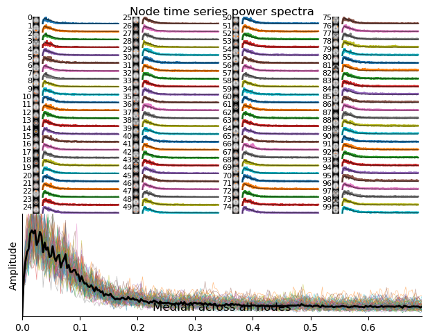
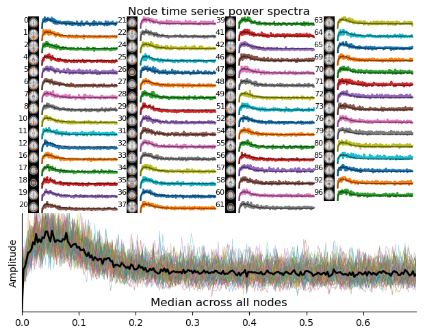

Resting state with FSLnets#
This interactive demonstration is based on the official FSL course “Resting state FSLnets practical”.
FSLnets is a toolbox for analyzing brain network connectivity from fMRI time series, typically derived from resting-state data. It takes as input the timecourses from specific brain regions, usually obtained via group-ICA and dual regression, and computes subject-level connectivity matrices using full or partial correlations. These network matrices can then be used for statistical comparisons across subjects or groups.
Author: Monika Doerig
Citation:#
Tools included in this workflow#
FSL/ FSLnets:
M. Jenkinson, C.F. Beckmann, T.E. Behrens, M.W. Woolrich, S.M. Smith. FSL. NeuroImage, 62:782-90, 2012. https://doi.org/10.1016/j.neuroimage.2011.09.015
Smith SM, Beckmann CF, Auerbach EJ, et al. (2013). Resting-state fMRI in the Human Connectome Project. NeuroImage, 80, 144–168. https://doi.org/10.1016/j.neuroimage.2013.05.039
Educational resources#
Dataset#
Output CPU information#
!cat /proc/cpuinfo | grep 'vendor' | uniq
!cat /proc/cpuinfo | grep 'model name' | uniq
vendor_id : AuthenticAMD
model name : AMD EPYC-Rome Processor
Introduction to FSLnets#
FSLnets enables network modeling of fMRI data by analyzing the temporal relationships between brain regions. It is particularly useful for group-level studies of functional connectivity, where the goal is to identify differences or commonalities in brain network organization
The typical FSLnets pipeline includes:
Extracting subject-level timeseries spatial node maps (e.g., dual regression outputs)
Identifying and removing structured noise components from the data
Computing full or partial correlation matrices (netmats) for each subject
Exploring group-average connectivity patterns and hierarchical node clustering
Performing statistical comparisons of connectivity across subjects or group
(Optional) Conducting multivariate cross-subject analysis, which uses the full network matrix to classify or differentiate groups (e.g., patients vs. controls) using machine learning techniques like linear discriminant analysis (LDA), support vector machines (SVM), or random forests
This notebook guides you through the core steps of network analysis: estimating connectivity matrices, comparing them across groups, and visualizing the results.
For a full pipeline and detailed information about the steps, refer to the complete Resting state FSLnets practical.
Load FSL and Import Python libraries#
import module
await module.load('fsl/6.0.7.16')
await module.list()
['Lmod',
'Warning:',
'The',
'environment',
'MODULEPATH',
'has',
'been',
'changed',
'in',
'unexpected',
'ways.',
'Lmod',
'is',
'unable',
'to',
'use',
'given',
'MODULEPATH.',
'It',
'is',
'using:',
'"/cvmfs/neurodesk.ardc.edu.au/neurodesk-modules/functional_imaging:/cvmfs/neurodesk.ardc.edu.au/neurodesk-modules/rodent_imaging:/cvmfs/neurodesk.ardc.edu.au/neurodesk-modules/image_registration:/cvmfs/neurodesk.ardc.edu.au/neurodesk-modules/structural_imaging:/cvmfs/neurodesk.ardc.edu.au/neurodesk-modules/image_segmentation:/cvmfs/neurodesk.ardc.edu.au/neurodesk-modules/quantitative_imaging:/cvmfs/neurodesk.ardc.edu.au/neurodesk-modules/workflows:/cvmfs/neurodesk.ardc.edu.au/neurodesk-modules/hippocampus:/cvmfs/neurodesk.ardc.edu.au/neurodesk-modules/image_reconstruction:/cvmfs/neurodesk.ardc.edu.au/neurodesk-modules/data_organisation:/cvmfs/neurodesk.ardc.edu.au/neurodesk-modules/electrophysiology:/cvmfs/neurodesk.ardc.edu.au/neurodesk-modules/phase_processing:/cvmfs/neurodesk.ardc.edu.au/neurodesk-modules/programming:/cvmfs/neurodesk.ardc.edu.au/neurodesk-modules/machine_learning:/cvmfs/neurodesk.ardc.edu.au/neurodesk-modules/diffusion_imaging:/cvmfs/neurodesk.ardc.edu.au/neurodesk-modules/body:/cvmfs/neurodesk.ardc.edu.au/neurodesk-modules/visualization:/cvmfs/neurodesk.ardc.edu.au/neurodesk-modules/spectroscopy:/cvmfs/neurodesk.ardc.edu.au/neurodesk-modules/quality_control:/cvmfs/neurodesk.ardc.edu.au/neurodesk-modules/statistics:/cvmfs/neurodesk.ardc.edu.au/neurodesk-modules/shape_analysis:/cvmfs/neurodesk.ardc.edu.au/neurodesk-modules/spine:/cvmfs/neurodesk.ardc.edu.au/neurodesk-modules/molecular_biology:/cvmfs/neurodesk.ardc.edu.au/neurodesk-modules/bids_apps:/cvmfs/neurodesk.ardc.edu.au/neurodesk-modules/cryo_EM:/cvmfs/neurodesk.ardc.edu.au/neurodesk-modules/other::".',
'Please',
'use',
'"module',
'use',
'to',
'change',
'MODULEPATH',
'instead.',
'fsl/6.0.7.16']
import subprocess
from IPython.display import Image, Markdown
import numpy as np
Download course material#
!wget -c -nc https://fsl.fmrib.ox.ac.uk/fslcourse/downloads/rest.tar.gz
!tar -xzvf rest.tar.gz --wildcards --no-anchored 'rest/Nets/*'
!rm -r rest.tar.gz
--2025-07-30 23:17:45-- https://fsl.fmrib.ox.ac.uk/fslcourse/downloads/rest.tar.gz
Resolving fsl.fmrib.ox.ac.uk (fsl.fmrib.ox.ac.uk)...
129.67.248.66
Connecting to fsl.fmrib.ox.ac.uk (fsl.fmrib.ox.ac.uk)|129.67.248.66|:443...
connected.
HTTP request sent, awaiting response...
200 OK
Length: 15935669577 (15G) [application/x-gzip]
Saving to: ‘rest.tar.gz’
rest.tar.gz 0%[ ] 0 --.-KB/s
rest.tar.gz 0%[ ] 15.38K 55.3KB/s
rest.tar.gz 0%[ ] 46.63K 83.5KB/s
rest.tar.gz 0%[ ] 101.31K 121KB/s
rest.tar.gz 0%[ ] 218.50K 195KB/s
rest.tar.gz 0%[ ] 452.88K 324KB/s
rest.tar.gz 0%[ ] 921.63K 549KB/s
rest.tar.gz 0%[ ] 1.81M 945KB/s
rest.tar.gz 0%[ ] 3.63M 1.62MB/s
rest.tar.gz 0%[ ] 6.47M 2.56MB/s
rest.tar.gz 0%[ ] 9.45M 3.37MB/s
rest.tar.gz 0%[ ] 12.41M 4.02MB/s eta 62m 57s
rest.tar.gz 0%[ ] 15.12M 4.49MB/s eta 62m 57s
rest.tar.gz 0%[ ] 18.07M 4.95MB/s eta 62m 57s
rest.tar.gz 0%[ ] 21.03M 5.35MB/s eta 62m 57s
rest.tar.gz 0%[ ] 23.60M 5.61MB/s eta 45m 6s
rest.tar.gz 0%[ ] 26.56M 5.92MB/s eta 45m 6s
rest.tar.gz 0%[ ] 29.53M 6.19MB/s eta 45m 6s
rest.tar.gz 0%[ ] 32.51M 6.44MB/s eta 45m 6s
rest.tar.gz 0%[ ] 35.34M 6.63MB/s eta 38m 8s
rest.tar.gz 0%[ ] 38.30M 6.82MB/s eta 38m 8s
rest.tar.gz 0%[ ] 41.26M 7.34MB/s eta 38m 8s
rest.tar.gz 0%[ ] 44.05M 7.83MB/s eta 38m 8s
rest.tar.gz 0%[ ] 46.93M 8.34MB/s eta 34m 45s
rest.tar.gz 0%[ ] 49.65M 8.80MB/s eta 34m 45s
rest.tar.gz 0%[ ] 52.63M 9.28MB/s eta 34m 45s
rest.tar.gz 0%[ ] 55.61M 9.73MB/s eta 34m 45s
rest.tar.gz 0%[ ] 58.30M 10.0MB/s eta 32m 49s
rest.tar.gz 0%[ ] 61.28M 10.3MB/s eta 32m 49s
rest.tar.gz 0%[ ] 63.99M 10.2MB/s eta 32m 49s
rest.tar.gz 0%[ ] 66.96M 10.2MB/s eta 32m 49s
rest.tar.gz 0%[ ] 69.66M 10.2MB/s eta 31m 30s
rest.tar.gz 0%[ ] 72.65M 10.2MB/s eta 31m 30s
rest.tar.gz 0%[ ] 75.62M 10.3MB/s eta 31m 30s
rest.tar.gz 0%[ ] 78.50M 10.2MB/s eta 31m 30s
rest.tar.gz 0%[ ] 81.36M 10.3MB/s eta 30m 26s
rest.tar.gz 0%[ ] 84.34M 10.3MB/s eta 30m 26s
rest.tar.gz 0%[ ] 87.32M 10.3MB/s eta 30m 26s
rest.tar.gz 0%[ ] 90.29M 10.3MB/s eta 30m 26s
rest.tar.gz 0%[ ] 93.02M 10.3MB/s eta 29m 38s
rest.tar.gz 0%[ ] 95.99M 10.3MB/s eta 29m 38s
rest.tar.gz 0%[ ] 98.98M 10.3MB/s eta 29m 38s
rest.tar.gz 0%[ ] 101.91M 10.3MB/s eta 29m 38s
rest.tar.gz 0%[ ] 104.69M 10.3MB/s eta 29m 2s
rest.tar.gz 0%[ ] 107.65M 10.3MB/s eta 29m 2s
rest.tar.gz 0%[ ] 110.59M 10.3MB/s eta 29m 2s
rest.tar.gz 0%[ ] 113.57M 10.3MB/s eta 29m 2s
rest.tar.gz 0%[ ] 116.44M 10.3MB/s eta 28m 30s
rest.tar.gz 0%[ ] 119.34M 10.3MB/s eta 28m 30s
rest.tar.gz 0%[ ] 122.30M 10.3MB/s eta 28m 30s
rest.tar.gz 0%[ ] 125.27M 10.3MB/s eta 28m 30s
rest.tar.gz 0%[ ] 128.24M 10.4MB/s eta 28m 5s
rest.tar.gz 0%[ ] 131.07M 10.3MB/s eta 28m 5s
rest.tar.gz 0%[ ] 134.05M 10.3MB/s eta 28m 5s
rest.tar.gz 0%[ ] 137.02M 10.3MB/s eta 28m 5s
rest.tar.gz 0%[ ] 139.77M 10.3MB/s eta 27m 48s
rest.tar.gz 0%[ ] 142.72M 10.3MB/s eta 27m 48s
rest.tar.gz 0%[ ] 145.64M 10.3MB/s eta 27m 48s
rest.tar.gz 0%[ ] 148.57M 10.3MB/s eta 27m 48s
rest.tar.gz 0%[ ] 151.22M 10.3MB/s eta 27m 34s
rest.tar.gz 1%[ ] 154.20M 10.3MB/s eta 27m 34s
rest.tar.gz 1%[ ] 157.17M 10.2MB/s eta 27m 34s
rest.tar.gz 1%[ ] 159.77M 10.2MB/s eta 27m 34s
rest.tar.gz 1%[ ] 162.70M 10.2MB/s eta 27m 20s
rest.tar.gz 1%[ ] 165.65M 10.2MB/s eta 27m 20s
rest.tar.gz 1%[ ] 168.62M 10.2MB/s eta 27m 20s
rest.tar.gz 1%[ ] 171.61M 10.2MB/s eta 27m 20s
rest.tar.gz 1%[ ] 174.60M 10.3MB/s eta 27m 3s
rest.tar.gz 1%[ ] 177.50M 10.3MB/s eta 27m 3s
rest.tar.gz 1%[ ] 180.44M 10.3MB/s eta 27m 3s
rest.tar.gz 1%[ ] 183.40M 10.3MB/s eta 27m 3s
rest.tar.gz 1%[ ] 186.22M 10.2MB/s eta 26m 53s
rest.tar.gz 1%[ ] 189.04M 10.3MB/s eta 26m 53s
rest.tar.gz 1%[ ] 191.96M 10.2MB/s eta 26m 53s
rest.tar.gz 1%[ ] 194.91M 10.2MB/s eta 26m 53s
rest.tar.gz 1%[ ] 197.89M 10.3MB/s eta 26m 42s
rest.tar.gz 1%[ ] 200.84M 10.3MB/s eta 26m 42s
rest.tar.gz 1%[ ] 203.80M 10.3MB/s eta 26m 42s
rest.tar.gz 1%[ ] 206.44M 10.2MB/s eta 26m 42s
rest.tar.gz 1%[ ] 209.43M 10.3MB/s eta 26m 33s
rest.tar.gz 1%[ ] 212.30M 10.3MB/s eta 26m 33s
rest.tar.gz 1%[ ] 215.28M 10.3MB/s eta 26m 33s
rest.tar.gz 1%[ ] 218.19M 10.4MB/s eta 26m 33s
rest.tar.gz 1%[ ] 221.11M 10.4MB/s eta 26m 24s
rest.tar.gz 1%[ ] 223.94M 10.3MB/s eta 26m 24s
rest.tar.gz 1%[ ] 226.92M 10.3MB/s eta 26m 24s
rest.tar.gz 1%[ ] 229.84M 10.3MB/s eta 26m 24s
rest.tar.gz 1%[ ] 232.82M 10.3MB/s eta 26m 16s
rest.tar.gz 1%[ ] 235.72M 10.3MB/s eta 26m 16s
rest.tar.gz 1%[ ] 238.68M 10.3MB/s eta 26m 16s
rest.tar.gz 1%[ ] 241.63M 10.3MB/s eta 26m 16s
rest.tar.gz 1%[ ] 244.38M 10.3MB/s eta 26m 10s
rest.tar.gz 1%[ ] 247.34M 10.3MB/s eta 26m 10s
rest.tar.gz 1%[ ] 250.29M 10.4MB/s eta 26m 10s
rest.tar.gz 1%[ ] 253.27M 10.4MB/s eta 26m 10s
rest.tar.gz 1%[ ] 256.21M 10.4MB/s eta 26m 1s
rest.tar.gz 1%[ ] 259.19M 10.4MB/s eta 26m 1s
rest.tar.gz 1%[ ] 262.14M 10.4MB/s eta 26m 1s
rest.tar.gz 1%[ ] 264.90M 10.3MB/s eta 26m 1s
rest.tar.gz 1%[ ] 267.88M 10.3MB/s eta 25m 56s
rest.tar.gz 1%[ ] 270.87M 10.3MB/s eta 25m 56s
rest.tar.gz 1%[ ] 273.68M 10.3MB/s eta 25m 56s
rest.tar.gz 1%[ ] 276.61M 10.3MB/s eta 25m 56s
rest.tar.gz 1%[ ] 279.17M 10.2MB/s eta 25m 52s
rest.tar.gz 1%[ ] 282.15M 10.3MB/s eta 25m 52s
rest.tar.gz 1%[ ] 285.13M 10.3MB/s eta 25m 52s
rest.tar.gz 1%[ ] 288.08M 10.3MB/s eta 25m 52s
rest.tar.gz 1%[ ] 291.04M 10.3MB/s eta 25m 45s
rest.tar.gz 1%[ ] 294.02M 10.3MB/s eta 25m 45s
rest.tar.gz 1%[ ] 296.74M 10.3MB/s eta 25m 45s
rest.tar.gz 1%[ ] 299.73M 10.3MB/s eta 25m 45s
rest.tar.gz 1%[ ] 302.70M 10.3MB/s eta 25m 40s
rest.tar.gz 2%[ ] 305.69M 10.3MB/s eta 25m 40s
rest.tar.gz 2%[ ] 308.66M 10.3MB/s eta 25m 40s
rest.tar.gz 2%[ ] 311.64M 10.3MB/s eta 25m 40s
rest.tar.gz 2%[ ] 314.18M 10.3MB/s eta 25m 36s
rest.tar.gz 2%[ ] 317.14M 10.3MB/s eta 25m 36s
rest.tar.gz 2%[ ] 320.01M 10.3MB/s eta 25m 36s
rest.tar.gz 2%[ ] 322.95M 10.3MB/s eta 25m 36s
rest.tar.gz 2%[ ] 325.92M 10.3MB/s eta 25m 30s
rest.tar.gz 2%[ ] 328.89M 10.3MB/s eta 25m 30s
rest.tar.gz 2%[ ] 331.86M 10.4MB/s eta 25m 30s
rest.tar.gz 2%[ ] 334.78M 10.4MB/s eta 25m 30s
rest.tar.gz 2%[ ] 337.75M 10.4MB/s eta 25m 25s
rest.tar.gz 2%[ ] 340.71M 10.4MB/s eta 25m 25s
rest.tar.gz 2%[ ] 343.47M 10.4MB/s eta 25m 25s
rest.tar.gz 2%[ ] 346.46M 10.4MB/s eta 25m 25s
rest.tar.gz 2%[ ] 349.40M 10.4MB/s eta 25m 21s
rest.tar.gz 2%[ ] 352.39M 10.4MB/s eta 25m 21s
rest.tar.gz 2%[ ] 355.36M 10.4MB/s eta 25m 21s
rest.tar.gz 2%[ ] 358.32M 10.4MB/s eta 25m 21s
rest.tar.gz 2%[ ] 361.24M 10.4MB/s eta 25m 16s
rest.tar.gz 2%[ ] 364.20M 10.4MB/s eta 25m 16s
rest.tar.gz 2%[ ] 366.79M 10.4MB/s eta 25m 16s
rest.tar.gz 2%[ ] 369.77M 10.4MB/s eta 25m 16s
rest.tar.gz 2%[ ] 372.76M 10.4MB/s eta 25m 12s
rest.tar.gz 2%[ ] 375.74M 10.4MB/s eta 25m 12s
rest.tar.gz 2%[ ] 378.70M 10.5MB/s eta 25m 12s
rest.tar.gz 2%[ ] 381.68M 10.5MB/s eta 25m 12s
rest.tar.gz 2%[ ] 384.65M 10.5MB/s eta 25m 7s
rest.tar.gz 2%[ ] 387.42M 10.4MB/s eta 25m 7s
rest.tar.gz 2%[ ] 390.08M 10.4MB/s eta 25m 7s
rest.tar.gz 2%[ ] 393.06M 10.4MB/s eta 25m 7s
rest.tar.gz 2%[ ] 396.03M 10.4MB/s eta 25m 5s
rest.tar.gz 2%[ ] 399.01M 10.4MB/s eta 25m 5s
rest.tar.gz 2%[ ] 401.98M 10.4MB/s eta 25m 5s
rest.tar.gz 2%[ ] 404.96M 10.4MB/s eta 25m 5s
rest.tar.gz 2%[ ] 407.93M 10.5MB/s eta 25m 0s
rest.tar.gz 2%[ ] 410.89M 10.5MB/s eta 25m 0s
rest.tar.gz 2%[ ] 413.46M 10.4MB/s eta 25m 0s
rest.tar.gz 2%[ ] 416.38M 10.4MB/s eta 25m 0s
rest.tar.gz 2%[ ] 419.37M 10.4MB/s eta 24m 58s
rest.tar.gz 2%[ ] 422.34M 10.4MB/s eta 24m 58s
rest.tar.gz 2%[ ] 425.27M 10.4MB/s eta 24m 58s
rest.tar.gz 2%[ ] 427.81M 10.4MB/s eta 24m 58s
rest.tar.gz 2%[ ] 430.75M 10.3MB/s eta 24m 56s
rest.tar.gz 2%[ ] 433.72M 10.3MB/s eta 24m 56s
rest.tar.gz 2%[ ] 436.71M 10.3MB/s eta 24m 56s
rest.tar.gz 2%[ ] 439.69M 10.3MB/s eta 24m 56s
rest.tar.gz 2%[ ] 442.64M 10.3MB/s eta 24m 52s
rest.tar.gz 2%[ ] 445.62M 10.4MB/s eta 24m 52s
rest.tar.gz 2%[ ] 448.61M 10.4MB/s eta 24m 52s
rest.tar.gz 2%[ ] 451.60M 10.4MB/s eta 24m 52s
rest.tar.gz 2%[ ] 454.13M 10.4MB/s eta 24m 49s
rest.tar.gz 3%[ ] 457.11M 10.4MB/s eta 24m 49s
rest.tar.gz 3%[ ] 460.09M 10.4MB/s eta 24m 49s
rest.tar.gz 3%[ ] 463.06M 10.4MB/s eta 24m 49s
rest.tar.gz 3%[ ] 466.02M 10.4MB/s eta 24m 45s
rest.tar.gz 3%[ ] 469.00M 10.4MB/s eta 24m 45s
rest.tar.gz 3%[ ] 471.96M 10.4MB/s eta 24m 45s
rest.tar.gz 3%[ ] 474.92M 10.5MB/s eta 24m 45s
rest.tar.gz 3%[ ] 477.83M 10.4MB/s eta 24m 42s
rest.tar.gz 3%[ ] 480.80M 10.4MB/s eta 24m 42s
rest.tar.gz 3%[ ] 483.38M 10.4MB/s eta 24m 42s
rest.tar.gz 3%[ ] 486.34M 10.4MB/s eta 24m 42s
rest.tar.gz 3%[ ] 489.30M 10.4MB/s eta 24m 40s
rest.tar.gz 3%[ ] 492.28M 10.4MB/s eta 24m 40s
rest.tar.gz 3%[ ] 495.22M 10.4MB/s eta 24m 40s
rest.tar.gz 3%[ ] 498.21M 10.4MB/s eta 24m 40s
rest.tar.gz 3%[ ] 500.90M 10.4MB/s eta 24m 37s
rest.tar.gz 3%[ ] 503.88M 10.4MB/s eta 24m 37s
rest.tar.gz 3%[ ] 506.84M 10.4MB/s eta 24m 37s
rest.tar.gz 3%[ ] 509.80M 10.4MB/s eta 24m 37s
rest.tar.gz 3%[ ] 512.77M 10.4MB/s eta 24m 34s
rest.tar.gz 3%[ ] 515.74M 10.4MB/s eta 24m 34s
rest.tar.gz 3%[ ] 518.70M 10.4MB/s eta 24m 34s
rest.tar.gz 3%[ ] 521.42M 10.1MB/s eta 24m 34s
rest.tar.gz 3%[ ] 524.37M 10.3MB/s eta 24m 32s
rest.tar.gz 3%[ ] 527.35M 10.1MB/s eta 24m 32s
rest.tar.gz 3%[ ] 530.29M 10.3MB/s eta 24m 32s
rest.tar.gz 3%[ ] 533.25M 10.4MB/s eta 24m 32s
rest.tar.gz 3%[ ] 536.20M 10.4MB/s eta 24m 29s
rest.tar.gz 3%[ ] 538.85M 10.1MB/s eta 24m 29s
rest.tar.gz 3%[ ] 541.74M 10.3MB/s eta 24m 29s
rest.tar.gz 3%[ ] 544.66M 10.4MB/s eta 24m 29s
rest.tar.gz 3%[ ] 547.63M 10.4MB/s eta 24m 27s
rest.tar.gz 3%[ ] 550.56M 10.0MB/s eta 24m 27s
rest.tar.gz 3%[ ] 553.54M 10.3MB/s eta 24m 27s
rest.tar.gz 3%[ ] 556.51M 10.2MB/s eta 24m 27s
rest.tar.gz 3%[ ] 559.19M 10.4MB/s eta 24m 25s
rest.tar.gz 3%[ ] 562.16M 10.1MB/s eta 24m 25s
rest.tar.gz 3%[ ] 565.13M 10.2MB/s eta 24m 25s
rest.tar.gz 3%[ ] 568.08M 10.1MB/s eta 24m 25s
rest.tar.gz 3%[ ] 571.03M 10.5MB/s eta 24m 22s
rest.tar.gz 3%[ ] 573.94M 10.2MB/s eta 24m 22s
rest.tar.gz 3%[ ] 576.90M 10.5MB/s eta 24m 22s
rest.tar.gz 3%[ ] 579.58M 10.1MB/s eta 24m 22s
rest.tar.gz 3%[ ] 582.54M 10.4MB/s eta 24m 20s
rest.tar.gz 3%[ ] 585.49M 10.2MB/s eta 24m 20s
rest.tar.gz 3%[ ] 588.46M 10.5MB/s eta 24m 20s
rest.tar.gz 3%[ ] 591.45M 10.3MB/s eta 24m 20s
rest.tar.gz 3%[ ] 594.43M 10.5MB/s eta 24m 17s
rest.tar.gz 3%[ ] 597.42M 10.3MB/s eta 24m 17s
rest.tar.gz 3%[ ] 599.97M 10.4MB/s eta 24m 17s
rest.tar.gz 3%[ ] 602.95M 10.2MB/s eta 24m 17s
rest.tar.gz 3%[ ] 605.89M 10.5MB/s eta 24m 16s
rest.tar.gz 4%[ ] 608.84M 10.3MB/s eta 24m 16s
rest.tar.gz 4%[ ] 611.82M 10.5MB/s eta 24m 16s
rest.tar.gz 4%[ ] 614.65M 10.6MB/s eta 24m 16s
rest.tar.gz 4%[ ] 615.44M 10.2MB/s eta 24m 16s
rest.tar.gz 4%[ ] 618.05M 10.3MB/s eta 24m 14s
rest.tar.gz 4%[ ] 620.72M 10.2MB/s eta 24m 14s
rest.tar.gz 4%[ ] 623.69M 10.2MB/s eta 24m 14s
rest.tar.gz 4%[ ] 626.66M 10.2MB/s eta 24m 14s
rest.tar.gz 4%[ ] 629.59M 10.2MB/s eta 24m 13s
rest.tar.gz 4%[ ] 632.55M 10.2MB/s eta 24m 13s
rest.tar.gz 4%[ ] 635.54M 10.2MB/s eta 24m 13s
rest.tar.gz 4%[ ] 638.27M 10.5MB/s eta 24m 13s
rest.tar.gz 4%[ ] 640.59M 10.4MB/s eta 24m 10s
rest.tar.gz 4%[ ] 643.42M 10.6MB/s eta 24m 10s
rest.tar.gz 4%[ ] 644.78M 10.5MB/s eta 24m 10s
rest.tar.gz 4%[ ] 646.98M 10.2MB/s eta 24m 10s
rest.tar.gz 4%[ ] 649.91M 10.5MB/s eta 24m 10s
rest.tar.gz 4%[ ] 652.22M 10.6MB/s eta 24m 6s
rest.tar.gz 4%[ ] 653.63M 10.3MB/s eta 24m 6s
rest.tar.gz 4%[ ] 655.87M 10.4MB/s eta 24m 6s
rest.tar.gz 4%[ ] 658.77M 10.5MB/s eta 24m 6s
rest.tar.gz 4%[ ] 660.54M 10.5MB/s eta 24m 6s
rest.tar.gz 4%[ ] 662.04M 10.4MB/s eta 24m 7s
rest.tar.gz 4%[ ] 664.77M 10.3MB/s eta 24m 7s
rest.tar.gz 4%[ ] 667.19M 10.5MB/s eta 24m 7s
rest.tar.gz 4%[ ] 669.46M 10.6MB/s eta 24m 7s
rest.tar.gz 4%[ ] 670.93M 10.3MB/s eta 24m 7s
rest.tar.gz 4%[ ] 673.69M 10.5MB/s eta 24m 4s
rest.tar.gz 4%[ ] 675.95M 10.5MB/s eta 24m 4s
rest.tar.gz 4%[ ] 678.35M 10.6MB/s eta 24m 4s
rest.tar.gz 4%[ ] 679.79M 10.2MB/s eta 24m 4s
rest.tar.gz 4%[ ] 682.17M 10.5MB/s eta 24m 4s
rest.tar.gz 4%[ ] 684.82M 10.5MB/s eta 24m 1s
rest.tar.gz 4%[ ] 686.59M 10.4MB/s eta 24m 1s
rest.tar.gz 4%[ ] 688.70M 10.5MB/s eta 24m 1s
rest.tar.gz 4%[ ] 691.05M 10.4MB/s eta 24m 1s
rest.tar.gz 4%[ ] 693.66M 10.6MB/s eta 24m 1s
rest.tar.gz 4%[ ] 695.49M 10.4MB/s eta 24m 0s
rest.tar.gz 4%[ ] 697.36M 10.4MB/s eta 24m 0s
rest.tar.gz 4%[ ] 699.89M 10.4MB/s eta 24m 0s
rest.tar.gz 4%[ ] 702.06M 10.6MB/s eta 24m 0s
rest.tar.gz 4%[ ] 704.39M 10.5MB/s eta 24m 0s
rest.tar.gz 4%[ ] 706.19M 10.5MB/s eta 23m 59s
rest.tar.gz 4%[ ] 708.80M 10.4MB/s eta 23m 59s
rest.tar.gz 4%[ ] 710.99M 10.5MB/s eta 23m 59s
rest.tar.gz 4%[ ] 712.94M 10.4MB/s eta 23m 59s
rest.tar.gz 4%[ ] 715.09M 10.5MB/s eta 23m 59s
rest.tar.gz 4%[ ] 717.70M 10.4MB/s eta 23m 56s
rest.tar.gz 4%[ ] 719.92M 10.5MB/s eta 23m 56s
rest.tar.gz 4%[ ] 721.53M 10.3MB/s eta 23m 56s
rest.tar.gz 4%[ ] 723.98M 10.5MB/s eta 23m 56s
rest.tar.gz 4%[ ] 726.33M 10.3MB/s eta 23m 56s
rest.tar.gz 4%[ ] 728.97M 10.5MB/s eta 23m 54s
rest.tar.gz 4%[ ] 730.83M 10.4MB/s eta 23m 54s
rest.tar.gz 4%[ ] 732.56M 10.4MB/s eta 23m 54s
rest.tar.gz 4%[ ] 735.22M 10.5MB/s eta 23m 54s
rest.tar.gz 4%[ ] 737.86M 10.6MB/s eta 23m 54s
rest.tar.gz 4%[ ] 739.71M 10.5MB/s eta 23m 52s
rest.tar.gz 4%[ ] 741.29M 10.4MB/s eta 23m 52s
rest.tar.gz 4%[ ] 744.07M 10.5MB/s eta 23m 52s
rest.tar.gz 4%[ ] 746.76M 10.5MB/s eta 23m 52s
rest.tar.gz 4%[ ] 748.62M 10.6MB/s eta 23m 52s
rest.tar.gz 4%[ ] 750.17M 10.3MB/s eta 23m 52s
rest.tar.gz 4%[ ] 752.94M 10.5MB/s eta 23m 52s
rest.tar.gz 4%[ ] 755.00M 10.4MB/s eta 23m 52s
rest.tar.gz 4%[ ] 757.45M 10.5MB/s eta 23m 52s
rest.tar.gz 4%[ ] 759.00M 10.3MB/s eta 23m 52s
rest.tar.gz 5%[> ] 761.82M 10.6MB/s eta 23m 49s
rest.tar.gz 5%[> ] 763.88M 10.4MB/s eta 23m 49s
rest.tar.gz 5%[> ] 765.70M 10.5MB/s eta 23m 49s
rest.tar.gz 5%[> ] 767.91M 10.4MB/s eta 23m 49s
rest.tar.gz 5%[> ] 770.35M 10.4MB/s eta 23m 49s
rest.tar.gz 5%[> ] 772.82M 10.5MB/s eta 23m 47s
rest.tar.gz 5%[> ] 774.72M 10.3MB/s eta 23m 47s
rest.tar.gz 5%[> ] 776.49M 10.3MB/s eta 23m 47s
rest.tar.gz 5%[> ] 779.22M 10.4MB/s eta 23m 47s
rest.tar.gz 5%[> ] 781.74M 10.5MB/s eta 23m 47s
rest.tar.gz 5%[> ] 783.52M 10.3MB/s eta 23m 46s
rest.tar.gz 5%[> ] 785.33M 10.4MB/s eta 23m 46s
rest.tar.gz 5%[> ] 788.12M 10.5MB/s eta 23m 46s
rest.tar.gz 5%[> ] 790.66M 10.5MB/s eta 23m 46s
rest.tar.gz 5%[> ] 792.39M 10.5MB/s eta 23m 46s
rest.tar.gz 5%[> ] 794.25M 10.4MB/s eta 23m 44s
rest.tar.gz 5%[> ] 797.01M 10.4MB/s eta 23m 44s
rest.tar.gz 5%[> ] 799.16M 10.6MB/s eta 23m 44s
rest.tar.gz 5%[> ] 801.28M 10.4MB/s eta 23m 44s
rest.tar.gz 5%[> ] 803.11M 10.4MB/s eta 23m 44s
rest.tar.gz 5%[> ] 805.90M 10.5MB/s eta 23m 41s
rest.tar.gz 5%[> ] 808.03M 10.6MB/s eta 23m 41s
rest.tar.gz 5%[> ] 809.72M 10.4MB/s eta 23m 41s
rest.tar.gz 5%[> ] 811.96M 10.4MB/s eta 23m 41s
rest.tar.gz 5%[> ] 814.38M 10.4MB/s eta 23m 41s
rest.tar.gz 5%[> ] 816.91M 10.7MB/s eta 23m 40s
rest.tar.gz 5%[> ] 818.64M 10.5MB/s eta 23m 40s
rest.tar.gz 5%[> ] 820.87M 10.5MB/s eta 23m 40s
rest.tar.gz 5%[> ] 823.27M 10.4MB/s eta 23m 40s
rest.tar.gz 5%[> ] 825.82M 10.5MB/s eta 23m 40s
rest.tar.gz 5%[> ] 827.51M 10.6MB/s eta 23m 38s
rest.tar.gz 5%[> ] 829.35M 10.3MB/s eta 23m 38s
rest.tar.gz 5%[> ] 832.16M 10.6MB/s eta 23m 38s
rest.tar.gz 5%[> ] 834.77M 10.5MB/s eta 23m 38s
rest.tar.gz 5%[> ] 836.52M 10.6MB/s eta 23m 38s
rest.tar.gz 5%[> ] 838.42M 10.3MB/s eta 23m 37s
rest.tar.gz 5%[> ] 841.14M 10.6MB/s eta 23m 37s
rest.tar.gz 5%[> ] 843.24M 10.5MB/s eta 23m 37s
rest.tar.gz 5%[> ] 845.34M 10.6MB/s eta 23m 37s
rest.tar.gz 5%[> ] 847.14M 10.4MB/s eta 23m 37s
rest.tar.gz 5%[> ] 849.96M 10.6MB/s eta 23m 34s
rest.tar.gz 5%[> ] 852.05M 10.5MB/s eta 23m 34s
rest.tar.gz 5%[> ] 853.73M 10.5MB/s eta 23m 34s
rest.tar.gz 5%[> ] 856.06M 10.5MB/s eta 23m 34s
rest.tar.gz 5%[> ] 858.84M 10.6MB/s eta 23m 34s
rest.tar.gz 5%[> ] 860.92M 10.5MB/s eta 23m 33s
rest.tar.gz 5%[> ] 862.61M 10.6MB/s eta 23m 33s
rest.tar.gz 5%[> ] 864.97M 10.7MB/s eta 23m 33s
rest.tar.gz 5%[> ] 867.20M 10.5MB/s eta 23m 33s
rest.tar.gz 5%[> ] 868.87M 10.4MB/s eta 23m 33s
rest.tar.gz 5%[> ] 871.08M 10.5MB/s eta 23m 32s
rest.tar.gz 5%[> ] 873.50M 10.5MB/s eta 23m 32s
rest.tar.gz 5%[> ] 876.41M 10.5MB/s eta 23m 32s
rest.tar.gz 5%[> ] 878.68M 10.6MB/s eta 23m 32s
rest.tar.gz 5%[> ] 880.37M 10.4MB/s eta 23m 32s
rest.tar.gz 5%[> ] 882.36M 10.5MB/s eta 23m 31s
rest.tar.gz 5%[> ] 885.30M 10.5MB/s eta 23m 31s
rest.tar.gz 5%[> ] 886.89M 10.4MB/s eta 23m 31s
rest.tar.gz 5%[> ] 889.21M 10.4MB/s eta 23m 31s
rest.tar.gz 5%[> ] 891.25M 10.5MB/s eta 23m 31s
rest.tar.gz 5%[> ] 894.20M 10.4MB/s eta 23m 29s
rest.tar.gz 5%[> ] 897.16M 10.3MB/s eta 23m 29s
rest.tar.gz 5%[> ] 900.12M 10.4MB/s eta 23m 29s
rest.tar.gz 5%[> ] 903.05M 10.5MB/s eta 23m 29s
rest.tar.gz 5%[> ] 905.99M 10.3MB/s eta 23m 27s
rest.tar.gz 5%[> ] 908.95M 10.3MB/s eta 23m 27s
rest.tar.gz 6%[> ] 911.89M 10.6MB/s eta 23m 27s
rest.tar.gz 6%[> ] 914.86M 10.3MB/s eta 23m 27s
rest.tar.gz 6%[> ] 917.70M 10.6MB/s eta 23m 24s
rest.tar.gz 6%[> ] 919.44M 10.6MB/s eta 23m 24s
rest.tar.gz 6%[> ] 921.23M 10.6MB/s eta 23m 24s
rest.tar.gz 6%[> ] 923.77M 10.6MB/s eta 23m 24s
rest.tar.gz 6%[> ] 926.24M 10.5MB/s eta 23m 24s
rest.tar.gz 6%[> ] 927.83M 10.4MB/s eta 23m 24s
rest.tar.gz 6%[> ] 930.18M 10.5MB/s eta 23m 24s
rest.tar.gz 6%[> ] 932.26M 10.4MB/s eta 23m 24s
rest.tar.gz 6%[> ] 935.15M 10.4MB/s eta 23m 24s
rest.tar.gz 6%[> ] 936.76M 10.4MB/s eta 23m 24s
rest.tar.gz 6%[> ] 939.15M 10.5MB/s eta 23m 22s
rest.tar.gz 6%[> ] 941.14M 10.4MB/s eta 23m 22s
rest.tar.gz 6%[> ] 944.04M 10.7MB/s eta 23m 22s
rest.tar.gz 6%[> ] 945.62M 10.5MB/s eta 23m 22s
rest.tar.gz 6%[> ] 947.53M 10.3MB/s eta 23m 22s
rest.tar.gz 6%[> ] 950.02M 10.4MB/s eta 23m 21s
rest.tar.gz 6%[> ] 952.96M 10.4MB/s eta 23m 21s
rest.tar.gz 6%[> ] 955.92M 10.5MB/s eta 23m 21s
rest.tar.gz 6%[> ] 958.88M 10.4MB/s eta 23m 21s
rest.tar.gz 6%[> ] 961.54M 10.6MB/s eta 23m 18s
rest.tar.gz 6%[> ] 963.43M 10.4MB/s eta 23m 18s
rest.tar.gz 6%[> ] 965.45M 10.5MB/s eta 23m 18s
rest.tar.gz 6%[> ] 967.79M 10.4MB/s eta 23m 18s
rest.tar.gz 6%[> ] 970.12M 10.6MB/s eta 23m 18s
rest.tar.gz 6%[> ] 971.74M 10.3MB/s eta 23m 18s
rest.tar.gz 6%[> ] 974.21M 10.6MB/s eta 23m 18s
rest.tar.gz 6%[> ] 976.26M 10.2MB/s eta 23m 18s
rest.tar.gz 6%[> ] 979.12M 10.4MB/s eta 23m 18s
rest.tar.gz 6%[> ] 980.92M 10.5MB/s eta 23m 18s
rest.tar.gz 6%[> ] 983.34M 10.5MB/s eta 23m 16s
rest.tar.gz 6%[> ] 985.11M 10.4MB/s eta 23m 16s
rest.tar.gz 6%[> ] 987.88M 10.4MB/s eta 23m 16s
rest.tar.gz 6%[> ] 989.84M 10.6MB/s eta 23m 16s
rest.tar.gz 6%[> ] 992.14M 10.6MB/s eta 23m 16s
rest.tar.gz 6%[> ] 994.01M 10.4MB/s eta 23m 15s
rest.tar.gz 6%[> ] 996.79M 10.5MB/s eta 23m 15s
rest.tar.gz 6%[> ] 998.65M 10.6MB/s eta 23m 15s
rest.tar.gz 6%[> ] 1000M 10.4MB/s eta 23m 15s
rest.tar.gz 6%[> ] 1003M 10.4MB/s eta 23m 15s
rest.tar.gz 6%[> ] 1006M 10.5MB/s eta 23m 12s
rest.tar.gz 6%[> ] 1007M 10.6MB/s eta 23m 12s
rest.tar.gz 6%[> ] 1009M 10.4MB/s eta 23m 12s
rest.tar.gz 6%[> ] 1012M 10.4MB/s eta 23m 12s
rest.tar.gz 6%[> ] 1014M 10.4MB/s eta 23m 12s
rest.tar.gz 6%[> ] 1016M 10.5MB/s eta 23m 11s
rest.tar.gz 6%[> ] 1018M 10.4MB/s eta 23m 11s
rest.tar.gz 6%[> ] 1021M 10.6MB/s eta 23m 11s
rest.tar.gz 6%[> ] 1023M 10.4MB/s eta 23m 11s
rest.tar.gz 6%[> ] 1.00G 10.6MB/s eta 23m 11s
rest.tar.gz 6%[> ] 1.00G 10.5MB/s eta 23m 10s
rest.tar.gz 6%[> ] 1.00G 10.5MB/s eta 23m 10s
rest.tar.gz 6%[> ] 1.01G 10.6MB/s eta 23m 10s
rest.tar.gz 6%[> ] 1.01G 10.4MB/s eta 23m 10s
rest.tar.gz 6%[> ] 1.01G 10.5MB/s eta 23m 10s
rest.tar.gz 6%[> ] 1.01G 10.4MB/s eta 23m 9s
rest.tar.gz 6%[> ] 1.02G 10.6MB/s eta 23m 9s
rest.tar.gz 6%[> ] 1.02G 10.5MB/s eta 23m 9s
rest.tar.gz 6%[> ] 1.02G 10.6MB/s eta 23m 9s
rest.tar.gz 6%[> ] 1.02G 10.5MB/s eta 23m 9s
rest.tar.gz 6%[> ] 1.02G 10.5MB/s eta 23m 6s
rest.tar.gz 6%[> ] 1.03G 10.5MB/s eta 23m 6s
rest.tar.gz 6%[> ] 1.03G 10.6MB/s eta 23m 6s
rest.tar.gz 6%[> ] 1.03G 10.4MB/s eta 23m 6s
rest.tar.gz 6%[> ] 1.03G 10.7MB/s eta 23m 6s
rest.tar.gz 6%[> ] 1.04G 10.4MB/s eta 23m 5s
rest.tar.gz 6%[> ] 1.04G 10.6MB/s eta 23m 5s
rest.tar.gz 7%[> ] 1.04G 10.4MB/s eta 23m 5s
rest.tar.gz 7%[> ] 1.04G 10.6MB/s eta 23m 5s
rest.tar.gz 7%[> ] 1.04G 10.4MB/s eta 23m 5s
rest.tar.gz 7%[> ] 1.04G 10.4MB/s eta 23m 4s
rest.tar.gz 7%[> ] 1.05G 10.5MB/s eta 23m 4s
rest.tar.gz 7%[> ] 1.05G 10.7MB/s eta 23m 4s
rest.tar.gz 7%[> ] 1.05G 10.6MB/s eta 23m 4s
rest.tar.gz 7%[> ] 1.05G 10.3MB/s eta 23m 4s
rest.tar.gz 7%[> ] 1.06G 10.6MB/s eta 23m 2s
rest.tar.gz 7%[> ] 1.06G 10.6MB/s eta 23m 2s
rest.tar.gz 7%[> ] 1.06G 10.4MB/s eta 23m 2s
rest.tar.gz 7%[> ] 1.06G 10.4MB/s eta 23m 2s
rest.tar.gz 7%[> ] 1.07G 10.5MB/s eta 23m 2s
rest.tar.gz 7%[> ] 1.07G 10.6MB/s eta 23m 1s
rest.tar.gz 7%[> ] 1.07G 10.4MB/s eta 23m 1s
rest.tar.gz 7%[> ] 1.07G 10.4MB/s eta 23m 1s
rest.tar.gz 7%[> ] 1.07G 10.3MB/s eta 23m 1s
rest.tar.gz 7%[> ] 1.08G 10.3MB/s eta 23m 1s
rest.tar.gz 7%[> ] 1.08G 10.1MB/s eta 23m 0s
rest.tar.gz 7%[> ] 1.08G 10.4MB/s eta 23m 0s
rest.tar.gz 7%[> ] 1.08G 10.3MB/s eta 23m 0s
rest.tar.gz 7%[> ] 1.09G 10.4MB/s eta 23m 0s
rest.tar.gz 7%[> ] 1.09G 10.4MB/s eta 22m 58s
rest.tar.gz 7%[> ] 1.09G 10.4MB/s eta 22m 58s
rest.tar.gz 7%[> ] 1.10G 10.3MB/s eta 22m 58s
rest.tar.gz 7%[> ] 1.10G 10.2MB/s eta 22m 58s
rest.tar.gz 7%[> ] 1.10G 10.4MB/s eta 22m 56s
rest.tar.gz 7%[> ] 1.11G 10.5MB/s eta 22m 56s
rest.tar.gz 7%[> ] 1.11G 10.7MB/s eta 22m 56s
rest.tar.gz 7%[> ] 1.11G 10.3MB/s eta 22m 56s
rest.tar.gz 7%[> ] 1.11G 10.4MB/s eta 22m 56s
rest.tar.gz 7%[> ] 1.11G 10.5MB/s eta 22m 55s
rest.tar.gz 7%[> ] 1.12G 10.7MB/s eta 22m 55s
rest.tar.gz 7%[> ] 1.12G 10.4MB/s eta 22m 55s
rest.tar.gz 7%[> ] 1.12G 10.5MB/s eta 22m 55s
rest.tar.gz 7%[> ] 1.12G 10.7MB/s eta 22m 55s
rest.tar.gz 7%[> ] 1.12G 10.3MB/s eta 22m 54s
rest.tar.gz 7%[> ] 1.13G 10.6MB/s eta 22m 54s
rest.tar.gz 7%[> ] 1.13G 10.5MB/s eta 22m 54s
rest.tar.gz 7%[> ] 1.13G 10.6MB/s eta 22m 54s
rest.tar.gz 7%[> ] 1.13G 10.4MB/s eta 22m 54s
rest.tar.gz 7%[> ] 1.13G 10.4MB/s eta 22m 53s
rest.tar.gz 7%[> ] 1.14G 10.4MB/s eta 22m 53s
rest.tar.gz 7%[> ] 1.14G 10.6MB/s eta 22m 53s
rest.tar.gz 7%[> ] 1.14G 10.4MB/s eta 22m 53s
rest.tar.gz 7%[> ] 1.14G 10.4MB/s eta 22m 53s
rest.tar.gz 7%[> ] 1.15G 10.3MB/s eta 22m 51s
rest.tar.gz 7%[> ] 1.15G 10.6MB/s eta 22m 51s
rest.tar.gz 7%[> ] 1.15G 10.4MB/s eta 22m 51s
rest.tar.gz 7%[> ] 1.15G 10.4MB/s eta 22m 51s
rest.tar.gz 7%[> ] 1.15G 10.4MB/s eta 22m 51s
rest.tar.gz 7%[> ] 1.16G 10.4MB/s eta 22m 49s
rest.tar.gz 7%[> ] 1.16G 10.5MB/s eta 22m 49s
rest.tar.gz 7%[> ] 1.16G 10.5MB/s eta 22m 49s
rest.tar.gz 7%[> ] 1.16G 10.6MB/s eta 22m 49s
rest.tar.gz 7%[> ] 1.17G 10.4MB/s eta 22m 49s
rest.tar.gz 7%[> ] 1.17G 10.5MB/s eta 22m 48s
rest.tar.gz 7%[> ] 1.17G 10.5MB/s eta 22m 48s
rest.tar.gz 7%[> ] 1.17G 10.5MB/s eta 22m 48s
rest.tar.gz 7%[> ] 1.17G 10.6MB/s eta 22m 48s
rest.tar.gz 7%[> ] 1.18G 10.5MB/s eta 22m 48s
rest.tar.gz 7%[> ] 1.18G 10.5MB/s eta 22m 47s
rest.tar.gz 7%[> ] 1.18G 10.5MB/s eta 22m 47s
rest.tar.gz 7%[> ] 1.18G 10.7MB/s eta 22m 47s
rest.tar.gz 7%[> ] 1.18G 10.3MB/s eta 22m 47s
rest.tar.gz 7%[> ] 1.19G 10.4MB/s eta 22m 47s
rest.tar.gz 8%[> ] 1.19G 10.4MB/s eta 22m 45s
rest.tar.gz 8%[> ] 1.19G 10.6MB/s eta 22m 45s
rest.tar.gz 8%[> ] 1.19G 10.4MB/s eta 22m 45s
rest.tar.gz 8%[> ] 1.19G 10.5MB/s eta 22m 45s
rest.tar.gz 8%[> ] 1.20G 10.5MB/s eta 22m 45s
rest.tar.gz 8%[> ] 1.20G 10.4MB/s eta 22m 44s
rest.tar.gz 8%[> ] 1.20G 10.4MB/s eta 22m 44s
rest.tar.gz 8%[> ] 1.20G 10.3MB/s eta 22m 44s
rest.tar.gz 8%[> ] 1.21G 10.6MB/s eta 22m 44s
rest.tar.gz 8%[> ] 1.21G 10.4MB/s eta 22m 44s
rest.tar.gz 8%[> ] 1.21G 10.5MB/s eta 22m 43s
rest.tar.gz 8%[> ] 1.21G 10.5MB/s eta 22m 43s
rest.tar.gz 8%[> ] 1.21G 10.5MB/s eta 22m 43s
rest.tar.gz 8%[> ] 1.22G 10.7MB/s eta 22m 43s
rest.tar.gz 8%[> ] 1.22G 10.3MB/s eta 22m 43s
rest.tar.gz 8%[> ] 1.22G 10.4MB/s eta 22m 41s
rest.tar.gz 8%[> ] 1.22G 10.5MB/s eta 22m 41s
rest.tar.gz 8%[> ] 1.22G 10.5MB/s eta 22m 41s
rest.tar.gz 8%[> ] 1.23G 10.5MB/s eta 22m 41s
rest.tar.gz 8%[> ] 1.23G 10.4MB/s eta 22m 41s
rest.tar.gz 8%[> ] 1.23G 10.5MB/s eta 22m 40s
rest.tar.gz 8%[> ] 1.23G 10.4MB/s eta 22m 40s
rest.tar.gz 8%[> ] 1.24G 10.5MB/s eta 22m 40s
rest.tar.gz 8%[> ] 1.24G 10.4MB/s eta 22m 40s
rest.tar.gz 8%[> ] 1.24G 10.5MB/s eta 22m 40s
rest.tar.gz 8%[> ] 1.24G 10.5MB/s eta 22m 39s
rest.tar.gz 8%[> ] 1.24G 10.4MB/s eta 22m 39s
rest.tar.gz 8%[> ] 1.25G 10.4MB/s eta 22m 39s
rest.tar.gz 8%[> ] 1.25G 10.5MB/s eta 22m 39s
rest.tar.gz 8%[> ] 1.25G 10.4MB/s eta 22m 39s
rest.tar.gz 8%[> ] 1.25G 10.3MB/s eta 22m 37s
rest.tar.gz 8%[> ] 1.25G 10.4MB/s eta 22m 37s
rest.tar.gz 8%[> ] 1.26G 10.4MB/s eta 22m 37s
rest.tar.gz 8%[> ] 1.26G 10.5MB/s eta 22m 37s
rest.tar.gz 8%[> ] 1.26G 10.4MB/s eta 22m 37s
rest.tar.gz 8%[> ] 1.26G 10.6MB/s eta 22m 36s
rest.tar.gz 8%[> ] 1.27G 10.5MB/s eta 22m 36s
rest.tar.gz 8%[> ] 1.27G 10.4MB/s eta 22m 36s
rest.tar.gz 8%[> ] 1.27G 10.4MB/s eta 22m 36s
rest.tar.gz 8%[> ] 1.27G 10.3MB/s eta 22m 36s
rest.tar.gz 8%[> ] 1.27G 10.5MB/s eta 22m 35s
rest.tar.gz 8%[> ] 1.28G 10.5MB/s eta 22m 35s
rest.tar.gz 8%[> ] 1.28G 10.5MB/s eta 22m 35s
rest.tar.gz 8%[> ] 1.28G 10.5MB/s eta 22m 35s
rest.tar.gz 8%[> ] 1.28G 10.6MB/s eta 22m 35s
rest.tar.gz 8%[> ] 1.29G 10.3MB/s eta 22m 34s
rest.tar.gz 8%[> ] 1.29G 10.5MB/s eta 22m 34s
rest.tar.gz 8%[> ] 1.29G 10.4MB/s eta 22m 34s
rest.tar.gz 8%[> ] 1.29G 10.5MB/s eta 22m 34s
rest.tar.gz 8%[> ] 1.29G 10.4MB/s eta 22m 34s
rest.tar.gz 8%[> ] 1.30G 10.5MB/s eta 22m 32s
rest.tar.gz 8%[> ] 1.30G 10.6MB/s eta 22m 32s
rest.tar.gz 8%[> ] 1.30G 10.5MB/s eta 22m 32s
rest.tar.gz 8%[> ] 1.30G 10.4MB/s eta 22m 32s
rest.tar.gz 8%[> ] 1.30G 10.5MB/s eta 22m 32s
rest.tar.gz 8%[> ] 1.31G 10.5MB/s eta 22m 31s
rest.tar.gz 8%[> ] 1.31G 10.4MB/s eta 22m 31s
rest.tar.gz 8%[> ] 1.31G 10.6MB/s eta 22m 31s
rest.tar.gz 8%[> ] 1.31G 10.6MB/s eta 22m 31s
rest.tar.gz 8%[> ] 1.31G 10.5MB/s eta 22m 31s
rest.tar.gz 8%[> ] 1.32G 10.5MB/s eta 22m 29s
rest.tar.gz 8%[> ] 1.32G 10.4MB/s eta 22m 29s
rest.tar.gz 8%[> ] 1.32G 10.6MB/s eta 22m 29s
rest.tar.gz 8%[> ] 1.32G 10.5MB/s eta 22m 29s
rest.tar.gz 8%[> ] 1.33G 10.5MB/s eta 22m 29s
rest.tar.gz 8%[> ] 1.33G 10.6MB/s eta 22m 28s
rest.tar.gz 8%[> ] 1.33G 10.4MB/s eta 22m 28s
rest.tar.gz 8%[> ] 1.33G 10.5MB/s eta 22m 28s
rest.tar.gz 8%[> ] 1.33G 10.4MB/s eta 22m 28s
rest.tar.gz 9%[> ] 1.34G 10.6MB/s eta 22m 28s
rest.tar.gz 9%[> ] 1.34G 10.5MB/s eta 22m 27s
rest.tar.gz 9%[> ] 1.34G 10.6MB/s eta 22m 27s
rest.tar.gz 9%[> ] 1.34G 10.5MB/s eta 22m 27s
rest.tar.gz 9%[> ] 1.34G 10.6MB/s eta 22m 27s
rest.tar.gz 9%[> ] 1.35G 10.6MB/s eta 22m 27s
rest.tar.gz 9%[> ] 1.35G 10.4MB/s eta 22m 26s
rest.tar.gz 9%[> ] 1.35G 10.4MB/s eta 22m 26s
rest.tar.gz 9%[> ] 1.35G 10.5MB/s eta 22m 26s
rest.tar.gz 9%[> ] 1.36G 10.5MB/s eta 22m 26s
rest.tar.gz 9%[> ] 1.36G 10.5MB/s eta 22m 26s
rest.tar.gz 9%[> ] 1.36G 10.6MB/s eta 22m 24s
rest.tar.gz 9%[> ] 1.36G 10.6MB/s eta 22m 24s
rest.tar.gz 9%[> ] 1.36G 10.5MB/s eta 22m 24s
rest.tar.gz 9%[> ] 1.37G 10.4MB/s eta 22m 24s
rest.tar.gz 9%[> ] 1.37G 10.6MB/s eta 22m 24s
rest.tar.gz 9%[> ] 1.37G 10.6MB/s eta 22m 23s
rest.tar.gz 9%[> ] 1.37G 10.5MB/s eta 22m 23s
rest.tar.gz 9%[> ] 1.37G 10.6MB/s eta 22m 23s
rest.tar.gz 9%[> ] 1.38G 10.6MB/s eta 22m 23s
rest.tar.gz 9%[> ] 1.38G 10.5MB/s eta 22m 23s
rest.tar.gz 9%[> ] 1.38G 10.4MB/s eta 22m 22s
rest.tar.gz 9%[> ] 1.38G 10.5MB/s eta 22m 22s
rest.tar.gz 9%[> ] 1.38G 10.5MB/s eta 22m 22s
rest.tar.gz 9%[> ] 1.39G 10.5MB/s eta 22m 22s
rest.tar.gz 9%[> ] 1.39G 10.6MB/s eta 22m 22s
rest.tar.gz 9%[> ] 1.39G 10.6MB/s eta 22m 21s
rest.tar.gz 9%[> ] 1.39G 10.7MB/s eta 22m 21s
rest.tar.gz 9%[> ] 1.39G 10.4MB/s eta 22m 21s
rest.tar.gz 9%[> ] 1.40G 10.3MB/s eta 22m 21s
rest.tar.gz 9%[> ] 1.40G 10.5MB/s eta 22m 21s
rest.tar.gz 9%[> ] 1.40G 10.5MB/s eta 22m 19s
rest.tar.gz 9%[> ] 1.40G 10.5MB/s eta 22m 19s
rest.tar.gz 9%[> ] 1.41G 10.4MB/s eta 22m 19s
rest.tar.gz 9%[> ] 1.41G 10.6MB/s eta 22m 19s
rest.tar.gz 9%[> ] 1.41G 10.5MB/s eta 22m 19s
rest.tar.gz 9%[> ] 1.41G 10.5MB/s eta 22m 18s
rest.tar.gz 9%[> ] 1.41G 10.4MB/s eta 22m 18s
rest.tar.gz 9%[> ] 1.42G 10.5MB/s eta 22m 18s
rest.tar.gz 9%[> ] 1.42G 10.5MB/s eta 22m 18s
rest.tar.gz 9%[> ] 1.42G 10.3MB/s eta 22m 18s
rest.tar.gz 9%[> ] 1.42G 10.5MB/s eta 22m 17s
rest.tar.gz 9%[> ] 1.42G 10.5MB/s eta 22m 17s
rest.tar.gz 9%[> ] 1.43G 10.7MB/s eta 22m 17s
rest.tar.gz 9%[> ] 1.43G 10.3MB/s eta 22m 17s
rest.tar.gz 9%[> ] 1.43G 10.4MB/s eta 22m 17s
rest.tar.gz 9%[> ] 1.43G 10.4MB/s eta 22m 16s
rest.tar.gz 9%[> ] 1.44G 10.5MB/s eta 22m 16s
rest.tar.gz 9%[> ] 1.44G 10.5MB/s eta 22m 16s
rest.tar.gz 9%[> ] 1.44G 10.4MB/s eta 22m 16s
rest.tar.gz 9%[> ] 1.44G 10.6MB/s eta 22m 16s
rest.tar.gz 9%[> ] 1.44G 10.3MB/s eta 22m 14s
rest.tar.gz 9%[> ] 1.45G 10.4MB/s eta 22m 14s
rest.tar.gz 9%[> ] 1.45G 10.4MB/s eta 22m 14s
rest.tar.gz 9%[> ] 1.45G 10.6MB/s eta 22m 14s
rest.tar.gz 9%[> ] 1.45G 10.4MB/s eta 22m 14s
rest.tar.gz 9%[> ] 1.46G 10.5MB/s eta 22m 13s
rest.tar.gz 9%[> ] 1.46G 10.5MB/s eta 22m 13s
rest.tar.gz 9%[> ] 1.46G 10.5MB/s eta 22m 13s
rest.tar.gz 9%[> ] 1.46G 10.4MB/s eta 22m 13s
rest.tar.gz 9%[> ] 1.46G 10.4MB/s eta 22m 13s
rest.tar.gz 9%[> ] 1.47G 10.4MB/s eta 22m 12s
rest.tar.gz 9%[> ] 1.47G 10.6MB/s eta 22m 12s
rest.tar.gz 9%[> ] 1.47G 10.5MB/s eta 22m 12s
rest.tar.gz 9%[> ] 1.47G 10.5MB/s eta 22m 12s
rest.tar.gz 9%[> ] 1.47G 10.6MB/s eta 22m 12s
rest.tar.gz 9%[> ] 1.48G 10.7MB/s eta 22m 10s
rest.tar.gz 9%[> ] 1.48G 10.4MB/s eta 22m 10s
rest.tar.gz 9%[> ] 1.48G 10.4MB/s eta 22m 10s
rest.tar.gz 9%[> ] 1.48G 10.6MB/s eta 22m 10s
rest.tar.gz 10%[=> ] 1.49G 10.7MB/s eta 22m 10s
rest.tar.gz 10%[=> ] 1.49G 10.7MB/s eta 22m 9s
rest.tar.gz 10%[=> ] 1.49G 10.3MB/s eta 22m 9s
rest.tar.gz 10%[=> ] 1.49G 10.5MB/s eta 22m 9s
rest.tar.gz 10%[=> ] 1.49G 10.6MB/s eta 22m 9s
rest.tar.gz 10%[=> ] 1.50G 10.6MB/s eta 22m 9s
rest.tar.gz 10%[=> ] 1.50G 10.5MB/s eta 22m 8s
rest.tar.gz 10%[=> ] 1.50G 10.4MB/s eta 22m 8s
rest.tar.gz 10%[=> ] 1.50G 10.7MB/s eta 22m 8s
rest.tar.gz 10%[=> ] 1.50G 10.4MB/s eta 22m 8s
rest.tar.gz 10%[=> ] 1.51G 10.5MB/s eta 22m 8s
rest.tar.gz 10%[=> ] 1.51G 10.4MB/s eta 22m 7s
rest.tar.gz 10%[=> ] 1.51G 10.6MB/s eta 22m 7s
rest.tar.gz 10%[=> ] 1.51G 10.4MB/s eta 22m 7s
rest.tar.gz 10%[=> ] 1.51G 10.4MB/s eta 22m 7s
rest.tar.gz 10%[=> ] 1.52G 10.4MB/s eta 22m 7s
rest.tar.gz 10%[=> ] 1.52G 10.5MB/s eta 22m 5s
rest.tar.gz 10%[=> ] 1.52G 10.5MB/s eta 22m 5s
rest.tar.gz 10%[=> ] 1.52G 10.5MB/s eta 22m 5s
rest.tar.gz 10%[=> ] 1.53G 10.5MB/s eta 22m 5s
rest.tar.gz 10%[=> ] 1.53G 10.6MB/s eta 22m 5s
rest.tar.gz 10%[=> ] 1.53G 10.3MB/s eta 22m 4s
rest.tar.gz 10%[=> ] 1.53G 10.5MB/s eta 22m 4s
rest.tar.gz 10%[=> ] 1.53G 10.4MB/s eta 22m 4s
rest.tar.gz 10%[=> ] 1.54G 10.6MB/s eta 22m 4s
rest.tar.gz 10%[=> ] 1.54G 10.5MB/s eta 22m 4s
rest.tar.gz 10%[=> ] 1.54G 10.4MB/s eta 22m 3s
rest.tar.gz 10%[=> ] 1.54G 10.6MB/s eta 22m 3s
rest.tar.gz 10%[=> ] 1.54G 10.5MB/s eta 22m 3s
rest.tar.gz 10%[=> ] 1.55G 10.4MB/s eta 22m 3s
rest.tar.gz 10%[=> ] 1.55G 10.4MB/s eta 22m 3s
rest.tar.gz 10%[=> ] 1.55G 10.5MB/s eta 22m 2s
rest.tar.gz 10%[=> ] 1.55G 10.4MB/s eta 22m 2s
rest.tar.gz 10%[=> ] 1.56G 10.5MB/s eta 22m 2s
rest.tar.gz 10%[=> ] 1.56G 10.5MB/s eta 22m 2s
rest.tar.gz 10%[=> ] 1.56G 10.6MB/s eta 22m 2s
rest.tar.gz 10%[=> ] 1.56G 10.6MB/s eta 22m 0s
rest.tar.gz 10%[=> ] 1.56G 10.3MB/s eta 22m 0s
rest.tar.gz 10%[=> ] 1.57G 10.5MB/s eta 22m 0s
rest.tar.gz 10%[=> ] 1.57G 10.5MB/s eta 22m 0s
rest.tar.gz 10%[=> ] 1.57G 10.5MB/s eta 22m 0s
rest.tar.gz 10%[=> ] 1.57G 10.5MB/s eta 21m 59s
rest.tar.gz 10%[=> ] 1.58G 10.6MB/s eta 21m 59s
rest.tar.gz 10%[=> ] 1.58G 10.6MB/s eta 21m 59s
rest.tar.gz 10%[=> ] 1.58G 10.5MB/s eta 21m 59s
rest.tar.gz 10%[=> ] 1.58G 10.5MB/s eta 21m 59s
rest.tar.gz 10%[=> ] 1.58G 10.5MB/s eta 21m 58s
rest.tar.gz 10%[=> ] 1.59G 10.6MB/s eta 21m 58s
rest.tar.gz 10%[=> ] 1.59G 10.4MB/s eta 21m 58s
rest.tar.gz 10%[=> ] 1.59G 10.5MB/s eta 21m 58s
rest.tar.gz 10%[=> ] 1.59G 10.5MB/s eta 21m 58s
rest.tar.gz 10%[=> ] 1.59G 10.6MB/s eta 21m 56s
rest.tar.gz 10%[=> ] 1.60G 10.4MB/s eta 21m 56s
rest.tar.gz 10%[=> ] 1.60G 10.6MB/s eta 21m 56s
rest.tar.gz 10%[=> ] 1.60G 10.5MB/s eta 21m 56s
rest.tar.gz 10%[=> ] 1.60G 10.6MB/s eta 21m 56s
rest.tar.gz 10%[=> ] 1.60G 10.4MB/s eta 21m 56s
rest.tar.gz 10%[=> ] 1.61G 10.5MB/s eta 21m 56s
rest.tar.gz 10%[=> ] 1.61G 10.6MB/s eta 21m 56s
rest.tar.gz 10%[=> ] 1.61G 10.5MB/s eta 21m 56s
rest.tar.gz 10%[=> ] 1.61G 10.6MB/s eta 21m 56s
rest.tar.gz 10%[=> ] 1.62G 10.5MB/s eta 21m 54s
rest.tar.gz 10%[=> ] 1.62G 10.5MB/s eta 21m 54s
rest.tar.gz 10%[=> ] 1.62G 10.5MB/s eta 21m 54s
rest.tar.gz 10%[=> ] 1.62G 10.4MB/s eta 21m 54s
rest.tar.gz 10%[=> ] 1.62G 10.6MB/s eta 21m 54s
rest.tar.gz 10%[=> ] 1.63G 10.6MB/s eta 21m 53s
rest.tar.gz 10%[=> ] 1.63G 10.6MB/s eta 21m 53s
rest.tar.gz 10%[=> ] 1.63G 10.3MB/s eta 21m 53s
rest.tar.gz 11%[=> ] 1.63G 10.5MB/s eta 21m 53s
rest.tar.gz 11%[=> ] 1.63G 10.5MB/s eta 21m 53s
rest.tar.gz 11%[=> ] 1.64G 10.5MB/s eta 21m 52s
rest.tar.gz 11%[=> ] 1.64G 10.5MB/s eta 21m 52s
rest.tar.gz 11%[=> ] 1.64G 10.6MB/s eta 21m 52s
rest.tar.gz 11%[=> ] 1.64G 10.6MB/s eta 21m 52s
rest.tar.gz 11%[=> ] 1.65G 10.2MB/s eta 21m 52s
rest.tar.gz 11%[=> ] 1.65G 10.4MB/s eta 21m 51s
rest.tar.gz 11%[=> ] 1.65G 10.6MB/s eta 21m 51s
rest.tar.gz 11%[=> ] 1.65G 10.5MB/s eta 21m 51s
rest.tar.gz 11%[=> ] 1.65G 10.4MB/s eta 21m 51s
rest.tar.gz 11%[=> ] 1.66G 10.5MB/s eta 21m 51s
rest.tar.gz 11%[=> ] 1.66G 10.6MB/s eta 21m 49s
rest.tar.gz 11%[=> ] 1.66G 10.5MB/s eta 21m 49s
rest.tar.gz 11%[=> ] 1.66G 10.4MB/s eta 21m 49s
rest.tar.gz 11%[=> ] 1.67G 10.3MB/s eta 21m 49s
rest.tar.gz 11%[=> ] 1.67G 10.6MB/s eta 21m 49s
rest.tar.gz 11%[=> ] 1.67G 10.5MB/s eta 21m 48s
rest.tar.gz 11%[=> ] 1.67G 10.6MB/s eta 21m 48s
rest.tar.gz 11%[=> ] 1.67G 10.3MB/s eta 21m 48s
rest.tar.gz 11%[=> ] 1.68G 10.5MB/s eta 21m 48s
rest.tar.gz 11%[=> ] 1.68G 10.4MB/s eta 21m 48s
rest.tar.gz 11%[=> ] 1.68G 10.5MB/s eta 21m 47s
rest.tar.gz 11%[=> ] 1.68G 10.4MB/s eta 21m 47s
rest.tar.gz 11%[=> ] 1.68G 10.5MB/s eta 21m 47s
rest.tar.gz 11%[=> ] 1.69G 10.6MB/s eta 21m 47s
rest.tar.gz 11%[=> ] 1.69G 10.4MB/s eta 21m 47s
rest.tar.gz 11%[=> ] 1.69G 10.5MB/s eta 21m 46s
rest.tar.gz 11%[=> ] 1.69G 10.6MB/s eta 21m 46s
rest.tar.gz 11%[=> ] 1.70G 10.6MB/s eta 21m 46s
rest.tar.gz 11%[=> ] 1.70G 10.3MB/s eta 21m 46s
rest.tar.gz 11%[=> ] 1.70G 10.5MB/s eta 21m 46s
rest.tar.gz 11%[=> ] 1.70G 10.5MB/s eta 21m 44s
rest.tar.gz 11%[=> ] 1.70G 10.6MB/s eta 21m 44s
rest.tar.gz 11%[=> ] 1.71G 10.3MB/s eta 21m 44s
rest.tar.gz 11%[=> ] 1.71G 10.4MB/s eta 21m 44s
rest.tar.gz 11%[=> ] 1.71G 10.5MB/s eta 21m 44s
rest.tar.gz 11%[=> ] 1.71G 10.6MB/s eta 21m 43s
rest.tar.gz 11%[=> ] 1.71G 10.4MB/s eta 21m 43s
rest.tar.gz 11%[=> ] 1.72G 10.4MB/s eta 21m 43s
rest.tar.gz 11%[=> ] 1.72G 10.7MB/s eta 21m 43s
rest.tar.gz 11%[=> ] 1.72G 10.5MB/s eta 21m 43s
rest.tar.gz 11%[=> ] 1.72G 10.4MB/s eta 21m 42s
rest.tar.gz 11%[=> ] 1.72G 10.3MB/s eta 21m 42s
rest.tar.gz 11%[=> ] 1.73G 10.7MB/s eta 21m 42s
rest.tar.gz 11%[=> ] 1.73G 10.4MB/s eta 21m 42s
rest.tar.gz 11%[=> ] 1.73G 10.3MB/s eta 21m 42s
rest.tar.gz 11%[=> ] 1.73G 10.5MB/s eta 21m 41s
rest.tar.gz 11%[=> ] 1.74G 10.6MB/s eta 21m 41s
rest.tar.gz 11%[=> ] 1.74G 10.4MB/s eta 21m 41s
rest.tar.gz 11%[=> ] 1.74G 10.4MB/s eta 21m 41s
rest.tar.gz 11%[=> ] 1.74G 10.5MB/s eta 21m 41s
rest.tar.gz 11%[=> ] 1.75G 10.7MB/s eta 21m 40s
rest.tar.gz 11%[=> ] 1.75G 10.6MB/s eta 21m 40s
rest.tar.gz 11%[=> ] 1.75G 10.3MB/s eta 21m 40s
rest.tar.gz 11%[=> ] 1.75G 10.4MB/s eta 21m 40s
rest.tar.gz 11%[=> ] 1.75G 10.7MB/s eta 21m 40s
rest.tar.gz 11%[=> ] 1.75G 10.4MB/s eta 21m 39s
rest.tar.gz 11%[=> ] 1.76G 10.5MB/s eta 21m 39s
rest.tar.gz 11%[=> ] 1.76G 10.3MB/s eta 21m 39s
rest.tar.gz 11%[=> ] 1.76G 10.6MB/s eta 21m 39s
rest.tar.gz 11%[=> ] 1.76G 10.4MB/s eta 21m 39s
rest.tar.gz 11%[=> ] 1.77G 10.3MB/s eta 21m 38s
rest.tar.gz 11%[=> ] 1.77G 10.4MB/s eta 21m 38s
rest.tar.gz 11%[=> ] 1.77G 10.7MB/s eta 21m 38s
rest.tar.gz 11%[=> ] 1.77G 10.5MB/s eta 21m 38s
rest.tar.gz 11%[=> ] 1.77G 10.3MB/s eta 21m 38s
rest.tar.gz 11%[=> ] 1.78G 10.5MB/s eta 21m 37s
rest.tar.gz 11%[=> ] 1.78G 10.6MB/s eta 21m 37s
rest.tar.gz 12%[=> ] 1.78G 10.5MB/s eta 21m 37s
rest.tar.gz 12%[=> ] 1.78G 10.3MB/s eta 21m 37s
rest.tar.gz 12%[=> ] 1.79G 10.5MB/s eta 21m 37s
rest.tar.gz 12%[=> ] 1.79G 10.7MB/s eta 21m 35s
rest.tar.gz 12%[=> ] 1.79G 10.3MB/s eta 21m 35s
rest.tar.gz 12%[=> ] 1.79G 10.4MB/s eta 21m 35s
rest.tar.gz 12%[=> ] 1.79G 10.4MB/s eta 21m 35s
rest.tar.gz 12%[=> ] 1.80G 10.7MB/s eta 21m 35s
rest.tar.gz 12%[=> ] 1.80G 10.5MB/s eta 21m 34s
rest.tar.gz 12%[=> ] 1.80G 10.5MB/s eta 21m 34s
rest.tar.gz 12%[=> ] 1.80G 10.5MB/s eta 21m 34s
rest.tar.gz 12%[=> ] 1.80G 10.6MB/s eta 21m 34s
rest.tar.gz 12%[=> ] 1.81G 10.4MB/s eta 21m 34s
rest.tar.gz 12%[=> ] 1.81G 10.6MB/s eta 21m 33s
rest.tar.gz 12%[=> ] 1.81G 10.5MB/s eta 21m 33s
rest.tar.gz 12%[=> ] 1.81G 10.4MB/s eta 21m 33s
rest.tar.gz 12%[=> ] 1.81G 10.3MB/s eta 21m 33s
rest.tar.gz 12%[=> ] 1.82G 10.5MB/s eta 21m 33s
rest.tar.gz 12%[=> ] 1.82G 10.5MB/s eta 21m 32s
rest.tar.gz 12%[=> ] 1.82G 10.7MB/s eta 21m 32s
rest.tar.gz 12%[=> ] 1.82G 10.2MB/s eta 21m 32s
rest.tar.gz 12%[=> ] 1.83G 10.5MB/s eta 21m 32s
rest.tar.gz 12%[=> ] 1.83G 10.4MB/s eta 21m 32s
rest.tar.gz 12%[=> ] 1.83G 10.6MB/s eta 21m 30s
rest.tar.gz 12%[=> ] 1.83G 10.4MB/s eta 21m 30s
rest.tar.gz 12%[=> ] 1.83G 10.5MB/s eta 21m 30s
rest.tar.gz 12%[=> ] 1.84G 10.4MB/s eta 21m 30s
rest.tar.gz 12%[=> ] 1.84G 10.6MB/s eta 21m 30s
rest.tar.gz 12%[=> ] 1.84G 10.4MB/s eta 21m 29s
rest.tar.gz 12%[=> ] 1.84G 10.4MB/s eta 21m 29s
rest.tar.gz 12%[=> ] 1.85G 10.5MB/s eta 21m 29s
rest.tar.gz 12%[=> ] 1.85G 10.6MB/s eta 21m 29s
rest.tar.gz 12%[=> ] 1.85G 10.4MB/s eta 21m 29s
rest.tar.gz 12%[=> ] 1.85G 10.4MB/s eta 21m 28s
rest.tar.gz 12%[=> ] 1.85G 10.5MB/s eta 21m 28s
rest.tar.gz 12%[=> ] 1.86G 10.5MB/s eta 21m 28s
rest.tar.gz 12%[=> ] 1.86G 10.5MB/s eta 21m 28s
rest.tar.gz 12%[=> ] 1.86G 10.4MB/s eta 21m 28s
rest.tar.gz 12%[=> ] 1.86G 10.4MB/s eta 21m 27s
rest.tar.gz 12%[=> ] 1.87G 10.5MB/s eta 21m 27s
rest.tar.gz 12%[=> ] 1.87G 10.3MB/s eta 21m 27s
rest.tar.gz 12%[=> ] 1.87G 10.4MB/s eta 21m 27s
rest.tar.gz 12%[=> ] 1.87G 10.5MB/s eta 21m 27s
rest.tar.gz 12%[=> ] 1.87G 10.6MB/s eta 21m 26s
rest.tar.gz 12%[=> ] 1.88G 10.5MB/s eta 21m 26s
rest.tar.gz 12%[=> ] 1.88G 10.2MB/s eta 21m 26s
rest.tar.gz 12%[=> ] 1.88G 10.4MB/s eta 21m 26s
rest.tar.gz 12%[=> ] 1.88G 10.5MB/s eta 21m 26s
rest.tar.gz 12%[=> ] 1.88G 10.5MB/s eta 21m 25s
rest.tar.gz 12%[=> ] 1.89G 10.3MB/s eta 21m 25s
rest.tar.gz 12%[=> ] 1.89G 10.5MB/s eta 21m 25s
rest.tar.gz 12%[=> ] 1.89G 10.6MB/s eta 21m 25s
rest.tar.gz 12%[=> ] 1.89G 10.4MB/s eta 21m 25s
rest.tar.gz 12%[=> ] 1.89G 10.5MB/s eta 21m 24s
rest.tar.gz 12%[=> ] 1.90G 10.5MB/s eta 21m 24s
rest.tar.gz 12%[=> ] 1.90G 10.5MB/s eta 21m 24s
rest.tar.gz 12%[=> ] 1.90G 10.5MB/s eta 21m 24s
rest.tar.gz 12%[=> ] 1.90G 10.4MB/s eta 21m 24s
rest.tar.gz 12%[=> ] 1.91G 10.5MB/s eta 21m 22s
rest.tar.gz 12%[=> ] 1.91G 10.5MB/s eta 21m 22s
rest.tar.gz 12%[=> ] 1.91G 10.6MB/s eta 21m 22s
rest.tar.gz 12%[=> ] 1.91G 10.5MB/s eta 21m 22s
rest.tar.gz 12%[=> ] 1.91G 10.4MB/s eta 21m 22s
rest.tar.gz 12%[=> ] 1.92G 10.5MB/s eta 21m 21s
rest.tar.gz 12%[=> ] 1.92G 10.4MB/s eta 21m 21s
rest.tar.gz 12%[=> ] 1.92G 10.5MB/s eta 21m 21s
rest.tar.gz 12%[=> ] 1.92G 10.5MB/s eta 21m 21s
rest.tar.gz 12%[=> ] 1.92G 10.7MB/s eta 21m 21s
rest.tar.gz 12%[=> ] 1.93G 10.5MB/s eta 21m 20s
rest.tar.gz 12%[=> ] 1.93G 10.3MB/s eta 21m 20s
rest.tar.gz 13%[=> ] 1.93G 10.6MB/s eta 21m 20s
rest.tar.gz 13%[=> ] 1.93G 10.4MB/s eta 21m 20s
rest.tar.gz 13%[=> ] 1.94G 10.5MB/s eta 21m 20s
rest.tar.gz 13%[=> ] 1.94G 10.4MB/s eta 21m 19s
rest.tar.gz 13%[=> ] 1.94G 10.5MB/s eta 21m 19s
rest.tar.gz 13%[=> ] 1.94G 10.5MB/s eta 21m 19s
rest.tar.gz 13%[=> ] 1.94G 10.5MB/s eta 21m 19s
rest.tar.gz 13%[=> ] 1.95G 10.5MB/s eta 21m 19s
rest.tar.gz 13%[=> ] 1.95G 10.6MB/s eta 21m 18s
rest.tar.gz 13%[=> ] 1.95G 10.5MB/s eta 21m 18s
rest.tar.gz 13%[=> ] 1.95G 10.4MB/s eta 21m 18s
rest.tar.gz 13%[=> ] 1.96G 10.4MB/s eta 21m 18s
rest.tar.gz 13%[=> ] 1.96G 10.6MB/s eta 21m 18s
rest.tar.gz 13%[=> ] 1.96G 10.6MB/s eta 21m 16s
rest.tar.gz 13%[=> ] 1.96G 10.4MB/s eta 21m 16s
rest.tar.gz 13%[=> ] 1.96G 10.6MB/s eta 21m 16s
rest.tar.gz 13%[=> ] 1.97G 10.3MB/s eta 21m 16s
rest.tar.gz 13%[=> ] 1.97G 10.5MB/s eta 21m 16s
rest.tar.gz 13%[=> ] 1.97G 10.3MB/s eta 21m 16s
rest.tar.gz 13%[=> ] 1.97G 10.5MB/s eta 21m 16s
rest.tar.gz 13%[=> ] 1.97G 10.5MB/s eta 21m 16s
rest.tar.gz 13%[=> ] 1.98G 10.5MB/s eta 21m 16s
rest.tar.gz 13%[=> ] 1.98G 10.5MB/s eta 21m 16s
rest.tar.gz 13%[=> ] 1.98G 10.5MB/s eta 21m 14s
rest.tar.gz 13%[=> ] 1.98G 10.6MB/s eta 21m 14s
rest.tar.gz 13%[=> ] 1.98G 10.5MB/s eta 21m 14s
rest.tar.gz 13%[=> ] 1.99G 10.4MB/s eta 21m 14s
rest.tar.gz 13%[=> ] 1.99G 10.4MB/s eta 21m 14s
rest.tar.gz 13%[=> ] 1.99G 10.5MB/s eta 21m 13s
rest.tar.gz 13%[=> ] 1.99G 10.4MB/s eta 21m 13s
rest.tar.gz 13%[=> ] 2.00G 10.5MB/s eta 21m 13s
rest.tar.gz 13%[=> ] 2.00G 10.5MB/s eta 21m 13s
rest.tar.gz 13%[=> ] 2.00G 10.7MB/s eta 21m 13s
rest.tar.gz 13%[=> ] 2.00G 10.5MB/s eta 21m 12s
rest.tar.gz 13%[=> ] 2.00G 10.4MB/s eta 21m 12s
rest.tar.gz 13%[=> ] 2.01G 10.6MB/s eta 21m 12s
rest.tar.gz 13%[=> ] 2.01G 10.5MB/s eta 21m 12s
rest.tar.gz 13%[=> ] 2.01G 10.5MB/s eta 21m 12s
rest.tar.gz 13%[=> ] 2.01G 10.5MB/s eta 21m 10s
rest.tar.gz 13%[=> ] 2.02G 10.5MB/s eta 21m 10s
rest.tar.gz 13%[=> ] 2.02G 10.5MB/s eta 21m 10s
rest.tar.gz 13%[=> ] 2.02G 10.5MB/s eta 21m 10s
rest.tar.gz 13%[=> ] 2.02G 10.5MB/s eta 21m 10s
rest.tar.gz 13%[=> ] 2.02G 10.4MB/s eta 21m 9s
rest.tar.gz 13%[=> ] 2.03G 10.4MB/s eta 21m 9s
rest.tar.gz 13%[=> ] 2.03G 10.5MB/s eta 21m 9s
rest.tar.gz 13%[=> ] 2.03G 10.5MB/s eta 21m 9s
rest.tar.gz 13%[=> ] 2.03G 10.5MB/s eta 21m 9s
rest.tar.gz 13%[=> ] 2.03G 10.5MB/s eta 21m 8s
rest.tar.gz 13%[=> ] 2.04G 10.4MB/s eta 21m 8s
rest.tar.gz 13%[=> ] 2.04G 10.6MB/s eta 21m 8s
rest.tar.gz 13%[=> ] 2.04G 10.4MB/s eta 21m 8s
rest.tar.gz 13%[=> ] 2.04G 10.4MB/s eta 21m 8s
rest.tar.gz 13%[=> ] 2.04G 10.4MB/s eta 21m 7s
rest.tar.gz 13%[=> ] 2.05G 10.4MB/s eta 21m 7s
rest.tar.gz 13%[=> ] 2.05G 10.5MB/s eta 21m 7s
rest.tar.gz 13%[=> ] 2.05G 10.5MB/s eta 21m 7s
rest.tar.gz 13%[=> ] 2.05G 10.5MB/s eta 21m 7s
rest.tar.gz 13%[=> ] 2.06G 10.6MB/s eta 21m 6s
rest.tar.gz 13%[=> ] 2.06G 10.6MB/s eta 21m 6s
rest.tar.gz 13%[=> ] 2.06G 10.5MB/s eta 21m 6s
rest.tar.gz 13%[=> ] 2.06G 10.4MB/s eta 21m 6s
rest.tar.gz 13%[=> ] 2.06G 10.5MB/s eta 21m 6s
rest.tar.gz 13%[=> ] 2.07G 10.4MB/s eta 21m 5s
rest.tar.gz 13%[=> ] 2.07G 10.5MB/s eta 21m 5s
rest.tar.gz 13%[=> ] 2.07G 10.6MB/s eta 21m 5s
rest.tar.gz 13%[=> ] 2.07G 10.6MB/s eta 21m 5s
rest.tar.gz 13%[=> ] 2.07G 10.5MB/s eta 21m 5s
rest.tar.gz 13%[=> ] 2.08G 10.6MB/s eta 21m 4s
rest.tar.gz 14%[=> ] 2.08G 10.6MB/s eta 21m 4s
rest.tar.gz 14%[=> ] 2.08G 10.5MB/s eta 21m 4s
rest.tar.gz 14%[=> ] 2.08G 10.4MB/s eta 21m 4s
rest.tar.gz 14%[=> ] 2.08G 10.5MB/s eta 21m 4s
rest.tar.gz 14%[=> ] 2.09G 10.6MB/s eta 21m 2s
rest.tar.gz 14%[=> ] 2.09G 10.4MB/s eta 21m 2s
rest.tar.gz 14%[=> ] 2.09G 10.6MB/s eta 21m 2s
rest.tar.gz 14%[=> ] 2.09G 10.5MB/s eta 21m 2s
rest.tar.gz 14%[=> ] 2.09G 10.5MB/s eta 21m 2s
rest.tar.gz 14%[=> ] 2.10G 10.6MB/s eta 21m 2s
rest.tar.gz 14%[=> ] 2.10G 10.4MB/s eta 21m 2s
rest.tar.gz 14%[=> ] 2.10G 10.5MB/s eta 21m 2s
rest.tar.gz 14%[=> ] 2.10G 10.4MB/s eta 21m 2s
rest.tar.gz 14%[=> ] 2.11G 10.5MB/s eta 21m 2s
rest.tar.gz 14%[=> ] 2.11G 10.4MB/s eta 21m 0s
rest.tar.gz 14%[=> ] 2.11G 10.6MB/s eta 21m 0s
rest.tar.gz 14%[=> ] 2.11G 10.5MB/s eta 21m 0s
rest.tar.gz 14%[=> ] 2.11G 10.6MB/s eta 21m 0s
rest.tar.gz 14%[=> ] 2.12G 10.4MB/s eta 21m 0s
rest.tar.gz 14%[=> ] 2.12G 10.7MB/s eta 20m 59s
rest.tar.gz 14%[=> ] 2.12G 10.5MB/s eta 20m 59s
rest.tar.gz 14%[=> ] 2.12G 10.3MB/s eta 20m 59s
rest.tar.gz 14%[=> ] 2.12G 10.4MB/s eta 20m 59s
rest.tar.gz 14%[=> ] 2.13G 10.3MB/s eta 20m 59s
rest.tar.gz 14%[=> ] 2.13G 10.5MB/s eta 20m 58s
rest.tar.gz 14%[=> ] 2.13G 10.4MB/s eta 20m 58s
rest.tar.gz 14%[=> ] 2.13G 10.5MB/s eta 20m 58s
rest.tar.gz 14%[=> ] 2.14G 10.5MB/s eta 20m 58s
rest.tar.gz 14%[=> ] 2.14G 10.6MB/s eta 20m 58s
rest.tar.gz 14%[=> ] 2.14G 10.5MB/s eta 20m 57s
rest.tar.gz 14%[=> ] 2.14G 10.6MB/s eta 20m 57s
rest.tar.gz 14%[=> ] 2.14G 10.4MB/s eta 20m 57s
rest.tar.gz 14%[=> ] 2.15G 10.4MB/s eta 20m 57s
rest.tar.gz 14%[=> ] 2.15G 10.5MB/s eta 20m 57s
rest.tar.gz 14%[=> ] 2.15G 10.5MB/s eta 20m 56s
rest.tar.gz 14%[=> ] 2.15G 10.6MB/s eta 20m 56s
rest.tar.gz 14%[=> ] 2.16G 10.5MB/s eta 20m 56s
rest.tar.gz 14%[=> ] 2.16G 10.7MB/s eta 20m 56s
rest.tar.gz 14%[=> ] 2.16G 10.5MB/s eta 20m 56s
rest.tar.gz 14%[=> ] 2.16G 10.5MB/s eta 20m 55s
rest.tar.gz 14%[=> ] 2.16G 10.4MB/s eta 20m 55s
rest.tar.gz 14%[=> ] 2.17G 10.5MB/s eta 20m 55s
rest.tar.gz 14%[=> ] 2.17G 10.5MB/s eta 20m 55s
rest.tar.gz 14%[=> ] 2.17G 10.4MB/s eta 20m 55s
rest.tar.gz 14%[=> ] 2.17G 10.5MB/s eta 20m 53s
rest.tar.gz 14%[=> ] 2.17G 10.6MB/s eta 20m 53s
rest.tar.gz 14%[=> ] 2.18G 10.5MB/s eta 20m 53s
rest.tar.gz 14%[=> ] 2.18G 10.5MB/s eta 20m 53s
rest.tar.gz 14%[=> ] 2.18G 10.6MB/s eta 20m 53s
rest.tar.gz 14%[=> ] 2.18G 10.7MB/s eta 20m 52s
rest.tar.gz 14%[=> ] 2.18G 10.4MB/s eta 20m 52s
rest.tar.gz 14%[=> ] 2.19G 10.5MB/s eta 20m 52s
rest.tar.gz 14%[=> ] 2.19G 10.5MB/s eta 20m 52s
rest.tar.gz 14%[=> ] 2.19G 10.4MB/s eta 20m 52s
rest.tar.gz 14%[=> ] 2.19G 10.5MB/s eta 20m 51s
rest.tar.gz 14%[=> ] 2.20G 10.5MB/s eta 20m 51s
rest.tar.gz 14%[=> ] 2.20G 10.6MB/s eta 20m 51s
rest.tar.gz 14%[=> ] 2.20G 10.6MB/s eta 20m 51s
rest.tar.gz 14%[=> ] 2.20G 10.4MB/s eta 20m 51s
rest.tar.gz 14%[=> ] 2.20G 10.6MB/s eta 20m 50s
rest.tar.gz 14%[=> ] 2.21G 10.4MB/s eta 20m 50s
rest.tar.gz 14%[=> ] 2.21G 10.5MB/s eta 20m 50s
rest.tar.gz 14%[=> ] 2.21G 10.4MB/s eta 20m 50s
rest.tar.gz 14%[=> ] 2.21G 10.5MB/s eta 20m 50s
rest.tar.gz 14%[=> ] 2.21G 10.5MB/s eta 20m 49s
rest.tar.gz 14%[=> ] 2.22G 10.4MB/s eta 20m 49s
rest.tar.gz 14%[=> ] 2.22G 10.6MB/s eta 20m 49s
rest.tar.gz 14%[=> ] 2.22G 10.6MB/s eta 20m 49s
rest.tar.gz 14%[=> ] 2.22G 10.4MB/s eta 20m 49s
rest.tar.gz 14%[=> ] 2.22G 10.3MB/s eta 20m 48s
rest.tar.gz 15%[==> ] 2.23G 10.5MB/s eta 20m 48s
rest.tar.gz 15%[==> ] 2.23G 10.5MB/s eta 20m 48s
rest.tar.gz 15%[==> ] 2.23G 10.5MB/s eta 20m 48s
rest.tar.gz 15%[==> ] 2.23G 10.5MB/s eta 20m 48s
rest.tar.gz 15%[==> ] 2.24G 10.7MB/s eta 20m 47s
rest.tar.gz 15%[==> ] 2.24G 10.5MB/s eta 20m 47s
rest.tar.gz 15%[==> ] 2.24G 10.2MB/s eta 20m 47s
rest.tar.gz 15%[==> ] 2.24G 10.3MB/s eta 20m 47s
rest.tar.gz 15%[==> ] 2.24G 10.5MB/s eta 20m 47s
rest.tar.gz 15%[==> ] 2.25G 10.4MB/s eta 20m 46s
rest.tar.gz 15%[==> ] 2.25G 10.6MB/s eta 20m 46s
rest.tar.gz 15%[==> ] 2.25G 10.3MB/s eta 20m 46s
rest.tar.gz 15%[==> ] 2.25G 10.5MB/s eta 20m 46s
rest.tar.gz 15%[==> ] 2.26G 10.5MB/s eta 20m 46s
rest.tar.gz 15%[==> ] 2.26G 10.4MB/s eta 20m 45s
rest.tar.gz 15%[==> ] 2.26G 10.3MB/s eta 20m 45s
rest.tar.gz 15%[==> ] 2.26G 10.4MB/s eta 20m 45s
rest.tar.gz 15%[==> ] 2.26G 10.5MB/s eta 20m 45s
rest.tar.gz 15%[==> ] 2.27G 10.3MB/s eta 20m 45s
rest.tar.gz 15%[==> ] 2.27G 10.4MB/s eta 20m 43s
rest.tar.gz 15%[==> ] 2.27G 10.5MB/s eta 20m 43s
rest.tar.gz 15%[==> ] 2.27G 10.6MB/s eta 20m 43s
rest.tar.gz 15%[==> ] 2.27G 10.2MB/s eta 20m 43s
rest.tar.gz 15%[==> ] 2.28G 10.1MB/s eta 20m 43s
rest.tar.gz 15%[==> ] 2.28G 10.5MB/s eta 20m 42s
rest.tar.gz 15%[==> ] 2.28G 10.3MB/s eta 20m 42s
rest.tar.gz 15%[==> ] 2.29G 10.2MB/s eta 20m 42s
rest.tar.gz 15%[==> ] 2.29G 10.4MB/s eta 20m 42s
rest.tar.gz 15%[==> ] 2.29G 10.5MB/s eta 20m 41s
rest.tar.gz 15%[==> ] 2.29G 10.4MB/s eta 20m 41s
rest.tar.gz 15%[==> ] 2.30G 10.4MB/s eta 20m 41s
rest.tar.gz 15%[==> ] 2.30G 10.4MB/s eta 20m 41s
rest.tar.gz 15%[==> ] 2.30G 10.5MB/s eta 20m 40s
rest.tar.gz 15%[==> ] 2.31G 10.3MB/s eta 20m 40s
rest.tar.gz 15%[==> ] 2.31G 10.5MB/s eta 20m 40s
rest.tar.gz 15%[==> ] 2.31G 10.6MB/s eta 20m 40s
rest.tar.gz 15%[==> ] 2.31G 10.6MB/s eta 20m 40s
rest.tar.gz 15%[==> ] 2.31G 10.3MB/s eta 20m 39s
rest.tar.gz 15%[==> ] 2.32G 10.5MB/s eta 20m 39s
rest.tar.gz 15%[==> ] 2.32G 10.5MB/s eta 20m 39s
rest.tar.gz 15%[==> ] 2.32G 10.6MB/s eta 20m 39s
rest.tar.gz 15%[==> ] 2.32G 10.5MB/s eta 20m 39s
rest.tar.gz 15%[==> ] 2.33G 10.5MB/s eta 20m 37s
rest.tar.gz 15%[==> ] 2.33G 10.5MB/s eta 20m 37s
rest.tar.gz 15%[==> ] 2.33G 10.4MB/s eta 20m 37s
rest.tar.gz 15%[==> ] 2.33G 10.5MB/s eta 20m 37s
rest.tar.gz 15%[==> ] 2.33G 10.5MB/s eta 20m 37s
rest.tar.gz 15%[==> ] 2.34G 10.6MB/s eta 20m 36s
rest.tar.gz 15%[==> ] 2.34G 10.4MB/s eta 20m 36s
rest.tar.gz 15%[==> ] 2.34G 10.5MB/s eta 20m 36s
rest.tar.gz 15%[==> ] 2.34G 10.5MB/s eta 20m 36s
rest.tar.gz 15%[==> ] 2.34G 10.6MB/s eta 20m 36s
rest.tar.gz 15%[==> ] 2.35G 10.3MB/s eta 20m 35s
rest.tar.gz 15%[==> ] 2.35G 10.6MB/s eta 20m 35s
rest.tar.gz 15%[==> ] 2.35G 10.5MB/s eta 20m 35s
rest.tar.gz 15%[==> ] 2.35G 10.7MB/s eta 20m 35s
rest.tar.gz 15%[==> ] 2.35G 10.3MB/s eta 20m 35s
rest.tar.gz 15%[==> ] 2.36G 10.5MB/s eta 20m 34s
rest.tar.gz 15%[==> ] 2.36G 10.5MB/s eta 20m 34s
rest.tar.gz 15%[==> ] 2.36G 10.6MB/s eta 20m 34s
rest.tar.gz 15%[==> ] 2.36G 10.3MB/s eta 20m 34s
rest.tar.gz 15%[==> ] 2.37G 10.5MB/s eta 20m 34s
rest.tar.gz 15%[==> ] 2.37G 10.6MB/s eta 20m 33s
rest.tar.gz 15%[==> ] 2.37G 10.6MB/s eta 20m 33s
rest.tar.gz 15%[==> ] 2.37G 10.4MB/s eta 20m 33s
rest.tar.gz 15%[==> ] 2.37G 10.5MB/s eta 20m 33s
rest.tar.gz 16%[==> ] 2.38G 10.6MB/s eta 20m 33s
rest.tar.gz 16%[==> ] 2.38G 10.6MB/s eta 20m 32s
rest.tar.gz 16%[==> ] 2.38G 10.4MB/s eta 20m 32s
rest.tar.gz 16%[==> ] 2.38G 10.5MB/s eta 20m 32s
rest.tar.gz 16%[==> ] 2.38G 10.4MB/s eta 20m 32s
rest.tar.gz 16%[==> ] 2.39G 10.6MB/s eta 20m 32s
rest.tar.gz 16%[==> ] 2.39G 10.4MB/s eta 20m 31s
rest.tar.gz 16%[==> ] 2.39G 10.4MB/s eta 20m 31s
rest.tar.gz 16%[==> ] 2.39G 10.5MB/s eta 20m 31s
rest.tar.gz 16%[==> ] 2.40G 10.5MB/s eta 20m 31s
rest.tar.gz 16%[==> ] 2.40G 10.5MB/s eta 20m 31s
rest.tar.gz 16%[==> ] 2.40G 10.3MB/s eta 20m 30s
rest.tar.gz 16%[==> ] 2.40G 10.5MB/s eta 20m 30s
rest.tar.gz 16%[==> ] 2.40G 10.5MB/s eta 20m 30s
rest.tar.gz 16%[==> ] 2.41G 10.4MB/s eta 20m 30s
rest.tar.gz 16%[==> ] 2.41G 10.3MB/s eta 20m 30s
rest.tar.gz 16%[==> ] 2.41G 10.6MB/s eta 20m 28s
rest.tar.gz 16%[==> ] 2.41G 10.5MB/s eta 20m 28s
rest.tar.gz 16%[==> ] 2.41G 10.4MB/s eta 20m 28s
rest.tar.gz 16%[==> ] 2.42G 10.3MB/s eta 20m 28s
rest.tar.gz 16%[==> ] 2.42G 10.7MB/s eta 20m 28s
rest.tar.gz 16%[==> ] 2.42G 10.5MB/s eta 20m 27s
rest.tar.gz 16%[==> ] 2.42G 10.4MB/s eta 20m 27s
rest.tar.gz 16%[==> ] 2.43G 10.5MB/s eta 20m 27s
rest.tar.gz 16%[==> ] 2.43G 10.6MB/s eta 20m 27s
rest.tar.gz 16%[==> ] 2.43G 10.5MB/s eta 20m 27s
rest.tar.gz 16%[==> ] 2.43G 10.4MB/s eta 20m 27s
rest.tar.gz 16%[==> ] 2.43G 10.5MB/s eta 20m 27s
rest.tar.gz 16%[==> ] 2.44G 10.5MB/s eta 20m 27s
rest.tar.gz 16%[==> ] 2.44G 10.3MB/s eta 20m 27s
rest.tar.gz 16%[==> ] 2.44G 10.6MB/s eta 20m 27s
rest.tar.gz 16%[==> ] 2.44G 10.5MB/s eta 20m 25s
rest.tar.gz 16%[==> ] 2.45G 10.6MB/s eta 20m 25s
rest.tar.gz 16%[==> ] 2.45G 10.4MB/s eta 20m 25s
rest.tar.gz 16%[==> ] 2.45G 10.5MB/s eta 20m 25s
rest.tar.gz 16%[==> ] 2.45G 10.7MB/s eta 20m 25s
rest.tar.gz 16%[==> ] 2.45G 10.5MB/s eta 20m 24s
rest.tar.gz 16%[==> ] 2.46G 10.4MB/s eta 20m 24s
rest.tar.gz 16%[==> ] 2.46G 10.5MB/s eta 20m 24s
rest.tar.gz 16%[==> ] 2.46G 10.7MB/s eta 20m 24s
rest.tar.gz 16%[==> ] 2.46G 10.4MB/s eta 20m 24s
rest.tar.gz 16%[==> ] 2.46G 10.4MB/s eta 20m 23s
rest.tar.gz 16%[==> ] 2.47G 10.3MB/s eta 20m 23s
rest.tar.gz 16%[==> ] 2.47G 10.7MB/s eta 20m 23s
rest.tar.gz 16%[==> ] 2.47G 10.4MB/s eta 20m 23s
rest.tar.gz 16%[==> ] 2.47G 10.3MB/s eta 20m 23s
rest.tar.gz 16%[==> ] 2.47G 10.3MB/s eta 20m 22s
rest.tar.gz 16%[==> ] 2.48G 10.7MB/s eta 20m 22s
rest.tar.gz 16%[==> ] 2.48G 10.4MB/s eta 20m 22s
rest.tar.gz 16%[==> ] 2.48G 10.3MB/s eta 20m 22s
rest.tar.gz 16%[==> ] 2.48G 10.4MB/s eta 20m 22s
rest.tar.gz 16%[==> ] 2.49G 10.5MB/s eta 20m 21s
rest.tar.gz 16%[==> ] 2.49G 10.7MB/s eta 20m 21s
rest.tar.gz 16%[==> ] 2.49G 10.3MB/s eta 20m 21s
rest.tar.gz 16%[==> ] 2.49G 10.6MB/s eta 20m 21s
rest.tar.gz 16%[==> ] 2.49G 10.6MB/s eta 20m 21s
rest.tar.gz 16%[==> ] 2.50G 10.5MB/s eta 20m 19s
rest.tar.gz 16%[==> ] 2.50G 10.5MB/s eta 20m 19s
rest.tar.gz 16%[==> ] 2.50G 10.3MB/s eta 20m 19s
rest.tar.gz 16%[==> ] 2.50G 10.5MB/s eta 20m 19s
rest.tar.gz 16%[==> ] 2.51G 10.4MB/s eta 20m 19s
rest.tar.gz 16%[==> ] 2.51G 10.3MB/s eta 20m 19s
rest.tar.gz 16%[==> ] 2.51G 10.3MB/s eta 20m 19s
rest.tar.gz 16%[==> ] 2.51G 10.4MB/s eta 20m 19s
rest.tar.gz 16%[==> ] 2.52G 10.4MB/s eta 20m 18s
rest.tar.gz 16%[==> ] 2.52G 10.5MB/s eta 20m 18s
rest.tar.gz 17%[==> ] 2.52G 10.4MB/s eta 20m 18s
rest.tar.gz 17%[==> ] 2.53G 10.4MB/s eta 20m 18s
rest.tar.gz 17%[==> ] 2.53G 10.4MB/s eta 20m 16s
rest.tar.gz 17%[==> ] 2.53G 10.4MB/s eta 20m 16s
rest.tar.gz 17%[==> ] 2.53G 10.7MB/s eta 20m 16s
rest.tar.gz 17%[==> ] 2.54G 10.4MB/s eta 20m 16s
rest.tar.gz 17%[==> ] 2.54G 10.3MB/s eta 20m 16s
rest.tar.gz 17%[==> ] 2.54G 10.4MB/s eta 20m 15s
rest.tar.gz 17%[==> ] 2.54G 10.4MB/s eta 20m 15s
rest.tar.gz 17%[==> ] 2.54G 10.6MB/s eta 20m 15s
rest.tar.gz 17%[==> ] 2.55G 10.4MB/s eta 20m 15s
rest.tar.gz 17%[==> ] 2.55G 10.4MB/s eta 20m 15s
rest.tar.gz 17%[==> ] 2.55G 10.4MB/s eta 20m 14s
rest.tar.gz 17%[==> ] 2.55G 10.6MB/s eta 20m 14s
rest.tar.gz 17%[==> ] 2.56G 10.6MB/s eta 20m 14s
rest.tar.gz 17%[==> ] 2.56G 10.4MB/s eta 20m 14s
rest.tar.gz 17%[==> ] 2.56G 10.6MB/s eta 20m 14s
rest.tar.gz 17%[==> ] 2.56G 10.5MB/s eta 20m 13s
rest.tar.gz 17%[==> ] 2.56G 10.4MB/s eta 20m 13s
rest.tar.gz 17%[==> ] 2.57G 10.4MB/s eta 20m 13s
rest.tar.gz 17%[==> ] 2.57G 10.6MB/s eta 20m 13s
rest.tar.gz 17%[==> ] 2.57G 10.5MB/s eta 20m 13s
rest.tar.gz 17%[==> ] 2.57G 10.5MB/s eta 20m 12s
rest.tar.gz 17%[==> ] 2.58G 10.4MB/s eta 20m 12s
rest.tar.gz 17%[==> ] 2.58G 10.6MB/s eta 20m 12s
rest.tar.gz 17%[==> ] 2.58G 10.4MB/s eta 20m 12s
rest.tar.gz 17%[==> ] 2.58G 10.5MB/s eta 20m 12s
rest.tar.gz 17%[==> ] 2.58G 10.3MB/s eta 20m 11s
rest.tar.gz 17%[==> ] 2.59G 10.5MB/s eta 20m 11s
rest.tar.gz 17%[==> ] 2.59G 10.4MB/s eta 20m 11s
rest.tar.gz 17%[==> ] 2.59G 10.5MB/s eta 20m 11s
rest.tar.gz 17%[==> ] 2.59G 10.5MB/s eta 20m 11s
rest.tar.gz 17%[==> ] 2.59G 10.6MB/s eta 20m 9s
rest.tar.gz 17%[==> ] 2.60G 10.5MB/s eta 20m 9s
rest.tar.gz 17%[==> ] 2.60G 10.4MB/s eta 20m 9s
rest.tar.gz 17%[==> ] 2.60G 10.6MB/s eta 20m 9s
rest.tar.gz 17%[==> ] 2.60G 10.5MB/s eta 20m 9s
rest.tar.gz 17%[==> ] 2.61G 10.5MB/s eta 20m 8s
rest.tar.gz 17%[==> ] 2.61G 10.5MB/s eta 20m 8s
rest.tar.gz 17%[==> ] 2.61G 10.5MB/s eta 20m 8s
rest.tar.gz 17%[==> ] 2.61G 10.6MB/s eta 20m 8s
rest.tar.gz 17%[==> ] 2.61G 10.3MB/s eta 20m 8s
rest.tar.gz 17%[==> ] 2.62G 10.6MB/s eta 20m 7s
rest.tar.gz 17%[==> ] 2.62G 10.5MB/s eta 20m 7s
rest.tar.gz 17%[==> ] 2.62G 10.5MB/s eta 20m 7s
rest.tar.gz 17%[==> ] 2.62G 10.4MB/s eta 20m 7s
rest.tar.gz 17%[==> ] 2.62G 10.5MB/s eta 20m 7s
rest.tar.gz 17%[==> ] 2.63G 10.5MB/s eta 20m 6s
rest.tar.gz 17%[==> ] 2.63G 10.5MB/s eta 20m 6s
rest.tar.gz 17%[==> ] 2.63G 10.4MB/s eta 20m 6s
rest.tar.gz 17%[==> ] 2.63G 10.3MB/s eta 20m 6s
rest.tar.gz 17%[==> ] 2.64G 10.5MB/s eta 20m 6s
rest.tar.gz 17%[==> ] 2.64G 10.4MB/s eta 20m 5s
rest.tar.gz 17%[==> ] 2.64G 10.5MB/s eta 20m 5s
rest.tar.gz 17%[==> ] 2.64G 10.5MB/s eta 20m 5s
rest.tar.gz 17%[==> ] 2.64G 10.5MB/s eta 20m 5s
rest.tar.gz 17%[==> ] 2.65G 10.4MB/s eta 20m 5s
rest.tar.gz 17%[==> ] 2.65G 10.4MB/s eta 20m 4s
rest.tar.gz 17%[==> ] 2.65G 10.5MB/s eta 20m 4s
rest.tar.gz 17%[==> ] 2.65G 10.6MB/s eta 20m 4s
rest.tar.gz 17%[==> ] 2.65G 10.4MB/s eta 20m 4s
rest.tar.gz 17%[==> ] 2.66G 10.4MB/s eta 20m 4s
rest.tar.gz 17%[==> ] 2.66G 10.5MB/s eta 20m 3s
rest.tar.gz 17%[==> ] 2.66G 10.5MB/s eta 20m 3s
rest.tar.gz 17%[==> ] 2.66G 10.5MB/s eta 20m 3s
rest.tar.gz 17%[==> ] 2.67G 10.3MB/s eta 20m 3s
rest.tar.gz 17%[==> ] 2.67G 10.5MB/s eta 20m 3s
rest.tar.gz 17%[==> ] 2.67G 10.5MB/s eta 20m 2s
rest.tar.gz 18%[==> ] 2.67G 10.6MB/s eta 20m 2s
rest.tar.gz 18%[==> ] 2.67G 10.5MB/s eta 20m 2s
rest.tar.gz 18%[==> ] 2.68G 10.6MB/s eta 20m 2s
rest.tar.gz 18%[==> ] 2.68G 10.5MB/s eta 20m 2s
rest.tar.gz 18%[==> ] 2.68G 10.5MB/s eta 20m 1s
rest.tar.gz 18%[==> ] 2.68G 10.5MB/s eta 20m 1s
rest.tar.gz 18%[==> ] 2.68G 10.4MB/s eta 20m 1s
rest.tar.gz 18%[==> ] 2.69G 10.6MB/s eta 20m 1s
rest.tar.gz 18%[==> ] 2.69G 10.4MB/s eta 20m 1s
rest.tar.gz 18%[==> ] 2.69G 10.5MB/s eta 19m 59s
rest.tar.gz 18%[==> ] 2.69G 10.5MB/s eta 19m 59s
rest.tar.gz 18%[==> ] 2.70G 10.5MB/s eta 19m 59s
rest.tar.gz 18%[==> ] 2.70G 10.5MB/s eta 19m 59s
rest.tar.gz 18%[==> ] 2.70G 10.5MB/s eta 19m 59s
rest.tar.gz 18%[==> ] 2.70G 10.5MB/s eta 19m 58s
rest.tar.gz 18%[==> ] 2.70G 10.5MB/s eta 19m 58s
rest.tar.gz 18%[==> ] 2.71G 10.5MB/s eta 19m 58s
rest.tar.gz 18%[==> ] 2.71G 10.3MB/s eta 19m 58s
rest.tar.gz 18%[==> ] 2.71G 10.4MB/s eta 19m 58s
rest.tar.gz 18%[==> ] 2.71G 10.4MB/s eta 19m 57s
rest.tar.gz 18%[==> ] 2.71G 10.6MB/s eta 19m 57s
rest.tar.gz 18%[==> ] 2.72G 10.4MB/s eta 19m 57s
rest.tar.gz 18%[==> ] 2.72G 10.6MB/s eta 19m 57s
rest.tar.gz 18%[==> ] 2.72G 10.6MB/s eta 19m 57s
rest.tar.gz 18%[==> ] 2.72G 10.3MB/s eta 19m 56s
rest.tar.gz 18%[==> ] 2.73G 10.5MB/s eta 19m 56s
rest.tar.gz 18%[==> ] 2.73G 10.4MB/s eta 19m 56s
rest.tar.gz 18%[==> ] 2.73G 10.5MB/s eta 19m 56s
rest.tar.gz 18%[==> ] 2.73G 10.4MB/s eta 19m 56s
rest.tar.gz 18%[==> ] 2.73G 10.5MB/s eta 19m 55s
rest.tar.gz 18%[==> ] 2.74G 10.5MB/s eta 19m 55s
rest.tar.gz 18%[==> ] 2.74G 10.5MB/s eta 19m 55s
rest.tar.gz 18%[==> ] 2.74G 10.5MB/s eta 19m 55s
rest.tar.gz 18%[==> ] 2.74G 10.4MB/s eta 19m 55s
rest.tar.gz 18%[==> ] 2.74G 10.6MB/s eta 19m 54s
rest.tar.gz 18%[==> ] 2.75G 10.3MB/s eta 19m 54s
rest.tar.gz 18%[==> ] 2.75G 10.5MB/s eta 19m 54s
rest.tar.gz 18%[==> ] 2.75G 10.5MB/s eta 19m 54s
rest.tar.gz 18%[==> ] 2.75G 10.4MB/s eta 19m 54s
rest.tar.gz 18%[==> ] 2.75G 10.5MB/s eta 19m 53s
rest.tar.gz 18%[==> ] 2.76G 10.5MB/s eta 19m 53s
rest.tar.gz 18%[==> ] 2.76G 10.6MB/s eta 19m 53s
rest.tar.gz 18%[==> ] 2.76G 10.6MB/s eta 19m 53s
rest.tar.gz 18%[==> ] 2.76G 10.4MB/s eta 19m 53s
rest.tar.gz 18%[==> ] 2.77G 10.4MB/s eta 19m 52s
rest.tar.gz 18%[==> ] 2.77G 10.4MB/s eta 19m 52s
rest.tar.gz 18%[==> ] 2.77G 10.5MB/s eta 19m 52s
rest.tar.gz 18%[==> ] 2.77G 10.5MB/s eta 19m 52s
rest.tar.gz 18%[==> ] 2.77G 10.6MB/s eta 19m 52s
rest.tar.gz 18%[==> ] 2.78G 10.5MB/s eta 19m 51s
rest.tar.gz 18%[==> ] 2.78G 10.3MB/s eta 19m 51s
rest.tar.gz 18%[==> ] 2.78G 10.6MB/s eta 19m 51s
rest.tar.gz 18%[==> ] 2.78G 10.6MB/s eta 19m 51s
rest.tar.gz 18%[==> ] 2.78G 10.5MB/s eta 19m 51s
rest.tar.gz 18%[==> ] 2.79G 10.4MB/s eta 19m 50s
rest.tar.gz 18%[==> ] 2.79G 10.5MB/s eta 19m 50s
rest.tar.gz 18%[==> ] 2.79G 10.5MB/s eta 19m 50s
rest.tar.gz 18%[==> ] 2.79G 10.5MB/s eta 19m 50s
rest.tar.gz 18%[==> ] 2.79G 10.4MB/s eta 19m 50s
rest.tar.gz 18%[==> ] 2.80G 10.6MB/s eta 19m 48s
rest.tar.gz 18%[==> ] 2.80G 10.6MB/s eta 19m 48s
rest.tar.gz 18%[==> ] 2.80G 10.3MB/s eta 19m 48s
rest.tar.gz 18%[==> ] 2.80G 10.4MB/s eta 19m 48s
rest.tar.gz 18%[==> ] 2.81G 10.5MB/s eta 19m 48s
rest.tar.gz 18%[==> ] 2.81G 10.5MB/s eta 19m 47s
rest.tar.gz 18%[==> ] 2.81G 10.4MB/s eta 19m 47s
rest.tar.gz 18%[==> ] 2.81G 10.4MB/s eta 19m 47s
rest.tar.gz 18%[==> ] 2.81G 10.5MB/s eta 19m 47s
rest.tar.gz 18%[==> ] 2.82G 10.5MB/s eta 19m 47s
rest.tar.gz 18%[==> ] 2.82G 10.5MB/s eta 19m 46s
rest.tar.gz 19%[==> ] 2.82G 10.5MB/s eta 19m 46s
rest.tar.gz 19%[==> ] 2.82G 10.6MB/s eta 19m 46s
rest.tar.gz 19%[==> ] 2.83G 10.5MB/s eta 19m 46s
rest.tar.gz 19%[==> ] 2.83G 10.4MB/s eta 19m 46s
rest.tar.gz 19%[==> ] 2.83G 10.5MB/s eta 19m 45s
rest.tar.gz 19%[==> ] 2.83G 10.5MB/s eta 19m 45s
rest.tar.gz 19%[==> ] 2.83G 10.4MB/s eta 19m 45s
rest.tar.gz 19%[==> ] 2.84G 10.5MB/s eta 19m 45s
rest.tar.gz 19%[==> ] 2.84G 10.4MB/s eta 19m 45s
rest.tar.gz 19%[==> ] 2.84G 10.6MB/s eta 19m 44s
rest.tar.gz 19%[==> ] 2.84G 10.3MB/s eta 19m 44s
rest.tar.gz 19%[==> ] 2.84G 10.4MB/s eta 19m 44s
rest.tar.gz 19%[==> ] 2.85G 10.4MB/s eta 19m 44s
rest.tar.gz 19%[==> ] 2.85G 10.6MB/s eta 19m 44s
rest.tar.gz 19%[==> ] 2.85G 10.5MB/s eta 19m 43s
rest.tar.gz 19%[==> ] 2.85G 10.6MB/s eta 19m 43s
rest.tar.gz 19%[==> ] 2.86G 10.5MB/s eta 19m 43s
rest.tar.gz 19%[==> ] 2.86G 10.7MB/s eta 19m 43s
rest.tar.gz 19%[==> ] 2.86G 10.5MB/s eta 19m 43s
rest.tar.gz 19%[==> ] 2.86G 10.4MB/s eta 19m 42s
rest.tar.gz 19%[==> ] 2.86G 10.4MB/s eta 19m 42s
rest.tar.gz 19%[==> ] 2.87G 10.6MB/s eta 19m 42s
rest.tar.gz 19%[==> ] 2.87G 10.5MB/s eta 19m 42s
rest.tar.gz 19%[==> ] 2.87G 10.5MB/s eta 19m 42s
rest.tar.gz 19%[==> ] 2.87G 10.4MB/s eta 19m 41s
rest.tar.gz 19%[==> ] 2.87G 10.5MB/s eta 19m 41s
rest.tar.gz 19%[==> ] 2.88G 10.5MB/s eta 19m 41s
rest.tar.gz 19%[==> ] 2.88G 10.4MB/s eta 19m 41s
rest.tar.gz 19%[==> ] 2.88G 10.5MB/s eta 19m 41s
rest.tar.gz 19%[==> ] 2.88G 10.5MB/s eta 19m 40s
rest.tar.gz 19%[==> ] 2.89G 10.6MB/s eta 19m 40s
rest.tar.gz 19%[==> ] 2.89G 10.5MB/s eta 19m 40s
rest.tar.gz 19%[==> ] 2.89G 10.4MB/s eta 19m 40s
rest.tar.gz 19%[==> ] 2.89G 10.4MB/s eta 19m 40s
rest.tar.gz 19%[==> ] 2.89G 10.5MB/s eta 19m 38s
rest.tar.gz 19%[==> ] 2.90G 10.5MB/s eta 19m 38s
rest.tar.gz 19%[==> ] 2.90G 10.6MB/s eta 19m 38s
rest.tar.gz 19%[==> ] 2.90G 10.6MB/s eta 19m 38s
rest.tar.gz 19%[==> ] 2.90G 10.4MB/s eta 19m 38s
rest.tar.gz 19%[==> ] 2.90G 10.5MB/s eta 19m 37s
rest.tar.gz 19%[==> ] 2.91G 10.5MB/s eta 19m 37s
rest.tar.gz 19%[==> ] 2.91G 10.5MB/s eta 19m 37s
rest.tar.gz 19%[==> ] 2.91G 10.5MB/s eta 19m 37s
rest.tar.gz 19%[==> ] 2.91G 10.5MB/s eta 19m 37s
rest.tar.gz 19%[==> ] 2.92G 10.5MB/s eta 19m 36s
rest.tar.gz 19%[==> ] 2.92G 10.6MB/s eta 19m 36s
rest.tar.gz 19%[==> ] 2.92G 10.6MB/s eta 19m 36s
rest.tar.gz 19%[==> ] 2.92G 10.6MB/s eta 19m 36s
rest.tar.gz 19%[==> ] 2.92G 10.4MB/s eta 19m 36s
rest.tar.gz 19%[==> ] 2.93G 10.5MB/s eta 19m 35s
rest.tar.gz 19%[==> ] 2.93G 10.5MB/s eta 19m 35s
rest.tar.gz 19%[==> ] 2.93G 10.5MB/s eta 19m 35s
rest.tar.gz 19%[==> ] 2.93G 10.5MB/s eta 19m 35s
rest.tar.gz 19%[==> ] 2.93G 10.5MB/s eta 19m 35s
rest.tar.gz 19%[==> ] 2.94G 10.5MB/s eta 19m 34s
rest.tar.gz 19%[==> ] 2.94G 10.4MB/s eta 19m 34s
rest.tar.gz 19%[==> ] 2.94G 10.5MB/s eta 19m 34s
rest.tar.gz 19%[==> ] 2.94G 10.5MB/s eta 19m 34s
rest.tar.gz 19%[==> ] 2.95G 10.7MB/s eta 19m 34s
rest.tar.gz 19%[==> ] 2.95G 10.6MB/s eta 19m 33s
rest.tar.gz 19%[==> ] 2.95G 10.6MB/s eta 19m 33s
rest.tar.gz 19%[==> ] 2.95G 10.6MB/s eta 19m 33s
rest.tar.gz 19%[==> ] 2.95G 10.4MB/s eta 19m 33s
rest.tar.gz 19%[==> ] 2.96G 10.7MB/s eta 19m 33s
rest.tar.gz 19%[==> ] 2.96G 10.6MB/s eta 19m 32s
rest.tar.gz 19%[==> ] 2.96G 10.5MB/s eta 19m 32s
rest.tar.gz 19%[==> ] 2.96G 10.5MB/s eta 19m 32s
rest.tar.gz 19%[==> ] 2.96G 10.4MB/s eta 19m 32s
rest.tar.gz 19%[==> ] 2.97G 10.6MB/s eta 19m 32s
rest.tar.gz 20%[===> ] 2.97G 10.3MB/s eta 19m 31s
rest.tar.gz 20%[===> ] 2.97G 10.5MB/s eta 19m 31s
rest.tar.gz 20%[===> ] 2.97G 10.5MB/s eta 19m 31s
rest.tar.gz 20%[===> ] 2.98G 10.6MB/s eta 19m 31s
rest.tar.gz 20%[===> ] 2.98G 10.5MB/s eta 19m 31s
rest.tar.gz 20%[===> ] 2.98G 10.5MB/s eta 19m 30s
rest.tar.gz 20%[===> ] 2.98G 10.5MB/s eta 19m 30s
rest.tar.gz 20%[===> ] 2.98G 10.5MB/s eta 19m 30s
rest.tar.gz 20%[===> ] 2.99G 10.6MB/s eta 19m 30s
rest.tar.gz 20%[===> ] 2.99G 10.4MB/s eta 19m 30s
rest.tar.gz 20%[===> ] 2.99G 10.6MB/s eta 19m 28s
rest.tar.gz 20%[===> ] 2.99G 10.5MB/s eta 19m 28s
rest.tar.gz 20%[===> ] 2.99G 10.6MB/s eta 19m 28s
rest.tar.gz 20%[===> ] 3.00G 10.5MB/s eta 19m 28s
rest.tar.gz 20%[===> ] 3.00G 10.5MB/s eta 19m 28s
rest.tar.gz 20%[===> ] 3.00G 10.6MB/s eta 19m 27s
rest.tar.gz 20%[===> ] 3.00G 10.6MB/s eta 19m 27s
rest.tar.gz 20%[===> ] 3.00G 10.6MB/s eta 19m 27s
rest.tar.gz 20%[===> ] 3.01G 10.4MB/s eta 19m 27s
rest.tar.gz 20%[===> ] 3.01G 10.4MB/s eta 19m 27s
rest.tar.gz 20%[===> ] 3.01G 10.5MB/s eta 19m 26s
rest.tar.gz 20%[===> ] 3.01G 10.5MB/s eta 19m 26s
rest.tar.gz 20%[===> ] 3.01G 10.5MB/s eta 19m 26s
rest.tar.gz 20%[===> ] 3.02G 10.5MB/s eta 19m 26s
rest.tar.gz 20%[===> ] 3.02G 10.6MB/s eta 19m 26s
rest.tar.gz 20%[===> ] 3.02G 10.6MB/s eta 19m 25s
rest.tar.gz 20%[===> ] 3.02G 10.5MB/s eta 19m 25s
rest.tar.gz 20%[===> ] 3.03G 10.6MB/s eta 19m 25s
rest.tar.gz 20%[===> ] 3.03G 10.4MB/s eta 19m 25s
rest.tar.gz 20%[===> ] 3.03G 10.5MB/s eta 19m 25s
rest.tar.gz 20%[===> ] 3.03G 10.5MB/s eta 19m 24s
rest.tar.gz 20%[===> ] 3.03G 10.5MB/s eta 19m 24s
rest.tar.gz 20%[===> ] 3.04G 10.6MB/s eta 19m 24s
rest.tar.gz 20%[===> ] 3.04G 10.5MB/s eta 19m 24s
rest.tar.gz 20%[===> ] 3.04G 10.6MB/s eta 19m 24s
rest.tar.gz 20%[===> ] 3.04G 10.5MB/s eta 19m 23s
rest.tar.gz 20%[===> ] 3.04G 10.5MB/s eta 19m 23s
rest.tar.gz 20%[===> ] 3.05G 10.4MB/s eta 19m 23s
rest.tar.gz 20%[===> ] 3.05G 10.4MB/s eta 19m 23s
rest.tar.gz 20%[===> ] 3.05G 10.5MB/s eta 19m 23s
rest.tar.gz 20%[===> ] 3.05G 10.4MB/s eta 19m 22s
rest.tar.gz 20%[===> ] 3.05G 10.5MB/s eta 19m 22s
rest.tar.gz 20%[===> ] 3.06G 10.5MB/s eta 19m 22s
rest.tar.gz 20%[===> ] 3.06G 10.6MB/s eta 19m 22s
rest.tar.gz 20%[===> ] 3.06G 10.5MB/s eta 19m 22s
rest.tar.gz 20%[===> ] 3.06G 10.5MB/s eta 19m 21s
rest.tar.gz 20%[===> ] 3.07G 10.4MB/s eta 19m 21s
rest.tar.gz 20%[===> ] 3.07G 10.4MB/s eta 19m 21s
rest.tar.gz 20%[===> ] 3.07G 10.4MB/s eta 19m 21s
rest.tar.gz 20%[===> ] 3.07G 10.4MB/s eta 19m 21s
rest.tar.gz 20%[===> ] 3.07G 10.5MB/s eta 19m 20s
rest.tar.gz 20%[===> ] 3.08G 10.4MB/s eta 19m 20s
rest.tar.gz 20%[===> ] 3.08G 10.5MB/s eta 19m 20s
rest.tar.gz 20%[===> ] 3.08G 10.5MB/s eta 19m 20s
rest.tar.gz 20%[===> ] 3.08G 10.5MB/s eta 19m 20s
rest.tar.gz 20%[===> ] 3.08G 10.6MB/s eta 19m 19s
rest.tar.gz 20%[===> ] 3.09G 10.5MB/s eta 19m 19s
rest.tar.gz 20%[===> ] 3.09G 10.5MB/s eta 19m 19s
rest.tar.gz 20%[===> ] 3.09G 10.3MB/s eta 19m 19s
rest.tar.gz 20%[===> ] 3.09G 10.5MB/s eta 19m 19s
rest.tar.gz 20%[===> ] 3.09G 10.4MB/s eta 19m 18s
rest.tar.gz 20%[===> ] 3.10G 10.4MB/s eta 19m 18s
rest.tar.gz 20%[===> ] 3.10G 10.5MB/s eta 19m 18s
rest.tar.gz 20%[===> ] 3.10G 10.4MB/s eta 19m 18s
rest.tar.gz 20%[===> ] 3.10G 10.6MB/s eta 19m 18s
rest.tar.gz 20%[===> ] 3.11G 10.5MB/s eta 19m 17s
rest.tar.gz 20%[===> ] 3.11G 10.7MB/s eta 19m 17s
rest.tar.gz 20%[===> ] 3.11G 10.5MB/s eta 19m 17s
rest.tar.gz 20%[===> ] 3.11G 10.5MB/s eta 19m 17s
rest.tar.gz 20%[===> ] 3.11G 10.5MB/s eta 19m 17s
rest.tar.gz 20%[===> ] 3.12G 10.4MB/s eta 19m 16s
rest.tar.gz 21%[===> ] 3.12G 10.5MB/s eta 19m 16s
rest.tar.gz 21%[===> ] 3.12G 10.4MB/s eta 19m 16s
rest.tar.gz 21%[===> ] 3.12G 10.4MB/s eta 19m 16s
rest.tar.gz 21%[===> ] 3.12G 10.5MB/s eta 19m 16s
rest.tar.gz 21%[===> ] 3.13G 10.5MB/s eta 19m 15s
rest.tar.gz 21%[===> ] 3.13G 10.5MB/s eta 19m 15s
rest.tar.gz 21%[===> ] 3.13G 10.6MB/s eta 19m 15s
rest.tar.gz 21%[===> ] 3.13G 10.6MB/s eta 19m 15s
rest.tar.gz 21%[===> ] 3.14G 10.6MB/s eta 19m 15s
rest.tar.gz 21%[===> ] 3.14G 10.4MB/s eta 19m 13s
rest.tar.gz 21%[===> ] 3.14G 10.5MB/s eta 19m 13s
rest.tar.gz 21%[===> ] 3.14G 10.6MB/s eta 19m 13s
rest.tar.gz 21%[===> ] 3.14G 10.5MB/s eta 19m 13s
rest.tar.gz 21%[===> ] 3.15G 10.5MB/s eta 19m 13s
rest.tar.gz 21%[===> ] 3.15G 10.5MB/s eta 19m 12s
rest.tar.gz 21%[===> ] 3.15G 10.6MB/s eta 19m 12s
rest.tar.gz 21%[===> ] 3.15G 10.5MB/s eta 19m 12s
rest.tar.gz 21%[===> ] 3.15G 10.5MB/s eta 19m 12s
rest.tar.gz 21%[===> ] 3.16G 10.5MB/s eta 19m 12s
rest.tar.gz 21%[===> ] 3.16G 10.6MB/s eta 19m 11s
rest.tar.gz 21%[===> ] 3.16G 10.5MB/s eta 19m 11s
rest.tar.gz 21%[===> ] 3.16G 10.4MB/s eta 19m 11s
rest.tar.gz 21%[===> ] 3.17G 10.6MB/s eta 19m 11s
rest.tar.gz 21%[===> ] 3.17G 10.5MB/s eta 19m 11s
rest.tar.gz 21%[===> ] 3.17G 10.6MB/s eta 19m 10s
rest.tar.gz 21%[===> ] 3.17G 10.6MB/s eta 19m 10s
rest.tar.gz 21%[===> ] 3.17G 10.6MB/s eta 19m 10s
rest.tar.gz 21%[===> ] 3.17G 10.4MB/s eta 19m 10s
rest.tar.gz 21%[===> ] 3.18G 10.5MB/s eta 19m 10s
rest.tar.gz 21%[===> ] 3.18G 10.6MB/s eta 19m 9s
rest.tar.gz 21%[===> ] 3.18G 10.4MB/s eta 19m 9s
rest.tar.gz 21%[===> ] 3.18G 10.5MB/s eta 19m 9s
rest.tar.gz 21%[===> ] 3.19G 10.5MB/s eta 19m 9s
rest.tar.gz 21%[===> ] 3.19G 10.7MB/s eta 19m 9s
rest.tar.gz 21%[===> ] 3.19G 10.4MB/s eta 19m 8s
rest.tar.gz 21%[===> ] 3.19G 10.5MB/s eta 19m 8s
rest.tar.gz 21%[===> ] 3.19G 10.4MB/s eta 19m 8s
rest.tar.gz 21%[===> ] 3.20G 10.5MB/s eta 19m 8s
rest.tar.gz 21%[===> ] 3.20G 10.5MB/s eta 19m 8s
rest.tar.gz 21%[===> ] 3.20G 10.6MB/s eta 19m 7s
rest.tar.gz 21%[===> ] 3.20G 10.6MB/s eta 19m 7s
rest.tar.gz 21%[===> ] 3.21G 10.5MB/s eta 19m 7s
rest.tar.gz 21%[===> ] 3.21G 10.4MB/s eta 19m 7s
rest.tar.gz 21%[===> ] 3.21G 10.5MB/s eta 19m 7s
rest.tar.gz 21%[===> ] 3.21G 10.5MB/s eta 19m 6s
rest.tar.gz 21%[===> ] 3.21G 10.6MB/s eta 19m 6s
rest.tar.gz 21%[===> ] 3.21G 10.5MB/s eta 19m 6s
rest.tar.gz 21%[===> ] 3.22G 10.6MB/s eta 19m 6s
rest.tar.gz 21%[===> ] 3.22G 10.4MB/s eta 19m 6s
rest.tar.gz 21%[===> ] 3.22G 10.4MB/s eta 19m 5s
rest.tar.gz 21%[===> ] 3.22G 10.5MB/s eta 19m 5s
rest.tar.gz 21%[===> ] 3.23G 10.5MB/s eta 19m 5s
rest.tar.gz 21%[===> ] 3.23G 10.6MB/s eta 19m 5s
rest.tar.gz 21%[===> ] 3.23G 10.5MB/s eta 19m 5s
rest.tar.gz 21%[===> ] 3.23G 10.5MB/s eta 19m 4s
rest.tar.gz 21%[===> ] 3.23G 10.5MB/s eta 19m 4s
rest.tar.gz 21%[===> ] 3.24G 10.5MB/s eta 19m 4s
rest.tar.gz 21%[===> ] 3.24G 10.6MB/s eta 19m 4s
rest.tar.gz 21%[===> ] 3.24G 10.6MB/s eta 19m 4s
rest.tar.gz 21%[===> ] 3.24G 10.5MB/s eta 19m 3s
rest.tar.gz 21%[===> ] 3.24G 10.4MB/s eta 19m 3s
rest.tar.gz 21%[===> ] 3.25G 10.4MB/s eta 19m 3s
rest.tar.gz 21%[===> ] 3.25G 10.5MB/s eta 19m 3s
rest.tar.gz 21%[===> ] 3.25G 10.4MB/s eta 19m 3s
rest.tar.gz 21%[===> ] 3.25G 10.4MB/s eta 19m 2s
rest.tar.gz 21%[===> ] 3.25G 10.5MB/s eta 19m 2s
rest.tar.gz 21%[===> ] 3.26G 10.7MB/s eta 19m 2s
rest.tar.gz 21%[===> ] 3.26G 10.5MB/s eta 19m 2s
rest.tar.gz 21%[===> ] 3.26G 10.4MB/s eta 19m 2s
rest.tar.gz 21%[===> ] 3.26G 10.6MB/s eta 19m 0s
rest.tar.gz 22%[===> ] 3.27G 10.4MB/s eta 19m 0s
rest.tar.gz 22%[===> ] 3.27G 10.6MB/s eta 19m 0s
rest.tar.gz 22%[===> ] 3.27G 10.5MB/s eta 19m 0s
rest.tar.gz 22%[===> ] 3.27G 10.6MB/s eta 19m 0s
rest.tar.gz 22%[===> ] 3.27G 10.5MB/s eta 19m 0s
rest.tar.gz 22%[===> ] 3.28G 10.4MB/s eta 19m 0s
rest.tar.gz 22%[===> ] 3.28G 10.6MB/s eta 19m 0s
rest.tar.gz 22%[===> ] 3.28G 10.4MB/s eta 19m 0s
rest.tar.gz 22%[===> ] 3.28G 10.6MB/s eta 19m 0s
rest.tar.gz 22%[===> ] 3.28G 10.3MB/s eta 18m 59s
rest.tar.gz 22%[===> ] 3.29G 10.5MB/s eta 18m 59s
rest.tar.gz 22%[===> ] 3.29G 10.5MB/s eta 18m 59s
rest.tar.gz 22%[===> ] 3.29G 10.5MB/s eta 18m 59s
rest.tar.gz 22%[===> ] 3.29G 10.5MB/s eta 18m 59s
rest.tar.gz 22%[===> ] 3.30G 10.7MB/s eta 18m 57s
rest.tar.gz 22%[===> ] 3.30G 10.5MB/s eta 18m 57s
rest.tar.gz 22%[===> ] 3.30G 10.4MB/s eta 18m 57s
rest.tar.gz 22%[===> ] 3.30G 10.4MB/s eta 18m 57s
rest.tar.gz 22%[===> ] 3.30G 10.4MB/s eta 18m 57s
rest.tar.gz 22%[===> ] 3.31G 10.5MB/s eta 18m 56s
rest.tar.gz 22%[===> ] 3.31G 10.5MB/s eta 18m 56s
rest.tar.gz 22%[===> ] 3.31G 10.5MB/s eta 18m 56s
rest.tar.gz 22%[===> ] 3.31G 10.6MB/s eta 18m 56s
rest.tar.gz 22%[===> ] 3.31G 10.6MB/s eta 18m 56s
rest.tar.gz 22%[===> ] 3.32G 10.4MB/s eta 18m 55s
rest.tar.gz 22%[===> ] 3.32G 10.4MB/s eta 18m 55s
rest.tar.gz 22%[===> ] 3.32G 10.5MB/s eta 18m 55s
rest.tar.gz 22%[===> ] 3.32G 10.6MB/s eta 18m 55s
rest.tar.gz 22%[===> ] 3.33G 10.6MB/s eta 18m 55s
rest.tar.gz 22%[===> ] 3.33G 10.4MB/s eta 18m 54s
rest.tar.gz 22%[===> ] 3.33G 10.5MB/s eta 18m 54s
rest.tar.gz 22%[===> ] 3.33G 10.5MB/s eta 18m 54s
rest.tar.gz 22%[===> ] 3.33G 10.5MB/s eta 18m 54s
rest.tar.gz 22%[===> ] 3.34G 10.3MB/s eta 18m 54s
rest.tar.gz 22%[===> ] 3.34G 10.5MB/s eta 18m 53s
rest.tar.gz 22%[===> ] 3.34G 10.5MB/s eta 18m 53s
rest.tar.gz 22%[===> ] 3.34G 10.5MB/s eta 18m 53s
rest.tar.gz 22%[===> ] 3.34G 10.4MB/s eta 18m 53s
rest.tar.gz 22%[===> ] 3.35G 10.7MB/s eta 18m 53s
rest.tar.gz 22%[===> ] 3.35G 10.4MB/s eta 18m 52s
rest.tar.gz 22%[===> ] 3.35G 10.4MB/s eta 18m 52s
rest.tar.gz 22%[===> ] 3.35G 10.3MB/s eta 18m 52s
rest.tar.gz 22%[===> ] 3.36G 10.6MB/s eta 18m 52s
rest.tar.gz 22%[===> ] 3.36G 10.5MB/s eta 18m 52s
rest.tar.gz 22%[===> ] 3.36G 10.4MB/s eta 18m 51s
rest.tar.gz 22%[===> ] 3.36G 10.5MB/s eta 18m 51s
rest.tar.gz 22%[===> ] 3.36G 10.6MB/s eta 18m 51s
rest.tar.gz 22%[===> ] 3.37G 10.6MB/s eta 18m 51s
rest.tar.gz 22%[===> ] 3.37G 10.4MB/s eta 18m 51s
rest.tar.gz 22%[===> ] 3.37G 10.4MB/s eta 18m 50s
rest.tar.gz 22%[===> ] 3.37G 10.4MB/s eta 18m 50s
rest.tar.gz 22%[===> ] 3.38G 10.5MB/s eta 18m 50s
rest.tar.gz 22%[===> ] 3.38G 10.4MB/s eta 18m 50s
rest.tar.gz 22%[===> ] 3.38G 10.6MB/s eta 18m 50s
rest.tar.gz 22%[===> ] 3.38G 10.6MB/s eta 18m 49s
rest.tar.gz 22%[===> ] 3.38G 10.6MB/s eta 18m 49s
rest.tar.gz 22%[===> ] 3.39G 10.4MB/s eta 18m 49s
rest.tar.gz 22%[===> ] 3.39G 10.5MB/s eta 18m 49s
rest.tar.gz 22%[===> ] 3.39G 10.5MB/s eta 18m 49s
rest.tar.gz 22%[===> ] 3.39G 10.5MB/s eta 18m 48s
rest.tar.gz 22%[===> ] 3.39G 10.5MB/s eta 18m 48s
rest.tar.gz 22%[===> ] 3.40G 10.4MB/s eta 18m 48s
rest.tar.gz 22%[===> ] 3.40G 10.6MB/s eta 18m 48s
rest.tar.gz 22%[===> ] 3.40G 10.5MB/s eta 18m 48s
rest.tar.gz 22%[===> ] 3.40G 10.6MB/s eta 18m 46s
rest.tar.gz 22%[===> ] 3.41G 10.4MB/s eta 18m 46s
rest.tar.gz 22%[===> ] 3.41G 10.6MB/s eta 18m 46s
rest.tar.gz 22%[===> ] 3.41G 10.5MB/s eta 18m 46s
rest.tar.gz 22%[===> ] 3.41G 10.4MB/s eta 18m 46s
rest.tar.gz 23%[===> ] 3.41G 10.5MB/s eta 18m 45s
rest.tar.gz 23%[===> ] 3.42G 10.6MB/s eta 18m 45s
rest.tar.gz 23%[===> ] 3.42G 10.6MB/s eta 18m 45s
rest.tar.gz 23%[===> ] 3.42G 10.5MB/s eta 18m 45s
rest.tar.gz 23%[===> ] 3.42G 10.4MB/s eta 18m 45s
rest.tar.gz 23%[===> ] 3.42G 10.4MB/s eta 18m 44s
rest.tar.gz 23%[===> ] 3.43G 10.5MB/s eta 18m 44s
rest.tar.gz 23%[===> ] 3.43G 10.4MB/s eta 18m 44s
rest.tar.gz 23%[===> ] 3.43G 10.5MB/s eta 18m 44s
rest.tar.gz 23%[===> ] 3.43G 10.5MB/s eta 18m 44s
rest.tar.gz 23%[===> ] 3.43G 10.4MB/s eta 18m 43s
rest.tar.gz 23%[===> ] 3.44G 10.5MB/s eta 18m 43s
rest.tar.gz 23%[===> ] 3.44G 10.3MB/s eta 18m 43s
rest.tar.gz 23%[===> ] 3.44G 10.5MB/s eta 18m 43s
rest.tar.gz 23%[===> ] 3.44G 10.3MB/s eta 18m 43s
rest.tar.gz 23%[===> ] 3.45G 10.5MB/s eta 18m 42s
rest.tar.gz 23%[===> ] 3.45G 10.4MB/s eta 18m 42s
rest.tar.gz 23%[===> ] 3.45G 10.5MB/s eta 18m 42s
rest.tar.gz 23%[===> ] 3.45G 10.5MB/s eta 18m 42s
rest.tar.gz 23%[===> ] 3.45G 10.6MB/s eta 18m 42s
rest.tar.gz 23%[===> ] 3.46G 10.4MB/s eta 18m 41s
rest.tar.gz 23%[===> ] 3.46G 10.6MB/s eta 18m 41s
rest.tar.gz 23%[===> ] 3.46G 10.4MB/s eta 18m 41s
rest.tar.gz 23%[===> ] 3.46G 10.4MB/s eta 18m 41s
rest.tar.gz 23%[===> ] 3.46G 10.5MB/s eta 18m 41s
rest.tar.gz 23%[===> ] 3.47G 10.4MB/s eta 18m 40s
rest.tar.gz 23%[===> ] 3.47G 10.5MB/s eta 18m 40s
rest.tar.gz 23%[===> ] 3.47G 10.4MB/s eta 18m 40s
rest.tar.gz 23%[===> ] 3.47G 10.6MB/s eta 18m 40s
rest.tar.gz 23%[===> ] 3.48G 10.5MB/s eta 18m 40s
rest.tar.gz 23%[===> ] 3.48G 10.4MB/s eta 18m 39s
rest.tar.gz 23%[===> ] 3.48G 10.4MB/s eta 18m 39s
rest.tar.gz 23%[===> ] 3.48G 10.5MB/s eta 18m 39s
rest.tar.gz 23%[===> ] 3.48G 10.4MB/s eta 18m 39s
rest.tar.gz 23%[===> ] 3.49G 10.5MB/s eta 18m 39s
rest.tar.gz 23%[===> ] 3.49G 10.5MB/s eta 18m 38s
rest.tar.gz 23%[===> ] 3.49G 10.7MB/s eta 18m 38s
rest.tar.gz 23%[===> ] 3.49G 10.5MB/s eta 18m 38s
rest.tar.gz 23%[===> ] 3.50G 10.4MB/s eta 18m 38s
rest.tar.gz 23%[===> ] 3.50G 10.5MB/s eta 18m 38s
rest.tar.gz 23%[===> ] 3.50G 10.4MB/s eta 18m 37s
rest.tar.gz 23%[===> ] 3.50G 10.5MB/s eta 18m 37s
rest.tar.gz 23%[===> ] 3.50G 10.5MB/s eta 18m 37s
rest.tar.gz 23%[===> ] 3.51G 10.6MB/s eta 18m 37s
rest.tar.gz 23%[===> ] 3.51G 10.6MB/s eta 18m 37s
rest.tar.gz 23%[===> ] 3.51G 10.5MB/s eta 18m 36s
rest.tar.gz 23%[===> ] 3.51G 10.7MB/s eta 18m 36s
rest.tar.gz 23%[===> ] 3.51G 10.5MB/s eta 18m 36s
rest.tar.gz 23%[===> ] 3.52G 10.4MB/s eta 18m 36s
rest.tar.gz 23%[===> ] 3.52G 10.4MB/s eta 18m 36s
rest.tar.gz 23%[===> ] 3.52G 10.6MB/s eta 18m 34s
rest.tar.gz 23%[===> ] 3.52G 10.4MB/s eta 18m 34s
rest.tar.gz 23%[===> ] 3.52G 10.5MB/s eta 18m 34s
rest.tar.gz 23%[===> ] 3.53G 10.4MB/s eta 18m 34s
rest.tar.gz 23%[===> ] 3.53G 10.5MB/s eta 18m 34s
rest.tar.gz 23%[===> ] 3.53G 10.5MB/s eta 18m 33s
rest.tar.gz 23%[===> ] 3.53G 10.4MB/s eta 18m 33s
rest.tar.gz 23%[===> ] 3.54G 10.4MB/s eta 18m 33s
rest.tar.gz 23%[===> ] 3.54G 10.4MB/s eta 18m 33s
rest.tar.gz 23%[===> ] 3.54G 10.5MB/s eta 18m 33s
rest.tar.gz 23%[===> ] 3.54G 10.4MB/s eta 18m 32s
rest.tar.gz 23%[===> ] 3.54G 10.5MB/s eta 18m 32s
rest.tar.gz 23%[===> ] 3.55G 10.5MB/s eta 18m 32s
rest.tar.gz 23%[===> ] 3.55G 10.6MB/s eta 18m 32s
rest.tar.gz 23%[===> ] 3.55G 10.6MB/s eta 18m 32s
rest.tar.gz 23%[===> ] 3.55G 10.5MB/s eta 18m 31s
rest.tar.gz 23%[===> ] 3.55G 10.4MB/s eta 18m 31s
rest.tar.gz 23%[===> ] 3.56G 10.4MB/s eta 18m 31s
rest.tar.gz 23%[===> ] 3.56G 10.5MB/s eta 18m 31s
rest.tar.gz 23%[===> ] 3.56G 10.5MB/s eta 18m 31s
rest.tar.gz 24%[===> ] 3.56G 10.6MB/s eta 18m 30s
rest.tar.gz 24%[===> ] 3.57G 10.5MB/s eta 18m 30s
rest.tar.gz 24%[===> ] 3.57G 10.6MB/s eta 18m 30s
rest.tar.gz 24%[===> ] 3.57G 10.5MB/s eta 18m 30s
rest.tar.gz 24%[===> ] 3.57G 10.5MB/s eta 18m 30s
rest.tar.gz 24%[===> ] 3.57G 10.5MB/s eta 18m 29s
rest.tar.gz 24%[===> ] 3.58G 10.4MB/s eta 18m 29s
rest.tar.gz 24%[===> ] 3.58G 10.4MB/s eta 18m 29s
rest.tar.gz 24%[===> ] 3.58G 10.5MB/s eta 18m 29s
rest.tar.gz 24%[===> ] 3.58G 10.5MB/s eta 18m 29s
rest.tar.gz 24%[===> ] 3.58G 10.5MB/s eta 18m 28s
rest.tar.gz 24%[===> ] 3.59G 10.5MB/s eta 18m 28s
rest.tar.gz 24%[===> ] 3.59G 10.6MB/s eta 18m 28s
rest.tar.gz 24%[===> ] 3.59G 10.5MB/s eta 18m 28s
rest.tar.gz 24%[===> ] 3.59G 10.5MB/s eta 18m 28s
rest.tar.gz 24%[===> ] 3.59G 10.4MB/s eta 18m 27s
rest.tar.gz 24%[===> ] 3.60G 10.4MB/s eta 18m 27s
rest.tar.gz 24%[===> ] 3.60G 10.6MB/s eta 18m 27s
rest.tar.gz 24%[===> ] 3.60G 10.5MB/s eta 18m 27s
rest.tar.gz 24%[===> ] 3.60G 10.5MB/s eta 18m 27s
rest.tar.gz 24%[===> ] 3.60G 10.5MB/s eta 18m 26s
rest.tar.gz 24%[===> ] 3.61G 10.5MB/s eta 18m 26s
rest.tar.gz 24%[===> ] 3.61G 10.6MB/s eta 18m 26s
rest.tar.gz 24%[===> ] 3.61G 10.3MB/s eta 18m 26s
rest.tar.gz 24%[===> ] 3.61G 10.6MB/s eta 18m 26s
rest.tar.gz 24%[===> ] 3.62G 10.4MB/s eta 18m 25s
rest.tar.gz 24%[===> ] 3.62G 10.4MB/s eta 18m 25s
rest.tar.gz 24%[===> ] 3.62G 10.5MB/s eta 18m 25s
rest.tar.gz 24%[===> ] 3.62G 10.4MB/s eta 18m 25s
rest.tar.gz 24%[===> ] 3.62G 10.5MB/s eta 18m 25s
rest.tar.gz 24%[===> ] 3.62G 10.4MB/s eta 18m 24s
rest.tar.gz 24%[===> ] 3.63G 10.6MB/s eta 18m 24s
rest.tar.gz 24%[===> ] 3.63G 10.5MB/s eta 18m 24s
rest.tar.gz 24%[===> ] 3.63G 10.5MB/s eta 18m 24s
rest.tar.gz 24%[===> ] 3.63G 10.4MB/s eta 18m 24s
rest.tar.gz 24%[===> ] 3.64G 10.4MB/s eta 18m 23s
rest.tar.gz 24%[===> ] 3.64G 10.5MB/s eta 18m 23s
rest.tar.gz 24%[===> ] 3.64G 10.4MB/s eta 18m 23s
rest.tar.gz 24%[===> ] 3.64G 10.5MB/s eta 18m 23s
rest.tar.gz 24%[===> ] 3.64G 10.5MB/s eta 18m 23s
rest.tar.gz 24%[===> ] 3.65G 10.6MB/s eta 18m 22s
rest.tar.gz 24%[===> ] 3.65G 10.5MB/s eta 18m 22s
rest.tar.gz 24%[===> ] 3.65G 10.4MB/s eta 18m 22s
rest.tar.gz 24%[===> ] 3.65G 10.4MB/s eta 18m 22s
rest.tar.gz 24%[===> ] 3.66G 10.5MB/s eta 18m 22s
rest.tar.gz 24%[===> ] 3.66G 10.5MB/s eta 18m 21s
rest.tar.gz 24%[===> ] 3.66G 10.4MB/s eta 18m 21s
rest.tar.gz 24%[===> ] 3.66G 10.5MB/s eta 18m 21s
rest.tar.gz 24%[===> ] 3.66G 10.5MB/s eta 18m 21s
rest.tar.gz 24%[===> ] 3.67G 10.5MB/s eta 18m 21s
rest.tar.gz 24%[===> ] 3.67G 10.3MB/s eta 18m 20s
rest.tar.gz 24%[===> ] 3.67G 10.5MB/s eta 18m 20s
rest.tar.gz 24%[===> ] 3.67G 10.5MB/s eta 18m 20s
rest.tar.gz 24%[===> ] 3.67G 10.5MB/s eta 18m 20s
rest.tar.gz 24%[===> ] 3.68G 10.3MB/s eta 18m 20s
rest.tar.gz 24%[===> ] 3.68G 9.48MB/s eta 18m 20s
rest.tar.gz 24%[===> ] 3.68G 9.33MB/s eta 18m 20s
rest.tar.gz 24%[===> ] 3.68G 9.27MB/s eta 18m 20s
rest.tar.gz 24%[===> ] 3.68G 9.33MB/s eta 18m 20s
rest.tar.gz 24%[===> ] 3.69G 9.39MB/s eta 18m 19s
rest.tar.gz 24%[===> ] 3.69G 9.37MB/s eta 18m 19s
rest.tar.gz 24%[===> ] 3.69G 9.39MB/s eta 18m 19s
rest.tar.gz 24%[===> ] 3.70G 9.33MB/s eta 18m 19s
rest.tar.gz 24%[===> ] 3.70G 9.33MB/s eta 18m 18s
rest.tar.gz 24%[===> ] 3.70G 9.43MB/s eta 18m 18s
rest.tar.gz 24%[===> ] 3.70G 9.43MB/s eta 18m 18s
rest.tar.gz 24%[===> ] 3.71G 9.48MB/s eta 18m 18s
rest.tar.gz 25%[====> ] 3.71G 9.53MB/s eta 18m 17s
rest.tar.gz 25%[====> ] 3.71G 9.61MB/s eta 18m 17s
rest.tar.gz 25%[====> ] 3.72G 9.50MB/s eta 18m 17s
rest.tar.gz 25%[====> ] 3.72G 9.51MB/s eta 18m 17s
rest.tar.gz 25%[====> ] 3.72G 9.54MB/s eta 18m 15s
rest.tar.gz 25%[====> ] 3.72G 10.4MB/s eta 18m 15s
rest.tar.gz 25%[====> ] 3.73G 10.4MB/s eta 18m 15s
rest.tar.gz 25%[====> ] 3.73G 10.5MB/s eta 18m 15s
rest.tar.gz 25%[====> ] 3.73G 10.4MB/s eta 18m 15s
rest.tar.gz 25%[====> ] 3.73G 10.4MB/s eta 18m 14s
rest.tar.gz 25%[====> ] 3.74G 10.5MB/s eta 18m 14s
rest.tar.gz 25%[====> ] 3.74G 10.5MB/s eta 18m 14s
rest.tar.gz 25%[====> ] 3.74G 10.5MB/s eta 18m 14s
rest.tar.gz 25%[====> ] 3.75G 10.2MB/s eta 18m 13s
rest.tar.gz 25%[====> ] 3.75G 10.4MB/s eta 18m 13s
rest.tar.gz 25%[====> ] 3.75G 10.3MB/s eta 18m 13s
rest.tar.gz 25%[====> ] 3.75G 10.3MB/s eta 18m 13s
rest.tar.gz 25%[====> ] 3.75G 10.5MB/s eta 18m 13s
rest.tar.gz 25%[====> ] 3.76G 10.4MB/s eta 18m 12s
rest.tar.gz 25%[====> ] 3.76G 10.3MB/s eta 18m 12s
rest.tar.gz 25%[====> ] 3.76G 10.4MB/s eta 18m 12s
rest.tar.gz 25%[====> ] 3.76G 10.3MB/s eta 18m 12s
rest.tar.gz 25%[====> ] 3.77G 10.6MB/s eta 18m 12s
rest.tar.gz 25%[====> ] 3.77G 10.2MB/s eta 18m 11s
rest.tar.gz 25%[====> ] 3.77G 10.4MB/s eta 18m 11s
rest.tar.gz 25%[====> ] 3.77G 10.3MB/s eta 18m 11s
rest.tar.gz 25%[====> ] 3.77G 10.6MB/s eta 18m 11s
rest.tar.gz 25%[====> ] 3.78G 10.5MB/s eta 18m 11s
rest.tar.gz 25%[====> ] 3.78G 10.3MB/s eta 18m 10s
rest.tar.gz 25%[====> ] 3.78G 10.5MB/s eta 18m 10s
rest.tar.gz 25%[====> ] 3.78G 10.4MB/s eta 18m 10s
rest.tar.gz 25%[====> ] 3.79G 10.5MB/s eta 18m 10s
rest.tar.gz 25%[====> ] 3.79G 10.4MB/s eta 18m 10s
rest.tar.gz 25%[====> ] 3.79G 10.3MB/s eta 18m 9s
rest.tar.gz 25%[====> ] 3.79G 10.4MB/s eta 18m 9s
rest.tar.gz 25%[====> ] 3.79G 10.5MB/s eta 18m 9s
rest.tar.gz 25%[====> ] 3.80G 10.4MB/s eta 18m 9s
rest.tar.gz 25%[====> ] 3.80G 10.4MB/s eta 18m 9s
rest.tar.gz 25%[====> ] 3.80G 10.6MB/s eta 18m 8s
rest.tar.gz 25%[====> ] 3.80G 10.5MB/s eta 18m 8s
rest.tar.gz 25%[====> ] 3.80G 10.4MB/s eta 18m 8s
rest.tar.gz 25%[====> ] 3.81G 10.2MB/s eta 18m 8s
rest.tar.gz 25%[====> ] 3.81G 10.5MB/s eta 18m 8s
rest.tar.gz 25%[====> ] 3.81G 10.5MB/s eta 18m 7s
rest.tar.gz 25%[====> ] 3.81G 10.4MB/s eta 18m 7s
rest.tar.gz 25%[====> ] 3.81G 10.4MB/s eta 18m 7s
rest.tar.gz 25%[====> ] 3.82G 10.5MB/s eta 18m 7s
rest.tar.gz 25%[====> ] 3.82G 10.6MB/s eta 18m 7s
rest.tar.gz 25%[====> ] 3.82G 10.4MB/s eta 18m 6s
rest.tar.gz 25%[====> ] 3.82G 10.2MB/s eta 18m 6s
rest.tar.gz 25%[====> ] 3.83G 10.4MB/s eta 18m 6s
rest.tar.gz 25%[====> ] 3.83G 10.5MB/s eta 18m 6s
rest.tar.gz 25%[====> ] 3.83G 10.4MB/s eta 18m 6s
rest.tar.gz 25%[====> ] 3.83G 10.3MB/s eta 18m 5s
rest.tar.gz 25%[====> ] 3.83G 10.7MB/s eta 18m 5s
rest.tar.gz 25%[====> ] 3.84G 10.4MB/s eta 18m 5s
rest.tar.gz 25%[====> ] 3.84G 10.2MB/s eta 18m 5s
rest.tar.gz 25%[====> ] 3.84G 10.3MB/s eta 18m 5s
rest.tar.gz 25%[====> ] 3.84G 10.7MB/s eta 18m 3s
rest.tar.gz 25%[====> ] 3.84G 10.5MB/s eta 18m 3s
rest.tar.gz 25%[====> ] 3.85G 10.4MB/s eta 18m 3s
rest.tar.gz 25%[====> ] 3.85G 10.5MB/s eta 18m 3s
rest.tar.gz 25%[====> ] 3.85G 10.5MB/s eta 18m 3s
rest.tar.gz 25%[====> ] 3.85G 10.4MB/s eta 18m 2s
rest.tar.gz 25%[====> ] 3.86G 10.4MB/s eta 18m 2s
rest.tar.gz 25%[====> ] 3.86G 10.3MB/s eta 18m 2s
rest.tar.gz 26%[====> ] 3.86G 10.4MB/s eta 18m 2s
rest.tar.gz 26%[====> ] 3.86G 10.4MB/s eta 18m 2s
rest.tar.gz 26%[====> ] 3.86G 10.4MB/s eta 18m 1s
rest.tar.gz 26%[====> ] 3.87G 10.5MB/s eta 18m 1s
rest.tar.gz 26%[====> ] 3.87G 10.4MB/s eta 18m 1s
rest.tar.gz 26%[====> ] 3.87G 10.6MB/s eta 18m 1s
rest.tar.gz 26%[====> ] 3.87G 10.3MB/s eta 18m 1s
rest.tar.gz 26%[====> ] 3.88G 10.5MB/s eta 18m 0s
rest.tar.gz 26%[====> ] 3.88G 10.6MB/s eta 18m 0s
rest.tar.gz 26%[====> ] 3.88G 10.6MB/s eta 18m 0s
rest.tar.gz 26%[====> ] 3.88G 10.5MB/s eta 18m 0s
rest.tar.gz 26%[====> ] 3.88G 10.5MB/s eta 18m 0s
rest.tar.gz 26%[====> ] 3.89G 10.4MB/s eta 17m 59s
rest.tar.gz 26%[====> ] 3.89G 10.3MB/s eta 17m 59s
rest.tar.gz 26%[====> ] 3.89G 10.5MB/s eta 17m 59s
rest.tar.gz 26%[====> ] 3.89G 10.6MB/s eta 17m 59s
rest.tar.gz 26%[====> ] 3.89G 10.6MB/s eta 17m 59s
rest.tar.gz 26%[====> ] 3.90G 10.2MB/s eta 17m 58s
rest.tar.gz 26%[====> ] 3.90G 10.5MB/s eta 17m 58s
rest.tar.gz 26%[====> ] 3.90G 10.4MB/s eta 17m 58s
rest.tar.gz 26%[====> ] 3.90G 10.6MB/s eta 17m 58s
rest.tar.gz 26%[====> ] 3.90G 10.4MB/s eta 17m 58s
rest.tar.gz 26%[====> ] 3.91G 10.5MB/s eta 17m 57s
rest.tar.gz 26%[====> ] 3.91G 10.5MB/s eta 17m 57s
rest.tar.gz 26%[====> ] 3.91G 10.6MB/s eta 17m 57s
rest.tar.gz 26%[====> ] 3.91G 10.5MB/s eta 17m 57s
rest.tar.gz 26%[====> ] 3.92G 10.4MB/s eta 17m 57s
rest.tar.gz 26%[====> ] 3.92G 10.5MB/s eta 17m 56s
rest.tar.gz 26%[====> ] 3.92G 10.6MB/s eta 17m 56s
rest.tar.gz 26%[====> ] 3.92G 10.4MB/s eta 17m 56s
rest.tar.gz 26%[====> ] 3.92G 10.4MB/s eta 17m 56s
rest.tar.gz 26%[====> ] 3.93G 10.4MB/s eta 17m 56s
rest.tar.gz 26%[====> ] 3.93G 10.4MB/s eta 17m 55s
rest.tar.gz 26%[====> ] 3.93G 10.4MB/s eta 17m 55s
rest.tar.gz 26%[====> ] 3.93G 10.4MB/s eta 17m 55s
rest.tar.gz 26%[====> ] 3.94G 10.6MB/s eta 17m 55s
rest.tar.gz 26%[====> ] 3.94G 10.6MB/s eta 17m 55s
rest.tar.gz 26%[====> ] 3.94G 10.3MB/s eta 17m 54s
rest.tar.gz 26%[====> ] 3.94G 10.4MB/s eta 17m 54s
rest.tar.gz 26%[====> ] 3.94G 10.3MB/s eta 17m 54s
rest.tar.gz 26%[====> ] 3.95G 10.5MB/s eta 17m 54s
rest.tar.gz 26%[====> ] 3.95G 10.4MB/s eta 17m 54s
rest.tar.gz 26%[====> ] 3.95G 10.6MB/s eta 17m 53s
rest.tar.gz 26%[====> ] 3.95G 10.5MB/s eta 17m 53s
rest.tar.gz 26%[====> ] 3.95G 10.6MB/s eta 17m 53s
rest.tar.gz 26%[====> ] 3.96G 10.5MB/s eta 17m 53s
rest.tar.gz 26%[====> ] 3.96G 10.2MB/s eta 17m 53s
rest.tar.gz 26%[====> ] 3.96G 10.4MB/s eta 17m 52s
rest.tar.gz 26%[====> ] 3.96G 10.4MB/s eta 17m 52s
rest.tar.gz 26%[====> ] 3.96G 10.6MB/s eta 17m 52s
rest.tar.gz 26%[====> ] 3.97G 10.4MB/s eta 17m 52s
rest.tar.gz 26%[====> ] 3.97G 10.5MB/s eta 17m 52s
rest.tar.gz 26%[====> ] 3.97G 10.5MB/s eta 17m 51s
rest.tar.gz 26%[====> ] 3.97G 10.5MB/s eta 17m 51s
rest.tar.gz 26%[====> ] 3.98G 10.6MB/s eta 17m 51s
rest.tar.gz 26%[====> ] 3.98G 10.5MB/s eta 17m 51s
rest.tar.gz 26%[====> ] 3.98G 10.4MB/s eta 17m 51s
rest.tar.gz 26%[====> ] 3.98G 10.3MB/s eta 17m 50s
rest.tar.gz 26%[====> ] 3.98G 10.4MB/s eta 17m 50s
rest.tar.gz 26%[====> ] 3.99G 10.4MB/s eta 17m 50s
rest.tar.gz 26%[====> ] 3.99G 10.3MB/s eta 17m 50s
rest.tar.gz 26%[====> ] 3.99G 10.5MB/s eta 17m 50s
rest.tar.gz 26%[====> ] 3.99G 10.4MB/s eta 17m 49s
rest.tar.gz 26%[====> ] 3.99G 10.5MB/s eta 17m 49s
rest.tar.gz 26%[====> ] 4.00G 10.5MB/s eta 17m 49s
rest.tar.gz 26%[====> ] 4.00G 10.4MB/s eta 17m 49s
rest.tar.gz 26%[====> ] 4.00G 10.6MB/s eta 17m 49s
rest.tar.gz 26%[====> ] 4.00G 10.4MB/s eta 17m 47s
rest.tar.gz 26%[====> ] 4.00G 10.5MB/s eta 17m 47s
rest.tar.gz 27%[====> ] 4.01G 10.4MB/s eta 17m 47s
rest.tar.gz 27%[====> ] 4.01G 10.3MB/s eta 17m 47s
rest.tar.gz 27%[====> ] 4.01G 10.5MB/s eta 17m 47s
rest.tar.gz 27%[====> ] 4.01G 10.4MB/s eta 17m 46s
rest.tar.gz 27%[====> ] 4.02G 10.5MB/s eta 17m 46s
rest.tar.gz 27%[====> ] 4.02G 10.5MB/s eta 17m 46s
rest.tar.gz 27%[====> ] 4.02G 10.4MB/s eta 17m 46s
rest.tar.gz 27%[====> ] 4.02G 10.6MB/s eta 17m 46s
rest.tar.gz 27%[====> ] 4.02G 10.5MB/s eta 17m 45s
rest.tar.gz 27%[====> ] 4.03G 10.6MB/s eta 17m 45s
rest.tar.gz 27%[====> ] 4.03G 10.4MB/s eta 17m 45s
rest.tar.gz 27%[====> ] 4.03G 10.3MB/s eta 17m 45s
rest.tar.gz 27%[====> ] 4.03G 10.4MB/s eta 17m 45s
rest.tar.gz 27%[====> ] 4.03G 10.3MB/s eta 17m 44s
rest.tar.gz 27%[====> ] 4.04G 10.5MB/s eta 17m 44s
rest.tar.gz 27%[====> ] 4.04G 10.4MB/s eta 17m 44s
rest.tar.gz 27%[====> ] 4.04G 10.5MB/s eta 17m 44s
rest.tar.gz 27%[====> ] 4.04G 10.5MB/s eta 17m 44s
rest.tar.gz 27%[====> ] 4.04G 10.4MB/s eta 17m 43s
rest.tar.gz 27%[====> ] 4.05G 10.6MB/s eta 17m 43s
rest.tar.gz 27%[====> ] 4.05G 10.5MB/s eta 17m 43s
rest.tar.gz 27%[====> ] 4.05G 10.5MB/s eta 17m 43s
rest.tar.gz 27%[====> ] 4.05G 10.5MB/s eta 17m 43s
rest.tar.gz 27%[====> ] 4.05G 10.4MB/s eta 17m 42s
rest.tar.gz 27%[====> ] 4.06G 10.5MB/s eta 17m 42s
rest.tar.gz 27%[====> ] 4.06G 10.4MB/s eta 17m 42s
rest.tar.gz 27%[====> ] 4.06G 10.5MB/s eta 17m 42s
rest.tar.gz 27%[====> ] 4.06G 10.5MB/s eta 17m 42s
rest.tar.gz 27%[====> ] 4.07G 10.4MB/s eta 17m 41s
rest.tar.gz 27%[====> ] 4.07G 10.5MB/s eta 17m 41s
rest.tar.gz 27%[====> ] 4.07G 10.5MB/s eta 17m 41s
rest.tar.gz 27%[====> ] 4.07G 10.6MB/s eta 17m 41s
rest.tar.gz 27%[====> ] 4.07G 10.5MB/s eta 17m 41s
rest.tar.gz 27%[====> ] 4.08G 10.5MB/s eta 17m 40s
rest.tar.gz 27%[====> ] 4.08G 10.5MB/s eta 17m 40s
rest.tar.gz 27%[====> ] 4.08G 10.3MB/s eta 17m 40s
rest.tar.gz 27%[====> ] 4.08G 10.5MB/s eta 17m 40s
rest.tar.gz 27%[====> ] 4.08G 10.4MB/s eta 17m 40s
rest.tar.gz 27%[====> ] 4.09G 10.4MB/s eta 17m 39s
rest.tar.gz 27%[====> ] 4.09G 10.5MB/s eta 17m 39s
rest.tar.gz 27%[====> ] 4.09G 10.4MB/s eta 17m 39s
rest.tar.gz 27%[====> ] 4.09G 10.5MB/s eta 17m 39s
rest.tar.gz 27%[====> ] 4.09G 10.5MB/s eta 17m 39s
rest.tar.gz 27%[====> ] 4.10G 10.7MB/s eta 17m 38s
rest.tar.gz 27%[====> ] 4.10G 10.6MB/s eta 17m 38s
rest.tar.gz 27%[====> ] 4.10G 10.5MB/s eta 17m 38s
rest.tar.gz 27%[====> ] 4.10G 10.4MB/s eta 17m 38s
rest.tar.gz 27%[====> ] 4.10G 10.4MB/s eta 17m 38s
rest.tar.gz 27%[====> ] 4.11G 10.5MB/s eta 17m 37s
rest.tar.gz 27%[====> ] 4.11G 10.4MB/s eta 17m 37s
rest.tar.gz 27%[====> ] 4.11G 10.4MB/s eta 17m 37s
rest.tar.gz 27%[====> ] 4.11G 10.5MB/s eta 17m 37s
rest.tar.gz 27%[====> ] 4.12G 10.4MB/s eta 17m 37s
rest.tar.gz 27%[====> ] 4.12G 10.6MB/s eta 17m 36s
rest.tar.gz 27%[====> ] 4.12G 10.5MB/s eta 17m 36s
rest.tar.gz 27%[====> ] 4.12G 10.6MB/s eta 17m 36s
rest.tar.gz 27%[====> ] 4.12G 10.6MB/s eta 17m 36s
rest.tar.gz 27%[====> ] 4.13G 10.4MB/s eta 17m 36s
rest.tar.gz 27%[====> ] 4.13G 10.4MB/s eta 17m 35s
rest.tar.gz 27%[====> ] 4.13G 10.3MB/s eta 17m 35s
rest.tar.gz 27%[====> ] 4.13G 10.5MB/s eta 17m 35s
rest.tar.gz 27%[====> ] 4.13G 10.4MB/s eta 17m 35s
rest.tar.gz 27%[====> ] 4.14G 10.5MB/s eta 17m 35s
rest.tar.gz 27%[====> ] 4.14G 10.4MB/s eta 17m 34s
rest.tar.gz 27%[====> ] 4.14G 10.4MB/s eta 17m 34s
rest.tar.gz 27%[====> ] 4.14G 10.5MB/s eta 17m 34s
rest.tar.gz 27%[====> ] 4.14G 10.4MB/s eta 17m 34s
rest.tar.gz 27%[====> ] 4.15G 10.6MB/s eta 17m 34s
rest.tar.gz 27%[====> ] 4.15G 10.5MB/s eta 17m 33s
rest.tar.gz 27%[====> ] 4.15G 10.7MB/s eta 17m 33s
rest.tar.gz 27%[====> ] 4.15G 10.5MB/s eta 17m 33s
rest.tar.gz 28%[====> ] 4.16G 10.3MB/s eta 17m 33s
rest.tar.gz 28%[====> ] 4.16G 10.4MB/s eta 17m 33s
rest.tar.gz 28%[====> ] 4.16G 10.4MB/s eta 17m 32s
rest.tar.gz 28%[====> ] 4.16G 10.5MB/s eta 17m 32s
rest.tar.gz 28%[====> ] 4.16G 10.5MB/s eta 17m 32s
rest.tar.gz 28%[====> ] 4.17G 10.4MB/s eta 17m 32s
rest.tar.gz 28%[====> ] 4.17G 10.6MB/s eta 17m 32s
rest.tar.gz 28%[====> ] 4.17G 10.4MB/s eta 17m 31s
rest.tar.gz 28%[====> ] 4.17G 10.6MB/s eta 17m 31s
rest.tar.gz 28%[====> ] 4.17G 10.5MB/s eta 17m 31s
rest.tar.gz 28%[====> ] 4.18G 10.7MB/s eta 17m 31s
rest.tar.gz 28%[====> ] 4.18G 10.4MB/s eta 17m 31s
rest.tar.gz 28%[====> ] 4.18G 10.4MB/s eta 17m 29s
rest.tar.gz 28%[====> ] 4.18G 10.4MB/s eta 17m 29s
rest.tar.gz 28%[====> ] 4.18G 10.3MB/s eta 17m 29s
rest.tar.gz 28%[====> ] 4.19G 10.5MB/s eta 17m 29s
rest.tar.gz 28%[====> ] 4.19G 10.4MB/s eta 17m 29s
rest.tar.gz 28%[====> ] 4.19G 10.5MB/s eta 17m 28s
rest.tar.gz 28%[====> ] 4.19G 10.4MB/s eta 17m 28s
rest.tar.gz 28%[====> ] 4.20G 10.6MB/s eta 17m 28s
rest.tar.gz 28%[====> ] 4.20G 10.5MB/s eta 17m 28s
rest.tar.gz 28%[====> ] 4.20G 10.4MB/s eta 17m 28s
rest.tar.gz 28%[====> ] 4.20G 10.5MB/s eta 17m 27s
rest.tar.gz 28%[====> ] 4.20G 10.3MB/s eta 17m 27s
rest.tar.gz 28%[====> ] 4.21G 10.5MB/s eta 17m 27s
rest.tar.gz 28%[====> ] 4.21G 10.4MB/s eta 17m 27s
rest.tar.gz 28%[====> ] 4.21G 10.4MB/s eta 17m 27s
rest.tar.gz 28%[====> ] 4.21G 10.5MB/s eta 17m 26s
rest.tar.gz 28%[====> ] 4.21G 10.4MB/s eta 17m 26s
rest.tar.gz 28%[====> ] 4.22G 10.5MB/s eta 17m 26s
rest.tar.gz 28%[====> ] 4.22G 10.5MB/s eta 17m 26s
rest.tar.gz 28%[====> ] 4.22G 10.4MB/s eta 17m 26s
rest.tar.gz 28%[====> ] 4.22G 10.6MB/s eta 17m 25s
rest.tar.gz 28%[====> ] 4.22G 10.5MB/s eta 17m 25s
rest.tar.gz 28%[====> ] 4.23G 10.4MB/s eta 17m 25s
rest.tar.gz 28%[====> ] 4.23G 10.4MB/s eta 17m 25s
rest.tar.gz 28%[====> ] 4.23G 10.3MB/s eta 17m 25s
rest.tar.gz 28%[====> ] 4.23G 10.5MB/s eta 17m 24s
rest.tar.gz 28%[====> ] 4.24G 10.4MB/s eta 17m 24s
rest.tar.gz 28%[====> ] 4.24G 10.6MB/s eta 17m 24s
rest.tar.gz 28%[====> ] 4.24G 10.5MB/s eta 17m 24s
rest.tar.gz 28%[====> ] 4.24G 10.5MB/s eta 17m 24s
rest.tar.gz 28%[====> ] 4.24G 10.5MB/s eta 17m 23s
rest.tar.gz 28%[====> ] 4.25G 10.5MB/s eta 17m 23s
rest.tar.gz 28%[====> ] 4.25G 10.6MB/s eta 17m 23s
rest.tar.gz 28%[====> ] 4.25G 10.5MB/s eta 17m 23s
rest.tar.gz 28%[====> ] 4.25G 10.6MB/s eta 17m 23s
rest.tar.gz 28%[====> ] 4.25G 10.4MB/s eta 17m 22s
rest.tar.gz 28%[====> ] 4.26G 10.3MB/s eta 17m 22s
rest.tar.gz 28%[====> ] 4.26G 10.4MB/s eta 17m 22s
rest.tar.gz 28%[====> ] 4.26G 10.4MB/s eta 17m 22s
rest.tar.gz 28%[====> ] 4.26G 10.4MB/s eta 17m 22s
rest.tar.gz 28%[====> ] 4.26G 10.5MB/s eta 17m 21s
rest.tar.gz 28%[====> ] 4.27G 10.4MB/s eta 17m 21s
rest.tar.gz 28%[====> ] 4.27G 10.5MB/s eta 17m 21s
rest.tar.gz 28%[====> ] 4.27G 10.4MB/s eta 17m 21s
rest.tar.gz 28%[====> ] 4.27G 10.6MB/s eta 17m 21s
rest.tar.gz 28%[====> ] 4.28G 10.5MB/s eta 17m 20s
rest.tar.gz 28%[====> ] 4.28G 10.4MB/s eta 17m 20s
rest.tar.gz 28%[====> ] 4.28G 10.5MB/s eta 17m 20s
rest.tar.gz 28%[====> ] 4.28G 10.5MB/s eta 17m 20s
rest.tar.gz 28%[====> ] 4.28G 10.5MB/s eta 17m 20s
rest.tar.gz 28%[====> ] 4.29G 10.3MB/s eta 17m 19s
rest.tar.gz 28%[====> ] 4.29G 10.5MB/s eta 17m 19s
rest.tar.gz 28%[====> ] 4.29G 10.4MB/s eta 17m 19s
rest.tar.gz 28%[====> ] 4.29G 10.5MB/s eta 17m 19s
rest.tar.gz 28%[====> ] 4.29G 10.4MB/s eta 17m 19s
rest.tar.gz 28%[====> ] 4.30G 10.6MB/s eta 17m 18s
rest.tar.gz 28%[====> ] 4.30G 10.6MB/s eta 17m 18s
rest.tar.gz 28%[====> ] 4.30G 10.5MB/s eta 17m 18s
rest.tar.gz 28%[====> ] 4.30G 10.6MB/s eta 17m 18s
rest.tar.gz 29%[====> ] 4.30G 10.4MB/s eta 17m 18s
rest.tar.gz 29%[====> ] 4.31G 10.3MB/s eta 17m 17s
rest.tar.gz 29%[====> ] 4.31G 10.4MB/s eta 17m 17s
rest.tar.gz 29%[====> ] 4.31G 10.3MB/s eta 17m 17s
rest.tar.gz 29%[====> ] 4.31G 10.5MB/s eta 17m 17s
rest.tar.gz 29%[====> ] 4.32G 10.4MB/s eta 17m 17s
rest.tar.gz 29%[====> ] 4.32G 10.4MB/s eta 17m 16s
rest.tar.gz 29%[====> ] 4.32G 10.5MB/s eta 17m 16s
rest.tar.gz 29%[====> ] 4.32G 10.5MB/s eta 17m 16s
rest.tar.gz 29%[====> ] 4.32G 10.5MB/s eta 17m 16s
rest.tar.gz 29%[====> ] 4.33G 10.5MB/s eta 17m 16s
rest.tar.gz 29%[====> ] 4.33G 10.5MB/s eta 17m 15s
rest.tar.gz 29%[====> ] 4.33G 10.4MB/s eta 17m 15s
rest.tar.gz 29%[====> ] 4.33G 10.5MB/s eta 17m 15s
rest.tar.gz 29%[====> ] 4.33G 10.4MB/s eta 17m 15s
rest.tar.gz 29%[====> ] 4.34G 10.5MB/s eta 17m 15s
rest.tar.gz 29%[====> ] 4.34G 10.4MB/s eta 17m 14s
rest.tar.gz 29%[====> ] 4.34G 10.5MB/s eta 17m 14s
rest.tar.gz 29%[====> ] 4.34G 10.7MB/s eta 17m 14s
rest.tar.gz 29%[====> ] 4.34G 10.3MB/s eta 17m 14s
rest.tar.gz 29%[====> ] 4.35G 10.5MB/s eta 17m 14s
rest.tar.gz 29%[====> ] 4.35G 10.3MB/s eta 17m 13s
rest.tar.gz 29%[====> ] 4.35G 10.5MB/s eta 17m 13s
rest.tar.gz 29%[====> ] 4.35G 10.5MB/s eta 17m 13s
rest.tar.gz 29%[====> ] 4.36G 10.4MB/s eta 17m 13s
rest.tar.gz 29%[====> ] 4.36G 10.6MB/s eta 17m 13s
rest.tar.gz 29%[====> ] 4.36G 10.5MB/s eta 17m 12s
rest.tar.gz 29%[====> ] 4.36G 10.3MB/s eta 17m 12s
rest.tar.gz 29%[====> ] 4.36G 10.4MB/s eta 17m 12s
rest.tar.gz 29%[====> ] 4.37G 10.5MB/s eta 17m 12s
rest.tar.gz 29%[====> ] 4.37G 10.5MB/s eta 17m 12s
rest.tar.gz 29%[====> ] 4.37G 10.4MB/s eta 17m 11s
rest.tar.gz 29%[====> ] 4.37G 10.5MB/s eta 17m 11s
rest.tar.gz 29%[====> ] 4.38G 10.5MB/s eta 17m 11s
rest.tar.gz 29%[====> ] 4.38G 10.5MB/s eta 17m 11s
rest.tar.gz 29%[====> ] 4.38G 10.4MB/s eta 17m 11s
rest.tar.gz 29%[====> ] 4.38G 10.5MB/s eta 17m 9s
rest.tar.gz 29%[====> ] 4.38G 10.5MB/s eta 17m 9s
rest.tar.gz 29%[====> ] 4.38G 10.4MB/s eta 17m 9s
rest.tar.gz 29%[====> ] 4.39G 10.6MB/s eta 17m 9s
rest.tar.gz 29%[====> ] 4.39G 10.6MB/s eta 17m 9s
rest.tar.gz 29%[====> ] 4.39G 10.4MB/s eta 17m 9s
rest.tar.gz 29%[====> ] 4.39G 10.6MB/s eta 17m 9s
rest.tar.gz 29%[====> ] 4.40G 10.3MB/s eta 17m 9s
rest.tar.gz 29%[====> ] 4.40G 10.5MB/s eta 17m 9s
rest.tar.gz 29%[====> ] 4.40G 10.4MB/s eta 17m 9s
rest.tar.gz 29%[====> ] 4.40G 10.4MB/s eta 17m 7s
rest.tar.gz 29%[====> ] 4.40G 10.5MB/s eta 17m 7s
rest.tar.gz 29%[====> ] 4.41G 10.5MB/s eta 17m 7s
rest.tar.gz 29%[====> ] 4.41G 10.6MB/s eta 17m 7s
rest.tar.gz 29%[====> ] 4.41G 10.5MB/s eta 17m 7s
rest.tar.gz 29%[====> ] 4.41G 10.4MB/s eta 17m 7s
rest.tar.gz 29%[====> ] 4.41G 10.6MB/s eta 17m 7s
rest.tar.gz 29%[====> ] 4.42G 10.3MB/s eta 17m 7s
rest.tar.gz 29%[====> ] 4.42G 10.7MB/s eta 17m 7s
rest.tar.gz 29%[====> ] 4.42G 10.5MB/s eta 17m 7s
rest.tar.gz 29%[====> ] 4.42G 10.3MB/s eta 17m 5s
rest.tar.gz 29%[====> ] 4.42G 10.4MB/s eta 17m 5s
rest.tar.gz 29%[====> ] 4.43G 10.3MB/s eta 17m 5s
rest.tar.gz 29%[====> ] 4.43G 10.4MB/s eta 17m 5s
rest.tar.gz 29%[====> ] 4.43G 10.4MB/s eta 17m 5s
rest.tar.gz 29%[====> ] 4.43G 10.4MB/s eta 17m 4s
rest.tar.gz 29%[====> ] 4.43G 10.6MB/s eta 17m 4s
rest.tar.gz 29%[====> ] 4.44G 10.4MB/s eta 17m 4s
rest.tar.gz 29%[====> ] 4.44G 10.6MB/s eta 17m 4s
rest.tar.gz 29%[====> ] 4.44G 10.6MB/s eta 17m 4s
rest.tar.gz 29%[====> ] 4.44G 10.4MB/s eta 17m 3s
rest.tar.gz 29%[====> ] 4.45G 10.6MB/s eta 17m 3s
rest.tar.gz 29%[====> ] 4.45G 10.3MB/s eta 17m 3s
rest.tar.gz 29%[====> ] 4.45G 10.5MB/s eta 17m 3s
rest.tar.gz 29%[====> ] 4.45G 10.3MB/s eta 17m 3s
rest.tar.gz 30%[=====> ] 4.45G 10.5MB/s eta 17m 2s
rest.tar.gz 30%[=====> ] 4.46G 10.4MB/s eta 17m 2s
rest.tar.gz 30%[=====> ] 4.46G 10.4MB/s eta 17m 2s
rest.tar.gz 30%[=====> ] 4.46G 10.5MB/s eta 17m 2s
rest.tar.gz 30%[=====> ] 4.46G 10.5MB/s eta 17m 2s
rest.tar.gz 30%[=====> ] 4.46G 10.6MB/s eta 17m 1s
rest.tar.gz 30%[=====> ] 4.47G 10.6MB/s eta 17m 1s
rest.tar.gz 30%[=====> ] 4.47G 10.4MB/s eta 17m 1s
rest.tar.gz 30%[=====> ] 4.47G 10.4MB/s eta 17m 1s
rest.tar.gz 30%[=====> ] 4.47G 10.3MB/s eta 17m 1s
rest.tar.gz 30%[=====> ] 4.48G 10.5MB/s eta 17m 0s
rest.tar.gz 30%[=====> ] 4.48G 10.4MB/s eta 17m 0s
rest.tar.gz 30%[=====> ] 4.48G 10.6MB/s eta 17m 0s
rest.tar.gz 30%[=====> ] 4.48G 10.5MB/s eta 17m 0s
rest.tar.gz 30%[=====> ] 4.48G 10.6MB/s eta 17m 0s
rest.tar.gz 30%[=====> ] 4.49G 10.6MB/s eta 16m 59s
rest.tar.gz 30%[=====> ] 4.49G 10.5MB/s eta 16m 59s
rest.tar.gz 30%[=====> ] 4.49G 10.4MB/s eta 16m 59s
rest.tar.gz 30%[=====> ] 4.49G 10.4MB/s eta 16m 59s
rest.tar.gz 30%[=====> ] 4.49G 10.5MB/s eta 16m 59s
rest.tar.gz 30%[=====> ] 4.50G 10.5MB/s eta 16m 58s
rest.tar.gz 30%[=====> ] 4.50G 10.4MB/s eta 16m 58s
rest.tar.gz 30%[=====> ] 4.50G 10.5MB/s eta 16m 58s
rest.tar.gz 30%[=====> ] 4.50G 10.4MB/s eta 16m 58s
rest.tar.gz 30%[=====> ] 4.50G 10.6MB/s eta 16m 58s
rest.tar.gz 30%[=====> ] 4.51G 10.6MB/s eta 16m 57s
rest.tar.gz 30%[=====> ] 4.51G 10.5MB/s eta 16m 57s
rest.tar.gz 30%[=====> ] 4.51G 10.4MB/s eta 16m 57s
rest.tar.gz 30%[=====> ] 4.51G 10.4MB/s eta 16m 57s
rest.tar.gz 30%[=====> ] 4.51G 10.5MB/s eta 16m 57s
rest.tar.gz 30%[=====> ] 4.52G 10.4MB/s eta 16m 56s
rest.tar.gz 30%[=====> ] 4.52G 10.3MB/s eta 16m 56s
rest.tar.gz 30%[=====> ] 4.52G 10.5MB/s eta 16m 56s
rest.tar.gz 30%[=====> ] 4.52G 10.5MB/s eta 16m 56s
rest.tar.gz 30%[=====> ] 4.53G 10.6MB/s eta 16m 56s
rest.tar.gz 30%[=====> ] 4.53G 10.5MB/s eta 16m 55s
rest.tar.gz 30%[=====> ] 4.53G 10.5MB/s eta 16m 55s
rest.tar.gz 30%[=====> ] 4.53G 10.4MB/s eta 16m 55s
rest.tar.gz 30%[=====> ] 4.53G 10.4MB/s eta 16m 55s
rest.tar.gz 30%[=====> ] 4.54G 10.5MB/s eta 16m 55s
rest.tar.gz 30%[=====> ] 4.54G 10.4MB/s eta 16m 54s
rest.tar.gz 30%[=====> ] 4.54G 10.6MB/s eta 16m 54s
rest.tar.gz 30%[=====> ] 4.54G 10.5MB/s eta 16m 54s
rest.tar.gz 30%[=====> ] 4.54G 10.5MB/s eta 16m 54s
rest.tar.gz 30%[=====> ] 4.55G 10.6MB/s eta 16m 54s
rest.tar.gz 30%[=====> ] 4.55G 10.5MB/s eta 16m 53s
rest.tar.gz 30%[=====> ] 4.55G 10.5MB/s eta 16m 53s
rest.tar.gz 30%[=====> ] 4.55G 10.4MB/s eta 16m 53s
rest.tar.gz 30%[=====> ] 4.55G 10.5MB/s eta 16m 53s
rest.tar.gz 30%[=====> ] 4.56G 10.4MB/s eta 16m 53s
rest.tar.gz 30%[=====> ] 4.56G 10.3MB/s eta 16m 52s
rest.tar.gz 30%[=====> ] 4.56G 10.5MB/s eta 16m 52s
rest.tar.gz 30%[=====> ] 4.56G 10.4MB/s eta 16m 52s
rest.tar.gz 30%[=====> ] 4.57G 10.6MB/s eta 16m 52s
rest.tar.gz 30%[=====> ] 4.57G 10.5MB/s eta 16m 52s
rest.tar.gz 30%[=====> ] 4.57G 10.4MB/s eta 16m 51s
rest.tar.gz 30%[=====> ] 4.57G 10.6MB/s eta 16m 51s
rest.tar.gz 30%[=====> ] 4.57G 10.5MB/s eta 16m 51s
rest.tar.gz 30%[=====> ] 4.58G 10.6MB/s eta 16m 51s
rest.tar.gz 30%[=====> ] 4.58G 10.4MB/s eta 16m 51s
rest.tar.gz 30%[=====> ] 4.58G 10.4MB/s eta 16m 50s
rest.tar.gz 30%[=====> ] 4.58G 10.5MB/s eta 16m 50s
rest.tar.gz 30%[=====> ] 4.58G 10.4MB/s eta 16m 50s
rest.tar.gz 30%[=====> ] 4.59G 10.6MB/s eta 16m 50s
rest.tar.gz 30%[=====> ] 4.59G 10.5MB/s eta 16m 50s
rest.tar.gz 30%[=====> ] 4.59G 10.4MB/s eta 16m 49s
rest.tar.gz 30%[=====> ] 4.59G 10.5MB/s eta 16m 49s
rest.tar.gz 30%[=====> ] 4.59G 10.5MB/s eta 16m 49s
rest.tar.gz 30%[=====> ] 4.60G 10.6MB/s eta 16m 49s
rest.tar.gz 30%[=====> ] 4.60G 10.5MB/s eta 16m 49s
rest.tar.gz 31%[=====> ] 4.60G 10.4MB/s eta 16m 48s
rest.tar.gz 31%[=====> ] 4.60G 10.4MB/s eta 16m 48s
rest.tar.gz 31%[=====> ] 4.60G 10.2MB/s eta 16m 48s
rest.tar.gz 31%[=====> ] 4.61G 10.4MB/s eta 16m 48s
rest.tar.gz 31%[=====> ] 4.61G 10.3MB/s eta 16m 48s
rest.tar.gz 31%[=====> ] 4.61G 10.5MB/s eta 16m 46s
rest.tar.gz 31%[=====> ] 4.61G 10.3MB/s eta 16m 46s
rest.tar.gz 31%[=====> ] 4.62G 10.6MB/s eta 16m 46s
rest.tar.gz 31%[=====> ] 4.62G 10.4MB/s eta 16m 46s
rest.tar.gz 31%[=====> ] 4.62G 10.4MB/s eta 16m 46s
rest.tar.gz 31%[=====> ] 4.62G 10.5MB/s eta 16m 46s
rest.tar.gz 31%[=====> ] 4.62G 10.4MB/s eta 16m 46s
rest.tar.gz 31%[=====> ] 4.63G 10.6MB/s eta 16m 46s
rest.tar.gz 31%[=====> ] 4.63G 10.5MB/s eta 16m 46s
rest.tar.gz 31%[=====> ] 4.63G 10.3MB/s eta 16m 46s
rest.tar.gz 31%[=====> ] 4.63G 10.4MB/s eta 16m 44s
rest.tar.gz 31%[=====> ] 4.63G 10.3MB/s eta 16m 44s
rest.tar.gz 31%[=====> ] 4.64G 10.4MB/s eta 16m 44s
rest.tar.gz 31%[=====> ] 4.64G 10.4MB/s eta 16m 44s
rest.tar.gz 31%[=====> ] 4.64G 10.5MB/s eta 16m 44s
rest.tar.gz 31%[=====> ] 4.64G 10.5MB/s eta 16m 43s
rest.tar.gz 31%[=====> ] 4.64G 10.4MB/s eta 16m 43s
rest.tar.gz 31%[=====> ] 4.65G 10.5MB/s eta 16m 43s
rest.tar.gz 31%[=====> ] 4.65G 10.7MB/s eta 16m 43s
rest.tar.gz 31%[=====> ] 4.65G 10.4MB/s eta 16m 43s
rest.tar.gz 31%[=====> ] 4.65G 10.2MB/s eta 16m 42s
rest.tar.gz 31%[=====> ] 4.66G 10.4MB/s eta 16m 42s
rest.tar.gz 31%[=====> ] 4.66G 10.4MB/s eta 16m 42s
rest.tar.gz 31%[=====> ] 4.66G 10.5MB/s eta 16m 42s
rest.tar.gz 31%[=====> ] 4.66G 10.4MB/s eta 16m 42s
rest.tar.gz 31%[=====> ] 4.67G 10.6MB/s eta 16m 41s
rest.tar.gz 31%[=====> ] 4.67G 10.5MB/s eta 16m 41s
rest.tar.gz 31%[=====> ] 4.67G 10.4MB/s eta 16m 41s
rest.tar.gz 31%[=====> ] 4.67G 10.6MB/s eta 16m 41s
rest.tar.gz 31%[=====> ] 4.67G 10.3MB/s eta 16m 41s
rest.tar.gz 31%[=====> ] 4.67G 10.6MB/s eta 16m 40s
rest.tar.gz 31%[=====> ] 4.68G 10.3MB/s eta 16m 40s
rest.tar.gz 31%[=====> ] 4.68G 10.5MB/s eta 16m 40s
rest.tar.gz 31%[=====> ] 4.68G 10.5MB/s eta 16m 40s
rest.tar.gz 31%[=====> ] 4.68G 10.3MB/s eta 16m 40s
rest.tar.gz 31%[=====> ] 4.69G 10.5MB/s eta 16m 39s
rest.tar.gz 31%[=====> ] 4.69G 10.5MB/s eta 16m 39s
rest.tar.gz 31%[=====> ] 4.69G 10.6MB/s eta 16m 39s
rest.tar.gz 31%[=====> ] 4.69G 10.5MB/s eta 16m 39s
rest.tar.gz 31%[=====> ] 4.69G 10.2MB/s eta 16m 39s
rest.tar.gz 31%[=====> ] 4.70G 10.6MB/s eta 16m 38s
rest.tar.gz 31%[=====> ] 4.70G 10.3MB/s eta 16m 38s
rest.tar.gz 31%[=====> ] 4.70G 10.4MB/s eta 16m 38s
rest.tar.gz 31%[=====> ] 4.70G 10.4MB/s eta 16m 38s
rest.tar.gz 31%[=====> ] 4.71G 10.5MB/s eta 16m 38s
rest.tar.gz 31%[=====> ] 4.71G 10.5MB/s eta 16m 37s
rest.tar.gz 31%[=====> ] 4.71G 10.3MB/s eta 16m 37s
rest.tar.gz 31%[=====> ] 4.71G 10.5MB/s eta 16m 37s
rest.tar.gz 31%[=====> ] 4.71G 10.7MB/s eta 16m 37s
rest.tar.gz 31%[=====> ] 4.71G 10.5MB/s eta 16m 37s
rest.tar.gz 31%[=====> ] 4.72G 10.4MB/s eta 16m 36s
rest.tar.gz 31%[=====> ] 4.72G 10.6MB/s eta 16m 36s
rest.tar.gz 31%[=====> ] 4.72G 10.5MB/s eta 16m 36s
rest.tar.gz 31%[=====> ] 4.72G 10.5MB/s eta 16m 36s
rest.tar.gz 31%[=====> ] 4.73G 10.4MB/s eta 16m 36s
rest.tar.gz 31%[=====> ] 4.73G 10.6MB/s eta 16m 35s
rest.tar.gz 31%[=====> ] 4.73G 10.5MB/s eta 16m 35s
rest.tar.gz 31%[=====> ] 4.73G 10.5MB/s eta 16m 35s
rest.tar.gz 31%[=====> ] 4.73G 10.4MB/s eta 16m 35s
rest.tar.gz 31%[=====> ] 4.74G 10.6MB/s eta 16m 35s
rest.tar.gz 31%[=====> ] 4.74G 10.3MB/s eta 16m 34s
rest.tar.gz 31%[=====> ] 4.74G 10.4MB/s eta 16m 34s
rest.tar.gz 31%[=====> ] 4.74G 10.4MB/s eta 16m 34s
rest.tar.gz 31%[=====> ] 4.75G 10.5MB/s eta 16m 34s
rest.tar.gz 31%[=====> ] 4.75G 10.4MB/s eta 16m 34s
rest.tar.gz 32%[=====> ] 4.75G 10.6MB/s eta 16m 33s
rest.tar.gz 32%[=====> ] 4.75G 10.6MB/s eta 16m 33s
rest.tar.gz 32%[=====> ] 4.75G 10.5MB/s eta 16m 33s
rest.tar.gz 32%[=====> ] 4.75G 10.4MB/s eta 16m 33s
rest.tar.gz 32%[=====> ] 4.76G 10.4MB/s eta 16m 33s
rest.tar.gz 32%[=====> ] 4.76G 10.5MB/s eta 16m 32s
rest.tar.gz 32%[=====> ] 4.76G 10.4MB/s eta 16m 32s
rest.tar.gz 32%[=====> ] 4.76G 10.5MB/s eta 16m 32s
rest.tar.gz 32%[=====> ] 4.77G 10.5MB/s eta 16m 32s
rest.tar.gz 32%[=====> ] 4.77G 10.5MB/s eta 16m 32s
rest.tar.gz 32%[=====> ] 4.77G 10.6MB/s eta 16m 31s
rest.tar.gz 32%[=====> ] 4.77G 10.4MB/s eta 16m 31s
rest.tar.gz 32%[=====> ] 4.77G 10.4MB/s eta 16m 31s
rest.tar.gz 32%[=====> ] 4.78G 10.4MB/s eta 16m 31s
rest.tar.gz 32%[=====> ] 4.78G 10.4MB/s eta 16m 31s
rest.tar.gz 32%[=====> ] 4.78G 10.5MB/s eta 16m 30s
rest.tar.gz 32%[=====> ] 4.78G 10.3MB/s eta 16m 30s
rest.tar.gz 32%[=====> ] 4.78G 10.4MB/s eta 16m 30s
rest.tar.gz 32%[=====> ] 4.79G 10.5MB/s eta 16m 30s
rest.tar.gz 32%[=====> ] 4.79G 10.4MB/s eta 16m 30s
rest.tar.gz 32%[=====> ] 4.79G 10.6MB/s eta 16m 29s
rest.tar.gz 32%[=====> ] 4.79G 10.5MB/s eta 16m 29s
rest.tar.gz 32%[=====> ] 4.79G 10.6MB/s eta 16m 29s
rest.tar.gz 32%[=====> ] 4.80G 10.5MB/s eta 16m 29s
rest.tar.gz 32%[=====> ] 4.80G 10.4MB/s eta 16m 29s
rest.tar.gz 32%[=====> ] 4.80G 10.5MB/s eta 16m 28s
rest.tar.gz 32%[=====> ] 4.80G 10.4MB/s eta 16m 28s
rest.tar.gz 32%[=====> ] 4.81G 10.4MB/s eta 16m 28s
rest.tar.gz 32%[=====> ] 4.81G 10.4MB/s eta 16m 28s
rest.tar.gz 32%[=====> ] 4.81G 10.5MB/s eta 16m 28s
rest.tar.gz 32%[=====> ] 4.81G 10.4MB/s eta 16m 27s
rest.tar.gz 32%[=====> ] 4.81G 10.4MB/s eta 16m 27s
rest.tar.gz 32%[=====> ] 4.82G 10.5MB/s eta 16m 27s
rest.tar.gz 32%[=====> ] 4.82G 10.5MB/s eta 16m 27s
rest.tar.gz 32%[=====> ] 4.82G 10.6MB/s eta 16m 27s
rest.tar.gz 32%[=====> ] 4.82G 10.5MB/s eta 16m 26s
rest.tar.gz 32%[=====> ] 4.83G 10.7MB/s eta 16m 26s
rest.tar.gz 32%[=====> ] 4.83G 10.6MB/s eta 16m 26s
rest.tar.gz 32%[=====> ] 4.83G 10.5MB/s eta 16m 26s
rest.tar.gz 32%[=====> ] 4.83G 10.5MB/s eta 16m 26s
rest.tar.gz 32%[=====> ] 4.83G 10.4MB/s eta 16m 25s
rest.tar.gz 32%[=====> ] 4.83G 10.5MB/s eta 16m 25s
rest.tar.gz 32%[=====> ] 4.84G 10.4MB/s eta 16m 25s
rest.tar.gz 32%[=====> ] 4.84G 10.6MB/s eta 16m 25s
rest.tar.gz 32%[=====> ] 4.84G 10.6MB/s eta 16m 25s
rest.tar.gz 32%[=====> ] 4.84G 10.5MB/s eta 16m 23s
rest.tar.gz 32%[=====> ] 4.85G 10.6MB/s eta 16m 23s
rest.tar.gz 32%[=====> ] 4.85G 10.5MB/s eta 16m 23s
rest.tar.gz 32%[=====> ] 4.85G 10.8MB/s eta 16m 23s
rest.tar.gz 32%[=====> ] 4.85G 10.4MB/s eta 16m 23s
rest.tar.gz 32%[=====> ] 4.85G 10.5MB/s eta 16m 22s
rest.tar.gz 32%[=====> ] 4.86G 10.6MB/s eta 16m 22s
rest.tar.gz 32%[=====> ] 4.86G 10.4MB/s eta 16m 22s
rest.tar.gz 32%[=====> ] 4.86G 10.6MB/s eta 16m 22s
rest.tar.gz 32%[=====> ] 4.86G 10.5MB/s eta 16m 22s
rest.tar.gz 32%[=====> ] 4.86G 10.7MB/s eta 16m 21s
rest.tar.gz 32%[=====> ] 4.87G 10.6MB/s eta 16m 21s
rest.tar.gz 32%[=====> ] 4.87G 10.5MB/s eta 16m 21s
rest.tar.gz 32%[=====> ] 4.87G 10.5MB/s eta 16m 21s
rest.tar.gz 32%[=====> ] 4.87G 10.5MB/s eta 16m 21s
rest.tar.gz 32%[=====> ] 4.88G 10.5MB/s eta 16m 20s
rest.tar.gz 32%[=====> ] 4.88G 10.5MB/s eta 16m 20s
rest.tar.gz 32%[=====> ] 4.88G 10.6MB/s eta 16m 20s
rest.tar.gz 32%[=====> ] 4.88G 10.6MB/s eta 16m 20s
rest.tar.gz 32%[=====> ] 4.88G 10.5MB/s eta 16m 20s
rest.tar.gz 32%[=====> ] 4.89G 10.6MB/s eta 16m 19s
rest.tar.gz 32%[=====> ] 4.89G 10.5MB/s eta 16m 19s
rest.tar.gz 32%[=====> ] 4.89G 10.5MB/s eta 16m 19s
rest.tar.gz 32%[=====> ] 4.89G 10.4MB/s eta 16m 19s
rest.tar.gz 32%[=====> ] 4.89G 10.5MB/s eta 16m 19s
rest.tar.gz 32%[=====> ] 4.90G 10.5MB/s eta 16m 18s
rest.tar.gz 33%[=====> ] 4.90G 10.6MB/s eta 16m 18s
rest.tar.gz 33%[=====> ] 4.90G 10.5MB/s eta 16m 18s
rest.tar.gz 33%[=====> ] 4.90G 10.6MB/s eta 16m 18s
rest.tar.gz 33%[=====> ] 4.90G 10.6MB/s eta 16m 18s
rest.tar.gz 33%[=====> ] 4.91G 10.3MB/s eta 16m 17s
rest.tar.gz 33%[=====> ] 4.91G 10.4MB/s eta 16m 17s
rest.tar.gz 33%[=====> ] 4.91G 10.4MB/s eta 16m 17s
rest.tar.gz 33%[=====> ] 4.91G 10.6MB/s eta 16m 17s
rest.tar.gz 33%[=====> ] 4.92G 10.4MB/s eta 16m 17s
rest.tar.gz 33%[=====> ] 4.92G 10.5MB/s eta 16m 16s
rest.tar.gz 33%[=====> ] 4.92G 10.5MB/s eta 16m 16s
rest.tar.gz 33%[=====> ] 4.92G 10.5MB/s eta 16m 16s
rest.tar.gz 33%[=====> ] 4.92G 10.5MB/s eta 16m 16s
rest.tar.gz 33%[=====> ] 4.93G 10.3MB/s eta 16m 16s
rest.tar.gz 33%[=====> ] 4.93G 10.5MB/s eta 16m 15s
rest.tar.gz 33%[=====> ] 4.93G 10.4MB/s eta 16m 15s
rest.tar.gz 33%[=====> ] 4.93G 10.3MB/s eta 16m 15s
rest.tar.gz 33%[=====> ] 4.93G 10.5MB/s eta 16m 15s
rest.tar.gz 33%[=====> ] 4.94G 10.5MB/s eta 16m 15s
rest.tar.gz 33%[=====> ] 4.94G 10.6MB/s eta 16m 14s
rest.tar.gz 33%[=====> ] 4.94G 10.4MB/s eta 16m 14s
rest.tar.gz 33%[=====> ] 4.94G 10.7MB/s eta 16m 14s
rest.tar.gz 33%[=====> ] 4.94G 10.5MB/s eta 16m 14s
rest.tar.gz 33%[=====> ] 4.95G 10.3MB/s eta 16m 14s
rest.tar.gz 33%[=====> ] 4.95G 10.3MB/s eta 16m 13s
rest.tar.gz 33%[=====> ] 4.95G 10.6MB/s eta 16m 13s
rest.tar.gz 33%[=====> ] 4.95G 10.5MB/s eta 16m 13s
rest.tar.gz 33%[=====> ] 4.96G 10.4MB/s eta 16m 13s
rest.tar.gz 33%[=====> ] 4.96G 10.5MB/s eta 16m 13s
rest.tar.gz 33%[=====> ] 4.96G 10.5MB/s eta 16m 12s
rest.tar.gz 33%[=====> ] 4.96G 10.6MB/s eta 16m 12s
rest.tar.gz 33%[=====> ] 4.96G 10.6MB/s eta 16m 12s
rest.tar.gz 33%[=====> ] 4.97G 10.4MB/s eta 16m 12s
rest.tar.gz 33%[=====> ] 4.97G 10.4MB/s eta 16m 12s
rest.tar.gz 33%[=====> ] 4.97G 10.5MB/s eta 16m 11s
rest.tar.gz 33%[=====> ] 4.97G 10.4MB/s eta 16m 11s
rest.tar.gz 33%[=====> ] 4.97G 10.4MB/s eta 16m 11s
rest.tar.gz 33%[=====> ] 4.98G 10.6MB/s eta 16m 11s
rest.tar.gz 33%[=====> ] 4.98G 10.5MB/s eta 16m 11s
rest.tar.gz 33%[=====> ] 4.98G 10.6MB/s eta 16m 10s
rest.tar.gz 33%[=====> ] 4.98G 10.6MB/s eta 16m 10s
rest.tar.gz 33%[=====> ] 4.98G 10.5MB/s eta 16m 10s
rest.tar.gz 33%[=====> ] 4.99G 10.4MB/s eta 16m 10s
rest.tar.gz 33%[=====> ] 4.99G 10.3MB/s eta 16m 10s
rest.tar.gz 33%[=====> ] 4.99G 10.5MB/s eta 16m 9s
rest.tar.gz 33%[=====> ] 4.99G 10.4MB/s eta 16m 9s
rest.tar.gz 33%[=====> ] 5.00G 10.6MB/s eta 16m 9s
rest.tar.gz 33%[=====> ] 5.00G 10.4MB/s eta 16m 9s
rest.tar.gz 33%[=====> ] 5.00G 10.6MB/s eta 16m 9s
rest.tar.gz 33%[=====> ] 5.00G 10.5MB/s eta 16m 8s
rest.tar.gz 33%[=====> ] 5.00G 10.5MB/s eta 16m 8s
rest.tar.gz 33%[=====> ] 5.01G 10.6MB/s eta 16m 8s
rest.tar.gz 33%[=====> ] 5.01G 10.4MB/s eta 16m 8s
rest.tar.gz 33%[=====> ] 5.01G 10.5MB/s eta 16m 8s
rest.tar.gz 33%[=====> ] 5.01G 10.4MB/s eta 16m 6s
rest.tar.gz 33%[=====> ] 5.01G 10.3MB/s eta 16m 6s
rest.tar.gz 33%[=====> ] 5.02G 10.4MB/s eta 16m 6s
rest.tar.gz 33%[=====> ] 5.02G 10.4MB/s eta 16m 6s
rest.tar.gz 33%[=====> ] 5.02G 10.5MB/s eta 16m 6s
rest.tar.gz 33%[=====> ] 5.02G 10.5MB/s eta 16m 5s
rest.tar.gz 33%[=====> ] 5.03G 10.4MB/s eta 16m 5s
rest.tar.gz 33%[=====> ] 5.03G 10.6MB/s eta 16m 5s
rest.tar.gz 33%[=====> ] 5.03G 10.4MB/s eta 16m 5s
rest.tar.gz 33%[=====> ] 5.03G 10.5MB/s eta 16m 5s
rest.tar.gz 33%[=====> ] 5.03G 10.4MB/s eta 16m 4s
rest.tar.gz 33%[=====> ] 5.04G 10.5MB/s eta 16m 4s
rest.tar.gz 33%[=====> ] 5.04G 10.5MB/s eta 16m 4s
rest.tar.gz 33%[=====> ] 5.04G 10.4MB/s eta 16m 4s
rest.tar.gz 33%[=====> ] 5.04G 10.5MB/s eta 16m 4s
rest.tar.gz 33%[=====> ] 5.04G 10.4MB/s eta 16m 3s
rest.tar.gz 34%[=====> ] 5.05G 10.6MB/s eta 16m 3s
rest.tar.gz 34%[=====> ] 5.05G 10.5MB/s eta 16m 3s
rest.tar.gz 34%[=====> ] 5.05G 10.6MB/s eta 16m 3s
rest.tar.gz 34%[=====> ] 5.05G 10.4MB/s eta 16m 3s
rest.tar.gz 34%[=====> ] 5.06G 10.4MB/s eta 16m 2s
rest.tar.gz 34%[=====> ] 5.06G 10.4MB/s eta 16m 2s
rest.tar.gz 34%[=====> ] 5.06G 10.4MB/s eta 16m 2s
rest.tar.gz 34%[=====> ] 5.06G 10.5MB/s eta 16m 2s
rest.tar.gz 34%[=====> ] 5.06G 10.4MB/s eta 16m 2s
rest.tar.gz 34%[=====> ] 5.07G 10.6MB/s eta 16m 1s
rest.tar.gz 34%[=====> ] 5.07G 10.5MB/s eta 16m 1s
rest.tar.gz 34%[=====> ] 5.07G 10.5MB/s eta 16m 1s
rest.tar.gz 34%[=====> ] 5.07G 10.6MB/s eta 16m 1s
rest.tar.gz 34%[=====> ] 5.07G 10.4MB/s eta 16m 1s
rest.tar.gz 34%[=====> ] 5.08G 10.7MB/s eta 16m 0s
rest.tar.gz 34%[=====> ] 5.08G 10.4MB/s eta 16m 0s
rest.tar.gz 34%[=====> ] 5.08G 10.3MB/s eta 16m 0s
rest.tar.gz 34%[=====> ] 5.08G 10.4MB/s eta 16m 0s
rest.tar.gz 34%[=====> ] 5.08G 10.4MB/s eta 16m 0s
rest.tar.gz 34%[=====> ] 5.09G 10.5MB/s eta 15m 59s
rest.tar.gz 34%[=====> ] 5.09G 10.4MB/s eta 15m 59s
rest.tar.gz 34%[=====> ] 5.09G 10.5MB/s eta 15m 59s
rest.tar.gz 34%[=====> ] 5.09G 10.5MB/s eta 15m 59s
rest.tar.gz 34%[=====> ] 5.09G 10.4MB/s eta 15m 59s
rest.tar.gz 34%[=====> ] 5.10G 10.5MB/s eta 15m 58s
rest.tar.gz 34%[=====> ] 5.10G 10.4MB/s eta 15m 58s
rest.tar.gz 34%[=====> ] 5.10G 10.5MB/s eta 15m 58s
rest.tar.gz 34%[=====> ] 5.10G 10.4MB/s eta 15m 58s
rest.tar.gz 34%[=====> ] 5.11G 10.5MB/s eta 15m 58s
rest.tar.gz 34%[=====> ] 5.11G 10.5MB/s eta 15m 57s
rest.tar.gz 34%[=====> ] 5.11G 10.4MB/s eta 15m 57s
rest.tar.gz 34%[=====> ] 5.11G 10.5MB/s eta 15m 57s
rest.tar.gz 34%[=====> ] 5.11G 10.5MB/s eta 15m 57s
rest.tar.gz 34%[=====> ] 5.12G 10.6MB/s eta 15m 57s
rest.tar.gz 34%[=====> ] 5.12G 10.6MB/s eta 15m 56s
rest.tar.gz 34%[=====> ] 5.12G 10.4MB/s eta 15m 56s
rest.tar.gz 34%[=====> ] 5.12G 10.7MB/s eta 15m 56s
rest.tar.gz 34%[=====> ] 5.12G 10.4MB/s eta 15m 56s
rest.tar.gz 34%[=====> ] 5.13G 10.5MB/s eta 15m 56s
rest.tar.gz 34%[=====> ] 5.13G 10.4MB/s eta 15m 55s
rest.tar.gz 34%[=====> ] 5.13G 10.3MB/s eta 15m 55s
rest.tar.gz 34%[=====> ] 5.13G 10.5MB/s eta 15m 55s
rest.tar.gz 34%[=====> ] 5.13G 10.4MB/s eta 15m 55s
rest.tar.gz 34%[=====> ] 5.14G 10.6MB/s eta 15m 55s
rest.tar.gz 34%[=====> ] 5.14G 10.5MB/s eta 15m 54s
rest.tar.gz 34%[=====> ] 5.14G 10.6MB/s eta 15m 54s
rest.tar.gz 34%[=====> ] 5.14G 10.6MB/s eta 15m 54s
rest.tar.gz 34%[=====> ] 5.14G 10.4MB/s eta 15m 54s
rest.tar.gz 34%[=====> ] 5.15G 10.4MB/s eta 15m 54s
rest.tar.gz 34%[=====> ] 5.15G 10.5MB/s eta 15m 53s
rest.tar.gz 34%[=====> ] 5.15G 10.3MB/s eta 15m 53s
rest.tar.gz 34%[=====> ] 5.15G 10.4MB/s eta 15m 53s
rest.tar.gz 34%[=====> ] 5.16G 10.4MB/s eta 15m 53s
rest.tar.gz 34%[=====> ] 5.16G 10.6MB/s eta 15m 53s
rest.tar.gz 34%[=====> ] 5.16G 10.5MB/s eta 15m 52s
rest.tar.gz 34%[=====> ] 5.16G 10.4MB/s eta 15m 52s
rest.tar.gz 34%[=====> ] 5.16G 10.6MB/s eta 15m 52s
rest.tar.gz 34%[=====> ] 5.17G 10.3MB/s eta 15m 52s
rest.tar.gz 34%[=====> ] 5.17G 10.5MB/s eta 15m 52s
rest.tar.gz 34%[=====> ] 5.17G 10.4MB/s eta 15m 51s
rest.tar.gz 34%[=====> ] 5.17G 10.4MB/s eta 15m 51s
rest.tar.gz 34%[=====> ] 5.17G 10.5MB/s eta 15m 51s
rest.tar.gz 34%[=====> ] 5.18G 10.4MB/s eta 15m 51s
rest.tar.gz 34%[=====> ] 5.18G 10.7MB/s eta 15m 51s
rest.tar.gz 34%[=====> ] 5.18G 10.5MB/s eta 15m 50s
rest.tar.gz 34%[=====> ] 5.18G 10.3MB/s eta 15m 50s
rest.tar.gz 34%[=====> ] 5.18G 10.5MB/s eta 15m 50s
rest.tar.gz 34%[=====> ] 5.19G 10.3MB/s eta 15m 50s
rest.tar.gz 34%[=====> ] 5.19G 10.5MB/s eta 15m 50s
rest.tar.gz 34%[=====> ] 5.19G 10.5MB/s eta 15m 49s
rest.tar.gz 34%[=====> ] 5.19G 10.4MB/s eta 15m 49s
rest.tar.gz 35%[======> ] 5.20G 10.5MB/s eta 15m 49s
rest.tar.gz 35%[======> ] 5.20G 10.5MB/s eta 15m 49s
rest.tar.gz 35%[======> ] 5.20G 10.6MB/s eta 15m 49s
rest.tar.gz 35%[======> ] 5.20G 10.5MB/s eta 15m 48s
rest.tar.gz 35%[======> ] 5.20G 10.5MB/s eta 15m 48s
rest.tar.gz 35%[======> ] 5.21G 10.6MB/s eta 15m 48s
rest.tar.gz 35%[======> ] 5.21G 10.5MB/s eta 15m 48s
rest.tar.gz 35%[======> ] 5.21G 10.5MB/s eta 15m 48s
rest.tar.gz 35%[======> ] 5.21G 10.4MB/s eta 15m 47s
rest.tar.gz 35%[======> ] 5.21G 10.3MB/s eta 15m 47s
rest.tar.gz 35%[======> ] 5.22G 10.4MB/s eta 15m 47s
rest.tar.gz 35%[======> ] 5.22G 10.4MB/s eta 15m 47s
rest.tar.gz 35%[======> ] 5.22G 10.5MB/s eta 15m 47s
rest.tar.gz 35%[======> ] 5.22G 10.4MB/s eta 15m 46s
rest.tar.gz 35%[======> ] 5.22G 10.5MB/s eta 15m 46s
rest.tar.gz 35%[======> ] 5.23G 10.5MB/s eta 15m 46s
rest.tar.gz 35%[======> ] 5.23G 10.4MB/s eta 15m 46s
rest.tar.gz 35%[======> ] 5.23G 10.6MB/s eta 15m 46s
rest.tar.gz 35%[======> ] 5.23G 10.5MB/s eta 15m 45s
rest.tar.gz 35%[======> ] 5.24G 10.7MB/s eta 15m 45s
rest.tar.gz 35%[======> ] 5.24G 10.4MB/s eta 15m 45s
rest.tar.gz 35%[======> ] 5.24G 10.3MB/s eta 15m 45s
rest.tar.gz 35%[======> ] 5.24G 10.4MB/s eta 15m 45s
rest.tar.gz 35%[======> ] 5.24G 10.3MB/s eta 15m 44s
rest.tar.gz 35%[======> ] 5.25G 10.5MB/s eta 15m 44s
rest.tar.gz 35%[======> ] 5.25G 10.4MB/s eta 15m 44s
rest.tar.gz 35%[======> ] 5.25G 10.5MB/s eta 15m 44s
rest.tar.gz 35%[======> ] 5.25G 10.5MB/s eta 15m 44s
rest.tar.gz 35%[======> ] 5.25G 10.4MB/s eta 15m 43s
rest.tar.gz 35%[======> ] 5.26G 10.6MB/s eta 15m 43s
rest.tar.gz 35%[======> ] 5.26G 10.5MB/s eta 15m 43s
rest.tar.gz 35%[======> ] 5.26G 10.5MB/s eta 15m 43s
rest.tar.gz 35%[======> ] 5.26G 10.4MB/s eta 15m 43s
rest.tar.gz 35%[======> ] 5.26G 10.4MB/s eta 15m 41s
rest.tar.gz 35%[======> ] 5.27G 10.4MB/s eta 15m 41s
rest.tar.gz 35%[======> ] 5.27G 10.4MB/s eta 15m 41s
rest.tar.gz 35%[======> ] 5.27G 10.5MB/s eta 15m 41s
rest.tar.gz 35%[======> ] 5.27G 10.4MB/s eta 15m 41s
rest.tar.gz 35%[======> ] 5.28G 10.6MB/s eta 15m 40s
rest.tar.gz 35%[======> ] 5.28G 10.4MB/s eta 15m 40s
rest.tar.gz 35%[======> ] 5.28G 10.7MB/s eta 15m 40s
rest.tar.gz 35%[======> ] 5.28G 10.5MB/s eta 15m 40s
rest.tar.gz 35%[======> ] 5.28G 10.4MB/s eta 15m 40s
rest.tar.gz 35%[======> ] 5.29G 10.6MB/s eta 15m 39s
rest.tar.gz 35%[======> ] 5.29G 10.3MB/s eta 15m 39s
rest.tar.gz 35%[======> ] 5.29G 10.4MB/s eta 15m 39s
rest.tar.gz 35%[======> ] 5.29G 10.4MB/s eta 15m 39s
rest.tar.gz 35%[======> ] 5.29G 10.4MB/s eta 15m 39s
rest.tar.gz 35%[======> ] 5.30G 10.4MB/s eta 15m 38s
rest.tar.gz 35%[======> ] 5.30G 10.4MB/s eta 15m 38s
rest.tar.gz 35%[======> ] 5.30G 10.5MB/s eta 15m 38s
rest.tar.gz 35%[======> ] 5.30G 10.4MB/s eta 15m 38s
rest.tar.gz 35%[======> ] 5.30G 10.6MB/s eta 15m 38s
rest.tar.gz 35%[======> ] 5.31G 10.3MB/s eta 15m 37s
rest.tar.gz 35%[======> ] 5.31G 10.6MB/s eta 15m 37s
rest.tar.gz 35%[======> ] 5.31G 10.2MB/s eta 15m 37s
rest.tar.gz 35%[======> ] 5.31G 10.5MB/s eta 15m 37s
rest.tar.gz 35%[======> ] 5.32G 10.5MB/s eta 15m 37s
rest.tar.gz 35%[======> ] 5.32G 10.4MB/s eta 15m 36s
rest.tar.gz 35%[======> ] 5.32G 10.5MB/s eta 15m 36s
rest.tar.gz 35%[======> ] 5.32G 10.5MB/s eta 15m 36s
rest.tar.gz 35%[======> ] 5.32G 10.6MB/s eta 15m 36s
rest.tar.gz 35%[======> ] 5.33G 10.6MB/s eta 15m 36s
rest.tar.gz 35%[======> ] 5.33G 10.5MB/s eta 15m 35s
rest.tar.gz 35%[======> ] 5.33G 10.4MB/s eta 15m 35s
rest.tar.gz 35%[======> ] 5.33G 10.3MB/s eta 15m 35s
rest.tar.gz 35%[======> ] 5.33G 10.4MB/s eta 15m 35s
rest.tar.gz 35%[======> ] 5.34G 10.3MB/s eta 15m 35s
rest.tar.gz 35%[======> ] 5.34G 10.5MB/s eta 15m 34s
rest.tar.gz 35%[======> ] 5.34G 10.4MB/s eta 15m 34s
rest.tar.gz 36%[======> ] 5.34G 10.3MB/s eta 15m 34s
rest.tar.gz 36%[======> ] 5.34G 10.5MB/s eta 15m 34s
rest.tar.gz 36%[======> ] 5.35G 10.4MB/s eta 15m 34s
rest.tar.gz 36%[======> ] 5.35G 10.5MB/s eta 15m 33s
rest.tar.gz 36%[======> ] 5.35G 10.4MB/s eta 15m 33s
rest.tar.gz 36%[======> ] 5.35G 10.6MB/s eta 15m 33s
rest.tar.gz 36%[======> ] 5.36G 10.5MB/s eta 15m 33s
rest.tar.gz 36%[======> ] 5.36G 10.4MB/s eta 15m 33s
rest.tar.gz 36%[======> ] 5.36G 10.4MB/s eta 15m 32s
rest.tar.gz 36%[======> ] 5.36G 10.4MB/s eta 15m 32s
rest.tar.gz 36%[======> ] 5.36G 10.5MB/s eta 15m 32s
rest.tar.gz 36%[======> ] 5.37G 10.4MB/s eta 15m 32s
rest.tar.gz 36%[======> ] 5.37G 10.6MB/s eta 15m 32s
rest.tar.gz 36%[======> ] 5.37G 10.6MB/s eta 15m 31s
rest.tar.gz 36%[======> ] 5.37G 10.5MB/s eta 15m 31s
rest.tar.gz 36%[======> ] 5.38G 10.4MB/s eta 15m 31s
rest.tar.gz 36%[======> ] 5.38G 10.4MB/s eta 15m 31s
rest.tar.gz 36%[======> ] 5.38G 10.6MB/s eta 15m 31s
rest.tar.gz 36%[======> ] 5.38G 10.5MB/s eta 15m 30s
rest.tar.gz 36%[======> ] 5.38G 10.4MB/s eta 15m 30s
rest.tar.gz 36%[======> ] 5.38G 10.6MB/s eta 15m 30s
rest.tar.gz 36%[======> ] 5.39G 10.5MB/s eta 15m 30s
rest.tar.gz 36%[======> ] 5.39G 10.6MB/s eta 15m 30s
rest.tar.gz 36%[======> ] 5.39G 10.5MB/s eta 15m 29s
rest.tar.gz 36%[======> ] 5.39G 10.4MB/s eta 15m 29s
rest.tar.gz 36%[======> ] 5.40G 10.4MB/s eta 15m 29s
rest.tar.gz 36%[======> ] 5.40G 10.4MB/s eta 15m 29s
rest.tar.gz 36%[======> ] 5.40G 10.5MB/s eta 15m 29s
rest.tar.gz 36%[======> ] 5.40G 10.5MB/s eta 15m 28s
rest.tar.gz 36%[======> ] 5.40G 10.4MB/s eta 15m 28s
rest.tar.gz 36%[======> ] 5.41G 10.5MB/s eta 15m 28s
rest.tar.gz 36%[======> ] 5.41G 10.4MB/s eta 15m 28s
rest.tar.gz 36%[======> ] 5.41G 10.6MB/s eta 15m 28s
rest.tar.gz 36%[======> ] 5.41G 10.5MB/s eta 15m 27s
rest.tar.gz 36%[======> ] 5.41G 10.6MB/s eta 15m 27s
rest.tar.gz 36%[======> ] 5.42G 10.4MB/s eta 15m 27s
rest.tar.gz 36%[======> ] 5.42G 10.2MB/s eta 15m 27s
rest.tar.gz 36%[======> ] 5.42G 10.4MB/s eta 15m 27s
rest.tar.gz 36%[======> ] 5.42G 10.3MB/s eta 15m 26s
rest.tar.gz 36%[======> ] 5.42G 10.5MB/s eta 15m 26s
rest.tar.gz 36%[======> ] 5.43G 10.4MB/s eta 15m 26s
rest.tar.gz 36%[======> ] 5.43G 10.5MB/s eta 15m 26s
rest.tar.gz 36%[======> ] 5.43G 10.5MB/s eta 15m 26s
rest.tar.gz 36%[======> ] 5.43G 10.4MB/s eta 15m 25s
rest.tar.gz 36%[======> ] 5.44G 10.6MB/s eta 15m 25s
rest.tar.gz 36%[======> ] 5.44G 10.5MB/s eta 15m 25s
rest.tar.gz 36%[======> ] 5.44G 10.7MB/s eta 15m 25s
rest.tar.gz 36%[======> ] 5.44G 10.5MB/s eta 15m 25s
rest.tar.gz 36%[======> ] 5.44G 10.3MB/s eta 15m 24s
rest.tar.gz 36%[======> ] 5.45G 10.4MB/s eta 15m 24s
rest.tar.gz 36%[======> ] 5.45G 10.4MB/s eta 15m 24s
rest.tar.gz 36%[======> ] 5.45G 10.5MB/s eta 15m 24s
rest.tar.gz 36%[======> ] 5.45G 10.4MB/s eta 15m 24s
rest.tar.gz 36%[======> ] 5.45G 10.6MB/s eta 15m 23s
rest.tar.gz 36%[======> ] 5.46G 10.6MB/s eta 15m 23s
rest.tar.gz 36%[======> ] 5.46G 10.5MB/s eta 15m 23s
rest.tar.gz 36%[======> ] 5.46G 10.6MB/s eta 15m 23s
rest.tar.gz 36%[======> ] 5.46G 10.5MB/s eta 15m 23s
rest.tar.gz 36%[======> ] 5.46G 10.6MB/s eta 15m 22s
rest.tar.gz 36%[======> ] 5.47G 10.4MB/s eta 15m 22s
rest.tar.gz 36%[======> ] 5.47G 10.5MB/s eta 15m 22s
rest.tar.gz 36%[======> ] 5.47G 10.5MB/s eta 15m 22s
rest.tar.gz 36%[======> ] 5.47G 10.4MB/s eta 15m 22s
rest.tar.gz 36%[======> ] 5.48G 10.5MB/s eta 15m 21s
rest.tar.gz 36%[======> ] 5.48G 10.4MB/s eta 15m 21s
rest.tar.gz 36%[======> ] 5.48G 10.6MB/s eta 15m 21s
rest.tar.gz 36%[======> ] 5.48G 10.5MB/s eta 15m 21s
rest.tar.gz 36%[======> ] 5.48G 10.7MB/s eta 15m 21s
rest.tar.gz 36%[======> ] 5.49G 10.5MB/s eta 15m 20s
rest.tar.gz 36%[======> ] 5.49G 10.4MB/s eta 15m 20s
rest.tar.gz 36%[======> ] 5.49G 10.4MB/s eta 15m 20s
rest.tar.gz 37%[======> ] 5.49G 10.4MB/s eta 15m 20s
rest.tar.gz 37%[======> ] 5.49G 10.5MB/s eta 15m 20s
rest.tar.gz 37%[======> ] 5.50G 10.5MB/s eta 15m 19s
rest.tar.gz 37%[======> ] 5.50G 10.4MB/s eta 15m 19s
rest.tar.gz 37%[======> ] 5.50G 10.5MB/s eta 15m 19s
rest.tar.gz 37%[======> ] 5.50G 10.5MB/s eta 15m 19s
rest.tar.gz 37%[======> ] 5.50G 10.6MB/s eta 15m 19s
rest.tar.gz 37%[======> ] 5.51G 10.5MB/s eta 15m 18s
rest.tar.gz 37%[======> ] 5.51G 10.5MB/s eta 15m 18s
rest.tar.gz 37%[======> ] 5.51G 10.3MB/s eta 15m 18s
rest.tar.gz 37%[======> ] 5.51G 10.5MB/s eta 15m 18s
rest.tar.gz 37%[======> ] 5.52G 10.5MB/s eta 15m 18s
rest.tar.gz 37%[======> ] 5.52G 10.4MB/s eta 15m 16s
rest.tar.gz 37%[======> ] 5.52G 10.6MB/s eta 15m 16s
rest.tar.gz 37%[======> ] 5.52G 10.4MB/s eta 15m 16s
rest.tar.gz 37%[======> ] 5.52G 10.5MB/s eta 15m 16s
rest.tar.gz 37%[======> ] 5.53G 10.6MB/s eta 15m 16s
rest.tar.gz 37%[======> ] 5.53G 10.5MB/s eta 15m 15s
rest.tar.gz 37%[======> ] 5.53G 10.7MB/s eta 15m 15s
rest.tar.gz 37%[======> ] 5.53G 10.4MB/s eta 15m 15s
rest.tar.gz 37%[======> ] 5.53G 10.3MB/s eta 15m 15s
rest.tar.gz 37%[======> ] 5.54G 10.4MB/s eta 15m 15s
rest.tar.gz 37%[======> ] 5.54G 10.4MB/s eta 15m 14s
rest.tar.gz 37%[======> ] 5.54G 10.5MB/s eta 15m 14s
rest.tar.gz 37%[======> ] 5.54G 10.5MB/s eta 15m 14s
rest.tar.gz 37%[======> ] 5.54G 10.4MB/s eta 15m 14s
rest.tar.gz 37%[======> ] 5.55G 10.5MB/s eta 15m 14s
rest.tar.gz 37%[======> ] 5.55G 10.4MB/s eta 15m 13s
rest.tar.gz 37%[======> ] 5.55G 10.6MB/s eta 15m 13s
rest.tar.gz 37%[======> ] 5.55G 10.4MB/s eta 15m 13s
rest.tar.gz 37%[======> ] 5.55G 10.4MB/s eta 15m 13s
rest.tar.gz 37%[======> ] 5.56G 10.4MB/s eta 15m 13s
rest.tar.gz 37%[======> ] 5.56G 10.4MB/s eta 15m 12s
rest.tar.gz 37%[======> ] 5.56G 10.5MB/s eta 15m 12s
rest.tar.gz 37%[======> ] 5.56G 10.3MB/s eta 15m 12s
rest.tar.gz 37%[======> ] 5.57G 10.4MB/s eta 15m 12s
rest.tar.gz 37%[======> ] 5.57G 10.4MB/s eta 15m 12s
rest.tar.gz 37%[======> ] 5.57G 10.6MB/s eta 15m 11s
rest.tar.gz 37%[======> ] 5.57G 10.4MB/s eta 15m 11s
rest.tar.gz 37%[======> ] 5.57G 10.5MB/s eta 15m 11s
rest.tar.gz 37%[======> ] 5.58G 10.3MB/s eta 15m 11s
rest.tar.gz 37%[======> ] 5.58G 10.4MB/s eta 15m 11s
rest.tar.gz 37%[======> ] 5.58G 10.3MB/s eta 15m 10s
rest.tar.gz 37%[======> ] 5.58G 10.4MB/s eta 15m 10s
rest.tar.gz 37%[======> ] 5.58G 10.4MB/s eta 15m 10s
rest.tar.gz 37%[======> ] 5.59G 10.4MB/s eta 15m 10s
rest.tar.gz 37%[======> ] 5.59G 10.5MB/s eta 15m 10s
rest.tar.gz 37%[======> ] 5.59G 10.4MB/s eta 15m 9s
rest.tar.gz 37%[======> ] 5.59G 10.6MB/s eta 15m 9s
rest.tar.gz 37%[======> ] 5.60G 10.4MB/s eta 15m 9s
rest.tar.gz 37%[======> ] 5.60G 10.4MB/s eta 15m 9s
rest.tar.gz 37%[======> ] 5.60G 10.4MB/s eta 15m 9s
rest.tar.gz 37%[======> ] 5.60G 10.3MB/s eta 15m 8s
rest.tar.gz 37%[======> ] 5.60G 10.5MB/s eta 15m 8s
rest.tar.gz 37%[======> ] 5.61G 10.5MB/s eta 15m 8s
rest.tar.gz 37%[======> ] 5.61G 10.6MB/s eta 15m 8s
rest.tar.gz 37%[======> ] 5.61G 10.4MB/s eta 15m 8s
rest.tar.gz 37%[======> ] 5.61G 10.4MB/s eta 15m 7s
rest.tar.gz 37%[======> ] 5.61G 10.4MB/s eta 15m 7s
rest.tar.gz 37%[======> ] 5.62G 10.5MB/s eta 15m 7s
rest.tar.gz 37%[======> ] 5.62G 10.5MB/s eta 15m 7s
rest.tar.gz 37%[======> ] 5.62G 10.5MB/s eta 15m 7s
rest.tar.gz 37%[======> ] 5.62G 10.6MB/s eta 15m 6s
rest.tar.gz 37%[======> ] 5.62G 10.4MB/s eta 15m 6s
rest.tar.gz 37%[======> ] 5.63G 10.5MB/s eta 15m 6s
rest.tar.gz 37%[======> ] 5.63G 10.3MB/s eta 15m 6s
rest.tar.gz 37%[======> ] 5.63G 10.6MB/s eta 15m 6s
rest.tar.gz 37%[======> ] 5.63G 10.6MB/s eta 15m 5s
rest.tar.gz 37%[======> ] 5.64G 10.5MB/s eta 15m 5s
rest.tar.gz 37%[======> ] 5.64G 10.7MB/s eta 15m 5s
rest.tar.gz 38%[======> ] 5.64G 10.4MB/s eta 15m 5s
rest.tar.gz 38%[======> ] 5.64G 10.5MB/s eta 15m 5s
rest.tar.gz 38%[======> ] 5.64G 10.4MB/s eta 15m 4s
rest.tar.gz 38%[======> ] 5.65G 10.4MB/s eta 15m 4s
rest.tar.gz 38%[======> ] 5.65G 10.5MB/s eta 15m 4s
rest.tar.gz 38%[======> ] 5.65G 10.4MB/s eta 15m 4s
rest.tar.gz 38%[======> ] 5.65G 10.5MB/s eta 15m 4s
rest.tar.gz 38%[======> ] 5.65G 10.5MB/s eta 15m 3s
rest.tar.gz 38%[======> ] 5.66G 10.4MB/s eta 15m 3s
rest.tar.gz 38%[======> ] 5.66G 10.6MB/s eta 15m 3s
rest.tar.gz 38%[======> ] 5.66G 10.4MB/s eta 15m 3s
rest.tar.gz 38%[======> ] 5.66G 10.4MB/s eta 15m 3s
rest.tar.gz 38%[======> ] 5.67G 10.4MB/s eta 15m 2s
rest.tar.gz 38%[======> ] 5.67G 10.4MB/s eta 15m 2s
rest.tar.gz 38%[======> ] 5.67G 10.5MB/s eta 15m 2s
rest.tar.gz 38%[======> ] 5.67G 10.4MB/s eta 15m 2s
rest.tar.gz 38%[======> ] 5.67G 10.5MB/s eta 15m 2s
rest.tar.gz 38%[======> ] 5.68G 10.5MB/s eta 15m 1s
rest.tar.gz 38%[======> ] 5.68G 10.5MB/s eta 15m 1s
rest.tar.gz 38%[======> ] 5.68G 10.6MB/s eta 15m 1s
rest.tar.gz 38%[======> ] 5.68G 10.4MB/s eta 15m 1s
rest.tar.gz 38%[======> ] 5.68G 10.6MB/s eta 15m 1s
rest.tar.gz 38%[======> ] 5.69G 10.3MB/s eta 15m 0s
rest.tar.gz 38%[======> ] 5.69G 10.5MB/s eta 15m 0s
rest.tar.gz 38%[======> ] 5.69G 10.4MB/s eta 15m 0s
rest.tar.gz 38%[======> ] 5.69G 10.3MB/s eta 15m 0s
rest.tar.gz 38%[======> ] 5.69G 10.5MB/s eta 15m 0s
rest.tar.gz 38%[======> ] 5.70G 10.4MB/s eta 14m 59s
rest.tar.gz 38%[======> ] 5.70G 10.6MB/s eta 14m 59s
rest.tar.gz 38%[======> ] 5.70G 10.5MB/s eta 14m 59s
rest.tar.gz 38%[======> ] 5.70G 10.4MB/s eta 14m 59s
rest.tar.gz 38%[======> ] 5.71G 10.6MB/s eta 14m 59s
rest.tar.gz 38%[======> ] 5.71G 10.3MB/s eta 14m 58s
rest.tar.gz 38%[======> ] 5.71G 10.5MB/s eta 14m 58s
rest.tar.gz 38%[======> ] 5.71G 10.4MB/s eta 14m 58s
rest.tar.gz 38%[======> ] 5.71G 10.3MB/s eta 14m 58s
rest.tar.gz 38%[======> ] 5.72G 10.5MB/s eta 14m 58s
rest.tar.gz 38%[======> ] 5.72G 10.4MB/s eta 14m 57s
rest.tar.gz 38%[======> ] 5.72G 10.6MB/s eta 14m 57s
rest.tar.gz 38%[======> ] 5.72G 10.6MB/s eta 14m 57s
rest.tar.gz 38%[======> ] 5.72G 10.5MB/s eta 14m 57s
rest.tar.gz 38%[======> ] 5.73G 10.6MB/s eta 14m 57s
rest.tar.gz 38%[======> ] 5.73G 10.4MB/s eta 14m 56s
rest.tar.gz 38%[======> ] 5.73G 10.5MB/s eta 14m 56s
rest.tar.gz 38%[======> ] 5.73G 10.4MB/s eta 14m 56s
rest.tar.gz 38%[======> ] 5.73G 10.4MB/s eta 14m 56s
rest.tar.gz 38%[======> ] 5.74G 10.5MB/s eta 14m 56s
rest.tar.gz 38%[======> ] 5.74G 10.4MB/s eta 14m 55s
rest.tar.gz 38%[======> ] 5.74G 10.5MB/s eta 14m 55s
rest.tar.gz 38%[======> ] 5.74G 10.5MB/s eta 14m 55s
rest.tar.gz 38%[======> ] 5.75G 10.7MB/s eta 14m 55s
rest.tar.gz 38%[======> ] 5.75G 10.4MB/s eta 14m 55s
rest.tar.gz 38%[======> ] 5.75G 10.3MB/s eta 14m 54s
rest.tar.gz 38%[======> ] 5.75G 10.4MB/s eta 14m 54s
rest.tar.gz 38%[======> ] 5.75G 10.3MB/s eta 14m 54s
rest.tar.gz 38%[======> ] 5.75G 10.5MB/s eta 14m 54s
rest.tar.gz 38%[======> ] 5.76G 10.5MB/s eta 14m 54s
rest.tar.gz 38%[======> ] 5.76G 10.5MB/s eta 14m 53s
rest.tar.gz 38%[======> ] 5.76G 10.5MB/s eta 14m 53s
rest.tar.gz 38%[======> ] 5.76G 10.5MB/s eta 14m 53s
rest.tar.gz 38%[======> ] 5.77G 10.7MB/s eta 14m 53s
rest.tar.gz 38%[======> ] 5.77G 10.5MB/s eta 14m 53s
rest.tar.gz 38%[======> ] 5.77G 10.5MB/s eta 14m 51s
rest.tar.gz 38%[======> ] 5.77G 10.4MB/s eta 14m 51s
rest.tar.gz 38%[======> ] 5.77G 10.3MB/s eta 14m 51s
rest.tar.gz 38%[======> ] 5.78G 10.5MB/s eta 14m 51s
rest.tar.gz 38%[======> ] 5.78G 10.4MB/s eta 14m 51s
rest.tar.gz 38%[======> ] 5.78G 10.5MB/s eta 14m 50s
rest.tar.gz 38%[======> ] 5.78G 10.5MB/s eta 14m 50s
rest.tar.gz 38%[======> ] 5.79G 10.6MB/s eta 14m 50s
rest.tar.gz 38%[======> ] 5.79G 10.6MB/s eta 14m 50s
rest.tar.gz 39%[======> ] 5.79G 10.4MB/s eta 14m 50s
rest.tar.gz 39%[======> ] 5.79G 10.4MB/s eta 14m 49s
rest.tar.gz 39%[======> ] 5.79G 10.3MB/s eta 14m 49s
rest.tar.gz 39%[======> ] 5.79G 10.5MB/s eta 14m 49s
rest.tar.gz 39%[======> ] 5.80G 10.3MB/s eta 14m 49s
rest.tar.gz 39%[======> ] 5.80G 10.6MB/s eta 14m 49s
rest.tar.gz 39%[======> ] 5.80G 10.5MB/s eta 14m 48s
rest.tar.gz 39%[======> ] 5.80G 10.5MB/s eta 14m 48s
rest.tar.gz 39%[======> ] 5.81G 10.5MB/s eta 14m 48s
rest.tar.gz 39%[======> ] 5.81G 10.4MB/s eta 14m 48s
rest.tar.gz 39%[======> ] 5.81G 10.6MB/s eta 14m 48s
rest.tar.gz 39%[======> ] 5.81G 10.5MB/s eta 14m 47s
rest.tar.gz 39%[======> ] 5.81G 10.4MB/s eta 14m 47s
rest.tar.gz 39%[======> ] 5.82G 10.4MB/s eta 14m 47s
rest.tar.gz 39%[======> ] 5.82G 10.4MB/s eta 14m 47s
rest.tar.gz 39%[======> ] 5.82G 10.4MB/s eta 14m 47s
rest.tar.gz 39%[======> ] 5.82G 10.3MB/s eta 14m 46s
rest.tar.gz 39%[======> ] 5.83G 10.5MB/s eta 14m 46s
rest.tar.gz 39%[======> ] 5.83G 10.4MB/s eta 14m 46s
rest.tar.gz 39%[======> ] 5.83G 10.6MB/s eta 14m 46s
rest.tar.gz 39%[======> ] 5.83G 10.5MB/s eta 14m 46s
rest.tar.gz 39%[======> ] 5.83G 10.7MB/s eta 14m 45s
rest.tar.gz 39%[======> ] 5.84G 10.4MB/s eta 14m 45s
rest.tar.gz 39%[======> ] 5.84G 10.3MB/s eta 14m 45s
rest.tar.gz 39%[======> ] 5.84G 10.4MB/s eta 14m 45s
rest.tar.gz 39%[======> ] 5.84G 10.4MB/s eta 14m 45s
rest.tar.gz 39%[======> ] 5.84G 10.6MB/s eta 14m 44s
rest.tar.gz 39%[======> ] 5.85G 10.4MB/s eta 14m 44s
rest.tar.gz 39%[======> ] 5.85G 10.6MB/s eta 14m 44s
rest.tar.gz 39%[======> ] 5.85G 10.5MB/s eta 14m 44s
rest.tar.gz 39%[======> ] 5.85G 10.5MB/s eta 14m 44s
rest.tar.gz 39%[======> ] 5.85G 10.6MB/s eta 14m 43s
rest.tar.gz 39%[======> ] 5.86G 10.4MB/s eta 14m 43s
rest.tar.gz 39%[======> ] 5.86G 10.4MB/s eta 14m 43s
rest.tar.gz 39%[======> ] 5.86G 10.4MB/s eta 14m 43s
rest.tar.gz 39%[======> ] 5.86G 10.4MB/s eta 14m 43s
rest.tar.gz 39%[======> ] 5.87G 10.5MB/s eta 14m 42s
rest.tar.gz 39%[======> ] 5.87G 10.4MB/s eta 14m 42s
rest.tar.gz 39%[======> ] 5.87G 10.5MB/s eta 14m 42s
rest.tar.gz 39%[======> ] 5.87G 10.6MB/s eta 14m 42s
rest.tar.gz 39%[======> ] 5.87G 10.5MB/s eta 14m 42s
rest.tar.gz 39%[======> ] 5.88G 10.6MB/s eta 14m 41s
rest.tar.gz 39%[======> ] 5.88G 10.5MB/s eta 14m 41s
rest.tar.gz 39%[======> ] 5.88G 10.6MB/s eta 14m 41s
rest.tar.gz 39%[======> ] 5.88G 10.4MB/s eta 14m 41s
rest.tar.gz 39%[======> ] 5.88G 10.3MB/s eta 14m 41s
rest.tar.gz 39%[======> ] 5.89G 10.5MB/s eta 14m 40s
rest.tar.gz 39%[======> ] 5.89G 10.4MB/s eta 14m 40s
rest.tar.gz 39%[======> ] 5.89G 10.4MB/s eta 14m 40s
rest.tar.gz 39%[======> ] 5.89G 10.4MB/s eta 14m 40s
rest.tar.gz 39%[======> ] 5.89G 10.6MB/s eta 14m 40s
rest.tar.gz 39%[======> ] 5.90G 10.6MB/s eta 14m 39s
rest.tar.gz 39%[======> ] 5.90G 10.6MB/s eta 14m 39s
rest.tar.gz 39%[======> ] 5.90G 10.5MB/s eta 14m 39s
rest.tar.gz 39%[======> ] 5.90G 10.2MB/s eta 14m 39s
rest.tar.gz 39%[======> ] 5.91G 10.4MB/s eta 14m 39s
rest.tar.gz 39%[======> ] 5.91G 10.3MB/s eta 14m 38s
rest.tar.gz 39%[======> ] 5.91G 10.5MB/s eta 14m 38s
rest.tar.gz 39%[======> ] 5.91G 10.5MB/s eta 14m 38s
rest.tar.gz 39%[======> ] 5.91G 10.6MB/s eta 14m 38s
rest.tar.gz 39%[======> ] 5.92G 10.5MB/s eta 14m 38s
rest.tar.gz 39%[======> ] 5.92G 10.5MB/s eta 14m 37s
rest.tar.gz 39%[======> ] 5.92G 10.6MB/s eta 14m 37s
rest.tar.gz 39%[======> ] 5.92G 10.3MB/s eta 14m 37s
rest.tar.gz 39%[======> ] 5.92G 10.5MB/s eta 14m 37s
rest.tar.gz 39%[======> ] 5.93G 10.4MB/s eta 14m 37s
rest.tar.gz 39%[======> ] 5.93G 10.4MB/s eta 14m 36s
rest.tar.gz 39%[======> ] 5.93G 10.4MB/s eta 14m 36s
rest.tar.gz 39%[======> ] 5.93G 10.4MB/s eta 14m 36s
rest.tar.gz 39%[======> ] 5.93G 10.5MB/s eta 14m 36s
rest.tar.gz 40%[=======> ] 5.94G 10.5MB/s eta 14m 36s
rest.tar.gz 40%[=======> ] 5.94G 10.5MB/s eta 14m 35s
rest.tar.gz 40%[=======> ] 5.94G 10.5MB/s eta 14m 35s
rest.tar.gz 40%[=======> ] 5.94G 10.3MB/s eta 14m 35s
rest.tar.gz 40%[=======> ] 5.95G 10.4MB/s eta 14m 35s
rest.tar.gz 40%[=======> ] 5.95G 10.4MB/s eta 14m 35s
rest.tar.gz 40%[=======> ] 5.95G 10.4MB/s eta 14m 34s
rest.tar.gz 40%[=======> ] 5.95G 10.4MB/s eta 14m 34s
rest.tar.gz 40%[=======> ] 5.95G 10.4MB/s eta 14m 34s
rest.tar.gz 40%[=======> ] 5.96G 10.6MB/s eta 14m 34s
rest.tar.gz 40%[=======> ] 5.96G 10.5MB/s eta 14m 34s
rest.tar.gz 40%[=======> ] 5.96G 10.6MB/s eta 14m 33s
rest.tar.gz 40%[=======> ] 5.96G 10.5MB/s eta 14m 33s
rest.tar.gz 40%[=======> ] 5.96G 10.4MB/s eta 14m 33s
rest.tar.gz 40%[=======> ] 5.97G 10.3MB/s eta 14m 33s
rest.tar.gz 40%[=======> ] 5.97G 10.4MB/s eta 14m 33s
rest.tar.gz 40%[=======> ] 5.97G 10.5MB/s eta 14m 32s
rest.tar.gz 40%[=======> ] 5.97G 10.4MB/s eta 14m 32s
rest.tar.gz 40%[=======> ] 5.97G 10.5MB/s eta 14m 32s
rest.tar.gz 40%[=======> ] 5.98G 10.5MB/s eta 14m 32s
rest.tar.gz 40%[=======> ] 5.98G 10.5MB/s eta 14m 32s
rest.tar.gz 40%[=======> ] 5.98G 10.5MB/s eta 14m 31s
rest.tar.gz 40%[=======> ] 5.98G 10.5MB/s eta 14m 31s
rest.tar.gz 40%[=======> ] 5.99G 10.6MB/s eta 14m 31s
rest.tar.gz 40%[=======> ] 5.99G 10.5MB/s eta 14m 31s
rest.tar.gz 40%[=======> ] 5.99G 10.4MB/s eta 14m 31s
rest.tar.gz 40%[=======> ] 5.99G 10.4MB/s eta 14m 30s
rest.tar.gz 40%[=======> ] 5.99G 10.4MB/s eta 14m 30s
rest.tar.gz 40%[=======> ] 6.00G 10.5MB/s eta 14m 30s
rest.tar.gz 40%[=======> ] 6.00G 10.4MB/s eta 14m 30s
rest.tar.gz 40%[=======> ] 6.00G 10.6MB/s eta 14m 30s
rest.tar.gz 40%[=======> ] 6.00G 10.5MB/s eta 14m 29s
rest.tar.gz 40%[=======> ] 6.00G 10.5MB/s eta 14m 29s
rest.tar.gz 40%[=======> ] 6.01G 10.4MB/s eta 14m 29s
rest.tar.gz 40%[=======> ] 6.01G 10.5MB/s eta 14m 29s
rest.tar.gz 40%[=======> ] 6.01G 10.5MB/s eta 14m 29s
rest.tar.gz 40%[=======> ] 6.01G 10.6MB/s eta 14m 27s
rest.tar.gz 40%[=======> ] 6.01G 10.4MB/s eta 14m 27s
rest.tar.gz 40%[=======> ] 6.02G 10.4MB/s eta 14m 27s
rest.tar.gz 40%[=======> ] 6.02G 10.4MB/s eta 14m 27s
rest.tar.gz 40%[=======> ] 6.02G 10.4MB/s eta 14m 27s
rest.tar.gz 40%[=======> ] 6.02G 10.5MB/s eta 14m 26s
rest.tar.gz 40%[=======> ] 6.03G 10.4MB/s eta 14m 26s
rest.tar.gz 40%[=======> ] 6.03G 10.6MB/s eta 14m 26s
rest.tar.gz 40%[=======> ] 6.03G 10.7MB/s eta 14m 26s
rest.tar.gz 40%[=======> ] 6.03G 10.3MB/s eta 14m 26s
rest.tar.gz 40%[=======> ] 6.03G 10.4MB/s eta 14m 25s
rest.tar.gz 40%[=======> ] 6.04G 10.3MB/s eta 14m 25s
rest.tar.gz 40%[=======> ] 6.04G 10.6MB/s eta 14m 25s
rest.tar.gz 40%[=======> ] 6.04G 10.6MB/s eta 14m 25s
rest.tar.gz 40%[=======> ] 6.04G 10.5MB/s eta 14m 25s
rest.tar.gz 40%[=======> ] 6.04G 10.6MB/s eta 14m 24s
rest.tar.gz 40%[=======> ] 6.05G 10.5MB/s eta 14m 24s
rest.tar.gz 40%[=======> ] 6.05G 10.5MB/s eta 14m 24s
rest.tar.gz 40%[=======> ] 6.05G 10.4MB/s eta 14m 24s
rest.tar.gz 40%[=======> ] 6.05G 10.6MB/s eta 14m 24s
rest.tar.gz 40%[=======> ] 6.05G 10.5MB/s eta 14m 23s
rest.tar.gz 40%[=======> ] 6.06G 10.5MB/s eta 14m 23s
rest.tar.gz 40%[=======> ] 6.06G 10.6MB/s eta 14m 23s
rest.tar.gz 40%[=======> ] 6.06G 10.6MB/s eta 14m 23s
rest.tar.gz 40%[=======> ] 6.06G 10.6MB/s eta 14m 23s
rest.tar.gz 40%[=======> ] 6.06G 10.4MB/s eta 14m 22s
rest.tar.gz 40%[=======> ] 6.07G 10.4MB/s eta 14m 22s
rest.tar.gz 40%[=======> ] 6.07G 10.5MB/s eta 14m 22s
rest.tar.gz 40%[=======> ] 6.07G 10.4MB/s eta 14m 22s
rest.tar.gz 40%[=======> ] 6.07G 10.6MB/s eta 14m 22s
rest.tar.gz 40%[=======> ] 6.08G 10.6MB/s eta 14m 21s
rest.tar.gz 40%[=======> ] 6.08G 10.5MB/s eta 14m 21s
rest.tar.gz 40%[=======> ] 6.08G 10.7MB/s eta 14m 21s
rest.tar.gz 40%[=======> ] 6.08G 10.4MB/s eta 14m 21s
rest.tar.gz 40%[=======> ] 6.08G 10.5MB/s eta 14m 21s
rest.tar.gz 41%[=======> ] 6.09G 10.4MB/s eta 14m 20s
rest.tar.gz 41%[=======> ] 6.09G 10.6MB/s eta 14m 20s
rest.tar.gz 41%[=======> ] 6.09G 10.5MB/s eta 14m 20s
rest.tar.gz 41%[=======> ] 6.09G 10.4MB/s eta 14m 20s
rest.tar.gz 41%[=======> ] 6.09G 10.6MB/s eta 14m 20s
rest.tar.gz 41%[=======> ] 6.10G 10.5MB/s eta 14m 19s
rest.tar.gz 41%[=======> ] 6.10G 10.5MB/s eta 14m 19s
rest.tar.gz 41%[=======> ] 6.10G 10.5MB/s eta 14m 19s
rest.tar.gz 41%[=======> ] 6.10G 10.4MB/s eta 14m 19s
rest.tar.gz 41%[=======> ] 6.10G 10.4MB/s eta 14m 19s
rest.tar.gz 41%[=======> ] 6.11G 10.4MB/s eta 14m 18s
rest.tar.gz 41%[=======> ] 6.11G 10.5MB/s eta 14m 18s
rest.tar.gz 41%[=======> ] 6.11G 10.4MB/s eta 14m 18s
rest.tar.gz 41%[=======> ] 6.11G 10.4MB/s eta 14m 18s
rest.tar.gz 41%[=======> ] 6.12G 10.5MB/s eta 14m 18s
rest.tar.gz 41%[=======> ] 6.12G 10.5MB/s eta 14m 17s
rest.tar.gz 41%[=======> ] 6.12G 10.6MB/s eta 14m 17s
rest.tar.gz 41%[=======> ] 6.12G 10.6MB/s eta 14m 17s
rest.tar.gz 41%[=======> ] 6.12G 10.4MB/s eta 14m 17s
rest.tar.gz 41%[=======> ] 6.13G 10.6MB/s eta 14m 17s
rest.tar.gz 41%[=======> ] 6.13G 10.5MB/s eta 14m 16s
rest.tar.gz 41%[=======> ] 6.13G 10.5MB/s eta 14m 16s
rest.tar.gz 41%[=======> ] 6.13G 10.4MB/s eta 14m 16s
rest.tar.gz 41%[=======> ] 6.13G 10.3MB/s eta 14m 16s
rest.tar.gz 41%[=======> ] 6.14G 10.5MB/s eta 14m 16s
rest.tar.gz 41%[=======> ] 6.14G 10.4MB/s eta 14m 15s
rest.tar.gz 41%[=======> ] 6.14G 10.5MB/s eta 14m 15s
rest.tar.gz 41%[=======> ] 6.14G 10.4MB/s eta 14m 15s
rest.tar.gz 41%[=======> ] 6.14G 10.5MB/s eta 14m 15s
rest.tar.gz 41%[=======> ] 6.15G 10.6MB/s eta 14m 15s
rest.tar.gz 41%[=======> ] 6.15G 10.6MB/s eta 14m 14s
rest.tar.gz 41%[=======> ] 6.15G 10.4MB/s eta 14m 14s
rest.tar.gz 41%[=======> ] 6.15G 10.4MB/s eta 14m 14s
rest.tar.gz 41%[=======> ] 6.16G 10.4MB/s eta 14m 14s
rest.tar.gz 41%[=======> ] 6.16G 10.4MB/s eta 14m 14s
rest.tar.gz 41%[=======> ] 6.16G 10.3MB/s eta 14m 13s
rest.tar.gz 41%[=======> ] 6.16G 10.5MB/s eta 14m 13s
rest.tar.gz 41%[=======> ] 6.16G 10.4MB/s eta 14m 13s
rest.tar.gz 41%[=======> ] 6.17G 10.6MB/s eta 14m 13s
rest.tar.gz 41%[=======> ] 6.17G 10.5MB/s eta 14m 13s
rest.tar.gz 41%[=======> ] 6.17G 10.5MB/s eta 14m 12s
rest.tar.gz 41%[=======> ] 6.17G 10.6MB/s eta 14m 12s
rest.tar.gz 41%[=======> ] 6.17G 10.5MB/s eta 14m 12s
rest.tar.gz 41%[=======> ] 6.18G 10.6MB/s eta 14m 12s
rest.tar.gz 41%[=======> ] 6.18G 10.3MB/s eta 14m 12s
rest.tar.gz 41%[=======> ] 6.18G 10.3MB/s eta 14m 11s
rest.tar.gz 41%[=======> ] 6.18G 10.4MB/s eta 14m 11s
rest.tar.gz 41%[=======> ] 6.18G 10.4MB/s eta 14m 11s
rest.tar.gz 41%[=======> ] 6.19G 10.5MB/s eta 14m 11s
rest.tar.gz 41%[=======> ] 6.19G 10.4MB/s eta 14m 11s
rest.tar.gz 41%[=======> ] 6.19G 10.5MB/s eta 14m 10s
rest.tar.gz 41%[=======> ] 6.19G 10.5MB/s eta 14m 10s
rest.tar.gz 41%[=======> ] 6.19G 10.5MB/s eta 14m 10s
rest.tar.gz 41%[=======> ] 6.20G 10.5MB/s eta 14m 10s
rest.tar.gz 41%[=======> ] 6.20G 10.5MB/s eta 14m 10s
rest.tar.gz 41%[=======> ] 6.20G 10.7MB/s eta 14m 9s
rest.tar.gz 41%[=======> ] 6.20G 10.4MB/s eta 14m 9s
rest.tar.gz 41%[=======> ] 6.21G 10.5MB/s eta 14m 9s
rest.tar.gz 41%[=======> ] 6.21G 10.5MB/s eta 14m 9s
rest.tar.gz 41%[=======> ] 6.21G 10.4MB/s eta 14m 9s
rest.tar.gz 41%[=======> ] 6.21G 10.6MB/s eta 14m 8s
rest.tar.gz 41%[=======> ] 6.21G 10.5MB/s eta 14m 8s
rest.tar.gz 41%[=======> ] 6.22G 10.7MB/s eta 14m 8s
rest.tar.gz 41%[=======> ] 6.22G 10.6MB/s eta 14m 8s
rest.tar.gz 41%[=======> ] 6.22G 10.6MB/s eta 14m 8s
rest.tar.gz 41%[=======> ] 6.22G 10.6MB/s eta 14m 7s
rest.tar.gz 41%[=======> ] 6.22G 10.6MB/s eta 14m 7s
rest.tar.gz 41%[=======> ] 6.23G 10.5MB/s eta 14m 7s
rest.tar.gz 41%[=======> ] 6.23G 10.5MB/s eta 14m 7s
rest.tar.gz 41%[=======> ] 6.23G 10.5MB/s eta 14m 7s
rest.tar.gz 41%[=======> ] 6.23G 10.5MB/s eta 14m 6s
rest.tar.gz 42%[=======> ] 6.23G 10.4MB/s eta 14m 6s
rest.tar.gz 42%[=======> ] 6.24G 10.6MB/s eta 14m 6s
rest.tar.gz 42%[=======> ] 6.24G 10.5MB/s eta 14m 6s
rest.tar.gz 42%[=======> ] 6.24G 10.7MB/s eta 14m 6s
rest.tar.gz 42%[=======> ] 6.24G 10.5MB/s eta 14m 5s
rest.tar.gz 42%[=======> ] 6.24G 10.3MB/s eta 14m 5s
rest.tar.gz 42%[=======> ] 6.25G 10.5MB/s eta 14m 5s
rest.tar.gz 42%[=======> ] 6.25G 10.4MB/s eta 14m 5s
rest.tar.gz 42%[=======> ] 6.25G 10.5MB/s eta 14m 5s
rest.tar.gz 42%[=======> ] 6.25G 10.5MB/s eta 14m 4s
rest.tar.gz 42%[=======> ] 6.25G 10.4MB/s eta 14m 4s
rest.tar.gz 42%[=======> ] 6.26G 10.6MB/s eta 14m 4s
rest.tar.gz 42%[=======> ] 6.26G 10.5MB/s eta 14m 4s
rest.tar.gz 42%[=======> ] 6.26G 10.5MB/s eta 14m 4s
rest.tar.gz 42%[=======> ] 6.26G 10.4MB/s eta 14m 3s
rest.tar.gz 42%[=======> ] 6.26G 10.4MB/s eta 14m 3s
rest.tar.gz 42%[=======> ] 6.27G 10.4MB/s eta 14m 3s
rest.tar.gz 42%[=======> ] 6.27G 10.4MB/s eta 14m 3s
rest.tar.gz 42%[=======> ] 6.27G 10.6MB/s eta 14m 3s
rest.tar.gz 42%[=======> ] 6.27G 10.4MB/s eta 14m 2s
rest.tar.gz 42%[=======> ] 6.28G 10.4MB/s eta 14m 2s
rest.tar.gz 42%[=======> ] 6.28G 10.5MB/s eta 14m 2s
rest.tar.gz 42%[=======> ] 6.28G 10.4MB/s eta 14m 2s
rest.tar.gz 42%[=======> ] 6.28G 10.6MB/s eta 14m 2s
rest.tar.gz 42%[=======> ] 6.28G 10.3MB/s eta 14m 1s
rest.tar.gz 42%[=======> ] 6.29G 10.5MB/s eta 14m 1s
rest.tar.gz 42%[=======> ] 6.29G 10.4MB/s eta 14m 1s
rest.tar.gz 42%[=======> ] 6.29G 10.4MB/s eta 14m 1s
rest.tar.gz 42%[=======> ] 6.29G 10.5MB/s eta 14m 1s
rest.tar.gz 42%[=======> ] 6.29G 10.4MB/s eta 13m 59s
rest.tar.gz 42%[=======> ] 6.30G 10.4MB/s eta 13m 59s
rest.tar.gz 42%[=======> ] 6.30G 10.5MB/s eta 13m 59s
rest.tar.gz 42%[=======> ] 6.30G 10.4MB/s eta 13m 59s
rest.tar.gz 42%[=======> ] 6.30G 10.6MB/s eta 13m 59s
rest.tar.gz 42%[=======> ] 6.30G 10.4MB/s eta 13m 58s
rest.tar.gz 42%[=======> ] 6.31G 10.6MB/s eta 13m 58s
rest.tar.gz 42%[=======> ] 6.31G 10.5MB/s eta 13m 58s
rest.tar.gz 42%[=======> ] 6.31G 10.4MB/s eta 13m 58s
rest.tar.gz 42%[=======> ] 6.31G 10.5MB/s eta 13m 58s
rest.tar.gz 42%[=======> ] 6.32G 10.3MB/s eta 13m 57s
rest.tar.gz 42%[=======> ] 6.32G 10.4MB/s eta 13m 57s
rest.tar.gz 42%[=======> ] 6.32G 10.4MB/s eta 13m 57s
rest.tar.gz 42%[=======> ] 6.32G 10.4MB/s eta 13m 57s
rest.tar.gz 42%[=======> ] 6.32G 10.5MB/s eta 13m 57s
rest.tar.gz 42%[=======> ] 6.33G 10.6MB/s eta 13m 56s
rest.tar.gz 42%[=======> ] 6.33G 10.4MB/s eta 13m 56s
rest.tar.gz 42%[=======> ] 6.33G 10.5MB/s eta 13m 56s
rest.tar.gz 42%[=======> ] 6.33G 10.6MB/s eta 13m 56s
rest.tar.gz 42%[=======> ] 6.33G 10.5MB/s eta 13m 56s
rest.tar.gz 42%[=======> ] 6.34G 10.4MB/s eta 13m 55s
rest.tar.gz 42%[=======> ] 6.34G 10.4MB/s eta 13m 55s
rest.tar.gz 42%[=======> ] 6.34G 10.4MB/s eta 13m 55s
rest.tar.gz 42%[=======> ] 6.34G 10.4MB/s eta 13m 55s
rest.tar.gz 42%[=======> ] 6.34G 10.4MB/s eta 13m 55s
rest.tar.gz 42%[=======> ] 6.35G 10.6MB/s eta 13m 54s
rest.tar.gz 42%[=======> ] 6.35G 10.5MB/s eta 13m 54s
rest.tar.gz 42%[=======> ] 6.35G 10.5MB/s eta 13m 54s
rest.tar.gz 42%[=======> ] 6.35G 10.6MB/s eta 13m 54s
rest.tar.gz 42%[=======> ] 6.36G 10.5MB/s eta 13m 54s
rest.tar.gz 42%[=======> ] 6.36G 10.5MB/s eta 13m 53s
rest.tar.gz 42%[=======> ] 6.36G 10.4MB/s eta 13m 53s
rest.tar.gz 42%[=======> ] 6.36G 10.5MB/s eta 13m 53s
rest.tar.gz 42%[=======> ] 6.36G 10.4MB/s eta 13m 53s
rest.tar.gz 42%[=======> ] 6.37G 10.6MB/s eta 13m 53s
rest.tar.gz 42%[=======> ] 6.37G 10.4MB/s eta 13m 52s
rest.tar.gz 42%[=======> ] 6.37G 10.6MB/s eta 13m 52s
rest.tar.gz 42%[=======> ] 6.37G 10.5MB/s eta 13m 52s
rest.tar.gz 42%[=======> ] 6.38G 10.5MB/s eta 13m 52s
rest.tar.gz 42%[=======> ] 6.38G 10.6MB/s eta 13m 52s
rest.tar.gz 42%[=======> ] 6.38G 10.5MB/s eta 13m 51s
rest.tar.gz 43%[=======> ] 6.38G 10.4MB/s eta 13m 51s
rest.tar.gz 43%[=======> ] 6.38G 10.4MB/s eta 13m 51s
rest.tar.gz 43%[=======> ] 6.39G 10.4MB/s eta 13m 51s
rest.tar.gz 43%[=======> ] 6.39G 10.4MB/s eta 13m 51s
rest.tar.gz 43%[=======> ] 6.39G 10.5MB/s eta 13m 50s
rest.tar.gz 43%[=======> ] 6.39G 10.5MB/s eta 13m 50s
rest.tar.gz 43%[=======> ] 6.39G 10.6MB/s eta 13m 50s
rest.tar.gz 43%[=======> ] 6.40G 10.5MB/s eta 13m 50s
rest.tar.gz 43%[=======> ] 6.40G 10.6MB/s eta 13m 50s
rest.tar.gz 43%[=======> ] 6.40G 10.6MB/s eta 13m 49s
rest.tar.gz 43%[=======> ] 6.40G 10.7MB/s eta 13m 49s
rest.tar.gz 43%[=======> ] 6.41G 10.4MB/s eta 13m 49s
rest.tar.gz 43%[=======> ] 6.41G 10.5MB/s eta 13m 49s
rest.tar.gz 43%[=======> ] 6.41G 10.5MB/s eta 13m 49s
rest.tar.gz 43%[=======> ] 6.41G 10.7MB/s eta 13m 48s
rest.tar.gz 43%[=======> ] 6.41G 10.5MB/s eta 13m 48s
rest.tar.gz 43%[=======> ] 6.42G 10.5MB/s eta 13m 48s
rest.tar.gz 43%[=======> ] 6.42G 10.6MB/s eta 13m 48s
rest.tar.gz 43%[=======> ] 6.42G 10.4MB/s eta 13m 48s
rest.tar.gz 43%[=======> ] 6.42G 10.5MB/s eta 13m 47s
rest.tar.gz 43%[=======> ] 6.42G 10.3MB/s eta 13m 47s
rest.tar.gz 43%[=======> ] 6.43G 10.5MB/s eta 13m 47s
rest.tar.gz 43%[=======> ] 6.43G 10.5MB/s eta 13m 47s
rest.tar.gz 43%[=======> ] 6.43G 10.6MB/s eta 13m 47s
rest.tar.gz 43%[=======> ] 6.43G 10.4MB/s eta 13m 46s
rest.tar.gz 43%[=======> ] 6.44G 10.7MB/s eta 13m 46s
rest.tar.gz 43%[=======> ] 6.44G 10.6MB/s eta 13m 46s
rest.tar.gz 43%[=======> ] 6.44G 10.7MB/s eta 13m 46s
rest.tar.gz 43%[=======> ] 6.44G 10.3MB/s eta 13m 46s
rest.tar.gz 43%[=======> ] 6.44G 10.6MB/s eta 13m 45s
rest.tar.gz 43%[=======> ] 6.45G 10.5MB/s eta 13m 45s
rest.tar.gz 43%[=======> ] 6.45G 10.4MB/s eta 13m 45s
rest.tar.gz 43%[=======> ] 6.45G 10.5MB/s eta 13m 45s
rest.tar.gz 43%[=======> ] 6.45G 10.6MB/s eta 13m 45s
rest.tar.gz 43%[=======> ] 6.46G 10.8MB/s eta 13m 43s
rest.tar.gz 43%[=======> ] 6.46G 10.4MB/s eta 13m 43s
rest.tar.gz 43%[=======> ] 6.46G 10.4MB/s eta 13m 43s
rest.tar.gz 43%[=======> ] 6.46G 10.5MB/s eta 13m 43s
rest.tar.gz 43%[=======> ] 6.46G 10.6MB/s eta 13m 43s
rest.tar.gz 43%[=======> ] 6.47G 10.5MB/s eta 13m 43s
rest.tar.gz 43%[=======> ] 6.47G 10.3MB/s eta 13m 43s
rest.tar.gz 43%[=======> ] 6.47G 10.7MB/s eta 13m 43s
rest.tar.gz 43%[=======> ] 6.47G 10.3MB/s eta 13m 43s
rest.tar.gz 43%[=======> ] 6.47G 10.4MB/s eta 13m 43s
rest.tar.gz 43%[=======> ] 6.48G 10.3MB/s eta 13m 41s
rest.tar.gz 43%[=======> ] 6.48G 10.6MB/s eta 13m 41s
rest.tar.gz 43%[=======> ] 6.48G 10.5MB/s eta 13m 41s
rest.tar.gz 43%[=======> ] 6.48G 10.4MB/s eta 13m 41s
rest.tar.gz 43%[=======> ] 6.49G 10.5MB/s eta 13m 41s
rest.tar.gz 43%[=======> ] 6.49G 10.5MB/s eta 13m 40s
rest.tar.gz 43%[=======> ] 6.49G 10.5MB/s eta 13m 40s
rest.tar.gz 43%[=======> ] 6.49G 10.3MB/s eta 13m 40s
rest.tar.gz 43%[=======> ] 6.49G 10.5MB/s eta 13m 40s
rest.tar.gz 43%[=======> ] 6.50G 10.5MB/s eta 13m 40s
rest.tar.gz 43%[=======> ] 6.50G 10.5MB/s eta 13m 39s
rest.tar.gz 43%[=======> ] 6.50G 10.5MB/s eta 13m 39s
rest.tar.gz 43%[=======> ] 6.50G 10.4MB/s eta 13m 39s
rest.tar.gz 43%[=======> ] 6.50G 10.4MB/s eta 13m 39s
rest.tar.gz 43%[=======> ] 6.51G 10.3MB/s eta 13m 39s
rest.tar.gz 43%[=======> ] 6.51G 10.4MB/s eta 13m 38s
rest.tar.gz 43%[=======> ] 6.51G 10.5MB/s eta 13m 38s
rest.tar.gz 43%[=======> ] 6.51G 10.6MB/s eta 13m 38s
rest.tar.gz 43%[=======> ] 6.51G 10.5MB/s eta 13m 38s
rest.tar.gz 43%[=======> ] 6.52G 10.5MB/s eta 13m 38s
rest.tar.gz 43%[=======> ] 6.52G 10.6MB/s eta 13m 37s
rest.tar.gz 43%[=======> ] 6.52G 10.3MB/s eta 13m 37s
rest.tar.gz 43%[=======> ] 6.52G 10.5MB/s eta 13m 37s
rest.tar.gz 43%[=======> ] 6.53G 10.4MB/s eta 13m 37s
rest.tar.gz 43%[=======> ] 6.53G 10.6MB/s eta 13m 37s
rest.tar.gz 44%[=======> ] 6.53G 10.4MB/s eta 13m 36s
rest.tar.gz 44%[=======> ] 6.53G 10.5MB/s eta 13m 36s
rest.tar.gz 44%[=======> ] 6.53G 10.4MB/s eta 13m 36s
rest.tar.gz 44%[=======> ] 6.54G 10.7MB/s eta 13m 36s
rest.tar.gz 44%[=======> ] 6.54G 10.4MB/s eta 13m 36s
rest.tar.gz 44%[=======> ] 6.54G 10.4MB/s eta 13m 35s
rest.tar.gz 44%[=======> ] 6.54G 10.5MB/s eta 13m 35s
rest.tar.gz 44%[=======> ] 6.54G 10.4MB/s eta 13m 35s
rest.tar.gz 44%[=======> ] 6.55G 10.3MB/s eta 13m 35s
rest.tar.gz 44%[=======> ] 6.55G 10.4MB/s eta 13m 35s
rest.tar.gz 44%[=======> ] 6.55G 10.4MB/s eta 13m 34s
rest.tar.gz 44%[=======> ] 6.55G 10.5MB/s eta 13m 34s
rest.tar.gz 44%[=======> ] 6.55G 10.5MB/s eta 13m 34s
rest.tar.gz 44%[=======> ] 6.56G 10.6MB/s eta 13m 34s
rest.tar.gz 44%[=======> ] 6.56G 10.3MB/s eta 13m 34s
rest.tar.gz 44%[=======> ] 6.56G 10.4MB/s eta 13m 33s
rest.tar.gz 44%[=======> ] 6.56G 10.5MB/s eta 13m 33s
rest.tar.gz 44%[=======> ] 6.57G 10.4MB/s eta 13m 33s
rest.tar.gz 44%[=======> ] 6.57G 10.5MB/s eta 13m 33s
rest.tar.gz 44%[=======> ] 6.57G 10.4MB/s eta 13m 33s
rest.tar.gz 44%[=======> ] 6.57G 10.6MB/s eta 13m 32s
rest.tar.gz 44%[=======> ] 6.57G 10.3MB/s eta 13m 32s
rest.tar.gz 44%[=======> ] 6.58G 10.5MB/s eta 13m 32s
rest.tar.gz 44%[=======> ] 6.58G 10.4MB/s eta 13m 32s
rest.tar.gz 44%[=======> ] 6.58G 10.4MB/s eta 13m 32s
rest.tar.gz 44%[=======> ] 6.58G 10.6MB/s eta 13m 31s
rest.tar.gz 44%[=======> ] 6.58G 10.5MB/s eta 13m 31s
rest.tar.gz 44%[=======> ] 6.59G 10.6MB/s eta 13m 31s
rest.tar.gz 44%[=======> ] 6.59G 10.4MB/s eta 13m 31s
rest.tar.gz 44%[=======> ] 6.59G 10.5MB/s eta 13m 31s
rest.tar.gz 44%[=======> ] 6.59G 10.4MB/s eta 13m 30s
rest.tar.gz 44%[=======> ] 6.59G 10.3MB/s eta 13m 30s
rest.tar.gz 44%[=======> ] 6.60G 10.5MB/s eta 13m 30s
rest.tar.gz 44%[=======> ] 6.60G 10.4MB/s eta 13m 30s
rest.tar.gz 44%[=======> ] 6.60G 10.5MB/s eta 13m 30s
rest.tar.gz 44%[=======> ] 6.60G 10.6MB/s eta 13m 29s
rest.tar.gz 44%[=======> ] 6.61G 10.4MB/s eta 13m 29s
rest.tar.gz 44%[=======> ] 6.61G 10.6MB/s eta 13m 29s
rest.tar.gz 44%[=======> ] 6.61G 10.6MB/s eta 13m 29s
rest.tar.gz 44%[=======> ] 6.61G 10.4MB/s eta 13m 29s
rest.tar.gz 44%[=======> ] 6.61G 10.5MB/s eta 13m 28s
rest.tar.gz 44%[=======> ] 6.62G 10.4MB/s eta 13m 28s
rest.tar.gz 44%[=======> ] 6.62G 10.5MB/s eta 13m 28s
rest.tar.gz 44%[=======> ] 6.62G 10.4MB/s eta 13m 28s
rest.tar.gz 44%[=======> ] 6.62G 10.4MB/s eta 13m 28s
rest.tar.gz 44%[=======> ] 6.62G 10.5MB/s eta 13m 27s
rest.tar.gz 44%[=======> ] 6.63G 10.5MB/s eta 13m 27s
rest.tar.gz 44%[=======> ] 6.63G 10.5MB/s eta 13m 27s
rest.tar.gz 44%[=======> ] 6.63G 10.5MB/s eta 13m 27s
rest.tar.gz 44%[=======> ] 6.63G 10.4MB/s eta 13m 27s
rest.tar.gz 44%[=======> ] 6.63G 10.6MB/s eta 13m 26s
rest.tar.gz 44%[=======> ] 6.64G 10.4MB/s eta 13m 26s
rest.tar.gz 44%[=======> ] 6.64G 10.4MB/s eta 13m 26s
rest.tar.gz 44%[=======> ] 6.64G 10.3MB/s eta 13m 26s
rest.tar.gz 44%[=======> ] 6.64G 10.3MB/s eta 13m 26s
rest.tar.gz 44%[=======> ] 6.65G 10.5MB/s eta 13m 25s
rest.tar.gz 44%[=======> ] 6.65G 10.4MB/s eta 13m 25s
rest.tar.gz 44%[=======> ] 6.65G 10.6MB/s eta 13m 25s
rest.tar.gz 44%[=======> ] 6.65G 10.5MB/s eta 13m 25s
rest.tar.gz 44%[=======> ] 6.65G 10.5MB/s eta 13m 25s
rest.tar.gz 44%[=======> ] 6.66G 10.6MB/s eta 13m 24s
rest.tar.gz 44%[=======> ] 6.66G 10.3MB/s eta 13m 24s
rest.tar.gz 44%[=======> ] 6.66G 10.5MB/s eta 13m 24s
rest.tar.gz 44%[=======> ] 6.66G 10.4MB/s eta 13m 24s
rest.tar.gz 44%[=======> ] 6.66G 10.4MB/s eta 13m 24s
rest.tar.gz 44%[=======> ] 6.67G 10.3MB/s eta 13m 23s
rest.tar.gz 44%[=======> ] 6.67G 10.5MB/s eta 13m 23s
rest.tar.gz 44%[=======> ] 6.67G 10.5MB/s eta 13m 23s
rest.tar.gz 44%[=======> ] 6.67G 10.4MB/s eta 13m 23s
rest.tar.gz 44%[=======> ] 6.67G 10.5MB/s eta 13m 23s
rest.tar.gz 44%[=======> ] 6.68G 10.5MB/s eta 13m 22s
rest.tar.gz 45%[========> ] 6.68G 10.6MB/s eta 13m 22s
rest.tar.gz 45%[========> ] 6.68G 10.5MB/s eta 13m 22s
rest.tar.gz 45%[========> ] 6.68G 10.4MB/s eta 13m 22s
rest.tar.gz 45%[========> ] 6.69G 10.4MB/s eta 13m 22s
rest.tar.gz 45%[========> ] 6.69G 10.2MB/s eta 13m 21s
rest.tar.gz 45%[========> ] 6.69G 10.4MB/s eta 13m 21s
rest.tar.gz 45%[========> ] 6.69G 10.5MB/s eta 13m 21s
rest.tar.gz 45%[========> ] 6.69G 10.5MB/s eta 13m 21s
rest.tar.gz 45%[========> ] 6.70G 10.5MB/s eta 13m 21s
rest.tar.gz 45%[========> ] 6.70G 10.5MB/s eta 13m 20s
rest.tar.gz 45%[========> ] 6.70G 10.6MB/s eta 13m 20s
rest.tar.gz 45%[========> ] 6.70G 10.3MB/s eta 13m 20s
rest.tar.gz 45%[========> ] 6.70G 10.5MB/s eta 13m 20s
rest.tar.gz 45%[========> ] 6.71G 10.4MB/s eta 13m 20s
rest.tar.gz 45%[========> ] 6.71G 10.5MB/s eta 13m 19s
rest.tar.gz 45%[========> ] 6.71G 10.4MB/s eta 13m 19s
rest.tar.gz 45%[========> ] 6.71G 10.5MB/s eta 13m 19s
rest.tar.gz 45%[========> ] 6.71G 10.7MB/s eta 13m 19s
rest.tar.gz 45%[========> ] 6.72G 10.6MB/s eta 13m 19s
rest.tar.gz 45%[========> ] 6.72G 10.4MB/s eta 13m 18s
rest.tar.gz 45%[========> ] 6.72G 10.4MB/s eta 13m 18s
rest.tar.gz 45%[========> ] 6.72G 10.4MB/s eta 13m 18s
rest.tar.gz 45%[========> ] 6.73G 10.4MB/s eta 13m 18s
rest.tar.gz 45%[========> ] 6.73G 10.4MB/s eta 13m 18s
rest.tar.gz 45%[========> ] 6.73G 10.6MB/s eta 13m 16s
rest.tar.gz 45%[========> ] 6.73G 10.5MB/s eta 13m 16s
rest.tar.gz 45%[========> ] 6.73G 10.4MB/s eta 13m 16s
rest.tar.gz 45%[========> ] 6.74G 10.5MB/s eta 13m 16s
rest.tar.gz 45%[========> ] 6.74G 10.7MB/s eta 13m 16s
rest.tar.gz 45%[========> ] 6.74G 10.4MB/s eta 13m 15s
rest.tar.gz 45%[========> ] 6.74G 10.3MB/s eta 13m 15s
rest.tar.gz 45%[========> ] 6.74G 10.4MB/s eta 13m 15s
rest.tar.gz 45%[========> ] 6.75G 10.5MB/s eta 13m 15s
rest.tar.gz 45%[========> ] 6.75G 10.5MB/s eta 13m 15s
rest.tar.gz 45%[========> ] 6.75G 10.4MB/s eta 13m 14s
rest.tar.gz 45%[========> ] 6.75G 10.6MB/s eta 13m 14s
rest.tar.gz 45%[========> ] 6.75G 10.4MB/s eta 13m 14s
rest.tar.gz 45%[========> ] 6.76G 10.5MB/s eta 13m 14s
rest.tar.gz 45%[========> ] 6.76G 10.4MB/s eta 13m 14s
rest.tar.gz 45%[========> ] 6.76G 10.3MB/s eta 13m 13s
rest.tar.gz 45%[========> ] 6.76G 10.5MB/s eta 13m 13s
rest.tar.gz 45%[========> ] 6.77G 10.4MB/s eta 13m 13s
rest.tar.gz 45%[========> ] 6.77G 10.6MB/s eta 13m 13s
rest.tar.gz 45%[========> ] 6.77G 10.5MB/s eta 13m 13s
rest.tar.gz 45%[========> ] 6.77G 10.6MB/s eta 13m 12s
rest.tar.gz 45%[========> ] 6.77G 10.6MB/s eta 13m 12s
rest.tar.gz 45%[========> ] 6.78G 10.3MB/s eta 13m 12s
rest.tar.gz 45%[========> ] 6.78G 10.6MB/s eta 13m 12s
rest.tar.gz 45%[========> ] 6.78G 10.3MB/s eta 13m 12s
rest.tar.gz 45%[========> ] 6.78G 10.5MB/s eta 13m 11s
rest.tar.gz 45%[========> ] 6.79G 10.4MB/s eta 13m 11s
rest.tar.gz 45%[========> ] 6.79G 10.3MB/s eta 13m 11s
rest.tar.gz 45%[========> ] 6.79G 10.5MB/s eta 13m 11s
rest.tar.gz 45%[========> ] 6.79G 10.5MB/s eta 13m 11s
rest.tar.gz 45%[========> ] 6.79G 10.5MB/s eta 13m 10s
rest.tar.gz 45%[========> ] 6.79G 10.5MB/s eta 13m 10s
rest.tar.gz 45%[========> ] 6.80G 10.4MB/s eta 13m 10s
rest.tar.gz 45%[========> ] 6.80G 10.4MB/s eta 13m 10s
rest.tar.gz 45%[========> ] 6.80G 10.3MB/s eta 13m 10s
rest.tar.gz 45%[========> ] 6.80G 10.4MB/s eta 13m 9s
rest.tar.gz 45%[========> ] 6.81G 10.4MB/s eta 13m 9s
rest.tar.gz 45%[========> ] 6.81G 10.5MB/s eta 13m 9s
rest.tar.gz 45%[========> ] 6.81G 10.5MB/s eta 13m 9s
rest.tar.gz 45%[========> ] 6.81G 10.4MB/s eta 13m 9s
rest.tar.gz 45%[========> ] 6.81G 10.5MB/s eta 13m 8s
rest.tar.gz 45%[========> ] 6.82G 10.5MB/s eta 13m 8s
rest.tar.gz 45%[========> ] 6.82G 10.6MB/s eta 13m 8s
rest.tar.gz 45%[========> ] 6.82G 10.4MB/s eta 13m 8s
rest.tar.gz 45%[========> ] 6.82G 10.5MB/s eta 13m 8s
rest.tar.gz 45%[========> ] 6.83G 10.4MB/s eta 13m 7s
rest.tar.gz 46%[========> ] 6.83G 10.3MB/s eta 13m 7s
rest.tar.gz 46%[========> ] 6.83G 10.4MB/s eta 13m 7s
rest.tar.gz 46%[========> ] 6.83G 10.4MB/s eta 13m 7s
rest.tar.gz 46%[========> ] 6.83G 10.6MB/s eta 13m 7s
rest.tar.gz 46%[========> ] 6.83G 10.3MB/s eta 13m 6s
rest.tar.gz 46%[========> ] 6.84G 10.6MB/s eta 13m 6s
rest.tar.gz 46%[========> ] 6.84G 10.5MB/s eta 13m 6s
rest.tar.gz 46%[========> ] 6.84G 10.4MB/s eta 13m 6s
rest.tar.gz 46%[========> ] 6.84G 10.6MB/s eta 13m 6s
rest.tar.gz 46%[========> ] 6.85G 10.3MB/s eta 13m 5s
rest.tar.gz 46%[========> ] 6.85G 10.6MB/s eta 13m 5s
rest.tar.gz 46%[========> ] 6.85G 10.3MB/s eta 13m 5s
rest.tar.gz 46%[========> ] 6.85G 10.5MB/s eta 13m 5s
rest.tar.gz 46%[========> ] 6.85G 10.4MB/s eta 13m 5s
rest.tar.gz 46%[========> ] 6.86G 10.6MB/s eta 13m 4s
rest.tar.gz 46%[========> ] 6.86G 10.5MB/s eta 13m 4s
rest.tar.gz 46%[========> ] 6.86G 10.4MB/s eta 13m 4s
rest.tar.gz 46%[========> ] 6.86G 10.5MB/s eta 13m 4s
rest.tar.gz 46%[========> ] 6.87G 10.5MB/s eta 13m 4s
rest.tar.gz 46%[========> ] 6.87G 10.5MB/s eta 13m 3s
rest.tar.gz 46%[========> ] 6.87G 10.3MB/s eta 13m 3s
rest.tar.gz 46%[========> ] 6.87G 10.5MB/s eta 13m 3s
rest.tar.gz 46%[========> ] 6.87G 10.4MB/s eta 13m 3s
rest.tar.gz 46%[========> ] 6.88G 10.5MB/s eta 13m 3s
rest.tar.gz 46%[========> ] 6.88G 10.4MB/s eta 13m 2s
rest.tar.gz 46%[========> ] 6.88G 10.4MB/s eta 13m 2s
rest.tar.gz 46%[========> ] 6.88G 10.6MB/s eta 13m 2s
rest.tar.gz 46%[========> ] 6.88G 10.5MB/s eta 13m 2s
rest.tar.gz 46%[========> ] 6.89G 10.4MB/s eta 13m 2s
rest.tar.gz 46%[========> ] 6.89G 10.5MB/s eta 13m 1s
rest.tar.gz 46%[========> ] 6.89G 10.4MB/s eta 13m 1s
rest.tar.gz 46%[========> ] 6.89G 10.4MB/s eta 13m 1s
rest.tar.gz 46%[========> ] 6.90G 10.5MB/s eta 13m 1s
rest.tar.gz 46%[========> ] 6.90G 10.5MB/s eta 13m 1s
rest.tar.gz 46%[========> ] 6.90G 10.5MB/s eta 13m 0s
rest.tar.gz 46%[========> ] 6.90G 10.4MB/s eta 13m 0s
rest.tar.gz 46%[========> ] 6.90G 10.5MB/s eta 13m 0s
rest.tar.gz 46%[========> ] 6.91G 10.6MB/s eta 13m 0s
rest.tar.gz 46%[========> ] 6.91G 10.5MB/s eta 13m 0s
rest.tar.gz 46%[========> ] 6.91G 10.6MB/s eta 12m 59s
rest.tar.gz 46%[========> ] 6.91G 10.5MB/s eta 12m 59s
rest.tar.gz 46%[========> ] 6.92G 10.5MB/s eta 12m 59s
rest.tar.gz 46%[========> ] 6.92G 10.4MB/s eta 12m 59s
rest.tar.gz 46%[========> ] 6.92G 10.5MB/s eta 12m 59s
rest.tar.gz 46%[========> ] 6.92G 10.5MB/s eta 12m 58s
rest.tar.gz 46%[========> ] 6.92G 10.4MB/s eta 12m 58s
rest.tar.gz 46%[========> ] 6.93G 10.5MB/s eta 12m 58s
rest.tar.gz 46%[========> ] 6.93G 10.6MB/s eta 12m 58s
rest.tar.gz 46%[========> ] 6.93G 10.7MB/s eta 12m 58s
rest.tar.gz 46%[========> ] 6.93G 10.5MB/s eta 12m 57s
rest.tar.gz 46%[========> ] 6.93G 10.5MB/s eta 12m 57s
rest.tar.gz 46%[========> ] 6.94G 10.5MB/s eta 12m 57s
rest.tar.gz 46%[========> ] 6.94G 10.4MB/s eta 12m 57s
rest.tar.gz 46%[========> ] 6.94G 10.5MB/s eta 12m 57s
rest.tar.gz 46%[========> ] 6.94G 10.6MB/s eta 12m 55s
rest.tar.gz 46%[========> ] 6.94G 10.7MB/s eta 12m 55s
rest.tar.gz 46%[========> ] 6.95G 10.5MB/s eta 12m 55s
rest.tar.gz 46%[========> ] 6.95G 10.7MB/s eta 12m 55s
rest.tar.gz 46%[========> ] 6.95G 10.6MB/s eta 12m 55s
rest.tar.gz 46%[========> ] 6.95G 10.3MB/s eta 12m 55s
rest.tar.gz 46%[========> ] 6.96G 10.5MB/s eta 12m 55s
rest.tar.gz 46%[========> ] 6.96G 10.5MB/s eta 12m 55s
rest.tar.gz 46%[========> ] 6.96G 10.5MB/s eta 12m 55s
rest.tar.gz 46%[========> ] 6.96G 10.4MB/s eta 12m 55s
rest.tar.gz 46%[========> ] 6.96G 10.5MB/s eta 12m 53s
rest.tar.gz 46%[========> ] 6.97G 10.6MB/s eta 12m 53s
rest.tar.gz 46%[========> ] 6.97G 10.6MB/s eta 12m 53s
rest.tar.gz 46%[========> ] 6.97G 10.4MB/s eta 12m 53s
rest.tar.gz 46%[========> ] 6.97G 10.3MB/s eta 12m 53s
rest.tar.gz 46%[========> ] 6.97G 10.5MB/s eta 12m 52s
rest.tar.gz 47%[========> ] 6.98G 10.4MB/s eta 12m 52s
rest.tar.gz 47%[========> ] 6.98G 10.5MB/s eta 12m 52s
rest.tar.gz 47%[========> ] 6.98G 10.5MB/s eta 12m 52s
rest.tar.gz 47%[========> ] 6.98G 10.4MB/s eta 12m 52s
rest.tar.gz 47%[========> ] 6.98G 10.5MB/s eta 12m 51s
rest.tar.gz 47%[========> ] 6.99G 10.5MB/s eta 12m 51s
rest.tar.gz 47%[========> ] 6.99G 10.8MB/s eta 12m 51s
rest.tar.gz 47%[========> ] 6.99G 10.4MB/s eta 12m 51s
rest.tar.gz 47%[========> ] 6.99G 10.3MB/s eta 12m 51s
rest.tar.gz 47%[========> ] 7.00G 10.4MB/s eta 12m 50s
rest.tar.gz 47%[========> ] 7.00G 10.7MB/s eta 12m 50s
rest.tar.gz 47%[========> ] 7.00G 10.6MB/s eta 12m 50s
rest.tar.gz 47%[========> ] 7.00G 10.4MB/s eta 12m 50s
rest.tar.gz 47%[========> ] 7.00G 10.5MB/s eta 12m 50s
rest.tar.gz 47%[========> ] 7.01G 10.6MB/s eta 12m 49s
rest.tar.gz 47%[========> ] 7.01G 10.6MB/s eta 12m 49s
rest.tar.gz 47%[========> ] 7.01G 10.4MB/s eta 12m 49s
rest.tar.gz 47%[========> ] 7.01G 10.5MB/s eta 12m 49s
rest.tar.gz 47%[========> ] 7.01G 10.5MB/s eta 12m 49s
rest.tar.gz 47%[========> ] 7.02G 10.5MB/s eta 12m 48s
rest.tar.gz 47%[========> ] 7.02G 10.4MB/s eta 12m 48s
rest.tar.gz 47%[========> ] 7.02G 10.6MB/s eta 12m 48s
rest.tar.gz 47%[========> ] 7.02G 10.6MB/s eta 12m 48s
rest.tar.gz 47%[========> ] 7.03G 10.5MB/s eta 12m 48s
rest.tar.gz 47%[========> ] 7.03G 10.6MB/s eta 12m 47s
rest.tar.gz 47%[========> ] 7.03G 10.4MB/s eta 12m 47s
rest.tar.gz 47%[========> ] 7.03G 10.6MB/s eta 12m 47s
rest.tar.gz 47%[========> ] 7.03G 10.4MB/s eta 12m 47s
rest.tar.gz 47%[========> ] 7.04G 10.6MB/s eta 12m 47s
rest.tar.gz 47%[========> ] 7.04G 10.6MB/s eta 12m 46s
rest.tar.gz 47%[========> ] 7.04G 10.4MB/s eta 12m 46s
rest.tar.gz 47%[========> ] 7.04G 10.6MB/s eta 12m 46s
rest.tar.gz 47%[========> ] 7.04G 10.5MB/s eta 12m 46s
rest.tar.gz 47%[========> ] 7.05G 10.3MB/s eta 12m 46s
rest.tar.gz 47%[========> ] 7.05G 10.5MB/s eta 12m 45s
rest.tar.gz 47%[========> ] 7.05G 10.5MB/s eta 12m 45s
rest.tar.gz 47%[========> ] 7.05G 10.5MB/s eta 12m 45s
rest.tar.gz 47%[========> ] 7.05G 10.4MB/s eta 12m 45s
rest.tar.gz 47%[========> ] 7.06G 10.5MB/s eta 12m 45s
rest.tar.gz 47%[========> ] 7.06G 10.4MB/s eta 12m 44s
rest.tar.gz 47%[========> ] 7.06G 10.6MB/s eta 12m 44s
rest.tar.gz 47%[========> ] 7.06G 10.5MB/s eta 12m 44s
rest.tar.gz 47%[========> ] 7.06G 10.4MB/s eta 12m 44s
rest.tar.gz 47%[========> ] 7.07G 10.5MB/s eta 12m 44s
rest.tar.gz 47%[========> ] 7.07G 10.5MB/s eta 12m 43s
rest.tar.gz 47%[========> ] 7.07G 10.4MB/s eta 12m 43s
rest.tar.gz 47%[========> ] 7.07G 10.4MB/s eta 12m 43s
rest.tar.gz 47%[========> ] 7.08G 10.4MB/s eta 12m 43s
rest.tar.gz 47%[========> ] 7.08G 10.4MB/s eta 12m 43s
rest.tar.gz 47%[========> ] 7.08G 10.4MB/s eta 12m 42s
rest.tar.gz 47%[========> ] 7.08G 10.5MB/s eta 12m 42s
rest.tar.gz 47%[========> ] 7.08G 10.4MB/s eta 12m 42s
rest.tar.gz 47%[========> ] 7.09G 10.6MB/s eta 12m 42s
rest.tar.gz 47%[========> ] 7.09G 10.5MB/s eta 12m 42s
rest.tar.gz 47%[========> ] 7.09G 10.4MB/s eta 12m 41s
rest.tar.gz 47%[========> ] 7.09G 10.4MB/s eta 12m 41s
rest.tar.gz 47%[========> ] 7.09G 10.3MB/s eta 12m 41s
rest.tar.gz 47%[========> ] 7.10G 10.5MB/s eta 12m 41s
rest.tar.gz 47%[========> ] 7.10G 10.4MB/s eta 12m 41s
rest.tar.gz 47%[========> ] 7.10G 10.6MB/s eta 12m 40s
rest.tar.gz 47%[========> ] 7.10G 10.6MB/s eta 12m 40s
rest.tar.gz 47%[========> ] 7.11G 10.5MB/s eta 12m 40s
rest.tar.gz 47%[========> ] 7.11G 10.6MB/s eta 12m 40s
rest.tar.gz 47%[========> ] 7.11G 10.4MB/s eta 12m 40s
rest.tar.gz 47%[========> ] 7.11G 10.5MB/s eta 12m 39s
rest.tar.gz 47%[========> ] 7.11G 10.5MB/s eta 12m 39s
rest.tar.gz 47%[========> ] 7.12G 10.4MB/s eta 12m 39s
rest.tar.gz 47%[========> ] 7.12G 10.5MB/s eta 12m 39s
rest.tar.gz 47%[========> ] 7.12G 10.5MB/s eta 12m 39s
rest.tar.gz 47%[========> ] 7.12G 10.6MB/s eta 12m 38s
rest.tar.gz 48%[========> ] 7.12G 10.5MB/s eta 12m 38s
rest.tar.gz 48%[========> ] 7.13G 10.3MB/s eta 12m 38s
rest.tar.gz 48%[========> ] 7.13G 10.4MB/s eta 12m 38s
rest.tar.gz 48%[========> ] 7.13G 10.3MB/s eta 12m 38s
rest.tar.gz 48%[========> ] 7.13G 10.4MB/s eta 12m 37s
rest.tar.gz 48%[========> ] 7.13G 10.4MB/s eta 12m 37s
rest.tar.gz 48%[========> ] 7.14G 10.5MB/s eta 12m 37s
rest.tar.gz 48%[========> ] 7.14G 10.5MB/s eta 12m 37s
rest.tar.gz 48%[========> ] 7.14G 10.3MB/s eta 12m 37s
rest.tar.gz 48%[========> ] 7.14G 10.6MB/s eta 12m 36s
rest.tar.gz 48%[========> ] 7.14G 10.5MB/s eta 12m 36s
rest.tar.gz 48%[========> ] 7.15G 10.6MB/s eta 12m 36s
rest.tar.gz 48%[========> ] 7.15G 10.4MB/s eta 12m 36s
rest.tar.gz 48%[========> ] 7.15G 10.4MB/s eta 12m 36s
rest.tar.gz 48%[========> ] 7.15G 10.4MB/s eta 12m 35s
rest.tar.gz 48%[========> ] 7.16G 10.3MB/s eta 12m 35s
rest.tar.gz 48%[========> ] 7.16G 10.4MB/s eta 12m 35s
rest.tar.gz 48%[========> ] 7.16G 10.5MB/s eta 12m 35s
rest.tar.gz 48%[========> ] 7.16G 10.5MB/s eta 12m 35s
rest.tar.gz 48%[========> ] 7.16G 10.4MB/s eta 12m 34s
rest.tar.gz 48%[========> ] 7.17G 10.6MB/s eta 12m 34s
rest.tar.gz 48%[========> ] 7.17G 10.4MB/s eta 12m 34s
rest.tar.gz 48%[========> ] 7.17G 10.7MB/s eta 12m 34s
rest.tar.gz 48%[========> ] 7.17G 10.3MB/s eta 12m 34s
rest.tar.gz 48%[========> ] 7.18G 10.5MB/s eta 12m 32s
rest.tar.gz 48%[========> ] 7.18G 10.4MB/s eta 12m 32s
rest.tar.gz 48%[========> ] 7.18G 10.4MB/s eta 12m 32s
rest.tar.gz 48%[========> ] 7.18G 10.5MB/s eta 12m 32s
rest.tar.gz 48%[========> ] 7.18G 10.6MB/s eta 12m 32s
rest.tar.gz 48%[========> ] 7.19G 10.6MB/s eta 12m 31s
rest.tar.gz 48%[========> ] 7.19G 10.5MB/s eta 12m 31s
rest.tar.gz 48%[========> ] 7.19G 10.5MB/s eta 12m 31s
rest.tar.gz 48%[========> ] 7.19G 10.6MB/s eta 12m 31s
rest.tar.gz 48%[========> ] 7.19G 10.5MB/s eta 12m 31s
rest.tar.gz 48%[========> ] 7.20G 10.4MB/s eta 12m 30s
rest.tar.gz 48%[========> ] 7.20G 10.5MB/s eta 12m 30s
rest.tar.gz 48%[========> ] 7.20G 10.5MB/s eta 12m 30s
rest.tar.gz 48%[========> ] 7.20G 10.5MB/s eta 12m 30s
rest.tar.gz 48%[========> ] 7.21G 10.5MB/s eta 12m 30s
rest.tar.gz 48%[========> ] 7.21G 10.4MB/s eta 12m 29s
rest.tar.gz 48%[========> ] 7.21G 10.6MB/s eta 12m 29s
rest.tar.gz 48%[========> ] 7.21G 10.4MB/s eta 12m 29s
rest.tar.gz 48%[========> ] 7.21G 10.4MB/s eta 12m 29s
rest.tar.gz 48%[========> ] 7.22G 10.3MB/s eta 12m 29s
rest.tar.gz 48%[========> ] 7.22G 10.6MB/s eta 12m 28s
rest.tar.gz 48%[========> ] 7.22G 10.5MB/s eta 12m 28s
rest.tar.gz 48%[========> ] 7.22G 10.4MB/s eta 12m 28s
rest.tar.gz 48%[========> ] 7.22G 10.5MB/s eta 12m 28s
rest.tar.gz 48%[========> ] 7.23G 10.3MB/s eta 12m 28s
rest.tar.gz 48%[========> ] 7.23G 10.5MB/s eta 12m 27s
rest.tar.gz 48%[========> ] 7.23G 10.3MB/s eta 12m 27s
rest.tar.gz 48%[========> ] 7.23G 10.4MB/s eta 12m 27s
rest.tar.gz 48%[========> ] 7.24G 10.5MB/s eta 12m 27s
rest.tar.gz 48%[========> ] 7.24G 10.3MB/s eta 12m 27s
rest.tar.gz 48%[========> ] 7.24G 10.5MB/s eta 12m 26s
rest.tar.gz 48%[========> ] 7.24G 10.4MB/s eta 12m 26s
rest.tar.gz 48%[========> ] 7.24G 10.6MB/s eta 12m 26s
rest.tar.gz 48%[========> ] 7.25G 10.3MB/s eta 12m 26s
rest.tar.gz 48%[========> ] 7.25G 10.4MB/s eta 12m 26s
rest.tar.gz 48%[========> ] 7.25G 10.4MB/s eta 12m 25s
rest.tar.gz 48%[========> ] 7.25G 10.5MB/s eta 12m 25s
rest.tar.gz 48%[========> ] 7.25G 10.5MB/s eta 12m 25s
rest.tar.gz 48%[========> ] 7.26G 10.6MB/s eta 12m 25s
rest.tar.gz 48%[========> ] 7.26G 10.6MB/s eta 12m 25s
rest.tar.gz 48%[========> ] 7.26G 10.4MB/s eta 12m 24s
rest.tar.gz 48%[========> ] 7.26G 10.3MB/s eta 12m 24s
rest.tar.gz 48%[========> ] 7.26G 10.5MB/s eta 12m 24s
rest.tar.gz 48%[========> ] 7.27G 10.5MB/s eta 12m 24s
rest.tar.gz 48%[========> ] 7.27G 10.4MB/s eta 12m 24s
rest.tar.gz 48%[========> ] 7.27G 10.4MB/s eta 12m 23s
rest.tar.gz 49%[========> ] 7.27G 10.5MB/s eta 12m 23s
rest.tar.gz 49%[========> ] 7.28G 10.5MB/s eta 12m 23s
rest.tar.gz 49%[========> ] 7.28G 10.4MB/s eta 12m 23s
rest.tar.gz 49%[========> ] 7.28G 10.3MB/s eta 12m 23s
rest.tar.gz 49%[========> ] 7.28G 10.5MB/s eta 12m 22s
rest.tar.gz 49%[========> ] 7.28G 10.4MB/s eta 12m 22s
rest.tar.gz 49%[========> ] 7.29G 10.4MB/s eta 12m 22s
rest.tar.gz 49%[========> ] 7.29G 10.5MB/s eta 12m 22s
rest.tar.gz 49%[========> ] 7.29G 10.5MB/s eta 12m 22s
rest.tar.gz 49%[========> ] 7.29G 10.6MB/s eta 12m 21s
rest.tar.gz 49%[========> ] 7.29G 10.3MB/s eta 12m 21s
rest.tar.gz 49%[========> ] 7.30G 10.7MB/s eta 12m 21s
rest.tar.gz 49%[========> ] 7.30G 10.4MB/s eta 12m 21s
rest.tar.gz 49%[========> ] 7.30G 10.4MB/s eta 12m 21s
rest.tar.gz 49%[========> ] 7.30G 10.4MB/s eta 12m 20s
rest.tar.gz 49%[========> ] 7.30G 10.4MB/s eta 12m 20s
rest.tar.gz 49%[========> ] 7.31G 10.6MB/s eta 12m 20s
rest.tar.gz 49%[========> ] 7.31G 10.4MB/s eta 12m 20s
rest.tar.gz 49%[========> ] 7.31G 10.6MB/s eta 12m 20s
rest.tar.gz 49%[========> ] 7.31G 10.5MB/s eta 12m 19s
rest.tar.gz 49%[========> ] 7.32G 10.4MB/s eta 12m 19s
rest.tar.gz 49%[========> ] 7.32G 10.6MB/s eta 12m 19s
rest.tar.gz 49%[========> ] 7.32G 10.4MB/s eta 12m 19s
rest.tar.gz 49%[========> ] 7.32G 10.4MB/s eta 12m 19s
rest.tar.gz 49%[========> ] 7.32G 10.4MB/s eta 12m 18s
rest.tar.gz 49%[========> ] 7.33G 10.5MB/s eta 12m 18s
rest.tar.gz 49%[========> ] 7.33G 10.5MB/s eta 12m 18s
rest.tar.gz 49%[========> ] 7.33G 10.3MB/s eta 12m 18s
rest.tar.gz 49%[========> ] 7.33G 10.5MB/s eta 12m 18s
rest.tar.gz 49%[========> ] 7.33G 10.5MB/s eta 12m 17s
rest.tar.gz 49%[========> ] 7.34G 10.7MB/s eta 12m 17s
rest.tar.gz 49%[========> ] 7.34G 10.5MB/s eta 12m 17s
rest.tar.gz 49%[========> ] 7.34G 10.3MB/s eta 12m 17s
rest.tar.gz 49%[========> ] 7.34G 10.5MB/s eta 12m 17s
rest.tar.gz 49%[========> ] 7.34G 10.3MB/s eta 12m 16s
rest.tar.gz 49%[========> ] 7.35G 10.5MB/s eta 12m 16s
rest.tar.gz 49%[========> ] 7.35G 10.4MB/s eta 12m 16s
rest.tar.gz 49%[========> ] 7.35G 10.4MB/s eta 12m 16s
rest.tar.gz 49%[========> ] 7.35G 10.5MB/s eta 12m 16s
rest.tar.gz 49%[========> ] 7.36G 10.5MB/s eta 12m 15s
rest.tar.gz 49%[========> ] 7.36G 10.6MB/s eta 12m 15s
rest.tar.gz 49%[========> ] 7.36G 10.5MB/s eta 12m 15s
rest.tar.gz 49%[========> ] 7.36G 10.3MB/s eta 12m 15s
rest.tar.gz 49%[========> ] 7.36G 10.7MB/s eta 12m 15s
rest.tar.gz 49%[========> ] 7.37G 10.3MB/s eta 12m 14s
rest.tar.gz 49%[========> ] 7.37G 10.4MB/s eta 12m 14s
rest.tar.gz 49%[========> ] 7.37G 10.3MB/s eta 12m 14s
rest.tar.gz 49%[========> ] 7.37G 10.5MB/s eta 12m 14s
rest.tar.gz 49%[========> ] 7.38G 10.4MB/s eta 12m 14s
rest.tar.gz 49%[========> ] 7.38G 10.6MB/s eta 12m 13s
rest.tar.gz 49%[========> ] 7.38G 10.4MB/s eta 12m 13s
rest.tar.gz 49%[========> ] 7.38G 10.6MB/s eta 12m 13s
rest.tar.gz 49%[========> ] 7.38G 10.6MB/s eta 12m 13s
rest.tar.gz 49%[========> ] 7.38G 10.4MB/s eta 12m 13s
rest.tar.gz 49%[========> ] 7.39G 10.6MB/s eta 12m 12s
rest.tar.gz 49%[========> ] 7.39G 10.3MB/s eta 12m 12s
rest.tar.gz 49%[========> ] 7.39G 10.5MB/s eta 12m 12s
rest.tar.gz 49%[========> ] 7.39G 10.4MB/s eta 12m 12s
rest.tar.gz 49%[========> ] 7.40G 10.4MB/s eta 12m 12s
rest.tar.gz 49%[========> ] 7.40G 10.5MB/s eta 12m 11s
rest.tar.gz 49%[========> ] 7.40G 10.6MB/s eta 12m 11s
rest.tar.gz 49%[========> ] 7.40G 10.6MB/s eta 12m 11s
rest.tar.gz 49%[========> ] 7.40G 10.6MB/s eta 12m 11s
rest.tar.gz 49%[========> ] 7.41G 10.5MB/s eta 12m 11s
rest.tar.gz 49%[========> ] 7.41G 10.4MB/s eta 12m 9s
rest.tar.gz 49%[========> ] 7.41G 10.4MB/s eta 12m 9s
rest.tar.gz 49%[========> ] 7.41G 10.4MB/s eta 12m 9s
rest.tar.gz 49%[========> ] 7.42G 10.3MB/s eta 12m 9s
rest.tar.gz 49%[========> ] 7.42G 10.5MB/s eta 12m 9s
rest.tar.gz 49%[========> ] 7.42G 10.5MB/s eta 12m 8s
rest.tar.gz 50%[=========> ] 7.42G 10.6MB/s eta 12m 8s
rest.tar.gz 50%[=========> ] 7.42G 10.4MB/s eta 12m 8s
rest.tar.gz 50%[=========> ] 7.43G 10.6MB/s eta 12m 8s
rest.tar.gz 50%[=========> ] 7.43G 10.6MB/s eta 12m 8s
rest.tar.gz 50%[=========> ] 7.43G 10.5MB/s eta 12m 7s
rest.tar.gz 50%[=========> ] 7.43G 10.6MB/s eta 12m 7s
rest.tar.gz 50%[=========> ] 7.43G 10.6MB/s eta 12m 7s
rest.tar.gz 50%[=========> ] 7.44G 10.6MB/s eta 12m 7s
rest.tar.gz 50%[=========> ] 7.44G 10.4MB/s eta 12m 7s
rest.tar.gz 50%[=========> ] 7.44G 10.4MB/s eta 12m 6s
rest.tar.gz 50%[=========> ] 7.44G 10.5MB/s eta 12m 6s
rest.tar.gz 50%[=========> ] 7.44G 10.5MB/s eta 12m 6s
rest.tar.gz 50%[=========> ] 7.45G 10.5MB/s eta 12m 6s
rest.tar.gz 50%[=========> ] 7.45G 10.5MB/s eta 12m 6s
rest.tar.gz 50%[=========> ] 7.45G 10.7MB/s eta 12m 5s
rest.tar.gz 50%[=========> ] 7.45G 10.4MB/s eta 12m 5s
rest.tar.gz 50%[=========> ] 7.46G 10.3MB/s eta 12m 5s
rest.tar.gz 50%[=========> ] 7.46G 10.5MB/s eta 12m 5s
rest.tar.gz 50%[=========> ] 7.46G 10.4MB/s eta 12m 5s
rest.tar.gz 50%[=========> ] 7.46G 10.6MB/s eta 12m 4s
rest.tar.gz 50%[=========> ] 7.46G 10.5MB/s eta 12m 4s
rest.tar.gz 50%[=========> ] 7.46G 10.4MB/s eta 12m 4s
rest.tar.gz 50%[=========> ] 7.47G 10.6MB/s eta 12m 4s
rest.tar.gz 50%[=========> ] 7.47G 10.5MB/s eta 12m 4s
rest.tar.gz 50%[=========> ] 7.47G 10.7MB/s eta 12m 3s
rest.tar.gz 50%[=========> ] 7.47G 10.3MB/s eta 12m 3s
rest.tar.gz 50%[=========> ] 7.48G 10.4MB/s eta 12m 3s
rest.tar.gz 50%[=========> ] 7.48G 10.5MB/s eta 12m 3s
rest.tar.gz 50%[=========> ] 7.48G 10.4MB/s eta 12m 3s
rest.tar.gz 50%[=========> ] 7.48G 10.5MB/s eta 12m 2s
rest.tar.gz 50%[=========> ] 7.48G 10.5MB/s eta 12m 2s
rest.tar.gz 50%[=========> ] 7.49G 10.4MB/s eta 12m 2s
rest.tar.gz 50%[=========> ] 7.49G 10.6MB/s eta 12m 2s
rest.tar.gz 50%[=========> ] 7.49G 10.5MB/s eta 12m 2s
rest.tar.gz 50%[=========> ] 7.49G 10.6MB/s eta 12m 1s
rest.tar.gz 50%[=========> ] 7.49G 10.4MB/s eta 12m 1s
rest.tar.gz 50%[=========> ] 7.50G 10.3MB/s eta 12m 1s
rest.tar.gz 50%[=========> ] 7.50G 10.4MB/s eta 12m 1s
rest.tar.gz 50%[=========> ] 7.50G 10.3MB/s eta 12m 1s
rest.tar.gz 50%[=========> ] 7.50G 10.4MB/s eta 12m 0s
rest.tar.gz 50%[=========> ] 7.50G 10.4MB/s eta 12m 0s
rest.tar.gz 50%[=========> ] 7.51G 10.6MB/s eta 12m 0s
rest.tar.gz 50%[=========> ] 7.51G 10.4MB/s eta 12m 0s
rest.tar.gz 50%[=========> ] 7.51G 10.4MB/s eta 12m 0s
rest.tar.gz 50%[=========> ] 7.51G 10.5MB/s eta 11m 59s
rest.tar.gz 50%[=========> ] 7.52G 10.5MB/s eta 11m 59s
rest.tar.gz 50%[=========> ] 7.52G 10.6MB/s eta 11m 59s
rest.tar.gz 50%[=========> ] 7.52G 10.5MB/s eta 11m 59s
rest.tar.gz 50%[=========> ] 7.52G 10.3MB/s eta 11m 59s
rest.tar.gz 50%[=========> ] 7.52G 10.4MB/s eta 11m 58s
rest.tar.gz 50%[=========> ] 7.53G 10.3MB/s eta 11m 58s
rest.tar.gz 50%[=========> ] 7.53G 10.4MB/s eta 11m 58s
rest.tar.gz 50%[=========> ] 7.53G 10.4MB/s eta 11m 58s
rest.tar.gz 50%[=========> ] 7.53G 10.3MB/s eta 11m 58s
rest.tar.gz 50%[=========> ] 7.53G 10.5MB/s eta 11m 57s
rest.tar.gz 50%[=========> ] 7.54G 10.4MB/s eta 11m 57s
rest.tar.gz 50%[=========> ] 7.54G 10.6MB/s eta 11m 57s
rest.tar.gz 50%[=========> ] 7.54G 10.5MB/s eta 11m 57s
rest.tar.gz 50%[=========> ] 7.54G 10.5MB/s eta 11m 57s
rest.tar.gz 50%[=========> ] 7.54G 10.6MB/s eta 11m 56s
rest.tar.gz 50%[=========> ] 7.55G 10.5MB/s eta 11m 56s
rest.tar.gz 50%[=========> ] 7.55G 10.5MB/s eta 11m 56s
rest.tar.gz 50%[=========> ] 7.55G 10.4MB/s eta 11m 56s
rest.tar.gz 50%[=========> ] 7.55G 10.5MB/s eta 11m 56s
rest.tar.gz 50%[=========> ] 7.55G 10.4MB/s eta 11m 55s
rest.tar.gz 50%[=========> ] 7.56G 10.4MB/s eta 11m 55s
rest.tar.gz 50%[=========> ] 7.56G 10.6MB/s eta 11m 55s
rest.tar.gz 50%[=========> ] 7.56G 10.5MB/s eta 11m 55s
rest.tar.gz 50%[=========> ] 7.56G 10.6MB/s eta 11m 55s
rest.tar.gz 50%[=========> ] 7.57G 10.5MB/s eta 11m 54s
rest.tar.gz 50%[=========> ] 7.57G 10.7MB/s eta 11m 54s
rest.tar.gz 51%[=========> ] 7.57G 10.6MB/s eta 11m 54s
rest.tar.gz 51%[=========> ] 7.57G 10.3MB/s eta 11m 54s
rest.tar.gz 51%[=========> ] 7.57G 10.5MB/s eta 11m 54s
rest.tar.gz 51%[=========> ] 7.58G 10.4MB/s eta 11m 53s
rest.tar.gz 51%[=========> ] 7.58G 10.5MB/s eta 11m 53s
rest.tar.gz 51%[=========> ] 7.58G 10.5MB/s eta 11m 53s
rest.tar.gz 51%[=========> ] 7.58G 10.4MB/s eta 11m 53s
rest.tar.gz 51%[=========> ] 7.58G 10.5MB/s eta 11m 53s
rest.tar.gz 51%[=========> ] 7.59G 10.5MB/s eta 11m 52s
rest.tar.gz 51%[=========> ] 7.59G 10.6MB/s eta 11m 52s
rest.tar.gz 51%[=========> ] 7.59G 10.4MB/s eta 11m 52s
rest.tar.gz 51%[=========> ] 7.59G 10.4MB/s eta 11m 52s
rest.tar.gz 51%[=========> ] 7.59G 10.4MB/s eta 11m 52s
rest.tar.gz 51%[=========> ] 7.60G 10.4MB/s eta 11m 51s
rest.tar.gz 51%[=========> ] 7.60G 10.5MB/s eta 11m 51s
rest.tar.gz 51%[=========> ] 7.60G 10.4MB/s eta 11m 51s
rest.tar.gz 51%[=========> ] 7.60G 10.7MB/s eta 11m 51s
rest.tar.gz 51%[=========> ] 7.61G 10.6MB/s eta 11m 51s
rest.tar.gz 51%[=========> ] 7.61G 10.4MB/s eta 11m 50s
rest.tar.gz 51%[=========> ] 7.61G 10.6MB/s eta 11m 50s
rest.tar.gz 51%[=========> ] 7.61G 10.3MB/s eta 11m 50s
rest.tar.gz 51%[=========> ] 7.61G 10.4MB/s eta 11m 50s
rest.tar.gz 51%[=========> ] 7.62G 10.4MB/s eta 11m 50s
rest.tar.gz 51%[=========> ] 7.62G 10.4MB/s eta 11m 49s
rest.tar.gz 51%[=========> ] 7.62G 10.5MB/s eta 11m 49s
rest.tar.gz 51%[=========> ] 7.62G 10.4MB/s eta 11m 49s
rest.tar.gz 51%[=========> ] 7.62G 10.5MB/s eta 11m 49s
rest.tar.gz 51%[=========> ] 7.63G 10.6MB/s eta 11m 49s
rest.tar.gz 51%[=========> ] 7.63G 10.7MB/s eta 11m 48s
rest.tar.gz 51%[=========> ] 7.63G 10.4MB/s eta 11m 48s
rest.tar.gz 51%[=========> ] 7.63G 10.3MB/s eta 11m 48s
rest.tar.gz 51%[=========> ] 7.63G 10.4MB/s eta 11m 48s
rest.tar.gz 51%[=========> ] 7.64G 10.3MB/s eta 11m 48s
rest.tar.gz 51%[=========> ] 7.64G 10.5MB/s eta 11m 47s
rest.tar.gz 51%[=========> ] 7.64G 10.5MB/s eta 11m 47s
rest.tar.gz 51%[=========> ] 7.64G 10.4MB/s eta 11m 47s
rest.tar.gz 51%[=========> ] 7.65G 10.5MB/s eta 11m 47s
rest.tar.gz 51%[=========> ] 7.65G 10.5MB/s eta 11m 47s
rest.tar.gz 51%[=========> ] 7.65G 10.6MB/s eta 11m 46s
rest.tar.gz 51%[=========> ] 7.65G 10.4MB/s eta 11m 46s
rest.tar.gz 51%[=========> ] 7.65G 10.4MB/s eta 11m 46s
rest.tar.gz 51%[=========> ] 7.66G 10.4MB/s eta 11m 46s
rest.tar.gz 51%[=========> ] 7.66G 10.4MB/s eta 11m 46s
rest.tar.gz 51%[=========> ] 7.66G 10.4MB/s eta 11m 45s
rest.tar.gz 51%[=========> ] 7.66G 10.4MB/s eta 11m 45s
rest.tar.gz 51%[=========> ] 7.67G 10.5MB/s eta 11m 45s
rest.tar.gz 51%[=========> ] 7.67G 10.5MB/s eta 11m 45s
rest.tar.gz 51%[=========> ] 7.67G 10.6MB/s eta 11m 45s
rest.tar.gz 51%[=========> ] 7.67G 10.5MB/s eta 11m 44s
rest.tar.gz 51%[=========> ] 7.67G 10.5MB/s eta 11m 44s
rest.tar.gz 51%[=========> ] 7.67G 10.5MB/s eta 11m 44s
rest.tar.gz 51%[=========> ] 7.68G 10.4MB/s eta 11m 44s
rest.tar.gz 51%[=========> ] 7.68G 10.4MB/s eta 11m 44s
rest.tar.gz 51%[=========> ] 7.68G 10.3MB/s eta 11m 43s
rest.tar.gz 51%[=========> ] 7.68G 10.4MB/s eta 11m 43s
rest.tar.gz 51%[=========> ] 7.69G 10.4MB/s eta 11m 43s
rest.tar.gz 51%[=========> ] 7.69G 10.4MB/s eta 11m 43s
rest.tar.gz 51%[=========> ] 7.69G 10.5MB/s eta 11m 43s
rest.tar.gz 51%[=========> ] 7.69G 10.5MB/s eta 11m 42s
rest.tar.gz 51%[=========> ] 7.69G 10.6MB/s eta 11m 42s
rest.tar.gz 51%[=========> ] 7.70G 10.5MB/s eta 11m 42s
rest.tar.gz 51%[=========> ] 7.70G 10.6MB/s eta 11m 42s
rest.tar.gz 51%[=========> ] 7.70G 10.5MB/s eta 11m 42s
rest.tar.gz 51%[=========> ] 7.70G 10.5MB/s eta 11m 41s
rest.tar.gz 51%[=========> ] 7.71G 10.4MB/s eta 11m 41s
rest.tar.gz 51%[=========> ] 7.71G 10.4MB/s eta 11m 41s
rest.tar.gz 51%[=========> ] 7.71G 10.4MB/s eta 11m 41s
rest.tar.gz 51%[=========> ] 7.71G 10.3MB/s eta 11m 41s
rest.tar.gz 51%[=========> ] 7.71G 10.5MB/s eta 11m 39s
rest.tar.gz 51%[=========> ] 7.72G 10.4MB/s eta 11m 39s
rest.tar.gz 52%[=========> ] 7.72G 10.3MB/s eta 11m 39s
rest.tar.gz 52%[=========> ] 7.72G 10.5MB/s eta 11m 39s
rest.tar.gz 52%[=========> ] 7.72G 10.4MB/s eta 11m 39s
rest.tar.gz 52%[=========> ] 7.72G 10.6MB/s eta 11m 38s
rest.tar.gz 52%[=========> ] 7.73G 10.5MB/s eta 11m 38s
rest.tar.gz 52%[=========> ] 7.73G 10.6MB/s eta 11m 38s
rest.tar.gz 52%[=========> ] 7.73G 10.3MB/s eta 11m 38s
rest.tar.gz 52%[=========> ] 7.73G 10.5MB/s eta 11m 38s
rest.tar.gz 52%[=========> ] 7.73G 10.4MB/s eta 11m 37s
rest.tar.gz 52%[=========> ] 7.74G 10.4MB/s eta 11m 37s
rest.tar.gz 52%[=========> ] 7.74G 10.5MB/s eta 11m 37s
rest.tar.gz 52%[=========> ] 7.74G 10.5MB/s eta 11m 37s
rest.tar.gz 52%[=========> ] 7.74G 10.5MB/s eta 11m 37s
rest.tar.gz 52%[=========> ] 7.75G 10.5MB/s eta 11m 36s
rest.tar.gz 52%[=========> ] 7.75G 10.6MB/s eta 11m 36s
rest.tar.gz 52%[=========> ] 7.75G 10.6MB/s eta 11m 36s
rest.tar.gz 52%[=========> ] 7.75G 10.5MB/s eta 11m 36s
rest.tar.gz 52%[=========> ] 7.75G 10.4MB/s eta 11m 36s
rest.tar.gz 52%[=========> ] 7.76G 10.5MB/s eta 11m 35s
rest.tar.gz 52%[=========> ] 7.76G 10.5MB/s eta 11m 35s
rest.tar.gz 52%[=========> ] 7.76G 10.3MB/s eta 11m 35s
rest.tar.gz 52%[=========> ] 7.76G 10.6MB/s eta 11m 35s
rest.tar.gz 52%[=========> ] 7.76G 10.5MB/s eta 11m 35s
rest.tar.gz 52%[=========> ] 7.77G 10.6MB/s eta 11m 34s
rest.tar.gz 52%[=========> ] 7.77G 10.5MB/s eta 11m 34s
rest.tar.gz 52%[=========> ] 7.77G 10.6MB/s eta 11m 34s
rest.tar.gz 52%[=========> ] 7.77G 10.5MB/s eta 11m 34s
rest.tar.gz 52%[=========> ] 7.78G 10.6MB/s eta 11m 34s
rest.tar.gz 52%[=========> ] 7.78G 10.5MB/s eta 11m 33s
rest.tar.gz 52%[=========> ] 7.78G 10.6MB/s eta 11m 33s
rest.tar.gz 52%[=========> ] 7.78G 10.6MB/s eta 11m 33s
rest.tar.gz 52%[=========> ] 7.78G 10.5MB/s eta 11m 33s
rest.tar.gz 52%[=========> ] 7.79G 10.7MB/s eta 11m 33s
rest.tar.gz 52%[=========> ] 7.79G 10.5MB/s eta 11m 32s
rest.tar.gz 52%[=========> ] 7.79G 10.7MB/s eta 11m 32s
rest.tar.gz 52%[=========> ] 7.79G 10.5MB/s eta 11m 32s
rest.tar.gz 52%[=========> ] 7.79G 10.7MB/s eta 11m 32s
rest.tar.gz 52%[=========> ] 7.80G 10.6MB/s eta 11m 32s
rest.tar.gz 52%[=========> ] 7.80G 10.4MB/s eta 11m 31s
rest.tar.gz 52%[=========> ] 7.80G 10.6MB/s eta 11m 31s
rest.tar.gz 52%[=========> ] 7.80G 10.5MB/s eta 11m 31s
rest.tar.gz 52%[=========> ] 7.80G 10.6MB/s eta 11m 31s
rest.tar.gz 52%[=========> ] 7.81G 10.5MB/s eta 11m 31s
rest.tar.gz 52%[=========> ] 7.81G 10.5MB/s eta 11m 30s
rest.tar.gz 52%[=========> ] 7.81G 10.7MB/s eta 11m 30s
rest.tar.gz 52%[=========> ] 7.81G 10.5MB/s eta 11m 30s
rest.tar.gz 52%[=========> ] 7.82G 10.5MB/s eta 11m 30s
rest.tar.gz 52%[=========> ] 7.82G 10.5MB/s eta 11m 30s
rest.tar.gz 52%[=========> ] 7.82G 10.4MB/s eta 11m 29s
rest.tar.gz 52%[=========> ] 7.82G 10.7MB/s eta 11m 29s
rest.tar.gz 52%[=========> ] 7.82G 10.5MB/s eta 11m 29s
rest.tar.gz 52%[=========> ] 7.83G 10.7MB/s eta 11m 29s
rest.tar.gz 52%[=========> ] 7.83G 10.3MB/s eta 11m 29s
rest.tar.gz 52%[=========> ] 7.83G 10.3MB/s eta 11m 28s
rest.tar.gz 52%[=========> ] 7.83G 10.4MB/s eta 11m 28s
rest.tar.gz 52%[=========> ] 7.83G 10.4MB/s eta 11m 28s
rest.tar.gz 52%[=========> ] 7.84G 10.5MB/s eta 11m 28s
rest.tar.gz 52%[=========> ] 7.84G 10.4MB/s eta 11m 28s
rest.tar.gz 52%[=========> ] 7.84G 10.6MB/s eta 11m 27s
rest.tar.gz 52%[=========> ] 7.84G 10.5MB/s eta 11m 27s
rest.tar.gz 52%[=========> ] 7.84G 10.6MB/s eta 11m 27s
rest.tar.gz 52%[=========> ] 7.85G 10.5MB/s eta 11m 27s
rest.tar.gz 52%[=========> ] 7.85G 10.3MB/s eta 11m 27s
rest.tar.gz 52%[=========> ] 7.85G 10.4MB/s eta 11m 26s
rest.tar.gz 52%[=========> ] 7.85G 10.4MB/s eta 11m 26s
rest.tar.gz 52%[=========> ] 7.86G 10.5MB/s eta 11m 26s
rest.tar.gz 52%[=========> ] 7.86G 10.4MB/s eta 11m 26s
rest.tar.gz 52%[=========> ] 7.86G 10.3MB/s eta 11m 26s
rest.tar.gz 52%[=========> ] 7.86G 10.5MB/s eta 11m 25s
rest.tar.gz 52%[=========> ] 7.86G 10.4MB/s eta 11m 25s
rest.tar.gz 53%[=========> ] 7.87G 10.5MB/s eta 11m 25s
rest.tar.gz 53%[=========> ] 7.87G 10.5MB/s eta 11m 25s
rest.tar.gz 53%[=========> ] 7.87G 10.6MB/s eta 11m 25s
rest.tar.gz 53%[=========> ] 7.87G 10.5MB/s eta 11m 24s
rest.tar.gz 53%[=========> ] 7.87G 10.3MB/s eta 11m 24s
rest.tar.gz 53%[=========> ] 7.88G 10.4MB/s eta 11m 24s
rest.tar.gz 53%[=========> ] 7.88G 10.4MB/s eta 11m 24s
rest.tar.gz 53%[=========> ] 7.88G 10.5MB/s eta 11m 24s
rest.tar.gz 53%[=========> ] 7.88G 10.5MB/s eta 11m 23s
rest.tar.gz 53%[=========> ] 7.88G 10.6MB/s eta 11m 23s
rest.tar.gz 53%[=========> ] 7.89G 10.6MB/s eta 11m 23s
rest.tar.gz 53%[=========> ] 7.89G 10.5MB/s eta 11m 23s
rest.tar.gz 53%[=========> ] 7.89G 10.4MB/s eta 11m 23s
rest.tar.gz 53%[=========> ] 7.89G 10.4MB/s eta 11m 22s
rest.tar.gz 53%[=========> ] 7.90G 10.6MB/s eta 11m 22s
rest.tar.gz 53%[=========> ] 7.90G 10.5MB/s eta 11m 22s
rest.tar.gz 53%[=========> ] 7.90G 10.5MB/s eta 11m 22s
rest.tar.gz 53%[=========> ] 7.90G 10.6MB/s eta 11m 22s
rest.tar.gz 53%[=========> ] 7.90G 10.4MB/s eta 11m 21s
rest.tar.gz 53%[=========> ] 7.91G 10.6MB/s eta 11m 21s
rest.tar.gz 53%[=========> ] 7.91G 10.3MB/s eta 11m 21s
rest.tar.gz 53%[=========> ] 7.91G 10.4MB/s eta 11m 21s
rest.tar.gz 53%[=========> ] 7.91G 10.4MB/s eta 11m 21s
rest.tar.gz 53%[=========> ] 7.91G 10.4MB/s eta 11m 20s
rest.tar.gz 53%[=========> ] 7.92G 10.5MB/s eta 11m 20s
rest.tar.gz 53%[=========> ] 7.92G 10.4MB/s eta 11m 20s
rest.tar.gz 53%[=========> ] 7.92G 10.5MB/s eta 11m 20s
rest.tar.gz 53%[=========> ] 7.92G 10.5MB/s eta 11m 20s
rest.tar.gz 53%[=========> ] 7.92G 10.5MB/s eta 11m 19s
rest.tar.gz 53%[=========> ] 7.93G 10.6MB/s eta 11m 19s
rest.tar.gz 53%[=========> ] 7.93G 10.3MB/s eta 11m 19s
rest.tar.gz 53%[=========> ] 7.93G 10.5MB/s eta 11m 19s
rest.tar.gz 53%[=========> ] 7.93G 10.3MB/s eta 11m 19s
rest.tar.gz 53%[=========> ] 7.94G 10.5MB/s eta 11m 18s
rest.tar.gz 53%[=========> ] 7.94G 10.5MB/s eta 11m 18s
rest.tar.gz 53%[=========> ] 7.94G 10.3MB/s eta 11m 18s
rest.tar.gz 53%[=========> ] 7.94G 10.6MB/s eta 11m 18s
rest.tar.gz 53%[=========> ] 7.94G 10.4MB/s eta 11m 18s
rest.tar.gz 53%[=========> ] 7.95G 10.6MB/s eta 11m 17s
rest.tar.gz 53%[=========> ] 7.95G 10.5MB/s eta 11m 17s
rest.tar.gz 53%[=========> ] 7.95G 10.4MB/s eta 11m 17s
rest.tar.gz 53%[=========> ] 7.95G 10.5MB/s eta 11m 17s
rest.tar.gz 53%[=========> ] 7.95G 10.6MB/s eta 11m 17s
rest.tar.gz 53%[=========> ] 7.96G 10.4MB/s eta 11m 16s
rest.tar.gz 53%[=========> ] 7.96G 10.4MB/s eta 11m 16s
rest.tar.gz 53%[=========> ] 7.96G 10.5MB/s eta 11m 16s
rest.tar.gz 53%[=========> ] 7.96G 10.5MB/s eta 11m 16s
rest.tar.gz 53%[=========> ] 7.96G 10.3MB/s eta 11m 16s
rest.tar.gz 53%[=========> ] 7.97G 10.4MB/s eta 11m 14s
rest.tar.gz 53%[=========> ] 7.97G 10.4MB/s eta 11m 14s
rest.tar.gz 53%[=========> ] 7.97G 10.5MB/s eta 11m 14s
rest.tar.gz 53%[=========> ] 7.97G 10.5MB/s eta 11m 14s
rest.tar.gz 53%[=========> ] 7.97G 10.5MB/s eta 11m 14s
rest.tar.gz 53%[=========> ] 7.98G 10.6MB/s eta 11m 13s
rest.tar.gz 53%[=========> ] 7.98G 10.4MB/s eta 11m 13s
rest.tar.gz 53%[=========> ] 7.98G 10.6MB/s eta 11m 13s
rest.tar.gz 53%[=========> ] 7.98G 10.5MB/s eta 11m 13s
rest.tar.gz 53%[=========> ] 7.99G 10.5MB/s eta 11m 13s
rest.tar.gz 53%[=========> ] 7.99G 10.4MB/s eta 11m 12s
rest.tar.gz 53%[=========> ] 7.99G 10.4MB/s eta 11m 12s
rest.tar.gz 53%[=========> ] 7.99G 10.5MB/s eta 11m 12s
rest.tar.gz 53%[=========> ] 7.99G 10.4MB/s eta 11m 12s
rest.tar.gz 53%[=========> ] 8.00G 10.5MB/s eta 11m 12s
rest.tar.gz 53%[=========> ] 8.00G 10.5MB/s eta 11m 11s
rest.tar.gz 53%[=========> ] 8.00G 10.5MB/s eta 11m 11s
rest.tar.gz 53%[=========> ] 8.00G 10.5MB/s eta 11m 11s
rest.tar.gz 53%[=========> ] 8.00G 10.3MB/s eta 11m 11s
rest.tar.gz 53%[=========> ] 8.01G 10.4MB/s eta 11m 11s
rest.tar.gz 53%[=========> ] 8.01G 10.3MB/s eta 11m 10s
rest.tar.gz 53%[=========> ] 8.01G 10.6MB/s eta 11m 10s
rest.tar.gz 53%[=========> ] 8.01G 10.5MB/s eta 11m 10s
rest.tar.gz 54%[=========> ] 8.02G 10.6MB/s eta 11m 10s
rest.tar.gz 54%[=========> ] 8.02G 10.5MB/s eta 11m 10s
rest.tar.gz 54%[=========> ] 8.02G 10.4MB/s eta 11m 9s
rest.tar.gz 54%[=========> ] 8.02G 10.5MB/s eta 11m 9s
rest.tar.gz 54%[=========> ] 8.02G 10.5MB/s eta 11m 9s
rest.tar.gz 54%[=========> ] 8.03G 10.4MB/s eta 11m 9s
rest.tar.gz 54%[=========> ] 8.03G 10.4MB/s eta 11m 9s
rest.tar.gz 54%[=========> ] 8.03G 10.5MB/s eta 11m 8s
rest.tar.gz 54%[=========> ] 8.03G 10.5MB/s eta 11m 8s
rest.tar.gz 54%[=========> ] 8.03G 10.5MB/s eta 11m 8s
rest.tar.gz 54%[=========> ] 8.04G 10.5MB/s eta 11m 8s
rest.tar.gz 54%[=========> ] 8.04G 10.5MB/s eta 11m 8s
rest.tar.gz 54%[=========> ] 8.04G 10.5MB/s eta 11m 7s
rest.tar.gz 54%[=========> ] 8.04G 10.4MB/s eta 11m 7s
rest.tar.gz 54%[=========> ] 8.04G 10.4MB/s eta 11m 7s
rest.tar.gz 54%[=========> ] 8.05G 10.4MB/s eta 11m 7s
rest.tar.gz 54%[=========> ] 8.05G 10.3MB/s eta 11m 7s
rest.tar.gz 54%[=========> ] 8.05G 10.5MB/s eta 11m 6s
rest.tar.gz 54%[=========> ] 8.05G 10.4MB/s eta 11m 6s
rest.tar.gz 54%[=========> ] 8.06G 10.6MB/s eta 11m 6s
rest.tar.gz 54%[=========> ] 8.06G 10.5MB/s eta 11m 6s
rest.tar.gz 54%[=========> ] 8.06G 10.5MB/s eta 11m 6s
rest.tar.gz 54%[=========> ] 8.06G 10.5MB/s eta 11m 5s
rest.tar.gz 54%[=========> ] 8.06G 10.5MB/s eta 11m 5s
rest.tar.gz 54%[=========> ] 8.07G 10.5MB/s eta 11m 5s
rest.tar.gz 54%[=========> ] 8.07G 10.4MB/s eta 11m 5s
rest.tar.gz 54%[=========> ] 8.07G 10.5MB/s eta 11m 5s
rest.tar.gz 54%[=========> ] 8.07G 10.4MB/s eta 11m 4s
rest.tar.gz 54%[=========> ] 8.07G 10.5MB/s eta 11m 4s
rest.tar.gz 54%[=========> ] 8.08G 10.5MB/s eta 11m 4s
rest.tar.gz 54%[=========> ] 8.08G 10.4MB/s eta 11m 4s
rest.tar.gz 54%[=========> ] 8.08G 10.6MB/s eta 11m 4s
rest.tar.gz 54%[=========> ] 8.08G 10.5MB/s eta 11m 3s
rest.tar.gz 54%[=========> ] 8.08G 10.6MB/s eta 11m 3s
rest.tar.gz 54%[=========> ] 8.09G 10.4MB/s eta 11m 3s
rest.tar.gz 54%[=========> ] 8.09G 10.4MB/s eta 11m 3s
rest.tar.gz 54%[=========> ] 8.09G 10.3MB/s eta 11m 3s
rest.tar.gz 54%[=========> ] 8.09G 10.4MB/s eta 11m 2s
rest.tar.gz 54%[=========> ] 8.10G 10.5MB/s eta 11m 2s
rest.tar.gz 54%[=========> ] 8.10G 10.4MB/s eta 11m 2s
rest.tar.gz 54%[=========> ] 8.10G 10.5MB/s eta 11m 2s
rest.tar.gz 54%[=========> ] 8.10G 10.4MB/s eta 11m 2s
rest.tar.gz 54%[=========> ] 8.10G 10.6MB/s eta 11m 1s
rest.tar.gz 54%[=========> ] 8.11G 10.5MB/s eta 11m 1s
rest.tar.gz 54%[=========> ] 8.11G 10.6MB/s eta 11m 1s
rest.tar.gz 54%[=========> ] 8.11G 10.4MB/s eta 11m 1s
rest.tar.gz 54%[=========> ] 8.11G 10.4MB/s eta 11m 1s
rest.tar.gz 54%[=========> ] 8.11G 10.4MB/s eta 11m 0s
rest.tar.gz 54%[=========> ] 8.12G 10.4MB/s eta 11m 0s
rest.tar.gz 54%[=========> ] 8.12G 10.3MB/s eta 11m 0s
rest.tar.gz 54%[=========> ] 8.12G 10.4MB/s eta 11m 0s
rest.tar.gz 54%[=========> ] 8.12G 10.4MB/s eta 11m 0s
rest.tar.gz 54%[=========> ] 8.12G 10.6MB/s eta 10m 59s
rest.tar.gz 54%[=========> ] 8.13G 10.5MB/s eta 10m 59s
rest.tar.gz 54%[=========> ] 8.13G 10.6MB/s eta 10m 59s
rest.tar.gz 54%[=========> ] 8.13G 10.6MB/s eta 10m 59s
rest.tar.gz 54%[=========> ] 8.13G 10.5MB/s eta 10m 59s
rest.tar.gz 54%[=========> ] 8.14G 10.6MB/s eta 10m 58s
rest.tar.gz 54%[=========> ] 8.14G 10.3MB/s eta 10m 58s
rest.tar.gz 54%[=========> ] 8.14G 10.6MB/s eta 10m 58s
rest.tar.gz 54%[=========> ] 8.14G 10.4MB/s eta 10m 58s
rest.tar.gz 54%[=========> ] 8.14G 10.4MB/s eta 10m 58s
rest.tar.gz 54%[=========> ] 8.15G 10.5MB/s eta 10m 57s
rest.tar.gz 54%[=========> ] 8.15G 10.4MB/s eta 10m 57s
rest.tar.gz 54%[=========> ] 8.15G 10.6MB/s eta 10m 57s
rest.tar.gz 54%[=========> ] 8.15G 10.5MB/s eta 10m 57s
rest.tar.gz 54%[=========> ] 8.15G 10.4MB/s eta 10m 57s
rest.tar.gz 54%[=========> ] 8.16G 10.5MB/s eta 10m 56s
rest.tar.gz 54%[=========> ] 8.16G 10.5MB/s eta 10m 56s
rest.tar.gz 54%[=========> ] 8.16G 10.7MB/s eta 10m 56s
rest.tar.gz 55%[==========> ] 8.16G 10.6MB/s eta 10m 56s
rest.tar.gz 55%[==========> ] 8.17G 10.5MB/s eta 10m 56s
rest.tar.gz 55%[==========> ] 8.17G 10.4MB/s eta 10m 55s
rest.tar.gz 55%[==========> ] 8.17G 10.2MB/s eta 10m 55s
rest.tar.gz 55%[==========> ] 8.17G 10.4MB/s eta 10m 55s
rest.tar.gz 55%[==========> ] 8.17G 10.4MB/s eta 10m 55s
rest.tar.gz 55%[==========> ] 8.18G 10.5MB/s eta 10m 55s
rest.tar.gz 55%[==========> ] 8.18G 10.5MB/s eta 10m 54s
rest.tar.gz 55%[==========> ] 8.18G 10.5MB/s eta 10m 54s
rest.tar.gz 55%[==========> ] 8.18G 10.5MB/s eta 10m 54s
rest.tar.gz 55%[==========> ] 8.18G 10.6MB/s eta 10m 54s
rest.tar.gz 55%[==========> ] 8.19G 10.4MB/s eta 10m 54s
rest.tar.gz 55%[==========> ] 8.19G 10.6MB/s eta 10m 53s
rest.tar.gz 55%[==========> ] 8.19G 10.4MB/s eta 10m 53s
rest.tar.gz 55%[==========> ] 8.19G 10.4MB/s eta 10m 53s
rest.tar.gz 55%[==========> ] 8.19G 10.5MB/s eta 10m 53s
rest.tar.gz 55%[==========> ] 8.20G 10.5MB/s eta 10m 53s
rest.tar.gz 55%[==========> ] 8.20G 10.7MB/s eta 10m 52s
rest.tar.gz 55%[==========> ] 8.20G 10.6MB/s eta 10m 52s
rest.tar.gz 55%[==========> ] 8.20G 10.6MB/s eta 10m 52s
rest.tar.gz 55%[==========> ] 8.21G 10.6MB/s eta 10m 52s
rest.tar.gz 55%[==========> ] 8.21G 10.4MB/s eta 10m 52s
rest.tar.gz 55%[==========> ] 8.21G 10.4MB/s eta 10m 51s
rest.tar.gz 55%[==========> ] 8.21G 10.4MB/s eta 10m 51s
rest.tar.gz 55%[==========> ] 8.21G 10.6MB/s eta 10m 51s
rest.tar.gz 55%[==========> ] 8.22G 10.5MB/s eta 10m 51s
rest.tar.gz 55%[==========> ] 8.22G 10.5MB/s eta 10m 51s
rest.tar.gz 55%[==========> ] 8.22G 10.6MB/s eta 10m 50s
rest.tar.gz 55%[==========> ] 8.22G 10.5MB/s eta 10m 50s
rest.tar.gz 55%[==========> ] 8.22G 10.6MB/s eta 10m 50s
rest.tar.gz 55%[==========> ] 8.23G 10.5MB/s eta 10m 50s
rest.tar.gz 55%[==========> ] 8.23G 10.4MB/s eta 10m 50s
rest.tar.gz 55%[==========> ] 8.23G 10.4MB/s eta 10m 49s
rest.tar.gz 55%[==========> ] 8.23G 10.4MB/s eta 10m 49s
rest.tar.gz 55%[==========> ] 8.23G 10.5MB/s eta 10m 49s
rest.tar.gz 55%[==========> ] 8.24G 10.4MB/s eta 10m 49s
rest.tar.gz 55%[==========> ] 8.24G 10.6MB/s eta 10m 49s
rest.tar.gz 55%[==========> ] 8.24G 10.5MB/s eta 10m 48s
rest.tar.gz 55%[==========> ] 8.24G 10.4MB/s eta 10m 48s
rest.tar.gz 55%[==========> ] 8.25G 10.6MB/s eta 10m 48s
rest.tar.gz 55%[==========> ] 8.25G 10.6MB/s eta 10m 48s
rest.tar.gz 55%[==========> ] 8.25G 10.5MB/s eta 10m 48s
rest.tar.gz 55%[==========> ] 8.25G 10.4MB/s eta 10m 47s
rest.tar.gz 55%[==========> ] 8.25G 10.3MB/s eta 10m 47s
rest.tar.gz 55%[==========> ] 8.26G 10.4MB/s eta 10m 47s
rest.tar.gz 55%[==========> ] 8.26G 10.3MB/s eta 10m 47s
rest.tar.gz 55%[==========> ] 8.26G 10.5MB/s eta 10m 47s
rest.tar.gz 55%[==========> ] 8.26G 10.4MB/s eta 10m 45s
rest.tar.gz 55%[==========> ] 8.26G 10.4MB/s eta 10m 45s
rest.tar.gz 55%[==========> ] 8.27G 10.5MB/s eta 10m 45s
rest.tar.gz 55%[==========> ] 8.27G 10.4MB/s eta 10m 45s
rest.tar.gz 55%[==========> ] 8.27G 10.6MB/s eta 10m 45s
rest.tar.gz 55%[==========> ] 8.27G 10.5MB/s eta 10m 44s
rest.tar.gz 55%[==========> ] 8.27G 10.6MB/s eta 10m 44s
rest.tar.gz 55%[==========> ] 8.28G 10.5MB/s eta 10m 44s
rest.tar.gz 55%[==========> ] 8.28G 10.3MB/s eta 10m 44s
rest.tar.gz 55%[==========> ] 8.28G 9.85MB/s eta 10m 44s
rest.tar.gz 55%[==========> ] 8.28G 10.2MB/s eta 10m 44s
rest.tar.gz 55%[==========> ] 8.28G 10.3MB/s eta 10m 44s
rest.tar.gz 55%[==========> ] 8.29G 10.3MB/s eta 10m 44s
rest.tar.gz 55%[==========> ] 8.29G 9.96MB/s eta 10m 44s
rest.tar.gz 55%[==========> ] 8.29G 9.98MB/s eta 10m 44s
rest.tar.gz 55%[==========> ] 8.29G 10.0MB/s eta 10m 43s
rest.tar.gz 55%[==========> ] 8.29G 9.93MB/s eta 10m 43s
rest.tar.gz 55%[==========> ] 8.30G 9.99MB/s eta 10m 43s
rest.tar.gz 55%[==========> ] 8.30G 9.99MB/s eta 10m 43s
rest.tar.gz 55%[==========> ] 8.30G 10.1MB/s eta 10m 41s
rest.tar.gz 55%[==========> ] 8.31G 10.1MB/s eta 10m 41s
rest.tar.gz 55%[==========> ] 8.31G 10.1MB/s eta 10m 41s
rest.tar.gz 56%[==========> ] 8.31G 9.91MB/s eta 10m 41s
rest.tar.gz 56%[==========> ] 8.32G 9.90MB/s eta 10m 40s
rest.tar.gz 56%[==========> ] 8.32G 9.92MB/s eta 10m 40s
rest.tar.gz 56%[==========> ] 8.32G 9.96MB/s eta 10m 40s
rest.tar.gz 56%[==========> ] 8.32G 10.0MB/s eta 10m 40s
rest.tar.gz 56%[==========> ] 8.33G 10.0MB/s eta 10m 39s
rest.tar.gz 56%[==========> ] 8.33G 10.5MB/s eta 10m 39s
rest.tar.gz 56%[==========> ] 8.33G 10.1MB/s eta 10m 39s
rest.tar.gz 56%[==========> ] 8.33G 10.0MB/s eta 10m 39s
rest.tar.gz 56%[==========> ] 8.34G 10.4MB/s eta 10m 38s
rest.tar.gz 56%[==========> ] 8.34G 10.4MB/s eta 10m 38s
rest.tar.gz 56%[==========> ] 8.34G 10.4MB/s eta 10m 38s
rest.tar.gz 56%[==========> ] 8.35G 10.4MB/s eta 10m 38s
rest.tar.gz 56%[==========> ] 8.35G 10.5MB/s eta 10m 37s
rest.tar.gz 56%[==========> ] 8.35G 10.5MB/s eta 10m 37s
rest.tar.gz 56%[==========> ] 8.36G 10.5MB/s eta 10m 37s
rest.tar.gz 56%[==========> ] 8.36G 10.2MB/s eta 10m 37s
rest.tar.gz 56%[==========> ] 8.36G 10.4MB/s eta 10m 36s
rest.tar.gz 56%[==========> ] 8.36G 10.5MB/s eta 10m 36s
rest.tar.gz 56%[==========> ] 8.37G 10.5MB/s eta 10m 36s
rest.tar.gz 56%[==========> ] 8.37G 10.4MB/s eta 10m 36s
rest.tar.gz 56%[==========> ] 8.37G 10.4MB/s eta 10m 35s
rest.tar.gz 56%[==========> ] 8.38G 10.5MB/s eta 10m 35s
rest.tar.gz 56%[==========> ] 8.38G 10.5MB/s eta 10m 35s
rest.tar.gz 56%[==========> ] 8.38G 10.7MB/s eta 10m 35s
rest.tar.gz 56%[==========> ] 8.38G 10.5MB/s eta 10m 35s
rest.tar.gz 56%[==========> ] 8.38G 10.4MB/s eta 10m 34s
rest.tar.gz 56%[==========> ] 8.39G 10.2MB/s eta 10m 34s
rest.tar.gz 56%[==========> ] 8.39G 10.5MB/s eta 10m 34s
rest.tar.gz 56%[==========> ] 8.39G 10.1MB/s eta 10m 34s
rest.tar.gz 56%[==========> ] 8.39G 10.5MB/s eta 10m 34s
rest.tar.gz 56%[==========> ] 8.40G 10.4MB/s eta 10m 32s
rest.tar.gz 56%[==========> ] 8.40G 10.5MB/s eta 10m 32s
rest.tar.gz 56%[==========> ] 8.40G 10.5MB/s eta 10m 32s
rest.tar.gz 56%[==========> ] 8.40G 10.2MB/s eta 10m 32s
rest.tar.gz 56%[==========> ] 8.40G 10.6MB/s eta 10m 32s
rest.tar.gz 56%[==========> ] 8.41G 10.6MB/s eta 10m 31s
rest.tar.gz 56%[==========> ] 8.41G 10.6MB/s eta 10m 31s
rest.tar.gz 56%[==========> ] 8.41G 10.4MB/s eta 10m 31s
rest.tar.gz 56%[==========> ] 8.41G 10.5MB/s eta 10m 31s
rest.tar.gz 56%[==========> ] 8.42G 10.6MB/s eta 10m 31s
rest.tar.gz 56%[==========> ] 8.42G 10.3MB/s eta 10m 30s
rest.tar.gz 56%[==========> ] 8.42G 10.5MB/s eta 10m 30s
rest.tar.gz 56%[==========> ] 8.42G 10.6MB/s eta 10m 30s
rest.tar.gz 56%[==========> ] 8.42G 10.3MB/s eta 10m 30s
rest.tar.gz 56%[==========> ] 8.42G 10.5MB/s eta 10m 30s
rest.tar.gz 56%[==========> ] 8.43G 10.5MB/s eta 10m 29s
rest.tar.gz 56%[==========> ] 8.43G 10.6MB/s eta 10m 29s
rest.tar.gz 56%[==========> ] 8.43G 10.5MB/s eta 10m 29s
rest.tar.gz 56%[==========> ] 8.43G 10.4MB/s eta 10m 29s
rest.tar.gz 56%[==========> ] 8.44G 10.3MB/s eta 10m 29s
rest.tar.gz 56%[==========> ] 8.44G 10.6MB/s eta 10m 28s
rest.tar.gz 56%[==========> ] 8.44G 10.5MB/s eta 10m 28s
rest.tar.gz 56%[==========> ] 8.44G 10.4MB/s eta 10m 28s
rest.tar.gz 56%[==========> ] 8.44G 10.4MB/s eta 10m 28s
rest.tar.gz 56%[==========> ] 8.45G 10.5MB/s eta 10m 28s
rest.tar.gz 56%[==========> ] 8.45G 10.5MB/s eta 10m 27s
rest.tar.gz 56%[==========> ] 8.45G 10.3MB/s eta 10m 27s
rest.tar.gz 56%[==========> ] 8.45G 10.5MB/s eta 10m 27s
rest.tar.gz 56%[==========> ] 8.46G 10.5MB/s eta 10m 27s
rest.tar.gz 56%[==========> ] 8.46G 10.5MB/s eta 10m 27s
rest.tar.gz 57%[==========> ] 8.46G 10.5MB/s eta 10m 26s
rest.tar.gz 57%[==========> ] 8.46G 10.4MB/s eta 10m 26s
rest.tar.gz 57%[==========> ] 8.46G 10.4MB/s eta 10m 26s
rest.tar.gz 57%[==========> ] 8.47G 10.4MB/s eta 10m 26s
rest.tar.gz 57%[==========> ] 8.47G 10.4MB/s eta 10m 26s
rest.tar.gz 57%[==========> ] 8.47G 10.5MB/s eta 10m 25s
rest.tar.gz 57%[==========> ] 8.47G 10.6MB/s eta 10m 25s
rest.tar.gz 57%[==========> ] 8.47G 10.5MB/s eta 10m 25s
rest.tar.gz 57%[==========> ] 8.48G 10.4MB/s eta 10m 25s
rest.tar.gz 57%[==========> ] 8.48G 10.5MB/s eta 10m 25s
rest.tar.gz 57%[==========> ] 8.48G 10.3MB/s eta 10m 24s
rest.tar.gz 57%[==========> ] 8.48G 10.5MB/s eta 10m 24s
rest.tar.gz 57%[==========> ] 8.48G 10.4MB/s eta 10m 24s
rest.tar.gz 57%[==========> ] 8.49G 10.6MB/s eta 10m 24s
rest.tar.gz 57%[==========> ] 8.49G 10.5MB/s eta 10m 24s
rest.tar.gz 57%[==========> ] 8.49G 10.5MB/s eta 10m 23s
rest.tar.gz 57%[==========> ] 8.49G 10.5MB/s eta 10m 23s
rest.tar.gz 57%[==========> ] 8.50G 10.3MB/s eta 10m 23s
rest.tar.gz 57%[==========> ] 8.50G 10.5MB/s eta 10m 23s
rest.tar.gz 57%[==========> ] 8.50G 10.4MB/s eta 10m 23s
rest.tar.gz 57%[==========> ] 8.50G 10.5MB/s eta 10m 22s
rest.tar.gz 57%[==========> ] 8.50G 10.4MB/s eta 10m 22s
rest.tar.gz 57%[==========> ] 8.51G 10.5MB/s eta 10m 22s
rest.tar.gz 57%[==========> ] 8.51G 10.4MB/s eta 10m 22s
rest.tar.gz 57%[==========> ] 8.51G 10.5MB/s eta 10m 22s
rest.tar.gz 57%[==========> ] 8.51G 10.3MB/s eta 10m 21s
rest.tar.gz 57%[==========> ] 8.51G 10.3MB/s eta 10m 21s
rest.tar.gz 57%[==========> ] 8.52G 10.5MB/s eta 10m 21s
rest.tar.gz 57%[==========> ] 8.52G 10.3MB/s eta 10m 21s
rest.tar.gz 57%[==========> ] 8.52G 10.5MB/s eta 10m 21s
rest.tar.gz 57%[==========> ] 8.52G 10.4MB/s eta 10m 20s
rest.tar.gz 57%[==========> ] 8.53G 10.7MB/s eta 10m 20s
rest.tar.gz 57%[==========> ] 8.53G 10.6MB/s eta 10m 20s
rest.tar.gz 57%[==========> ] 8.53G 10.4MB/s eta 10m 20s
rest.tar.gz 57%[==========> ] 8.53G 10.4MB/s eta 10m 20s
rest.tar.gz 57%[==========> ] 8.53G 10.4MB/s eta 10m 19s
rest.tar.gz 57%[==========> ] 8.54G 10.4MB/s eta 10m 19s
rest.tar.gz 57%[==========> ] 8.54G 10.3MB/s eta 10m 19s
rest.tar.gz 57%[==========> ] 8.54G 10.5MB/s eta 10m 19s
rest.tar.gz 57%[==========> ] 8.54G 10.5MB/s eta 10m 19s
rest.tar.gz 57%[==========> ] 8.54G 10.5MB/s eta 10m 18s
rest.tar.gz 57%[==========> ] 8.55G 10.4MB/s eta 10m 18s
rest.tar.gz 57%[==========> ] 8.55G 10.5MB/s eta 10m 18s
rest.tar.gz 57%[==========> ] 8.55G 10.6MB/s eta 10m 18s
rest.tar.gz 57%[==========> ] 8.55G 10.6MB/s eta 10m 18s
rest.tar.gz 57%[==========> ] 8.56G 10.4MB/s eta 10m 17s
rest.tar.gz 57%[==========> ] 8.56G 10.4MB/s eta 10m 17s
rest.tar.gz 57%[==========> ] 8.56G 10.3MB/s eta 10m 17s
rest.tar.gz 57%[==========> ] 8.56G 10.5MB/s eta 10m 17s
rest.tar.gz 57%[==========> ] 8.56G 10.4MB/s eta 10m 17s
rest.tar.gz 57%[==========> ] 8.57G 10.6MB/s eta 10m 16s
rest.tar.gz 57%[==========> ] 8.57G 10.4MB/s eta 10m 16s
rest.tar.gz 57%[==========> ] 8.57G 10.6MB/s eta 10m 16s
rest.tar.gz 57%[==========> ] 8.57G 10.4MB/s eta 10m 16s
rest.tar.gz 57%[==========> ] 8.58G 10.6MB/s eta 10m 16s
rest.tar.gz 57%[==========> ] 8.58G 10.5MB/s eta 10m 15s
rest.tar.gz 57%[==========> ] 8.58G 10.5MB/s eta 10m 15s
rest.tar.gz 57%[==========> ] 8.58G 10.4MB/s eta 10m 15s
rest.tar.gz 57%[==========> ] 8.58G 10.4MB/s eta 10m 15s
rest.tar.gz 57%[==========> ] 8.58G 10.5MB/s eta 10m 15s
rest.tar.gz 57%[==========> ] 8.59G 10.5MB/s eta 10m 14s
rest.tar.gz 57%[==========> ] 8.59G 10.3MB/s eta 10m 14s
rest.tar.gz 57%[==========> ] 8.59G 10.4MB/s eta 10m 14s
rest.tar.gz 57%[==========> ] 8.59G 10.4MB/s eta 10m 14s
rest.tar.gz 57%[==========> ] 8.60G 10.5MB/s eta 10m 14s
rest.tar.gz 57%[==========> ] 8.60G 10.5MB/s eta 10m 13s
rest.tar.gz 57%[==========> ] 8.60G 10.5MB/s eta 10m 13s
rest.tar.gz 57%[==========> ] 8.60G 10.6MB/s eta 10m 13s
rest.tar.gz 57%[==========> ] 8.60G 10.5MB/s eta 10m 13s
rest.tar.gz 57%[==========> ] 8.61G 10.5MB/s eta 10m 13s
rest.tar.gz 58%[==========> ] 8.61G 10.3MB/s eta 10m 12s
rest.tar.gz 58%[==========> ] 8.61G 10.5MB/s eta 10m 12s
rest.tar.gz 58%[==========> ] 8.61G 10.4MB/s eta 10m 12s
rest.tar.gz 58%[==========> ] 8.61G 10.4MB/s eta 10m 12s
rest.tar.gz 58%[==========> ] 8.62G 10.5MB/s eta 10m 12s
rest.tar.gz 58%[==========> ] 8.62G 10.5MB/s eta 10m 11s
rest.tar.gz 58%[==========> ] 8.62G 10.5MB/s eta 10m 11s
rest.tar.gz 58%[==========> ] 8.62G 10.5MB/s eta 10m 11s
rest.tar.gz 58%[==========> ] 8.62G 10.4MB/s eta 10m 11s
rest.tar.gz 58%[==========> ] 8.63G 10.6MB/s eta 10m 11s
rest.tar.gz 58%[==========> ] 8.63G 10.4MB/s eta 10m 10s
rest.tar.gz 58%[==========> ] 8.63G 10.5MB/s eta 10m 10s
rest.tar.gz 58%[==========> ] 8.63G 10.3MB/s eta 10m 10s
rest.tar.gz 58%[==========> ] 8.64G 10.4MB/s eta 10m 10s
rest.tar.gz 58%[==========> ] 8.64G 10.4MB/s eta 10m 10s
rest.tar.gz 58%[==========> ] 8.64G 10.4MB/s eta 10m 9s
rest.tar.gz 58%[==========> ] 8.64G 10.6MB/s eta 10m 9s
rest.tar.gz 58%[==========> ] 8.64G 10.5MB/s eta 10m 9s
rest.tar.gz 58%[==========> ] 8.65G 10.5MB/s eta 10m 9s
rest.tar.gz 58%[==========> ] 8.65G 10.5MB/s eta 10m 9s
rest.tar.gz 58%[==========> ] 8.65G 10.5MB/s eta 10m 7s
rest.tar.gz 58%[==========> ] 8.65G 10.4MB/s eta 10m 7s
rest.tar.gz 58%[==========> ] 8.65G 10.3MB/s eta 10m 7s
rest.tar.gz 58%[==========> ] 8.66G 10.5MB/s eta 10m 7s
rest.tar.gz 58%[==========> ] 8.66G 10.4MB/s eta 10m 7s
rest.tar.gz 58%[==========> ] 8.66G 10.5MB/s eta 10m 6s
rest.tar.gz 58%[==========> ] 8.66G 10.4MB/s eta 10m 6s
rest.tar.gz 58%[==========> ] 8.67G 10.6MB/s eta 10m 6s
rest.tar.gz 58%[==========> ] 8.67G 10.5MB/s eta 10m 6s
rest.tar.gz 58%[==========> ] 8.67G 10.6MB/s eta 10m 6s
rest.tar.gz 58%[==========> ] 8.67G 10.6MB/s eta 10m 5s
rest.tar.gz 58%[==========> ] 8.67G 10.5MB/s eta 10m 5s
rest.tar.gz 58%[==========> ] 8.68G 10.5MB/s eta 10m 5s
rest.tar.gz 58%[==========> ] 8.68G 10.3MB/s eta 10m 5s
rest.tar.gz 58%[==========> ] 8.68G 10.5MB/s eta 10m 5s
rest.tar.gz 58%[==========> ] 8.68G 10.4MB/s eta 10m 4s
rest.tar.gz 58%[==========> ] 8.68G 10.6MB/s eta 10m 4s
rest.tar.gz 58%[==========> ] 8.69G 10.5MB/s eta 10m 4s
rest.tar.gz 58%[==========> ] 8.69G 10.4MB/s eta 10m 4s
rest.tar.gz 58%[==========> ] 8.69G 10.6MB/s eta 10m 4s
rest.tar.gz 58%[==========> ] 8.69G 10.5MB/s eta 10m 3s
rest.tar.gz 58%[==========> ] 8.70G 10.6MB/s eta 10m 3s
rest.tar.gz 58%[==========> ] 8.70G 10.4MB/s eta 10m 3s
rest.tar.gz 58%[==========> ] 8.70G 10.3MB/s eta 10m 3s
rest.tar.gz 58%[==========> ] 8.70G 10.4MB/s eta 10m 3s
rest.tar.gz 58%[==========> ] 8.70G 10.4MB/s eta 10m 2s
rest.tar.gz 58%[==========> ] 8.71G 10.5MB/s eta 10m 2s
rest.tar.gz 58%[==========> ] 8.71G 10.4MB/s eta 10m 2s
rest.tar.gz 58%[==========> ] 8.71G 10.5MB/s eta 10m 2s
rest.tar.gz 58%[==========> ] 8.71G 10.5MB/s eta 10m 2s
rest.tar.gz 58%[==========> ] 8.71G 10.5MB/s eta 10m 1s
rest.tar.gz 58%[==========> ] 8.72G 10.6MB/s eta 10m 1s
rest.tar.gz 58%[==========> ] 8.72G 10.6MB/s eta 10m 1s
rest.tar.gz 58%[==========> ] 8.72G 10.4MB/s eta 10m 1s
rest.tar.gz 58%[==========> ] 8.72G 10.4MB/s eta 10m 1s
rest.tar.gz 58%[==========> ] 8.72G 10.3MB/s eta 10m 0s
rest.tar.gz 58%[==========> ] 8.73G 10.4MB/s eta 10m 0s
rest.tar.gz 58%[==========> ] 8.73G 10.4MB/s eta 10m 0s
rest.tar.gz 58%[==========> ] 8.73G 10.5MB/s eta 10m 0s
rest.tar.gz 58%[==========> ] 8.73G 10.4MB/s eta 10m 0s
rest.tar.gz 58%[==========> ] 8.73G 10.4MB/s eta 9m 59s
rest.tar.gz 58%[==========> ] 8.74G 10.5MB/s eta 9m 59s
rest.tar.gz 58%[==========> ] 8.74G 10.4MB/s eta 9m 59s
rest.tar.gz 58%[==========> ] 8.74G 10.6MB/s eta 9m 59s
rest.tar.gz 58%[==========> ] 8.74G 10.5MB/s eta 9m 59s
rest.tar.gz 58%[==========> ] 8.75G 10.6MB/s eta 9m 58s
rest.tar.gz 58%[==========> ] 8.75G 10.5MB/s eta 9m 58s
rest.tar.gz 58%[==========> ] 8.75G 10.5MB/s eta 9m 58s
rest.tar.gz 58%[==========> ] 8.75G 10.4MB/s eta 9m 58s
rest.tar.gz 58%[==========> ] 8.75G 10.3MB/s eta 9m 58s
rest.tar.gz 58%[==========> ] 8.76G 10.5MB/s eta 9m 57s
rest.tar.gz 59%[==========> ] 8.76G 10.4MB/s eta 9m 57s
rest.tar.gz 59%[==========> ] 8.76G 10.6MB/s eta 9m 57s
rest.tar.gz 59%[==========> ] 8.76G 10.5MB/s eta 9m 57s
rest.tar.gz 59%[==========> ] 8.76G 10.4MB/s eta 9m 57s
rest.tar.gz 59%[==========> ] 8.77G 10.6MB/s eta 9m 56s
rest.tar.gz 59%[==========> ] 8.77G 10.5MB/s eta 9m 56s
rest.tar.gz 59%[==========> ] 8.77G 10.6MB/s eta 9m 56s
rest.tar.gz 59%[==========> ] 8.77G 10.3MB/s eta 9m 56s
rest.tar.gz 59%[==========> ] 8.77G 10.3MB/s eta 9m 56s
rest.tar.gz 59%[==========> ] 8.78G 10.4MB/s eta 9m 55s
rest.tar.gz 59%[==========> ] 8.78G 10.3MB/s eta 9m 55s
rest.tar.gz 59%[==========> ] 8.78G 10.5MB/s eta 9m 55s
rest.tar.gz 59%[==========> ] 8.78G 10.4MB/s eta 9m 55s
rest.tar.gz 59%[==========> ] 8.79G 10.5MB/s eta 9m 55s
rest.tar.gz 59%[==========> ] 8.79G 10.5MB/s eta 9m 54s
rest.tar.gz 59%[==========> ] 8.79G 10.4MB/s eta 9m 54s
rest.tar.gz 59%[==========> ] 8.79G 10.6MB/s eta 9m 54s
rest.tar.gz 59%[==========> ] 8.79G 10.5MB/s eta 9m 54s
rest.tar.gz 59%[==========> ] 8.80G 10.6MB/s eta 9m 54s
rest.tar.gz 59%[==========> ] 8.80G 10.4MB/s eta 9m 53s
rest.tar.gz 59%[==========> ] 8.80G 10.5MB/s eta 9m 53s
rest.tar.gz 59%[==========> ] 8.80G 10.4MB/s eta 9m 53s
rest.tar.gz 59%[==========> ] 8.80G 10.5MB/s eta 9m 53s
rest.tar.gz 59%[==========> ] 8.81G 10.5MB/s eta 9m 53s
rest.tar.gz 59%[==========> ] 8.81G 10.6MB/s eta 9m 52s
rest.tar.gz 59%[==========> ] 8.81G 10.5MB/s eta 9m 52s
rest.tar.gz 59%[==========> ] 8.81G 10.5MB/s eta 9m 52s
rest.tar.gz 59%[==========> ] 8.82G 10.6MB/s eta 9m 52s
rest.tar.gz 59%[==========> ] 8.82G 10.6MB/s eta 9m 52s
rest.tar.gz 59%[==========> ] 8.82G 10.6MB/s eta 9m 51s
rest.tar.gz 59%[==========> ] 8.82G 10.4MB/s eta 9m 51s
rest.tar.gz 59%[==========> ] 8.82G 10.3MB/s eta 9m 51s
rest.tar.gz 59%[==========> ] 8.83G 10.5MB/s eta 9m 51s
rest.tar.gz 59%[==========> ] 8.83G 10.4MB/s eta 9m 51s
rest.tar.gz 59%[==========> ] 8.83G 10.6MB/s eta 9m 50s
rest.tar.gz 59%[==========> ] 8.83G 10.6MB/s eta 9m 50s
rest.tar.gz 59%[==========> ] 8.83G 10.4MB/s eta 9m 50s
rest.tar.gz 59%[==========> ] 8.84G 10.6MB/s eta 9m 50s
rest.tar.gz 59%[==========> ] 8.84G 10.5MB/s eta 9m 50s
rest.tar.gz 59%[==========> ] 8.84G 10.6MB/s eta 9m 49s
rest.tar.gz 59%[==========> ] 8.84G 10.4MB/s eta 9m 49s
rest.tar.gz 59%[==========> ] 8.84G 10.5MB/s eta 9m 49s
rest.tar.gz 59%[==========> ] 8.85G 10.4MB/s eta 9m 49s
rest.tar.gz 59%[==========> ] 8.85G 10.6MB/s eta 9m 49s
rest.tar.gz 59%[==========> ] 8.85G 10.5MB/s eta 9m 48s
rest.tar.gz 59%[==========> ] 8.85G 10.5MB/s eta 9m 48s
rest.tar.gz 59%[==========> ] 8.86G 10.6MB/s eta 9m 48s
rest.tar.gz 59%[==========> ] 8.86G 10.5MB/s eta 9m 48s
rest.tar.gz 59%[==========> ] 8.86G 10.6MB/s eta 9m 48s
rest.tar.gz 59%[==========> ] 8.86G 10.4MB/s eta 9m 47s
rest.tar.gz 59%[==========> ] 8.86G 10.3MB/s eta 9m 47s
rest.tar.gz 59%[==========> ] 8.87G 10.4MB/s eta 9m 47s
rest.tar.gz 59%[==========> ] 8.87G 10.4MB/s eta 9m 47s
rest.tar.gz 59%[==========> ] 8.87G 10.5MB/s eta 9m 47s
rest.tar.gz 59%[==========> ] 8.87G 10.5MB/s eta 9m 46s
rest.tar.gz 59%[==========> ] 8.87G 10.5MB/s eta 9m 46s
rest.tar.gz 59%[==========> ] 8.88G 10.5MB/s eta 9m 46s
rest.tar.gz 59%[==========> ] 8.88G 10.4MB/s eta 9m 46s
rest.tar.gz 59%[==========> ] 8.88G 10.6MB/s eta 9m 46s
rest.tar.gz 59%[==========> ] 8.88G 10.5MB/s eta 9m 45s
rest.tar.gz 59%[==========> ] 8.88G 10.6MB/s eta 9m 45s
rest.tar.gz 59%[==========> ] 8.89G 10.5MB/s eta 9m 45s
rest.tar.gz 59%[==========> ] 8.89G 10.4MB/s eta 9m 45s
rest.tar.gz 59%[==========> ] 8.89G 10.5MB/s eta 9m 45s
rest.tar.gz 59%[==========> ] 8.89G 10.4MB/s eta 9m 44s
rest.tar.gz 59%[==========> ] 8.89G 10.4MB/s eta 9m 44s
rest.tar.gz 59%[==========> ] 8.90G 10.5MB/s eta 9m 44s
rest.tar.gz 59%[==========> ] 8.90G 10.4MB/s eta 9m 44s
rest.tar.gz 59%[==========> ] 8.90G 10.6MB/s eta 9m 44s
rest.tar.gz 59%[==========> ] 8.90G 10.5MB/s eta 9m 43s
rest.tar.gz 60%[===========> ] 8.91G 10.6MB/s eta 9m 43s
rest.tar.gz 60%[===========> ] 8.91G 10.6MB/s eta 9m 43s
rest.tar.gz 60%[===========> ] 8.91G 10.4MB/s eta 9m 43s
rest.tar.gz 60%[===========> ] 8.91G 10.5MB/s eta 9m 43s
rest.tar.gz 60%[===========> ] 8.91G 10.3MB/s eta 9m 42s
rest.tar.gz 60%[===========> ] 8.92G 10.5MB/s eta 9m 42s
rest.tar.gz 60%[===========> ] 8.92G 10.4MB/s eta 9m 42s
rest.tar.gz 60%[===========> ] 8.92G 10.4MB/s eta 9m 42s
rest.tar.gz 60%[===========> ] 8.92G 10.5MB/s eta 9m 42s
rest.tar.gz 60%[===========> ] 8.92G 10.5MB/s eta 9m 41s
rest.tar.gz 60%[===========> ] 8.93G 10.6MB/s eta 9m 41s
rest.tar.gz 60%[===========> ] 8.93G 10.5MB/s eta 9m 41s
rest.tar.gz 60%[===========> ] 8.93G 10.5MB/s eta 9m 41s
rest.tar.gz 60%[===========> ] 8.93G 10.5MB/s eta 9m 41s
rest.tar.gz 60%[===========> ] 8.93G 10.4MB/s eta 9m 40s
rest.tar.gz 60%[===========> ] 8.94G 10.5MB/s eta 9m 40s
rest.tar.gz 60%[===========> ] 8.94G 10.4MB/s eta 9m 40s
rest.tar.gz 60%[===========> ] 8.94G 10.4MB/s eta 9m 40s
rest.tar.gz 60%[===========> ] 8.94G 10.5MB/s eta 9m 40s
rest.tar.gz 60%[===========> ] 8.94G 10.4MB/s eta 9m 39s
rest.tar.gz 60%[===========> ] 8.95G 10.5MB/s eta 9m 39s
rest.tar.gz 60%[===========> ] 8.95G 10.5MB/s eta 9m 39s
rest.tar.gz 60%[===========> ] 8.95G 10.6MB/s eta 9m 39s
rest.tar.gz 60%[===========> ] 8.95G 10.6MB/s eta 9m 39s
rest.tar.gz 60%[===========> ] 8.96G 10.5MB/s eta 9m 37s
rest.tar.gz 60%[===========> ] 8.96G 10.7MB/s eta 9m 37s
rest.tar.gz 60%[===========> ] 8.96G 10.5MB/s eta 9m 37s
rest.tar.gz 60%[===========> ] 8.96G 10.5MB/s eta 9m 37s
rest.tar.gz 60%[===========> ] 8.96G 10.4MB/s eta 9m 37s
rest.tar.gz 60%[===========> ] 8.96G 10.4MB/s eta 9m 36s
rest.tar.gz 60%[===========> ] 8.97G 10.5MB/s eta 9m 36s
rest.tar.gz 60%[===========> ] 8.97G 10.4MB/s eta 9m 36s
rest.tar.gz 60%[===========> ] 8.97G 10.6MB/s eta 9m 36s
rest.tar.gz 60%[===========> ] 8.97G 10.5MB/s eta 9m 36s
rest.tar.gz 60%[===========> ] 8.98G 10.4MB/s eta 9m 35s
rest.tar.gz 60%[===========> ] 8.98G 10.6MB/s eta 9m 35s
rest.tar.gz 60%[===========> ] 8.98G 10.5MB/s eta 9m 35s
rest.tar.gz 60%[===========> ] 8.98G 10.6MB/s eta 9m 35s
rest.tar.gz 60%[===========> ] 8.98G 10.5MB/s eta 9m 35s
rest.tar.gz 60%[===========> ] 8.99G 10.3MB/s eta 9m 34s
rest.tar.gz 60%[===========> ] 8.99G 10.5MB/s eta 9m 34s
rest.tar.gz 60%[===========> ] 8.99G 10.3MB/s eta 9m 34s
rest.tar.gz 60%[===========> ] 8.99G 10.5MB/s eta 9m 34s
rest.tar.gz 60%[===========> ] 8.99G 10.4MB/s eta 9m 34s
rest.tar.gz 60%[===========> ] 9.00G 10.5MB/s eta 9m 33s
rest.tar.gz 60%[===========> ] 9.00G 10.5MB/s eta 9m 33s
rest.tar.gz 60%[===========> ] 9.00G 10.4MB/s eta 9m 33s
rest.tar.gz 60%[===========> ] 9.00G 10.6MB/s eta 9m 33s
rest.tar.gz 60%[===========> ] 9.00G 10.5MB/s eta 9m 33s
rest.tar.gz 60%[===========> ] 9.01G 10.5MB/s eta 9m 32s
rest.tar.gz 60%[===========> ] 9.01G 10.5MB/s eta 9m 32s
rest.tar.gz 60%[===========> ] 9.01G 10.4MB/s eta 9m 32s
rest.tar.gz 60%[===========> ] 9.01G 10.5MB/s eta 9m 32s
rest.tar.gz 60%[===========> ] 9.02G 10.4MB/s eta 9m 32s
rest.tar.gz 60%[===========> ] 9.02G 10.4MB/s eta 9m 31s
rest.tar.gz 60%[===========> ] 9.02G 10.4MB/s eta 9m 31s
rest.tar.gz 60%[===========> ] 9.02G 10.4MB/s eta 9m 31s
rest.tar.gz 60%[===========> ] 9.02G 10.5MB/s eta 9m 31s
rest.tar.gz 60%[===========> ] 9.03G 10.5MB/s eta 9m 31s
rest.tar.gz 60%[===========> ] 9.03G 10.4MB/s eta 9m 30s
rest.tar.gz 60%[===========> ] 9.03G 10.6MB/s eta 9m 30s
rest.tar.gz 60%[===========> ] 9.03G 10.5MB/s eta 9m 30s
rest.tar.gz 60%[===========> ] 9.03G 10.6MB/s eta 9m 30s
rest.tar.gz 60%[===========> ] 9.04G 10.6MB/s eta 9m 30s
rest.tar.gz 60%[===========> ] 9.04G 10.5MB/s eta 9m 29s
rest.tar.gz 60%[===========> ] 9.04G 10.4MB/s eta 9m 29s
rest.tar.gz 60%[===========> ] 9.04G 10.3MB/s eta 9m 29s
rest.tar.gz 60%[===========> ] 9.04G 10.4MB/s eta 9m 29s
rest.tar.gz 60%[===========> ] 9.05G 10.4MB/s eta 9m 29s
rest.tar.gz 60%[===========> ] 9.05G 10.5MB/s eta 9m 28s
rest.tar.gz 60%[===========> ] 9.05G 10.4MB/s eta 9m 28s
rest.tar.gz 61%[===========> ] 9.05G 10.4MB/s eta 9m 28s
rest.tar.gz 61%[===========> ] 9.06G 10.5MB/s eta 9m 28s
rest.tar.gz 61%[===========> ] 9.06G 10.4MB/s eta 9m 28s
rest.tar.gz 61%[===========> ] 9.06G 10.6MB/s eta 9m 27s
rest.tar.gz 61%[===========> ] 9.06G 10.5MB/s eta 9m 27s
rest.tar.gz 61%[===========> ] 9.06G 10.5MB/s eta 9m 27s
rest.tar.gz 61%[===========> ] 9.07G 10.6MB/s eta 9m 27s
rest.tar.gz 61%[===========> ] 9.07G 10.4MB/s eta 9m 27s
rest.tar.gz 61%[===========> ] 9.07G 10.5MB/s eta 9m 26s
rest.tar.gz 61%[===========> ] 9.07G 10.4MB/s eta 9m 26s
rest.tar.gz 61%[===========> ] 9.07G 10.4MB/s eta 9m 26s
rest.tar.gz 61%[===========> ] 9.08G 10.5MB/s eta 9m 26s
rest.tar.gz 61%[===========> ] 9.08G 10.4MB/s eta 9m 26s
rest.tar.gz 61%[===========> ] 9.08G 10.6MB/s eta 9m 25s
rest.tar.gz 61%[===========> ] 9.08G 10.5MB/s eta 9m 25s
rest.tar.gz 61%[===========> ] 9.08G 10.5MB/s eta 9m 25s
rest.tar.gz 61%[===========> ] 9.09G 10.6MB/s eta 9m 25s
rest.tar.gz 61%[===========> ] 9.09G 10.5MB/s eta 9m 25s
rest.tar.gz 61%[===========> ] 9.09G 10.6MB/s eta 9m 24s
rest.tar.gz 61%[===========> ] 9.09G 10.4MB/s eta 9m 24s
rest.tar.gz 61%[===========> ] 9.09G 10.3MB/s eta 9m 24s
rest.tar.gz 61%[===========> ] 9.10G 10.4MB/s eta 9m 24s
rest.tar.gz 61%[===========> ] 9.10G 10.4MB/s eta 9m 24s
rest.tar.gz 61%[===========> ] 9.10G 10.5MB/s eta 9m 23s
rest.tar.gz 61%[===========> ] 9.10G 10.4MB/s eta 9m 23s
rest.tar.gz 61%[===========> ] 9.11G 10.6MB/s eta 9m 23s
rest.tar.gz 61%[===========> ] 9.11G 10.6MB/s eta 9m 23s
rest.tar.gz 61%[===========> ] 9.11G 10.5MB/s eta 9m 23s
rest.tar.gz 61%[===========> ] 9.11G 10.6MB/s eta 9m 22s
rest.tar.gz 61%[===========> ] 9.11G 10.5MB/s eta 9m 22s
rest.tar.gz 61%[===========> ] 9.12G 10.4MB/s eta 9m 22s
rest.tar.gz 61%[===========> ] 9.12G 10.4MB/s eta 9m 22s
rest.tar.gz 61%[===========> ] 9.12G 10.4MB/s eta 9m 22s
rest.tar.gz 61%[===========> ] 9.12G 10.5MB/s eta 9m 21s
rest.tar.gz 61%[===========> ] 9.12G 10.4MB/s eta 9m 21s
rest.tar.gz 61%[===========> ] 9.12G 10.4MB/s eta 9m 21s
rest.tar.gz 61%[===========> ] 9.13G 10.5MB/s eta 9m 21s
rest.tar.gz 61%[===========> ] 9.13G 10.4MB/s eta 9m 21s
rest.tar.gz 61%[===========> ] 9.13G 10.6MB/s eta 9m 20s
rest.tar.gz 61%[===========> ] 9.13G 10.5MB/s eta 9m 20s
rest.tar.gz 61%[===========> ] 9.14G 10.5MB/s eta 9m 20s
rest.tar.gz 61%[===========> ] 9.14G 10.4MB/s eta 9m 20s
rest.tar.gz 61%[===========> ] 9.14G 10.2MB/s eta 9m 20s
rest.tar.gz 61%[===========> ] 9.14G 10.5MB/s eta 9m 19s
rest.tar.gz 61%[===========> ] 9.14G 10.3MB/s eta 9m 19s
rest.tar.gz 61%[===========> ] 9.15G 10.5MB/s eta 9m 19s
rest.tar.gz 61%[===========> ] 9.15G 10.4MB/s eta 9m 19s
rest.tar.gz 61%[===========> ] 9.15G 10.6MB/s eta 9m 19s
rest.tar.gz 61%[===========> ] 9.15G 10.4MB/s eta 9m 18s
rest.tar.gz 61%[===========> ] 9.16G 10.6MB/s eta 9m 18s
rest.tar.gz 61%[===========> ] 9.16G 10.5MB/s eta 9m 18s
rest.tar.gz 61%[===========> ] 9.16G 10.5MB/s eta 9m 18s
rest.tar.gz 61%[===========> ] 9.16G 10.6MB/s eta 9m 18s
rest.tar.gz 61%[===========> ] 9.16G 10.4MB/s eta 9m 17s
rest.tar.gz 61%[===========> ] 9.17G 10.4MB/s eta 9m 17s
rest.tar.gz 61%[===========> ] 9.17G 10.4MB/s eta 9m 17s
rest.tar.gz 61%[===========> ] 9.17G 10.4MB/s eta 9m 17s
rest.tar.gz 61%[===========> ] 9.17G 10.4MB/s eta 9m 17s
rest.tar.gz 61%[===========> ] 9.17G 10.3MB/s eta 9m 16s
rest.tar.gz 61%[===========> ] 9.18G 10.5MB/s eta 9m 16s
rest.tar.gz 61%[===========> ] 9.18G 10.4MB/s eta 9m 16s
rest.tar.gz 61%[===========> ] 9.18G 10.7MB/s eta 9m 16s
rest.tar.gz 61%[===========> ] 9.18G 10.5MB/s eta 9m 16s
rest.tar.gz 61%[===========> ] 9.18G 10.5MB/s eta 9m 15s
rest.tar.gz 61%[===========> ] 9.19G 10.6MB/s eta 9m 15s
rest.tar.gz 61%[===========> ] 9.19G 10.5MB/s eta 9m 15s
rest.tar.gz 61%[===========> ] 9.19G 10.4MB/s eta 9m 15s
rest.tar.gz 61%[===========> ] 9.19G 10.3MB/s eta 9m 15s
rest.tar.gz 61%[===========> ] 9.20G 10.3MB/s eta 9m 14s
rest.tar.gz 61%[===========> ] 9.20G 10.4MB/s eta 9m 14s
rest.tar.gz 61%[===========> ] 9.20G 10.4MB/s eta 9m 14s
rest.tar.gz 62%[===========> ] 9.20G 10.5MB/s eta 9m 14s
rest.tar.gz 62%[===========> ] 9.20G 10.4MB/s eta 9m 14s
rest.tar.gz 62%[===========> ] 9.21G 10.6MB/s eta 9m 13s
rest.tar.gz 62%[===========> ] 9.21G 10.6MB/s eta 9m 13s
rest.tar.gz 62%[===========> ] 9.21G 10.5MB/s eta 9m 13s
rest.tar.gz 62%[===========> ] 9.21G 10.6MB/s eta 9m 13s
rest.tar.gz 62%[===========> ] 9.21G 10.4MB/s eta 9m 13s
rest.tar.gz 62%[===========> ] 9.22G 10.5MB/s eta 9m 12s
rest.tar.gz 62%[===========> ] 9.22G 10.4MB/s eta 9m 12s
rest.tar.gz 62%[===========> ] 9.22G 10.3MB/s eta 9m 12s
rest.tar.gz 62%[===========> ] 9.22G 10.5MB/s eta 9m 12s
rest.tar.gz 62%[===========> ] 9.22G 10.3MB/s eta 9m 12s
rest.tar.gz 62%[===========> ] 9.23G 10.5MB/s eta 9m 11s
rest.tar.gz 62%[===========> ] 9.23G 10.5MB/s eta 9m 11s
rest.tar.gz 62%[===========> ] 9.23G 10.4MB/s eta 9m 11s
rest.tar.gz 62%[===========> ] 9.23G 10.5MB/s eta 9m 11s
rest.tar.gz 62%[===========> ] 9.24G 10.4MB/s eta 9m 11s
rest.tar.gz 62%[===========> ] 9.24G 10.6MB/s eta 9m 10s
rest.tar.gz 62%[===========> ] 9.24G 10.5MB/s eta 9m 10s
rest.tar.gz 62%[===========> ] 9.24G 10.4MB/s eta 9m 10s
rest.tar.gz 62%[===========> ] 9.24G 10.4MB/s eta 9m 10s
rest.tar.gz 62%[===========> ] 9.25G 10.5MB/s eta 9m 10s
rest.tar.gz 62%[===========> ] 9.25G 10.4MB/s eta 9m 9s
rest.tar.gz 62%[===========> ] 9.25G 10.3MB/s eta 9m 9s
rest.tar.gz 62%[===========> ] 9.25G 10.5MB/s eta 9m 9s
rest.tar.gz 62%[===========> ] 9.25G 10.5MB/s eta 9m 9s
rest.tar.gz 62%[===========> ] 9.26G 10.6MB/s eta 9m 9s
rest.tar.gz 62%[===========> ] 9.26G 10.5MB/s eta 9m 8s
rest.tar.gz 62%[===========> ] 9.26G 10.7MB/s eta 9m 8s
rest.tar.gz 62%[===========> ] 9.26G 10.6MB/s eta 9m 8s
rest.tar.gz 62%[===========> ] 9.26G 10.3MB/s eta 9m 8s
rest.tar.gz 62%[===========> ] 9.27G 10.5MB/s eta 9m 8s
rest.tar.gz 62%[===========> ] 9.27G 10.4MB/s eta 9m 7s
rest.tar.gz 62%[===========> ] 9.27G 10.5MB/s eta 9m 7s
rest.tar.gz 62%[===========> ] 9.27G 10.5MB/s eta 9m 7s
rest.tar.gz 62%[===========> ] 9.28G 10.5MB/s eta 9m 7s
rest.tar.gz 62%[===========> ] 9.28G 10.6MB/s eta 9m 7s
rest.tar.gz 62%[===========> ] 9.28G 10.5MB/s eta 9m 6s
rest.tar.gz 62%[===========> ] 9.28G 10.6MB/s eta 9m 6s
rest.tar.gz 62%[===========> ] 9.28G 10.6MB/s eta 9m 6s
rest.tar.gz 62%[===========> ] 9.29G 10.4MB/s eta 9m 6s
rest.tar.gz 62%[===========> ] 9.29G 10.4MB/s eta 9m 6s
rest.tar.gz 62%[===========> ] 9.29G 10.5MB/s eta 9m 5s
rest.tar.gz 62%[===========> ] 9.29G 10.5MB/s eta 9m 5s
rest.tar.gz 62%[===========> ] 9.29G 10.5MB/s eta 9m 5s
rest.tar.gz 62%[===========> ] 9.30G 10.4MB/s eta 9m 5s
rest.tar.gz 62%[===========> ] 9.30G 10.6MB/s eta 9m 5s
rest.tar.gz 62%[===========> ] 9.30G 10.5MB/s eta 9m 4s
rest.tar.gz 62%[===========> ] 9.30G 10.7MB/s eta 9m 4s
rest.tar.gz 62%[===========> ] 9.30G 10.4MB/s eta 9m 4s
rest.tar.gz 62%[===========> ] 9.31G 10.3MB/s eta 9m 4s
rest.tar.gz 62%[===========> ] 9.31G 10.4MB/s eta 9m 4s
rest.tar.gz 62%[===========> ] 9.31G 10.4MB/s eta 9m 3s
rest.tar.gz 62%[===========> ] 9.31G 10.6MB/s eta 9m 3s
rest.tar.gz 62%[===========> ] 9.31G 10.5MB/s eta 9m 3s
rest.tar.gz 62%[===========> ] 9.32G 10.4MB/s eta 9m 3s
rest.tar.gz 62%[===========> ] 9.32G 10.6MB/s eta 9m 3s
rest.tar.gz 62%[===========> ] 9.32G 10.5MB/s eta 9m 1s
rest.tar.gz 62%[===========> ] 9.32G 10.6MB/s eta 9m 1s
rest.tar.gz 62%[===========> ] 9.33G 10.4MB/s eta 9m 1s
rest.tar.gz 62%[===========> ] 9.33G 10.3MB/s eta 9m 1s
rest.tar.gz 62%[===========> ] 9.33G 10.4MB/s eta 9m 1s
rest.tar.gz 62%[===========> ] 9.33G 10.3MB/s eta 9m 0s
rest.tar.gz 62%[===========> ] 9.33G 10.5MB/s eta 9m 0s
rest.tar.gz 62%[===========> ] 9.34G 10.4MB/s eta 9m 0s
rest.tar.gz 62%[===========> ] 9.34G 10.6MB/s eta 9m 0s
rest.tar.gz 62%[===========> ] 9.34G 10.4MB/s eta 9m 0s
rest.tar.gz 62%[===========> ] 9.34G 10.5MB/s eta 8m 59s
rest.tar.gz 62%[===========> ] 9.34G 10.5MB/s eta 8m 59s
rest.tar.gz 62%[===========> ] 9.35G 10.6MB/s eta 8m 59s
rest.tar.gz 62%[===========> ] 9.35G 10.6MB/s eta 8m 59s
rest.tar.gz 63%[===========> ] 9.35G 10.4MB/s eta 8m 59s
rest.tar.gz 63%[===========> ] 9.35G 10.4MB/s eta 8m 58s
rest.tar.gz 63%[===========> ] 9.36G 10.4MB/s eta 8m 58s
rest.tar.gz 63%[===========> ] 9.36G 10.5MB/s eta 8m 58s
rest.tar.gz 63%[===========> ] 9.36G 10.4MB/s eta 8m 58s
rest.tar.gz 63%[===========> ] 9.36G 10.6MB/s eta 8m 58s
rest.tar.gz 63%[===========> ] 9.36G 10.5MB/s eta 8m 57s
rest.tar.gz 63%[===========> ] 9.37G 10.4MB/s eta 8m 57s
rest.tar.gz 63%[===========> ] 9.37G 10.5MB/s eta 8m 57s
rest.tar.gz 63%[===========> ] 9.37G 10.5MB/s eta 8m 57s
rest.tar.gz 63%[===========> ] 9.37G 10.7MB/s eta 8m 57s
rest.tar.gz 63%[===========> ] 9.37G 10.3MB/s eta 8m 56s
rest.tar.gz 63%[===========> ] 9.38G 10.5MB/s eta 8m 56s
rest.tar.gz 63%[===========> ] 9.38G 10.4MB/s eta 8m 56s
rest.tar.gz 63%[===========> ] 9.38G 10.3MB/s eta 8m 56s
rest.tar.gz 63%[===========> ] 9.38G 10.5MB/s eta 8m 56s
rest.tar.gz 63%[===========> ] 9.38G 10.4MB/s eta 8m 55s
rest.tar.gz 63%[===========> ] 9.39G 10.5MB/s eta 8m 55s
rest.tar.gz 63%[===========> ] 9.39G 10.5MB/s eta 8m 55s
rest.tar.gz 63%[===========> ] 9.39G 10.4MB/s eta 8m 55s
rest.tar.gz 63%[===========> ] 9.39G 10.5MB/s eta 8m 55s
rest.tar.gz 63%[===========> ] 9.40G 10.5MB/s eta 8m 54s
rest.tar.gz 63%[===========> ] 9.40G 10.4MB/s eta 8m 54s
rest.tar.gz 63%[===========> ] 9.40G 10.4MB/s eta 8m 54s
rest.tar.gz 63%[===========> ] 9.40G 10.4MB/s eta 8m 54s
rest.tar.gz 63%[===========> ] 9.40G 10.4MB/s eta 8m 54s
rest.tar.gz 63%[===========> ] 9.41G 10.4MB/s eta 8m 53s
rest.tar.gz 63%[===========> ] 9.41G 10.5MB/s eta 8m 53s
rest.tar.gz 63%[===========> ] 9.41G 10.4MB/s eta 8m 53s
rest.tar.gz 63%[===========> ] 9.41G 10.6MB/s eta 8m 53s
rest.tar.gz 63%[===========> ] 9.41G 10.5MB/s eta 8m 53s
rest.tar.gz 63%[===========> ] 9.42G 10.6MB/s eta 8m 52s
rest.tar.gz 63%[===========> ] 9.42G 10.5MB/s eta 8m 52s
rest.tar.gz 63%[===========> ] 9.42G 10.3MB/s eta 8m 52s
rest.tar.gz 63%[===========> ] 9.42G 10.5MB/s eta 8m 52s
rest.tar.gz 63%[===========> ] 9.42G 10.4MB/s eta 8m 52s
rest.tar.gz 63%[===========> ] 9.43G 10.3MB/s eta 8m 51s
rest.tar.gz 63%[===========> ] 9.43G 10.5MB/s eta 8m 51s
rest.tar.gz 63%[===========> ] 9.43G 10.5MB/s eta 8m 51s
rest.tar.gz 63%[===========> ] 9.43G 10.6MB/s eta 8m 51s
rest.tar.gz 63%[===========> ] 9.44G 10.5MB/s eta 8m 51s
rest.tar.gz 63%[===========> ] 9.44G 10.7MB/s eta 8m 50s
rest.tar.gz 63%[===========> ] 9.44G 10.6MB/s eta 8m 50s
rest.tar.gz 63%[===========> ] 9.44G 10.4MB/s eta 8m 50s
rest.tar.gz 63%[===========> ] 9.44G 10.4MB/s eta 8m 50s
rest.tar.gz 63%[===========> ] 9.45G 10.3MB/s eta 8m 50s
rest.tar.gz 63%[===========> ] 9.45G 10.5MB/s eta 8m 49s
rest.tar.gz 63%[===========> ] 9.45G 10.4MB/s eta 8m 49s
rest.tar.gz 63%[===========> ] 9.45G 10.4MB/s eta 8m 49s
rest.tar.gz 63%[===========> ] 9.45G 10.5MB/s eta 8m 49s
rest.tar.gz 63%[===========> ] 9.46G 10.4MB/s eta 8m 49s
rest.tar.gz 63%[===========> ] 9.46G 10.6MB/s eta 8m 48s
rest.tar.gz 63%[===========> ] 9.46G 10.5MB/s eta 8m 48s
rest.tar.gz 63%[===========> ] 9.46G 10.5MB/s eta 8m 48s
rest.tar.gz 63%[===========> ] 9.46G 10.5MB/s eta 8m 48s
rest.tar.gz 63%[===========> ] 9.47G 10.4MB/s eta 8m 48s
rest.tar.gz 63%[===========> ] 9.47G 10.5MB/s eta 8m 47s
rest.tar.gz 63%[===========> ] 9.47G 10.3MB/s eta 8m 47s
rest.tar.gz 63%[===========> ] 9.47G 10.4MB/s eta 8m 47s
rest.tar.gz 63%[===========> ] 9.47G 10.5MB/s eta 8m 47s
rest.tar.gz 63%[===========> ] 9.48G 10.4MB/s eta 8m 47s
rest.tar.gz 63%[===========> ] 9.48G 10.6MB/s eta 8m 46s
rest.tar.gz 63%[===========> ] 9.48G 10.5MB/s eta 8m 46s
rest.tar.gz 63%[===========> ] 9.48G 10.4MB/s eta 8m 46s
rest.tar.gz 63%[===========> ] 9.49G 10.5MB/s eta 8m 46s
rest.tar.gz 63%[===========> ] 9.49G 10.3MB/s eta 8m 46s
rest.tar.gz 63%[===========> ] 9.49G 10.6MB/s eta 8m 45s
rest.tar.gz 63%[===========> ] 9.49G 10.3MB/s eta 8m 45s
rest.tar.gz 63%[===========> ] 9.49G 10.3MB/s eta 8m 45s
rest.tar.gz 63%[===========> ] 9.50G 10.4MB/s eta 8m 45s
rest.tar.gz 63%[===========> ] 9.50G 10.4MB/s eta 8m 45s
rest.tar.gz 64%[===========> ] 9.50G 10.4MB/s eta 8m 44s
rest.tar.gz 64%[===========> ] 9.50G 10.4MB/s eta 8m 44s
rest.tar.gz 64%[===========> ] 9.50G 10.6MB/s eta 8m 44s
rest.tar.gz 64%[===========> ] 9.51G 10.5MB/s eta 8m 44s
rest.tar.gz 64%[===========> ] 9.51G 10.3MB/s eta 8m 44s
rest.tar.gz 64%[===========> ] 9.51G 10.4MB/s eta 8m 43s
rest.tar.gz 64%[===========> ] 9.51G 10.3MB/s eta 8m 43s
rest.tar.gz 64%[===========> ] 9.51G 10.5MB/s eta 8m 43s
rest.tar.gz 64%[===========> ] 9.52G 10.4MB/s eta 8m 43s
rest.tar.gz 64%[===========> ] 9.52G 10.7MB/s eta 8m 43s
rest.tar.gz 64%[===========> ] 9.52G 10.5MB/s eta 8m 42s
rest.tar.gz 64%[===========> ] 9.52G 10.4MB/s eta 8m 42s
rest.tar.gz 64%[===========> ] 9.53G 10.5MB/s eta 8m 42s
rest.tar.gz 64%[===========> ] 9.53G 10.3MB/s eta 8m 42s
rest.tar.gz 64%[===========> ] 9.53G 10.5MB/s eta 8m 42s
rest.tar.gz 64%[===========> ] 9.53G 10.4MB/s eta 8m 41s
rest.tar.gz 64%[===========> ] 9.53G 10.5MB/s eta 8m 41s
rest.tar.gz 64%[===========> ] 9.54G 10.5MB/s eta 8m 41s
rest.tar.gz 64%[===========> ] 9.54G 10.6MB/s eta 8m 41s
rest.tar.gz 64%[===========> ] 9.54G 10.6MB/s eta 8m 41s
rest.tar.gz 64%[===========> ] 9.54G 10.4MB/s eta 8m 40s
rest.tar.gz 64%[===========> ] 9.54G 10.6MB/s eta 8m 40s
rest.tar.gz 64%[===========> ] 9.55G 10.3MB/s eta 8m 40s
rest.tar.gz 64%[===========> ] 9.55G 10.5MB/s eta 8m 40s
rest.tar.gz 64%[===========> ] 9.55G 10.4MB/s eta 8m 40s
rest.tar.gz 64%[===========> ] 9.55G 10.5MB/s eta 8m 39s
rest.tar.gz 64%[===========> ] 9.56G 10.5MB/s eta 8m 39s
rest.tar.gz 64%[===========> ] 9.56G 10.6MB/s eta 8m 39s
rest.tar.gz 64%[===========> ] 9.56G 10.5MB/s eta 8m 39s
rest.tar.gz 64%[===========> ] 9.56G 10.4MB/s eta 8m 39s
rest.tar.gz 64%[===========> ] 9.56G 10.6MB/s eta 8m 38s
rest.tar.gz 64%[===========> ] 9.57G 10.3MB/s eta 8m 38s
rest.tar.gz 64%[===========> ] 9.57G 10.4MB/s eta 8m 38s
rest.tar.gz 64%[===========> ] 9.57G 10.4MB/s eta 8m 38s
rest.tar.gz 64%[===========> ] 9.57G 10.6MB/s eta 8m 38s
rest.tar.gz 64%[===========> ] 9.57G 10.5MB/s eta 8m 37s
rest.tar.gz 64%[===========> ] 9.58G 10.4MB/s eta 8m 37s
rest.tar.gz 64%[===========> ] 9.58G 10.5MB/s eta 8m 37s
rest.tar.gz 64%[===========> ] 9.58G 10.5MB/s eta 8m 37s
rest.tar.gz 64%[===========> ] 9.58G 10.6MB/s eta 8m 37s
rest.tar.gz 64%[===========> ] 9.58G 10.4MB/s eta 8m 36s
rest.tar.gz 64%[===========> ] 9.59G 10.4MB/s eta 8m 36s
rest.tar.gz 64%[===========> ] 9.59G 10.3MB/s eta 8m 36s
rest.tar.gz 64%[===========> ] 9.59G 10.4MB/s eta 8m 36s
rest.tar.gz 64%[===========> ] 9.59G 10.4MB/s eta 8m 36s
rest.tar.gz 64%[===========> ] 9.60G 10.6MB/s eta 8m 34s
rest.tar.gz 64%[===========> ] 9.60G 10.5MB/s eta 8m 34s
rest.tar.gz 64%[===========> ] 9.60G 10.4MB/s eta 8m 34s
rest.tar.gz 64%[===========> ] 9.60G 10.5MB/s eta 8m 34s
rest.tar.gz 64%[===========> ] 9.60G 10.5MB/s eta 8m 34s
rest.tar.gz 64%[===========> ] 9.61G 10.6MB/s eta 8m 33s
rest.tar.gz 64%[===========> ] 9.61G 10.5MB/s eta 8m 33s
rest.tar.gz 64%[===========> ] 9.61G 10.5MB/s eta 8m 33s
rest.tar.gz 64%[===========> ] 9.61G 10.4MB/s eta 8m 33s
rest.tar.gz 64%[===========> ] 9.62G 10.5MB/s eta 8m 33s
rest.tar.gz 64%[===========> ] 9.62G 10.4MB/s eta 8m 32s
rest.tar.gz 64%[===========> ] 9.62G 10.4MB/s eta 8m 32s
rest.tar.gz 64%[===========> ] 9.62G 10.5MB/s eta 8m 32s
rest.tar.gz 64%[===========> ] 9.62G 10.4MB/s eta 8m 32s
rest.tar.gz 64%[===========> ] 9.63G 10.5MB/s eta 8m 32s
rest.tar.gz 64%[===========> ] 9.63G 10.5MB/s eta 8m 31s
rest.tar.gz 64%[===========> ] 9.63G 10.6MB/s eta 8m 31s
rest.tar.gz 64%[===========> ] 9.63G 10.5MB/s eta 8m 31s
rest.tar.gz 64%[===========> ] 9.63G 10.6MB/s eta 8m 31s
rest.tar.gz 64%[===========> ] 9.64G 10.4MB/s eta 8m 31s
rest.tar.gz 64%[===========> ] 9.64G 10.4MB/s eta 8m 30s
rest.tar.gz 64%[===========> ] 9.64G 10.5MB/s eta 8m 30s
rest.tar.gz 64%[===========> ] 9.64G 10.5MB/s eta 8m 30s
rest.tar.gz 64%[===========> ] 9.65G 10.5MB/s eta 8m 30s
rest.tar.gz 65%[============> ] 9.65G 10.5MB/s eta 8m 30s
rest.tar.gz 65%[============> ] 9.65G 10.4MB/s eta 8m 29s
rest.tar.gz 65%[============> ] 9.65G 10.5MB/s eta 8m 29s
rest.tar.gz 65%[============> ] 9.65G 10.5MB/s eta 8m 29s
rest.tar.gz 65%[============> ] 9.66G 10.6MB/s eta 8m 29s
rest.tar.gz 65%[============> ] 9.66G 10.5MB/s eta 8m 29s
rest.tar.gz 65%[============> ] 9.66G 10.5MB/s eta 8m 28s
rest.tar.gz 65%[============> ] 9.66G 10.4MB/s eta 8m 28s
rest.tar.gz 65%[============> ] 9.66G 10.4MB/s eta 8m 28s
rest.tar.gz 65%[============> ] 9.67G 10.5MB/s eta 8m 28s
rest.tar.gz 65%[============> ] 9.67G 10.4MB/s eta 8m 28s
rest.tar.gz 65%[============> ] 9.67G 10.5MB/s eta 8m 27s
rest.tar.gz 65%[============> ] 9.67G 10.5MB/s eta 8m 27s
rest.tar.gz 65%[============> ] 9.67G 10.4MB/s eta 8m 27s
rest.tar.gz 65%[============> ] 9.68G 10.6MB/s eta 8m 27s
rest.tar.gz 65%[============> ] 9.68G 10.5MB/s eta 8m 27s
rest.tar.gz 65%[============> ] 9.68G 10.6MB/s eta 8m 26s
rest.tar.gz 65%[============> ] 9.68G 10.6MB/s eta 8m 26s
rest.tar.gz 65%[============> ] 9.68G 10.5MB/s eta 8m 26s
rest.tar.gz 65%[============> ] 9.69G 10.5MB/s eta 8m 26s
rest.tar.gz 65%[============> ] 9.69G 10.4MB/s eta 8m 26s
rest.tar.gz 65%[============> ] 9.69G 10.5MB/s eta 8m 25s
rest.tar.gz 65%[============> ] 9.69G 10.5MB/s eta 8m 25s
rest.tar.gz 65%[============> ] 9.70G 10.6MB/s eta 8m 25s
rest.tar.gz 65%[============> ] 9.70G 10.5MB/s eta 8m 25s
rest.tar.gz 65%[============> ] 9.70G 10.5MB/s eta 8m 25s
rest.tar.gz 65%[============> ] 9.70G 10.6MB/s eta 8m 24s
rest.tar.gz 65%[============> ] 9.70G 10.6MB/s eta 8m 24s
rest.tar.gz 65%[============> ] 9.71G 10.7MB/s eta 8m 24s
rest.tar.gz 65%[============> ] 9.71G 10.4MB/s eta 8m 24s
rest.tar.gz 65%[============> ] 9.71G 10.6MB/s eta 8m 24s
rest.tar.gz 65%[============> ] 9.71G 10.5MB/s eta 8m 23s
rest.tar.gz 65%[============> ] 9.71G 10.5MB/s eta 8m 23s
rest.tar.gz 65%[============> ] 9.72G 10.6MB/s eta 8m 23s
rest.tar.gz 65%[============> ] 9.72G 10.6MB/s eta 8m 23s
rest.tar.gz 65%[============> ] 9.72G 10.7MB/s eta 8m 23s
rest.tar.gz 65%[============> ] 9.72G 10.7MB/s eta 8m 22s
rest.tar.gz 65%[============> ] 9.72G 10.6MB/s eta 8m 22s
rest.tar.gz 65%[============> ] 9.73G 10.5MB/s eta 8m 22s
rest.tar.gz 65%[============> ] 9.73G 10.4MB/s eta 8m 22s
rest.tar.gz 65%[============> ] 9.73G 10.6MB/s eta 8m 22s
rest.tar.gz 65%[============> ] 9.73G 10.5MB/s eta 8m 21s
rest.tar.gz 65%[============> ] 9.73G 10.6MB/s eta 8m 21s
rest.tar.gz 65%[============> ] 9.74G 10.6MB/s eta 8m 21s
rest.tar.gz 65%[============> ] 9.74G 10.5MB/s eta 8m 21s
rest.tar.gz 65%[============> ] 9.74G 10.7MB/s eta 8m 21s
rest.tar.gz 65%[============> ] 9.74G 10.5MB/s eta 8m 20s
rest.tar.gz 65%[============> ] 9.75G 10.5MB/s eta 8m 20s
rest.tar.gz 65%[============> ] 9.75G 10.4MB/s eta 8m 20s
rest.tar.gz 65%[============> ] 9.75G 10.4MB/s eta 8m 20s
rest.tar.gz 65%[============> ] 9.75G 10.5MB/s eta 8m 20s
rest.tar.gz 65%[============> ] 9.75G 10.5MB/s eta 8m 19s
rest.tar.gz 65%[============> ] 9.76G 10.6MB/s eta 8m 19s
rest.tar.gz 65%[============> ] 9.76G 10.5MB/s eta 8m 19s
rest.tar.gz 65%[============> ] 9.76G 10.7MB/s eta 8m 19s
rest.tar.gz 65%[============> ] 9.76G 10.6MB/s eta 8m 19s
rest.tar.gz 65%[============> ] 9.76G 10.5MB/s eta 8m 18s
rest.tar.gz 65%[============> ] 9.77G 10.5MB/s eta 8m 18s
rest.tar.gz 65%[============> ] 9.77G 10.4MB/s eta 8m 18s
rest.tar.gz 65%[============> ] 9.77G 10.5MB/s eta 8m 18s
rest.tar.gz 65%[============> ] 9.77G 10.5MB/s eta 8m 18s
rest.tar.gz 65%[============> ] 9.77G 10.6MB/s eta 8m 17s
rest.tar.gz 65%[============> ] 9.78G 10.5MB/s eta 8m 17s
rest.tar.gz 65%[============> ] 9.78G 10.4MB/s eta 8m 17s
rest.tar.gz 65%[============> ] 9.78G 10.6MB/s eta 8m 17s
rest.tar.gz 65%[============> ] 9.78G 10.6MB/s eta 8m 17s
rest.tar.gz 65%[============> ] 9.79G 10.7MB/s eta 8m 16s
rest.tar.gz 65%[============> ] 9.79G 10.5MB/s eta 8m 16s
rest.tar.gz 65%[============> ] 9.79G 10.5MB/s eta 8m 16s
rest.tar.gz 65%[============> ] 9.79G 10.5MB/s eta 8m 16s
rest.tar.gz 65%[============> ] 9.79G 10.4MB/s eta 8m 16s
rest.tar.gz 66%[============> ] 9.80G 10.6MB/s eta 8m 15s
rest.tar.gz 66%[============> ] 9.80G 10.5MB/s eta 8m 15s
rest.tar.gz 66%[============> ] 9.80G 10.7MB/s eta 8m 15s
rest.tar.gz 66%[============> ] 9.80G 10.6MB/s eta 8m 15s
rest.tar.gz 66%[============> ] 9.80G 10.7MB/s eta 8m 15s
rest.tar.gz 66%[============> ] 9.81G 10.7MB/s eta 8m 14s
rest.tar.gz 66%[============> ] 9.81G 10.5MB/s eta 8m 14s
rest.tar.gz 66%[============> ] 9.81G 10.5MB/s eta 8m 14s
rest.tar.gz 66%[============> ] 9.81G 10.5MB/s eta 8m 14s
rest.tar.gz 66%[============> ] 9.81G 10.6MB/s eta 8m 14s
rest.tar.gz 66%[============> ] 9.82G 10.6MB/s eta 8m 13s
rest.tar.gz 66%[============> ] 9.82G 10.7MB/s eta 8m 13s
rest.tar.gz 66%[============> ] 9.82G 10.6MB/s eta 8m 13s
rest.tar.gz 66%[============> ] 9.82G 10.6MB/s eta 8m 13s
rest.tar.gz 66%[============> ] 9.83G 10.6MB/s eta 8m 13s
rest.tar.gz 66%[============> ] 9.83G 10.6MB/s eta 8m 12s
rest.tar.gz 66%[============> ] 9.83G 10.5MB/s eta 8m 12s
rest.tar.gz 66%[============> ] 9.83G 10.5MB/s eta 8m 12s
rest.tar.gz 66%[============> ] 9.83G 10.6MB/s eta 8m 12s
rest.tar.gz 66%[============> ] 9.83G 10.6MB/s eta 8m 12s
rest.tar.gz 66%[============> ] 9.84G 10.4MB/s eta 8m 11s
rest.tar.gz 66%[============> ] 9.84G 10.6MB/s eta 8m 11s
rest.tar.gz 66%[============> ] 9.84G 10.5MB/s eta 8m 11s
rest.tar.gz 66%[============> ] 9.84G 10.7MB/s eta 8m 11s
rest.tar.gz 66%[============> ] 9.85G 10.6MB/s eta 8m 11s
rest.tar.gz 66%[============> ] 9.85G 10.7MB/s eta 8m 10s
rest.tar.gz 66%[============> ] 9.85G 10.4MB/s eta 8m 10s
rest.tar.gz 66%[============> ] 9.85G 10.6MB/s eta 8m 10s
rest.tar.gz 66%[============> ] 9.85G 10.5MB/s eta 8m 10s
rest.tar.gz 66%[============> ] 9.86G 10.6MB/s eta 8m 10s
rest.tar.gz 66%[============> ] 9.86G 10.5MB/s eta 8m 9s
rest.tar.gz 66%[============> ] 9.86G 10.5MB/s eta 8m 9s
rest.tar.gz 66%[============> ] 9.86G 10.6MB/s eta 8m 9s
rest.tar.gz 66%[============> ] 9.87G 10.5MB/s eta 8m 9s
rest.tar.gz 66%[============> ] 9.87G 10.7MB/s eta 8m 9s
rest.tar.gz 66%[============> ] 9.87G 10.4MB/s eta 8m 8s
rest.tar.gz 66%[============> ] 9.87G 10.5MB/s eta 8m 8s
rest.tar.gz 66%[============> ] 9.87G 10.4MB/s eta 8m 8s
rest.tar.gz 66%[============> ] 9.88G 10.6MB/s eta 8m 8s
rest.tar.gz 66%[============> ] 9.88G 10.5MB/s eta 8m 8s
rest.tar.gz 66%[============> ] 9.88G 10.5MB/s eta 8m 6s
rest.tar.gz 66%[============> ] 9.88G 10.6MB/s eta 8m 6s
rest.tar.gz 66%[============> ] 9.88G 10.5MB/s eta 8m 6s
rest.tar.gz 66%[============> ] 9.89G 10.5MB/s eta 8m 6s
rest.tar.gz 66%[============> ] 9.89G 10.4MB/s eta 8m 6s
rest.tar.gz 66%[============> ] 9.89G 10.3MB/s eta 8m 5s
rest.tar.gz 66%[============> ] 9.89G 10.4MB/s eta 8m 5s
rest.tar.gz 66%[============> ] 9.89G 10.4MB/s eta 8m 5s
rest.tar.gz 66%[============> ] 9.90G 10.6MB/s eta 8m 5s
rest.tar.gz 66%[============> ] 9.90G 10.5MB/s eta 8m 5s
rest.tar.gz 66%[============> ] 9.90G 10.5MB/s eta 8m 4s
rest.tar.gz 66%[============> ] 9.90G 10.6MB/s eta 8m 4s
rest.tar.gz 66%[============> ] 9.91G 10.5MB/s eta 8m 4s
rest.tar.gz 66%[============> ] 9.91G 10.7MB/s eta 8m 4s
rest.tar.gz 66%[============> ] 9.91G 10.5MB/s eta 8m 4s
rest.tar.gz 66%[============> ] 9.91G 10.5MB/s eta 8m 3s
rest.tar.gz 66%[============> ] 9.91G 10.4MB/s eta 8m 3s
rest.tar.gz 66%[============> ] 9.92G 10.3MB/s eta 8m 3s
rest.tar.gz 66%[============> ] 9.92G 10.5MB/s eta 8m 3s
rest.tar.gz 66%[============> ] 9.92G 10.4MB/s eta 8m 3s
rest.tar.gz 66%[============> ] 9.92G 10.4MB/s eta 8m 2s
rest.tar.gz 66%[============> ] 9.92G 10.5MB/s eta 8m 2s
rest.tar.gz 66%[============> ] 9.93G 10.4MB/s eta 8m 2s
rest.tar.gz 66%[============> ] 9.93G 10.5MB/s eta 8m 2s
rest.tar.gz 66%[============> ] 9.93G 10.4MB/s eta 8m 2s
rest.tar.gz 66%[============> ] 9.93G 10.6MB/s eta 8m 1s
rest.tar.gz 66%[============> ] 9.93G 10.5MB/s eta 8m 1s
rest.tar.gz 66%[============> ] 9.94G 10.6MB/s eta 8m 1s
rest.tar.gz 66%[============> ] 9.94G 10.5MB/s eta 8m 1s
rest.tar.gz 66%[============> ] 9.94G 10.3MB/s eta 8m 1s
rest.tar.gz 67%[============> ] 9.94G 10.4MB/s eta 8m 0s
rest.tar.gz 67%[============> ] 9.95G 10.4MB/s eta 8m 0s
rest.tar.gz 67%[============> ] 9.95G 10.5MB/s eta 8m 0s
rest.tar.gz 67%[============> ] 9.95G 10.4MB/s eta 8m 0s
rest.tar.gz 67%[============> ] 9.95G 10.4MB/s eta 8m 0s
rest.tar.gz 67%[============> ] 9.95G 10.5MB/s eta 7m 59s
rest.tar.gz 67%[============> ] 9.96G 10.4MB/s eta 7m 59s
rest.tar.gz 67%[============> ] 9.96G 10.5MB/s eta 7m 59s
rest.tar.gz 67%[============> ] 9.96G 10.5MB/s eta 7m 59s
rest.tar.gz 67%[============> ] 9.96G 10.6MB/s eta 7m 59s
rest.tar.gz 67%[============> ] 9.96G 10.4MB/s eta 7m 58s
rest.tar.gz 67%[============> ] 9.97G 10.4MB/s eta 7m 58s
rest.tar.gz 67%[============> ] 9.97G 10.4MB/s eta 7m 58s
rest.tar.gz 67%[============> ] 9.97G 10.4MB/s eta 7m 58s
rest.tar.gz 67%[============> ] 9.97G 10.5MB/s eta 7m 58s
rest.tar.gz 67%[============> ] 9.97G 10.5MB/s eta 7m 57s
rest.tar.gz 67%[============> ] 9.98G 10.6MB/s eta 7m 57s
rest.tar.gz 67%[============> ] 9.98G 10.5MB/s eta 7m 57s
rest.tar.gz 67%[============> ] 9.98G 10.4MB/s eta 7m 57s
rest.tar.gz 67%[============> ] 9.98G 10.6MB/s eta 7m 57s
rest.tar.gz 67%[============> ] 9.99G 10.4MB/s eta 7m 56s
rest.tar.gz 67%[============> ] 9.99G 10.5MB/s eta 7m 56s
rest.tar.gz 67%[============> ] 9.99G 10.3MB/s eta 7m 56s
rest.tar.gz 67%[============> ] 9.99G 10.5MB/s eta 7m 56s
rest.tar.gz 67%[============> ] 9.99G 10.5MB/s eta 7m 56s
rest.tar.gz 67%[============> ] 10.00G 10.4MB/s eta 7m 55s
rest.tar.gz 67%[============> ] 10.00G 10.4MB/s eta 7m 55s
rest.tar.gz 67%[============> ] 10.00G 10.4MB/s eta 7m 55s
rest.tar.gz 67%[============> ] 10.00G 10.6MB/s eta 7m 55s
rest.tar.gz 67%[============> ] 10.00G 10.5MB/s eta 7m 55s
rest.tar.gz 67%[============> ] 10.01G 10.5MB/s eta 7m 54s
rest.tar.gz 67%[============> ] 10.01G 10.5MB/s eta 7m 54s
rest.tar.gz 67%[============> ] 10.01G 10.6MB/s eta 7m 54s
rest.tar.gz 67%[============> ] 10.01G 10.4MB/s eta 7m 54s
rest.tar.gz 67%[============> ] 10.01G 10.3MB/s eta 7m 54s
rest.tar.gz 67%[============> ] 10.02G 10.5MB/s eta 7m 53s
rest.tar.gz 67%[============> ] 10.02G 10.4MB/s eta 7m 53s
rest.tar.gz 67%[============> ] 10.02G 10.5MB/s eta 7m 53s
rest.tar.gz 67%[============> ] 10.02G 10.4MB/s eta 7m 53s
rest.tar.gz 67%[============> ] 10.03G 10.5MB/s eta 7m 53s
rest.tar.gz 67%[============> ] 10.03G 10.5MB/s eta 7m 52s
rest.tar.gz 67%[============> ] 10.03G 10.5MB/s eta 7m 52s
rest.tar.gz 67%[============> ] 10.03G 10.7MB/s eta 7m 52s
rest.tar.gz 67%[============> ] 10.03G 10.5MB/s eta 7m 52s
rest.tar.gz 67%[============> ] 10.04G 10.5MB/s eta 7m 52s
rest.tar.gz 67%[============> ] 10.04G 10.5MB/s eta 7m 51s
rest.tar.gz 67%[============> ] 10.04G 10.4MB/s eta 7m 51s
rest.tar.gz 67%[============> ] 10.04G 10.4MB/s eta 7m 51s
rest.tar.gz 67%[============> ] 10.04G 10.5MB/s eta 7m 51s
rest.tar.gz 67%[============> ] 10.05G 10.6MB/s eta 7m 51s
rest.tar.gz 67%[============> ] 10.05G 10.5MB/s eta 7m 50s
rest.tar.gz 67%[============> ] 10.05G 10.5MB/s eta 7m 50s
rest.tar.gz 67%[============> ] 10.05G 10.5MB/s eta 7m 50s
rest.tar.gz 67%[============> ] 10.06G 10.7MB/s eta 7m 50s
rest.tar.gz 67%[============> ] 10.06G 10.5MB/s eta 7m 50s
rest.tar.gz 67%[============> ] 10.06G 10.7MB/s eta 7m 49s
rest.tar.gz 67%[============> ] 10.06G 10.5MB/s eta 7m 49s
rest.tar.gz 67%[============> ] 10.06G 10.4MB/s eta 7m 49s
rest.tar.gz 67%[============> ] 10.07G 10.5MB/s eta 7m 49s
rest.tar.gz 67%[============> ] 10.07G 10.5MB/s eta 7m 49s
rest.tar.gz 67%[============> ] 10.07G 10.5MB/s eta 7m 48s
rest.tar.gz 67%[============> ] 10.07G 10.5MB/s eta 7m 48s
rest.tar.gz 67%[============> ] 10.07G 10.3MB/s eta 7m 48s
rest.tar.gz 67%[============> ] 10.08G 10.5MB/s eta 7m 48s
rest.tar.gz 67%[============> ] 10.08G 10.5MB/s eta 7m 48s
rest.tar.gz 67%[============> ] 10.08G 10.4MB/s eta 7m 47s
rest.tar.gz 67%[============> ] 10.08G 10.4MB/s eta 7m 47s
rest.tar.gz 67%[============> ] 10.08G 10.4MB/s eta 7m 47s
rest.tar.gz 67%[============> ] 10.09G 10.6MB/s eta 7m 47s
rest.tar.gz 67%[============> ] 10.09G 10.5MB/s eta 7m 47s
rest.tar.gz 67%[============> ] 10.09G 10.6MB/s eta 7m 46s
rest.tar.gz 68%[============> ] 10.09G 10.3MB/s eta 7m 46s
rest.tar.gz 68%[============> ] 10.10G 10.5MB/s eta 7m 46s
rest.tar.gz 68%[============> ] 10.10G 10.4MB/s eta 7m 46s
rest.tar.gz 68%[============> ] 10.10G 10.3MB/s eta 7m 46s
rest.tar.gz 68%[============> ] 10.10G 10.5MB/s eta 7m 45s
rest.tar.gz 68%[============> ] 10.10G 10.4MB/s eta 7m 45s
rest.tar.gz 68%[============> ] 10.11G 10.6MB/s eta 7m 45s
rest.tar.gz 68%[============> ] 10.11G 10.5MB/s eta 7m 45s
rest.tar.gz 68%[============> ] 10.11G 10.4MB/s eta 7m 45s
rest.tar.gz 68%[============> ] 10.11G 10.6MB/s eta 7m 44s
rest.tar.gz 68%[============> ] 10.11G 10.3MB/s eta 7m 44s
rest.tar.gz 68%[============> ] 10.12G 10.5MB/s eta 7m 44s
rest.tar.gz 68%[============> ] 10.12G 10.3MB/s eta 7m 44s
rest.tar.gz 68%[============> ] 10.12G 10.5MB/s eta 7m 44s
rest.tar.gz 68%[============> ] 10.12G 10.5MB/s eta 7m 43s
rest.tar.gz 68%[============> ] 10.12G 10.4MB/s eta 7m 43s
rest.tar.gz 68%[============> ] 10.13G 10.5MB/s eta 7m 43s
rest.tar.gz 68%[============> ] 10.13G 10.5MB/s eta 7m 43s
rest.tar.gz 68%[============> ] 10.13G 10.6MB/s eta 7m 43s
rest.tar.gz 68%[============> ] 10.13G 10.6MB/s eta 7m 42s
rest.tar.gz 68%[============> ] 10.13G 10.5MB/s eta 7m 42s
rest.tar.gz 68%[============> ] 10.14G 10.5MB/s eta 7m 42s
rest.tar.gz 68%[============> ] 10.14G 10.3MB/s eta 7m 42s
rest.tar.gz 68%[============> ] 10.14G 10.4MB/s eta 7m 42s
rest.tar.gz 68%[============> ] 10.14G 10.4MB/s eta 7m 41s
rest.tar.gz 68%[============> ] 10.15G 10.3MB/s eta 7m 41s
rest.tar.gz 68%[============> ] 10.15G 10.5MB/s eta 7m 41s
rest.tar.gz 68%[============> ] 10.15G 10.4MB/s eta 7m 41s
rest.tar.gz 68%[============> ] 10.15G 10.5MB/s eta 7m 41s
rest.tar.gz 68%[============> ] 10.15G 10.5MB/s eta 7m 40s
rest.tar.gz 68%[============> ] 10.16G 10.4MB/s eta 7m 40s
rest.tar.gz 68%[============> ] 10.16G 10.6MB/s eta 7m 40s
rest.tar.gz 68%[============> ] 10.16G 10.5MB/s eta 7m 40s
rest.tar.gz 68%[============> ] 10.16G 10.6MB/s eta 7m 40s
rest.tar.gz 68%[============> ] 10.16G 10.5MB/s eta 7m 39s
rest.tar.gz 68%[============> ] 10.17G 10.3MB/s eta 7m 39s
rest.tar.gz 68%[============> ] 10.17G 10.4MB/s eta 7m 39s
rest.tar.gz 68%[============> ] 10.17G 10.3MB/s eta 7m 39s
rest.tar.gz 68%[============> ] 10.17G 10.5MB/s eta 7m 39s
rest.tar.gz 68%[============> ] 10.17G 10.4MB/s eta 7m 38s
rest.tar.gz 68%[============> ] 10.18G 10.4MB/s eta 7m 38s
rest.tar.gz 68%[============> ] 10.18G 10.5MB/s eta 7m 38s
rest.tar.gz 68%[============> ] 10.18G 10.5MB/s eta 7m 38s
rest.tar.gz 68%[============> ] 10.18G 10.6MB/s eta 7m 38s
rest.tar.gz 68%[============> ] 10.19G 10.5MB/s eta 7m 37s
rest.tar.gz 68%[============> ] 10.19G 10.4MB/s eta 7m 37s
rest.tar.gz 68%[============> ] 10.19G 10.4MB/s eta 7m 37s
rest.tar.gz 68%[============> ] 10.19G 10.4MB/s eta 7m 37s
rest.tar.gz 68%[============> ] 10.19G 10.4MB/s eta 7m 37s
rest.tar.gz 68%[============> ] 10.20G 10.4MB/s eta 7m 36s
rest.tar.gz 68%[============> ] 10.20G 10.5MB/s eta 7m 36s
rest.tar.gz 68%[============> ] 10.20G 10.5MB/s eta 7m 36s
rest.tar.gz 68%[============> ] 10.20G 10.4MB/s eta 7m 36s
rest.tar.gz 68%[============> ] 10.20G 10.6MB/s eta 7m 36s
rest.tar.gz 68%[============> ] 10.21G 10.5MB/s eta 7m 34s
rest.tar.gz 68%[============> ] 10.21G 10.7MB/s eta 7m 34s
rest.tar.gz 68%[============> ] 10.21G 10.6MB/s eta 7m 34s
rest.tar.gz 68%[============> ] 10.21G 10.4MB/s eta 7m 34s
rest.tar.gz 68%[============> ] 10.21G 10.5MB/s eta 7m 34s
rest.tar.gz 68%[============> ] 10.22G 10.3MB/s eta 7m 33s
rest.tar.gz 68%[============> ] 10.22G 10.5MB/s eta 7m 33s
rest.tar.gz 68%[============> ] 10.22G 10.4MB/s eta 7m 33s
rest.tar.gz 68%[============> ] 10.22G 10.5MB/s eta 7m 33s
rest.tar.gz 68%[============> ] 10.23G 10.5MB/s eta 7m 33s
rest.tar.gz 68%[============> ] 10.23G 10.5MB/s eta 7m 32s
rest.tar.gz 68%[============> ] 10.23G 10.6MB/s eta 7m 32s
rest.tar.gz 68%[============> ] 10.23G 10.5MB/s eta 7m 32s
rest.tar.gz 68%[============> ] 10.23G 10.5MB/s eta 7m 32s
rest.tar.gz 68%[============> ] 10.24G 10.4MB/s eta 7m 32s
rest.tar.gz 68%[============> ] 10.24G 10.5MB/s eta 7m 31s
rest.tar.gz 68%[============> ] 10.24G 10.5MB/s eta 7m 31s
rest.tar.gz 69%[============> ] 10.24G 10.4MB/s eta 7m 31s
rest.tar.gz 69%[============> ] 10.24G 10.5MB/s eta 7m 31s
rest.tar.gz 69%[============> ] 10.25G 10.5MB/s eta 7m 31s
rest.tar.gz 69%[============> ] 10.25G 10.6MB/s eta 7m 30s
rest.tar.gz 69%[============> ] 10.25G 10.5MB/s eta 7m 30s
rest.tar.gz 69%[============> ] 10.25G 10.5MB/s eta 7m 30s
rest.tar.gz 69%[============> ] 10.25G 10.6MB/s eta 7m 30s
rest.tar.gz 69%[============> ] 10.26G 10.5MB/s eta 7m 30s
rest.tar.gz 69%[============> ] 10.26G 10.5MB/s eta 7m 29s
rest.tar.gz 69%[============> ] 10.26G 10.3MB/s eta 7m 29s
rest.tar.gz 69%[============> ] 10.26G 10.5MB/s eta 7m 29s
rest.tar.gz 69%[============> ] 10.27G 10.4MB/s eta 7m 29s
rest.tar.gz 69%[============> ] 10.27G 10.5MB/s eta 7m 29s
rest.tar.gz 69%[============> ] 10.27G 10.5MB/s eta 7m 28s
rest.tar.gz 69%[============> ] 10.27G 10.4MB/s eta 7m 28s
rest.tar.gz 69%[============> ] 10.27G 10.5MB/s eta 7m 28s
rest.tar.gz 69%[============> ] 10.28G 10.5MB/s eta 7m 28s
rest.tar.gz 69%[============> ] 10.28G 10.6MB/s eta 7m 28s
rest.tar.gz 69%[============> ] 10.28G 10.5MB/s eta 7m 27s
rest.tar.gz 69%[============> ] 10.28G 10.5MB/s eta 7m 27s
rest.tar.gz 69%[============> ] 10.28G 10.5MB/s eta 7m 27s
rest.tar.gz 69%[============> ] 10.29G 10.4MB/s eta 7m 27s
rest.tar.gz 69%[============> ] 10.29G 10.4MB/s eta 7m 27s
rest.tar.gz 69%[============> ] 10.29G 10.4MB/s eta 7m 26s
rest.tar.gz 69%[============> ] 10.29G 10.4MB/s eta 7m 26s
rest.tar.gz 69%[============> ] 10.29G 10.5MB/s eta 7m 26s
rest.tar.gz 69%[============> ] 10.30G 10.5MB/s eta 7m 26s
rest.tar.gz 69%[============> ] 10.30G 10.6MB/s eta 7m 26s
rest.tar.gz 69%[============> ] 10.30G 10.5MB/s eta 7m 25s
rest.tar.gz 69%[============> ] 10.30G 10.5MB/s eta 7m 25s
rest.tar.gz 69%[============> ] 10.31G 10.4MB/s eta 7m 25s
rest.tar.gz 69%[============> ] 10.31G 10.4MB/s eta 7m 25s
rest.tar.gz 69%[============> ] 10.31G 10.4MB/s eta 7m 25s
rest.tar.gz 69%[============> ] 10.31G 10.4MB/s eta 7m 24s
rest.tar.gz 69%[============> ] 10.31G 10.5MB/s eta 7m 24s
rest.tar.gz 69%[============> ] 10.32G 10.4MB/s eta 7m 24s
rest.tar.gz 69%[============> ] 10.32G 10.6MB/s eta 7m 24s
rest.tar.gz 69%[============> ] 10.32G 10.6MB/s eta 7m 24s
rest.tar.gz 69%[============> ] 10.32G 10.5MB/s eta 7m 23s
rest.tar.gz 69%[============> ] 10.32G 10.4MB/s eta 7m 23s
rest.tar.gz 69%[============> ] 10.33G 10.4MB/s eta 7m 23s
rest.tar.gz 69%[============> ] 10.33G 10.5MB/s eta 7m 23s
rest.tar.gz 69%[============> ] 10.33G 10.4MB/s eta 7m 23s
rest.tar.gz 69%[============> ] 10.33G 10.5MB/s eta 7m 22s
rest.tar.gz 69%[============> ] 10.33G 10.6MB/s eta 7m 22s
rest.tar.gz 69%[============> ] 10.34G 10.4MB/s eta 7m 22s
rest.tar.gz 69%[============> ] 10.34G 10.6MB/s eta 7m 22s
rest.tar.gz 69%[============> ] 10.34G 10.5MB/s eta 7m 22s
rest.tar.gz 69%[============> ] 10.34G 10.6MB/s eta 7m 21s
rest.tar.gz 69%[============> ] 10.34G 10.4MB/s eta 7m 21s
rest.tar.gz 69%[============> ] 10.35G 10.4MB/s eta 7m 21s
rest.tar.gz 69%[============> ] 10.35G 10.5MB/s eta 7m 21s
rest.tar.gz 69%[============> ] 10.35G 10.4MB/s eta 7m 21s
rest.tar.gz 69%[============> ] 10.35G 10.4MB/s eta 7m 20s
rest.tar.gz 69%[============> ] 10.36G 10.5MB/s eta 7m 20s
rest.tar.gz 69%[============> ] 10.36G 10.4MB/s eta 7m 20s
rest.tar.gz 69%[============> ] 10.36G 10.6MB/s eta 7m 20s
rest.tar.gz 69%[============> ] 10.36G 10.5MB/s eta 7m 20s
rest.tar.gz 69%[============> ] 10.36G 10.6MB/s eta 7m 19s
rest.tar.gz 69%[============> ] 10.37G 10.5MB/s eta 7m 19s
rest.tar.gz 69%[============> ] 10.37G 10.5MB/s eta 7m 19s
rest.tar.gz 69%[============> ] 10.37G 10.5MB/s eta 7m 19s
rest.tar.gz 69%[============> ] 10.37G 10.3MB/s eta 7m 19s
rest.tar.gz 69%[============> ] 10.38G 10.5MB/s eta 7m 18s
rest.tar.gz 69%[============> ] 10.38G 10.4MB/s eta 7m 18s
rest.tar.gz 69%[============> ] 10.38G 10.6MB/s eta 7m 18s
rest.tar.gz 69%[============> ] 10.38G 10.5MB/s eta 7m 18s
rest.tar.gz 69%[============> ] 10.38G 10.4MB/s eta 7m 18s
rest.tar.gz 69%[============> ] 10.38G 10.6MB/s eta 7m 17s
rest.tar.gz 69%[============> ] 10.39G 10.4MB/s eta 7m 17s
rest.tar.gz 70%[=============> ] 10.39G 10.5MB/s eta 7m 17s
rest.tar.gz 70%[=============> ] 10.39G 10.4MB/s eta 7m 17s
rest.tar.gz 70%[=============> ] 10.39G 10.4MB/s eta 7m 17s
rest.tar.gz 70%[=============> ] 10.40G 10.5MB/s eta 7m 16s
rest.tar.gz 70%[=============> ] 10.40G 10.4MB/s eta 7m 16s
rest.tar.gz 70%[=============> ] 10.40G 10.6MB/s eta 7m 16s
rest.tar.gz 70%[=============> ] 10.40G 10.6MB/s eta 7m 16s
rest.tar.gz 70%[=============> ] 10.40G 10.5MB/s eta 7m 16s
rest.tar.gz 70%[=============> ] 10.41G 10.5MB/s eta 7m 15s
rest.tar.gz 70%[=============> ] 10.41G 10.4MB/s eta 7m 15s
rest.tar.gz 70%[=============> ] 10.41G 10.5MB/s eta 7m 15s
rest.tar.gz 70%[=============> ] 10.41G 10.4MB/s eta 7m 15s
rest.tar.gz 70%[=============> ] 10.41G 10.3MB/s eta 7m 15s
rest.tar.gz 70%[=============> ] 10.42G 10.5MB/s eta 7m 14s
rest.tar.gz 70%[=============> ] 10.42G 10.4MB/s eta 7m 14s
rest.tar.gz 70%[=============> ] 10.42G 10.6MB/s eta 7m 14s
rest.tar.gz 70%[=============> ] 10.42G 10.5MB/s eta 7m 14s
rest.tar.gz 70%[=============> ] 10.42G 10.6MB/s eta 7m 14s
rest.tar.gz 70%[=============> ] 10.43G 10.5MB/s eta 7m 13s
rest.tar.gz 70%[=============> ] 10.43G 10.5MB/s eta 7m 13s
rest.tar.gz 70%[=============> ] 10.43G 10.5MB/s eta 7m 13s
rest.tar.gz 70%[=============> ] 10.43G 10.4MB/s eta 7m 13s
rest.tar.gz 70%[=============> ] 10.44G 10.4MB/s eta 7m 13s
rest.tar.gz 70%[=============> ] 10.44G 10.4MB/s eta 7m 12s
rest.tar.gz 70%[=============> ] 10.44G 10.4MB/s eta 7m 12s
rest.tar.gz 70%[=============> ] 10.44G 10.4MB/s eta 7m 12s
rest.tar.gz 70%[=============> ] 10.44G 10.4MB/s eta 7m 12s
rest.tar.gz 70%[=============> ] 10.45G 10.6MB/s eta 7m 12s
rest.tar.gz 70%[=============> ] 10.45G 10.5MB/s eta 7m 11s
rest.tar.gz 70%[=============> ] 10.45G 10.4MB/s eta 7m 11s
rest.tar.gz 70%[=============> ] 10.45G 10.6MB/s eta 7m 11s
rest.tar.gz 70%[=============> ] 10.45G 10.5MB/s eta 7m 11s
rest.tar.gz 70%[=============> ] 10.46G 10.6MB/s eta 7m 11s
rest.tar.gz 70%[=============> ] 10.46G 10.5MB/s eta 7m 10s
rest.tar.gz 70%[=============> ] 10.46G 10.5MB/s eta 7m 10s
rest.tar.gz 70%[=============> ] 10.46G 10.4MB/s eta 7m 10s
rest.tar.gz 70%[=============> ] 10.46G 10.3MB/s eta 7m 10s
rest.tar.gz 70%[=============> ] 10.47G 10.4MB/s eta 7m 10s
rest.tar.gz 70%[=============> ] 10.47G 10.4MB/s eta 7m 9s
rest.tar.gz 70%[=============> ] 10.47G 10.5MB/s eta 7m 9s
rest.tar.gz 70%[=============> ] 10.47G 10.5MB/s eta 7m 9s
rest.tar.gz 70%[=============> ] 10.47G 10.4MB/s eta 7m 9s
rest.tar.gz 70%[=============> ] 10.48G 10.5MB/s eta 7m 9s
rest.tar.gz 70%[=============> ] 10.48G 10.5MB/s eta 7m 8s
rest.tar.gz 70%[=============> ] 10.48G 10.6MB/s eta 7m 8s
rest.tar.gz 70%[=============> ] 10.48G 10.6MB/s eta 7m 8s
rest.tar.gz 70%[=============> ] 10.49G 10.5MB/s eta 7m 8s
rest.tar.gz 70%[=============> ] 10.49G 10.5MB/s eta 7m 8s
rest.tar.gz 70%[=============> ] 10.49G 10.3MB/s eta 7m 7s
rest.tar.gz 70%[=============> ] 10.49G 10.5MB/s eta 7m 7s
rest.tar.gz 70%[=============> ] 10.49G 10.4MB/s eta 7m 7s
rest.tar.gz 70%[=============> ] 10.50G 10.3MB/s eta 7m 7s
rest.tar.gz 70%[=============> ] 10.50G 10.5MB/s eta 7m 7s
rest.tar.gz 70%[=============> ] 10.50G 10.5MB/s eta 7m 6s
rest.tar.gz 70%[=============> ] 10.50G 10.6MB/s eta 7m 6s
rest.tar.gz 70%[=============> ] 10.50G 10.4MB/s eta 7m 6s
rest.tar.gz 70%[=============> ] 10.51G 10.6MB/s eta 7m 6s
rest.tar.gz 70%[=============> ] 10.51G 10.6MB/s eta 7m 6s
rest.tar.gz 70%[=============> ] 10.51G 10.3MB/s eta 7m 5s
rest.tar.gz 70%[=============> ] 10.51G 10.4MB/s eta 7m 5s
rest.tar.gz 70%[=============> ] 10.51G 10.4MB/s eta 7m 5s
rest.tar.gz 70%[=============> ] 10.52G 10.5MB/s eta 7m 5s
rest.tar.gz 70%[=============> ] 10.52G 10.4MB/s eta 7m 5s
rest.tar.gz 70%[=============> ] 10.52G 10.6MB/s eta 7m 4s
rest.tar.gz 70%[=============> ] 10.52G 10.6MB/s eta 7m 4s
rest.tar.gz 70%[=============> ] 10.52G 10.4MB/s eta 7m 4s
rest.tar.gz 70%[=============> ] 10.53G 10.6MB/s eta 7m 4s
rest.tar.gz 70%[=============> ] 10.53G 10.3MB/s eta 7m 4s
rest.tar.gz 70%[=============> ] 10.53G 10.5MB/s eta 7m 2s
rest.tar.gz 70%[=============> ] 10.53G 10.3MB/s eta 7m 2s
rest.tar.gz 70%[=============> ] 10.54G 10.5MB/s eta 7m 2s
rest.tar.gz 71%[=============> ] 10.54G 10.4MB/s eta 7m 2s
rest.tar.gz 71%[=============> ] 10.54G 10.4MB/s eta 7m 2s
rest.tar.gz 71%[=============> ] 10.54G 10.5MB/s eta 7m 1s
rest.tar.gz 71%[=============> ] 10.54G 10.4MB/s eta 7m 1s
rest.tar.gz 71%[=============> ] 10.55G 10.6MB/s eta 7m 1s
rest.tar.gz 71%[=============> ] 10.55G 10.5MB/s eta 7m 1s
rest.tar.gz 71%[=============> ] 10.55G 10.5MB/s eta 7m 1s
rest.tar.gz 71%[=============> ] 10.55G 10.4MB/s eta 7m 0s
rest.tar.gz 71%[=============> ] 10.56G 10.5MB/s eta 7m 0s
rest.tar.gz 71%[=============> ] 10.56G 10.4MB/s eta 7m 0s
rest.tar.gz 71%[=============> ] 10.56G 10.3MB/s eta 7m 0s
rest.tar.gz 71%[=============> ] 10.56G 10.4MB/s eta 7m 0s
rest.tar.gz 71%[=============> ] 10.56G 10.4MB/s eta 6m 59s
rest.tar.gz 71%[=============> ] 10.57G 10.5MB/s eta 6m 59s
rest.tar.gz 71%[=============> ] 10.57G 10.5MB/s eta 6m 59s
rest.tar.gz 71%[=============> ] 10.57G 10.7MB/s eta 6m 59s
rest.tar.gz 71%[=============> ] 10.57G 10.4MB/s eta 6m 59s
rest.tar.gz 71%[=============> ] 10.57G 10.5MB/s eta 6m 58s
rest.tar.gz 71%[=============> ] 10.58G 10.4MB/s eta 6m 58s
rest.tar.gz 71%[=============> ] 10.58G 10.5MB/s eta 6m 58s
rest.tar.gz 71%[=============> ] 10.58G 10.4MB/s eta 6m 58s
rest.tar.gz 71%[=============> ] 10.58G 10.6MB/s eta 6m 58s
rest.tar.gz 71%[=============> ] 10.58G 10.6MB/s eta 6m 57s
rest.tar.gz 71%[=============> ] 10.59G 10.5MB/s eta 6m 57s
rest.tar.gz 71%[=============> ] 10.59G 10.5MB/s eta 6m 57s
rest.tar.gz 71%[=============> ] 10.59G 10.5MB/s eta 6m 57s
rest.tar.gz 71%[=============> ] 10.59G 10.6MB/s eta 6m 57s
rest.tar.gz 71%[=============> ] 10.60G 10.5MB/s eta 6m 56s
rest.tar.gz 71%[=============> ] 10.60G 10.5MB/s eta 6m 56s
rest.tar.gz 71%[=============> ] 10.60G 10.5MB/s eta 6m 56s
rest.tar.gz 71%[=============> ] 10.60G 10.6MB/s eta 6m 56s
rest.tar.gz 71%[=============> ] 10.60G 10.6MB/s eta 6m 56s
rest.tar.gz 71%[=============> ] 10.61G 10.4MB/s eta 6m 55s
rest.tar.gz 71%[=============> ] 10.61G 10.5MB/s eta 6m 55s
rest.tar.gz 71%[=============> ] 10.61G 10.4MB/s eta 6m 55s
rest.tar.gz 71%[=============> ] 10.61G 10.3MB/s eta 6m 55s
rest.tar.gz 71%[=============> ] 10.62G 10.6MB/s eta 6m 55s
rest.tar.gz 71%[=============> ] 10.62G 10.5MB/s eta 6m 54s
rest.tar.gz 71%[=============> ] 10.62G 10.6MB/s eta 6m 54s
rest.tar.gz 71%[=============> ] 10.62G 10.6MB/s eta 6m 54s
rest.tar.gz 71%[=============> ] 10.62G 10.4MB/s eta 6m 54s
rest.tar.gz 71%[=============> ] 10.62G 10.4MB/s eta 6m 54s
rest.tar.gz 71%[=============> ] 10.63G 10.4MB/s eta 6m 53s
rest.tar.gz 71%[=============> ] 10.63G 10.5MB/s eta 6m 53s
rest.tar.gz 71%[=============> ] 10.63G 10.5MB/s eta 6m 53s
rest.tar.gz 71%[=============> ] 10.63G 10.4MB/s eta 6m 53s
rest.tar.gz 71%[=============> ] 10.64G 10.5MB/s eta 6m 53s
rest.tar.gz 71%[=============> ] 10.64G 10.5MB/s eta 6m 52s
rest.tar.gz 71%[=============> ] 10.64G 10.6MB/s eta 6m 52s
rest.tar.gz 71%[=============> ] 10.64G 10.5MB/s eta 6m 52s
rest.tar.gz 71%[=============> ] 10.64G 10.4MB/s eta 6m 52s
rest.tar.gz 71%[=============> ] 10.65G 10.4MB/s eta 6m 52s
rest.tar.gz 71%[=============> ] 10.65G 10.4MB/s eta 6m 51s
rest.tar.gz 71%[=============> ] 10.65G 10.4MB/s eta 6m 51s
rest.tar.gz 71%[=============> ] 10.65G 10.4MB/s eta 6m 51s
rest.tar.gz 71%[=============> ] 10.66G 10.6MB/s eta 6m 51s
rest.tar.gz 71%[=============> ] 10.66G 10.5MB/s eta 6m 51s
rest.tar.gz 71%[=============> ] 10.66G 10.7MB/s eta 6m 50s
rest.tar.gz 71%[=============> ] 10.66G 10.5MB/s eta 6m 50s
rest.tar.gz 71%[=============> ] 10.66G 10.5MB/s eta 6m 50s
rest.tar.gz 71%[=============> ] 10.67G 10.6MB/s eta 6m 50s
rest.tar.gz 71%[=============> ] 10.67G 10.3MB/s eta 6m 50s
rest.tar.gz 71%[=============> ] 10.67G 10.5MB/s eta 6m 49s
rest.tar.gz 71%[=============> ] 10.67G 10.4MB/s eta 6m 49s
rest.tar.gz 71%[=============> ] 10.67G 10.5MB/s eta 6m 49s
rest.tar.gz 71%[=============> ] 10.68G 10.5MB/s eta 6m 49s
rest.tar.gz 71%[=============> ] 10.68G 10.4MB/s eta 6m 49s
rest.tar.gz 71%[=============> ] 10.68G 10.6MB/s eta 6m 48s
rest.tar.gz 71%[=============> ] 10.68G 10.6MB/s eta 6m 48s
rest.tar.gz 71%[=============> ] 10.68G 10.6MB/s eta 6m 48s
rest.tar.gz 72%[=============> ] 10.69G 10.6MB/s eta 6m 48s
rest.tar.gz 72%[=============> ] 10.69G 10.3MB/s eta 6m 48s
rest.tar.gz 72%[=============> ] 10.69G 10.5MB/s eta 6m 47s
rest.tar.gz 72%[=============> ] 10.69G 10.3MB/s eta 6m 47s
rest.tar.gz 72%[=============> ] 10.69G 10.5MB/s eta 6m 47s
rest.tar.gz 72%[=============> ] 10.70G 10.4MB/s eta 6m 47s
rest.tar.gz 72%[=============> ] 10.70G 10.4MB/s eta 6m 47s
rest.tar.gz 72%[=============> ] 10.70G 10.5MB/s eta 6m 46s
rest.tar.gz 72%[=============> ] 10.70G 10.5MB/s eta 6m 46s
rest.tar.gz 72%[=============> ] 10.71G 10.6MB/s eta 6m 46s
rest.tar.gz 72%[=============> ] 10.71G 10.5MB/s eta 6m 46s
rest.tar.gz 72%[=============> ] 10.71G 10.5MB/s eta 6m 46s
rest.tar.gz 72%[=============> ] 10.71G 10.5MB/s eta 6m 45s
rest.tar.gz 72%[=============> ] 10.71G 10.3MB/s eta 6m 45s
rest.tar.gz 72%[=============> ] 10.72G 10.5MB/s eta 6m 45s
rest.tar.gz 72%[=============> ] 10.72G 10.4MB/s eta 6m 45s
rest.tar.gz 72%[=============> ] 10.72G 10.3MB/s eta 6m 45s
rest.tar.gz 72%[=============> ] 10.72G 10.5MB/s eta 6m 44s
rest.tar.gz 72%[=============> ] 10.72G 10.4MB/s eta 6m 44s
rest.tar.gz 72%[=============> ] 10.73G 10.5MB/s eta 6m 44s
rest.tar.gz 72%[=============> ] 10.73G 10.5MB/s eta 6m 44s
rest.tar.gz 72%[=============> ] 10.73G 10.6MB/s eta 6m 44s
rest.tar.gz 72%[=============> ] 10.73G 10.6MB/s eta 6m 43s
rest.tar.gz 72%[=============> ] 10.73G 10.5MB/s eta 6m 43s
rest.tar.gz 72%[=============> ] 10.74G 10.5MB/s eta 6m 43s
rest.tar.gz 72%[=============> ] 10.74G 10.4MB/s eta 6m 43s
rest.tar.gz 72%[=============> ] 10.74G 10.3MB/s eta 6m 43s
rest.tar.gz 72%[=============> ] 10.74G 10.4MB/s eta 6m 42s
rest.tar.gz 72%[=============> ] 10.74G 10.5MB/s eta 6m 42s
rest.tar.gz 72%[=============> ] 10.75G 10.6MB/s eta 6m 42s
rest.tar.gz 72%[=============> ] 10.75G 10.5MB/s eta 6m 42s
rest.tar.gz 72%[=============> ] 10.75G 10.6MB/s eta 6m 42s
rest.tar.gz 72%[=============> ] 10.75G 10.5MB/s eta 6m 41s
rest.tar.gz 72%[=============> ] 10.75G 10.5MB/s eta 6m 41s
rest.tar.gz 72%[=============> ] 10.76G 10.5MB/s eta 6m 41s
rest.tar.gz 72%[=============> ] 10.76G 10.4MB/s eta 6m 41s
rest.tar.gz 72%[=============> ] 10.76G 10.4MB/s eta 6m 41s
rest.tar.gz 72%[=============> ] 10.76G 10.4MB/s eta 6m 40s
rest.tar.gz 72%[=============> ] 10.77G 10.5MB/s eta 6m 40s
rest.tar.gz 72%[=============> ] 10.77G 10.5MB/s eta 6m 40s
rest.tar.gz 72%[=============> ] 10.77G 10.4MB/s eta 6m 40s
rest.tar.gz 72%[=============> ] 10.77G 10.6MB/s eta 6m 40s
rest.tar.gz 72%[=============> ] 10.77G 10.5MB/s eta 6m 39s
rest.tar.gz 72%[=============> ] 10.78G 10.6MB/s eta 6m 39s
rest.tar.gz 72%[=============> ] 10.78G 10.5MB/s eta 6m 39s
rest.tar.gz 72%[=============> ] 10.78G 10.5MB/s eta 6m 39s
rest.tar.gz 72%[=============> ] 10.78G 10.4MB/s eta 6m 39s
rest.tar.gz 72%[=============> ] 10.78G 10.3MB/s eta 6m 38s
rest.tar.gz 72%[=============> ] 10.79G 10.5MB/s eta 6m 38s
rest.tar.gz 72%[=============> ] 10.79G 10.4MB/s eta 6m 38s
rest.tar.gz 72%[=============> ] 10.79G 10.6MB/s eta 6m 38s
rest.tar.gz 72%[=============> ] 10.79G 10.4MB/s eta 6m 38s
rest.tar.gz 72%[=============> ] 10.79G 10.4MB/s eta 6m 37s
rest.tar.gz 72%[=============> ] 10.80G 10.5MB/s eta 6m 37s
rest.tar.gz 72%[=============> ] 10.80G 10.5MB/s eta 6m 37s
rest.tar.gz 72%[=============> ] 10.80G 10.6MB/s eta 6m 37s
rest.tar.gz 72%[=============> ] 10.80G 10.6MB/s eta 6m 37s
rest.tar.gz 72%[=============> ] 10.81G 10.6MB/s eta 6m 36s
rest.tar.gz 72%[=============> ] 10.81G 10.4MB/s eta 6m 36s
rest.tar.gz 72%[=============> ] 10.81G 10.3MB/s eta 6m 36s
rest.tar.gz 72%[=============> ] 10.81G 10.5MB/s eta 6m 36s
rest.tar.gz 72%[=============> ] 10.81G 10.4MB/s eta 6m 36s
rest.tar.gz 72%[=============> ] 10.82G 10.5MB/s eta 6m 35s
rest.tar.gz 72%[=============> ] 10.82G 10.6MB/s eta 6m 35s
rest.tar.gz 72%[=============> ] 10.82G 10.5MB/s eta 6m 35s
rest.tar.gz 72%[=============> ] 10.82G 10.6MB/s eta 6m 35s
rest.tar.gz 72%[=============> ] 10.82G 10.5MB/s eta 6m 35s
rest.tar.gz 72%[=============> ] 10.83G 10.5MB/s eta 6m 34s
rest.tar.gz 72%[=============> ] 10.83G 10.4MB/s eta 6m 34s
rest.tar.gz 72%[=============> ] 10.83G 10.4MB/s eta 6m 34s
rest.tar.gz 72%[=============> ] 10.83G 10.5MB/s eta 6m 34s
rest.tar.gz 73%[=============> ] 10.83G 10.4MB/s eta 6m 34s
rest.tar.gz 73%[=============> ] 10.84G 10.4MB/s eta 6m 33s
rest.tar.gz 73%[=============> ] 10.84G 10.4MB/s eta 6m 33s
rest.tar.gz 73%[=============> ] 10.84G 10.4MB/s eta 6m 33s
rest.tar.gz 73%[=============> ] 10.84G 10.5MB/s eta 6m 33s
rest.tar.gz 73%[=============> ] 10.84G 10.5MB/s eta 6m 33s
rest.tar.gz 73%[=============> ] 10.85G 10.5MB/s eta 6m 32s
rest.tar.gz 73%[=============> ] 10.85G 10.6MB/s eta 6m 32s
rest.tar.gz 73%[=============> ] 10.85G 10.5MB/s eta 6m 32s
rest.tar.gz 73%[=============> ] 10.85G 10.6MB/s eta 6m 32s
rest.tar.gz 73%[=============> ] 10.86G 10.4MB/s eta 6m 32s
rest.tar.gz 73%[=============> ] 10.86G 10.5MB/s eta 6m 31s
rest.tar.gz 73%[=============> ] 10.86G 10.4MB/s eta 6m 31s
rest.tar.gz 73%[=============> ] 10.86G 10.4MB/s eta 6m 31s
rest.tar.gz 73%[=============> ] 10.86G 10.5MB/s eta 6m 31s
rest.tar.gz 73%[=============> ] 10.87G 10.4MB/s eta 6m 31s
rest.tar.gz 73%[=============> ] 10.87G 10.5MB/s eta 6m 29s
rest.tar.gz 73%[=============> ] 10.87G 10.5MB/s eta 6m 29s
rest.tar.gz 73%[=============> ] 10.87G 10.6MB/s eta 6m 29s
rest.tar.gz 73%[=============> ] 10.87G 10.5MB/s eta 6m 29s
rest.tar.gz 73%[=============> ] 10.88G 10.6MB/s eta 6m 29s
rest.tar.gz 73%[=============> ] 10.88G 10.4MB/s eta 6m 28s
rest.tar.gz 73%[=============> ] 10.88G 10.3MB/s eta 6m 28s
rest.tar.gz 73%[=============> ] 10.88G 10.4MB/s eta 6m 28s
rest.tar.gz 73%[=============> ] 10.88G 10.4MB/s eta 6m 28s
rest.tar.gz 73%[=============> ] 10.89G 10.5MB/s eta 6m 28s
rest.tar.gz 73%[=============> ] 10.89G 10.4MB/s eta 6m 27s
rest.tar.gz 73%[=============> ] 10.89G 10.4MB/s eta 6m 27s
rest.tar.gz 73%[=============> ] 10.89G 10.6MB/s eta 6m 27s
rest.tar.gz 73%[=============> ] 10.89G 10.4MB/s eta 6m 27s
rest.tar.gz 73%[=============> ] 10.90G 10.6MB/s eta 6m 27s
rest.tar.gz 73%[=============> ] 10.90G 10.5MB/s eta 6m 26s
rest.tar.gz 73%[=============> ] 10.90G 10.5MB/s eta 6m 26s
rest.tar.gz 73%[=============> ] 10.90G 10.6MB/s eta 6m 26s
rest.tar.gz 73%[=============> ] 10.91G 10.3MB/s eta 6m 26s
rest.tar.gz 73%[=============> ] 10.91G 10.5MB/s eta 6m 26s
rest.tar.gz 73%[=============> ] 10.91G 10.4MB/s eta 6m 25s
rest.tar.gz 73%[=============> ] 10.91G 10.4MB/s eta 6m 25s
rest.tar.gz 73%[=============> ] 10.91G 10.5MB/s eta 6m 25s
rest.tar.gz 73%[=============> ] 10.92G 10.4MB/s eta 6m 25s
rest.tar.gz 73%[=============> ] 10.92G 10.5MB/s eta 6m 25s
rest.tar.gz 73%[=============> ] 10.92G 10.4MB/s eta 6m 24s
rest.tar.gz 73%[=============> ] 10.92G 10.6MB/s eta 6m 24s
rest.tar.gz 73%[=============> ] 10.92G 10.6MB/s eta 6m 24s
rest.tar.gz 73%[=============> ] 10.93G 10.5MB/s eta 6m 24s
rest.tar.gz 73%[=============> ] 10.93G 10.7MB/s eta 6m 24s
rest.tar.gz 73%[=============> ] 10.93G 10.4MB/s eta 6m 23s
rest.tar.gz 73%[=============> ] 10.93G 10.5MB/s eta 6m 23s
rest.tar.gz 73%[=============> ] 10.93G 10.4MB/s eta 6m 23s
rest.tar.gz 73%[=============> ] 10.94G 10.3MB/s eta 6m 23s
rest.tar.gz 73%[=============> ] 10.94G 10.5MB/s eta 6m 23s
rest.tar.gz 73%[=============> ] 10.94G 10.4MB/s eta 6m 22s
rest.tar.gz 73%[=============> ] 10.94G 10.5MB/s eta 6m 22s
rest.tar.gz 73%[=============> ] 10.95G 10.4MB/s eta 6m 22s
rest.tar.gz 73%[=============> ] 10.95G 10.6MB/s eta 6m 22s
rest.tar.gz 73%[=============> ] 10.95G 10.6MB/s eta 6m 22s
rest.tar.gz 73%[=============> ] 10.95G 10.3MB/s eta 6m 21s
rest.tar.gz 73%[=============> ] 10.95G 10.4MB/s eta 6m 21s
rest.tar.gz 73%[=============> ] 10.96G 10.4MB/s eta 6m 21s
rest.tar.gz 73%[=============> ] 10.96G 10.5MB/s eta 6m 21s
rest.tar.gz 73%[=============> ] 10.96G 10.4MB/s eta 6m 21s
rest.tar.gz 73%[=============> ] 10.96G 10.4MB/s eta 6m 20s
rest.tar.gz 73%[=============> ] 10.96G 10.6MB/s eta 6m 20s
rest.tar.gz 73%[=============> ] 10.97G 10.5MB/s eta 6m 20s
rest.tar.gz 73%[=============> ] 10.97G 10.6MB/s eta 6m 20s
rest.tar.gz 73%[=============> ] 10.97G 10.5MB/s eta 6m 20s
rest.tar.gz 73%[=============> ] 10.97G 10.6MB/s eta 6m 19s
rest.tar.gz 73%[=============> ] 10.97G 10.5MB/s eta 6m 19s
rest.tar.gz 73%[=============> ] 10.98G 10.3MB/s eta 6m 19s
rest.tar.gz 73%[=============> ] 10.98G 10.4MB/s eta 6m 19s
rest.tar.gz 73%[=============> ] 10.98G 10.4MB/s eta 6m 19s
rest.tar.gz 74%[=============> ] 10.98G 10.5MB/s eta 6m 18s
rest.tar.gz 74%[=============> ] 10.99G 10.4MB/s eta 6m 18s
rest.tar.gz 74%[=============> ] 10.99G 10.5MB/s eta 6m 18s
rest.tar.gz 74%[=============> ] 10.99G 10.5MB/s eta 6m 18s
rest.tar.gz 74%[=============> ] 10.99G 10.6MB/s eta 6m 18s
rest.tar.gz 74%[=============> ] 10.99G 10.4MB/s eta 6m 17s
rest.tar.gz 74%[=============> ] 11.00G 10.3MB/s eta 6m 17s
rest.tar.gz 74%[=============> ] 11.00G 10.4MB/s eta 6m 17s
rest.tar.gz 74%[=============> ] 11.00G 10.3MB/s eta 6m 17s
rest.tar.gz 74%[=============> ] 11.00G 10.4MB/s eta 6m 17s
rest.tar.gz 74%[=============> ] 11.00G 10.4MB/s eta 6m 16s
rest.tar.gz 74%[=============> ] 11.01G 10.6MB/s eta 6m 16s
rest.tar.gz 74%[=============> ] 11.01G 10.5MB/s eta 6m 16s
rest.tar.gz 74%[=============> ] 11.01G 10.5MB/s eta 6m 16s
rest.tar.gz 74%[=============> ] 11.01G 10.6MB/s eta 6m 16s
rest.tar.gz 74%[=============> ] 11.01G 10.4MB/s eta 6m 15s
rest.tar.gz 74%[=============> ] 11.02G 10.5MB/s eta 6m 15s
rest.tar.gz 74%[=============> ] 11.02G 10.4MB/s eta 6m 15s
rest.tar.gz 74%[=============> ] 11.02G 10.5MB/s eta 6m 15s
rest.tar.gz 74%[=============> ] 11.02G 10.5MB/s eta 6m 15s
rest.tar.gz 74%[=============> ] 11.03G 10.4MB/s eta 6m 14s
rest.tar.gz 74%[=============> ] 11.03G 10.6MB/s eta 6m 14s
rest.tar.gz 74%[=============> ] 11.03G 10.4MB/s eta 6m 14s
rest.tar.gz 74%[=============> ] 11.03G 10.6MB/s eta 6m 14s
rest.tar.gz 74%[=============> ] 11.03G 10.6MB/s eta 6m 14s
rest.tar.gz 74%[=============> ] 11.04G 10.5MB/s eta 6m 13s
rest.tar.gz 74%[=============> ] 11.04G 10.5MB/s eta 6m 13s
rest.tar.gz 74%[=============> ] 11.04G 10.3MB/s eta 6m 13s
rest.tar.gz 74%[=============> ] 11.04G 10.4MB/s eta 6m 13s
rest.tar.gz 74%[=============> ] 11.04G 10.4MB/s eta 6m 13s
rest.tar.gz 74%[=============> ] 11.05G 10.5MB/s eta 6m 12s
rest.tar.gz 74%[=============> ] 11.05G 10.5MB/s eta 6m 12s
rest.tar.gz 74%[=============> ] 11.05G 10.4MB/s eta 6m 12s
rest.tar.gz 74%[=============> ] 11.05G 10.6MB/s eta 6m 12s
rest.tar.gz 74%[=============> ] 11.05G 10.5MB/s eta 6m 12s
rest.tar.gz 74%[=============> ] 11.06G 10.5MB/s eta 6m 11s
rest.tar.gz 74%[=============> ] 11.06G 10.5MB/s eta 6m 11s
rest.tar.gz 74%[=============> ] 11.06G 10.3MB/s eta 6m 11s
rest.tar.gz 74%[=============> ] 11.06G 10.4MB/s eta 6m 11s
rest.tar.gz 74%[=============> ] 11.07G 10.4MB/s eta 6m 11s
rest.tar.gz 74%[=============> ] 11.07G 10.4MB/s eta 6m 10s
rest.tar.gz 74%[=============> ] 11.07G 10.4MB/s eta 6m 10s
rest.tar.gz 74%[=============> ] 11.07G 10.4MB/s eta 6m 10s
rest.tar.gz 74%[=============> ] 11.07G 10.6MB/s eta 6m 10s
rest.tar.gz 74%[=============> ] 11.08G 10.5MB/s eta 6m 10s
rest.tar.gz 74%[=============> ] 11.08G 10.5MB/s eta 6m 9s
rest.tar.gz 74%[=============> ] 11.08G 10.6MB/s eta 6m 9s
rest.tar.gz 74%[=============> ] 11.08G 10.5MB/s eta 6m 9s
rest.tar.gz 74%[=============> ] 11.08G 10.5MB/s eta 6m 9s
rest.tar.gz 74%[=============> ] 11.09G 10.4MB/s eta 6m 9s
rest.tar.gz 74%[=============> ] 11.09G 10.4MB/s eta 6m 8s
rest.tar.gz 74%[=============> ] 11.09G 10.4MB/s eta 6m 8s
rest.tar.gz 74%[=============> ] 11.09G 10.3MB/s eta 6m 8s
rest.tar.gz 74%[=============> ] 11.09G 10.5MB/s eta 6m 8s
rest.tar.gz 74%[=============> ] 11.10G 10.4MB/s eta 6m 8s
rest.tar.gz 74%[=============> ] 11.10G 10.6MB/s eta 6m 7s
rest.tar.gz 74%[=============> ] 11.10G 10.4MB/s eta 6m 7s
rest.tar.gz 74%[=============> ] 11.10G 10.6MB/s eta 6m 7s
rest.tar.gz 74%[=============> ] 11.11G 10.5MB/s eta 6m 7s
rest.tar.gz 74%[=============> ] 11.11G 10.4MB/s eta 6m 7s
rest.tar.gz 74%[=============> ] 11.11G 10.5MB/s eta 6m 6s
rest.tar.gz 74%[=============> ] 11.11G 10.4MB/s eta 6m 6s
rest.tar.gz 74%[=============> ] 11.11G 10.5MB/s eta 6m 6s
rest.tar.gz 74%[=============> ] 11.12G 10.3MB/s eta 6m 6s
rest.tar.gz 74%[=============> ] 11.12G 10.5MB/s eta 6m 6s
rest.tar.gz 74%[=============> ] 11.12G 10.4MB/s eta 6m 5s
rest.tar.gz 74%[=============> ] 11.12G 10.4MB/s eta 6m 5s
rest.tar.gz 74%[=============> ] 11.12G 10.5MB/s eta 6m 5s
rest.tar.gz 74%[=============> ] 11.13G 10.4MB/s eta 6m 5s
rest.tar.gz 74%[=============> ] 11.13G 10.5MB/s eta 6m 5s
rest.tar.gz 75%[==============> ] 11.13G 10.5MB/s eta 6m 4s
rest.tar.gz 75%[==============> ] 11.13G 10.5MB/s eta 6m 4s
rest.tar.gz 75%[==============> ] 11.14G 10.4MB/s eta 6m 4s
rest.tar.gz 75%[==============> ] 11.14G 10.5MB/s eta 6m 4s
rest.tar.gz 75%[==============> ] 11.14G 10.4MB/s eta 6m 4s
rest.tar.gz 75%[==============> ] 11.14G 10.4MB/s eta 6m 3s
rest.tar.gz 75%[==============> ] 11.14G 10.5MB/s eta 6m 3s
rest.tar.gz 75%[==============> ] 11.15G 10.5MB/s eta 6m 3s
rest.tar.gz 75%[==============> ] 11.15G 10.6MB/s eta 6m 3s
rest.tar.gz 75%[==============> ] 11.15G 10.5MB/s eta 6m 3s
rest.tar.gz 75%[==============> ] 11.15G 10.4MB/s eta 6m 2s
rest.tar.gz 75%[==============> ] 11.15G 10.6MB/s eta 6m 2s
rest.tar.gz 75%[==============> ] 11.16G 10.5MB/s eta 6m 2s
rest.tar.gz 75%[==============> ] 11.16G 10.5MB/s eta 6m 2s
rest.tar.gz 75%[==============> ] 11.16G 10.3MB/s eta 6m 2s
rest.tar.gz 75%[==============> ] 11.16G 10.4MB/s eta 6m 1s
rest.tar.gz 75%[==============> ] 11.17G 10.4MB/s eta 6m 1s
rest.tar.gz 75%[==============> ] 11.17G 10.4MB/s eta 6m 1s
rest.tar.gz 75%[==============> ] 11.17G 10.6MB/s eta 6m 1s
rest.tar.gz 75%[==============> ] 11.17G 10.5MB/s eta 6m 1s
rest.tar.gz 75%[==============> ] 11.17G 10.6MB/s eta 6m 0s
rest.tar.gz 75%[==============> ] 11.17G 10.5MB/s eta 6m 0s
rest.tar.gz 75%[==============> ] 11.18G 10.4MB/s eta 6m 0s
rest.tar.gz 75%[==============> ] 11.18G 10.6MB/s eta 6m 0s
rest.tar.gz 75%[==============> ] 11.18G 10.4MB/s eta 6m 0s
rest.tar.gz 75%[==============> ] 11.18G 10.5MB/s eta 5m 58s
rest.tar.gz 75%[==============> ] 11.19G 10.4MB/s eta 5m 58s
rest.tar.gz 75%[==============> ] 11.19G 10.5MB/s eta 5m 58s
rest.tar.gz 75%[==============> ] 11.19G 10.5MB/s eta 5m 58s
rest.tar.gz 75%[==============> ] 11.19G 10.3MB/s eta 5m 58s
rest.tar.gz 75%[==============> ] 11.19G 10.5MB/s eta 5m 57s
rest.tar.gz 75%[==============> ] 11.20G 10.4MB/s eta 5m 57s
rest.tar.gz 75%[==============> ] 11.20G 10.6MB/s eta 5m 57s
rest.tar.gz 75%[==============> ] 11.20G 10.5MB/s eta 5m 57s
rest.tar.gz 75%[==============> ] 11.20G 10.5MB/s eta 5m 57s
rest.tar.gz 75%[==============> ] 11.21G 10.3MB/s eta 5m 56s
rest.tar.gz 75%[==============> ] 11.21G 10.5MB/s eta 5m 56s
rest.tar.gz 75%[==============> ] 11.21G 10.3MB/s eta 5m 56s
rest.tar.gz 75%[==============> ] 11.21G 10.5MB/s eta 5m 56s
rest.tar.gz 75%[==============> ] 11.21G 10.5MB/s eta 5m 56s
rest.tar.gz 75%[==============> ] 11.22G 10.4MB/s eta 5m 55s
rest.tar.gz 75%[==============> ] 11.22G 10.5MB/s eta 5m 55s
rest.tar.gz 75%[==============> ] 11.22G 10.5MB/s eta 5m 55s
rest.tar.gz 75%[==============> ] 11.22G 10.6MB/s eta 5m 55s
rest.tar.gz 75%[==============> ] 11.22G 10.5MB/s eta 5m 55s
rest.tar.gz 75%[==============> ] 11.23G 10.4MB/s eta 5m 54s
rest.tar.gz 75%[==============> ] 11.23G 10.4MB/s eta 5m 54s
rest.tar.gz 75%[==============> ] 11.23G 10.3MB/s eta 5m 54s
rest.tar.gz 75%[==============> ] 11.23G 10.4MB/s eta 5m 54s
rest.tar.gz 75%[==============> ] 11.23G 10.3MB/s eta 5m 54s
rest.tar.gz 75%[==============> ] 11.24G 10.5MB/s eta 5m 53s
rest.tar.gz 75%[==============> ] 11.24G 10.4MB/s eta 5m 53s
rest.tar.gz 75%[==============> ] 11.24G 10.5MB/s eta 5m 53s
rest.tar.gz 75%[==============> ] 11.24G 10.4MB/s eta 5m 53s
rest.tar.gz 75%[==============> ] 11.25G 10.6MB/s eta 5m 53s
rest.tar.gz 75%[==============> ] 11.25G 10.3MB/s eta 5m 52s
rest.tar.gz 75%[==============> ] 11.25G 10.5MB/s eta 5m 52s
rest.tar.gz 75%[==============> ] 11.25G 10.4MB/s eta 5m 52s
rest.tar.gz 75%[==============> ] 11.25G 10.5MB/s eta 5m 52s
rest.tar.gz 75%[==============> ] 11.26G 10.5MB/s eta 5m 52s
rest.tar.gz 75%[==============> ] 11.26G 10.4MB/s eta 5m 51s
rest.tar.gz 75%[==============> ] 11.26G 10.5MB/s eta 5m 51s
rest.tar.gz 75%[==============> ] 11.26G 10.4MB/s eta 5m 51s
rest.tar.gz 75%[==============> ] 11.27G 10.5MB/s eta 5m 51s
rest.tar.gz 75%[==============> ] 11.27G 10.3MB/s eta 5m 51s
rest.tar.gz 75%[==============> ] 11.27G 10.5MB/s eta 5m 50s
rest.tar.gz 75%[==============> ] 11.27G 10.4MB/s eta 5m 50s
rest.tar.gz 75%[==============> ] 11.27G 10.5MB/s eta 5m 50s
rest.tar.gz 75%[==============> ] 11.28G 10.4MB/s eta 5m 50s
rest.tar.gz 75%[==============> ] 11.28G 10.4MB/s eta 5m 50s
rest.tar.gz 76%[==============> ] 11.28G 10.5MB/s eta 5m 49s
rest.tar.gz 76%[==============> ] 11.28G 10.5MB/s eta 5m 49s
rest.tar.gz 76%[==============> ] 11.29G 10.5MB/s eta 5m 49s
rest.tar.gz 76%[==============> ] 11.29G 10.5MB/s eta 5m 49s
rest.tar.gz 76%[==============> ] 11.29G 10.5MB/s eta 5m 49s
rest.tar.gz 76%[==============> ] 11.29G 10.4MB/s eta 5m 48s
rest.tar.gz 76%[==============> ] 11.29G 10.4MB/s eta 5m 48s
rest.tar.gz 76%[==============> ] 11.29G 10.5MB/s eta 5m 48s
rest.tar.gz 76%[==============> ] 11.30G 10.5MB/s eta 5m 48s
rest.tar.gz 76%[==============> ] 11.30G 10.7MB/s eta 5m 48s
rest.tar.gz 76%[==============> ] 11.30G 10.4MB/s eta 5m 47s
rest.tar.gz 76%[==============> ] 11.30G 10.5MB/s eta 5m 47s
rest.tar.gz 76%[==============> ] 11.31G 10.3MB/s eta 5m 47s
rest.tar.gz 76%[==============> ] 11.31G 10.5MB/s eta 5m 47s
rest.tar.gz 76%[==============> ] 11.31G 10.5MB/s eta 5m 47s
rest.tar.gz 76%[==============> ] 11.31G 10.4MB/s eta 5m 46s
rest.tar.gz 76%[==============> ] 11.31G 10.6MB/s eta 5m 46s
rest.tar.gz 76%[==============> ] 11.32G 10.5MB/s eta 5m 46s
rest.tar.gz 76%[==============> ] 11.32G 10.5MB/s eta 5m 46s
rest.tar.gz 76%[==============> ] 11.32G 10.3MB/s eta 5m 46s
rest.tar.gz 76%[==============> ] 11.32G 10.5MB/s eta 5m 45s
rest.tar.gz 76%[==============> ] 11.33G 10.5MB/s eta 5m 45s
rest.tar.gz 76%[==============> ] 11.33G 10.4MB/s eta 5m 45s
rest.tar.gz 76%[==============> ] 11.33G 10.5MB/s eta 5m 45s
rest.tar.gz 76%[==============> ] 11.33G 10.5MB/s eta 5m 45s
rest.tar.gz 76%[==============> ] 11.33G 10.7MB/s eta 5m 44s
rest.tar.gz 76%[==============> ] 11.34G 10.4MB/s eta 5m 44s
rest.tar.gz 76%[==============> ] 11.34G 10.5MB/s eta 5m 44s
rest.tar.gz 76%[==============> ] 11.34G 10.4MB/s eta 5m 44s
rest.tar.gz 76%[==============> ] 11.34G 10.4MB/s eta 5m 44s
rest.tar.gz 76%[==============> ] 11.34G 10.6MB/s eta 5m 43s
rest.tar.gz 76%[==============> ] 11.35G 10.5MB/s eta 5m 43s
rest.tar.gz 76%[==============> ] 11.35G 10.6MB/s eta 5m 43s
rest.tar.gz 76%[==============> ] 11.35G 10.5MB/s eta 5m 43s
rest.tar.gz 76%[==============> ] 11.35G 10.5MB/s eta 5m 43s
rest.tar.gz 76%[==============> ] 11.35G 10.3MB/s eta 5m 42s
rest.tar.gz 76%[==============> ] 11.36G 10.5MB/s eta 5m 42s
rest.tar.gz 76%[==============> ] 11.36G 10.4MB/s eta 5m 42s
rest.tar.gz 76%[==============> ] 11.36G 10.6MB/s eta 5m 42s
rest.tar.gz 76%[==============> ] 11.36G 10.4MB/s eta 5m 42s
rest.tar.gz 76%[==============> ] 11.37G 10.6MB/s eta 5m 41s
rest.tar.gz 76%[==============> ] 11.37G 10.5MB/s eta 5m 41s
rest.tar.gz 76%[==============> ] 11.37G 10.4MB/s eta 5m 41s
rest.tar.gz 76%[==============> ] 11.37G 10.6MB/s eta 5m 41s
rest.tar.gz 76%[==============> ] 11.37G 10.4MB/s eta 5m 41s
rest.tar.gz 76%[==============> ] 11.38G 10.5MB/s eta 5m 40s
rest.tar.gz 76%[==============> ] 11.38G 10.4MB/s eta 5m 40s
rest.tar.gz 76%[==============> ] 11.38G 10.3MB/s eta 5m 40s
rest.tar.gz 76%[==============> ] 11.38G 10.5MB/s eta 5m 40s
rest.tar.gz 76%[==============> ] 11.38G 10.5MB/s eta 5m 40s
rest.tar.gz 76%[==============> ] 11.39G 10.6MB/s eta 5m 39s
rest.tar.gz 76%[==============> ] 11.39G 10.6MB/s eta 5m 39s
rest.tar.gz 76%[==============> ] 11.39G 10.5MB/s eta 5m 39s
rest.tar.gz 76%[==============> ] 11.39G 10.4MB/s eta 5m 39s
rest.tar.gz 76%[==============> ] 11.39G 10.3MB/s eta 5m 39s
rest.tar.gz 76%[==============> ] 11.40G 10.6MB/s eta 5m 38s
rest.tar.gz 76%[==============> ] 11.40G 10.4MB/s eta 5m 38s
rest.tar.gz 76%[==============> ] 11.40G 10.6MB/s eta 5m 38s
rest.tar.gz 76%[==============> ] 11.40G 10.4MB/s eta 5m 38s
rest.tar.gz 76%[==============> ] 11.41G 10.6MB/s eta 5m 38s
rest.tar.gz 76%[==============> ] 11.41G 10.6MB/s eta 5m 36s
rest.tar.gz 76%[==============> ] 11.41G 10.5MB/s eta 5m 36s
rest.tar.gz 76%[==============> ] 11.41G 10.4MB/s eta 5m 36s
rest.tar.gz 76%[==============> ] 11.41G 10.4MB/s eta 5m 36s
rest.tar.gz 76%[==============> ] 11.42G 10.5MB/s eta 5m 36s
rest.tar.gz 76%[==============> ] 11.42G 10.4MB/s eta 5m 35s
rest.tar.gz 76%[==============> ] 11.42G 10.5MB/s eta 5m 35s
rest.tar.gz 76%[==============> ] 11.42G 10.5MB/s eta 5m 35s
rest.tar.gz 76%[==============> ] 11.42G 10.4MB/s eta 5m 35s
rest.tar.gz 76%[==============> ] 11.43G 10.5MB/s eta 5m 35s
rest.tar.gz 77%[==============> ] 11.43G 10.5MB/s eta 5m 34s
rest.tar.gz 77%[==============> ] 11.43G 10.6MB/s eta 5m 34s
rest.tar.gz 77%[==============> ] 11.43G 10.4MB/s eta 5m 34s
rest.tar.gz 77%[==============> ] 11.44G 10.4MB/s eta 5m 34s
rest.tar.gz 77%[==============> ] 11.44G 10.4MB/s eta 5m 34s
rest.tar.gz 77%[==============> ] 11.44G 10.3MB/s eta 5m 33s
rest.tar.gz 77%[==============> ] 11.44G 10.6MB/s eta 5m 33s
rest.tar.gz 77%[==============> ] 11.44G 10.5MB/s eta 5m 33s
rest.tar.gz 77%[==============> ] 11.45G 10.5MB/s eta 5m 33s
rest.tar.gz 77%[==============> ] 11.45G 10.6MB/s eta 5m 33s
rest.tar.gz 77%[==============> ] 11.45G 10.5MB/s eta 5m 32s
rest.tar.gz 77%[==============> ] 11.45G 10.6MB/s eta 5m 32s
rest.tar.gz 77%[==============> ] 11.45G 10.4MB/s eta 5m 32s
rest.tar.gz 77%[==============> ] 11.46G 10.5MB/s eta 5m 32s
rest.tar.gz 77%[==============> ] 11.46G 10.5MB/s eta 5m 32s
rest.tar.gz 77%[==============> ] 11.46G 10.3MB/s eta 5m 31s
rest.tar.gz 77%[==============> ] 11.46G 10.5MB/s eta 5m 31s
rest.tar.gz 77%[==============> ] 11.46G 10.5MB/s eta 5m 31s
rest.tar.gz 77%[==============> ] 11.47G 10.6MB/s eta 5m 31s
rest.tar.gz 77%[==============> ] 11.47G 10.5MB/s eta 5m 31s
rest.tar.gz 77%[==============> ] 11.47G 10.6MB/s eta 5m 30s
rest.tar.gz 77%[==============> ] 11.47G 10.6MB/s eta 5m 30s
rest.tar.gz 77%[==============> ] 11.47G 10.5MB/s eta 5m 30s
rest.tar.gz 77%[==============> ] 11.48G 10.4MB/s eta 5m 30s
rest.tar.gz 77%[==============> ] 11.48G 10.4MB/s eta 5m 30s
rest.tar.gz 77%[==============> ] 11.48G 10.5MB/s eta 5m 29s
rest.tar.gz 77%[==============> ] 11.48G 10.5MB/s eta 5m 29s
rest.tar.gz 77%[==============> ] 11.49G 10.4MB/s eta 5m 29s
rest.tar.gz 77%[==============> ] 11.49G 10.5MB/s eta 5m 29s
rest.tar.gz 77%[==============> ] 11.49G 10.5MB/s eta 5m 29s
rest.tar.gz 77%[==============> ] 11.49G 10.6MB/s eta 5m 28s
rest.tar.gz 77%[==============> ] 11.49G 10.5MB/s eta 5m 28s
rest.tar.gz 77%[==============> ] 11.50G 10.7MB/s eta 5m 28s
rest.tar.gz 77%[==============> ] 11.50G 10.5MB/s eta 5m 28s
rest.tar.gz 77%[==============> ] 11.50G 10.5MB/s eta 5m 28s
rest.tar.gz 77%[==============> ] 11.50G 10.4MB/s eta 5m 27s
rest.tar.gz 77%[==============> ] 11.51G 10.6MB/s eta 5m 27s
rest.tar.gz 77%[==============> ] 11.51G 10.6MB/s eta 5m 27s
rest.tar.gz 77%[==============> ] 11.51G 10.4MB/s eta 5m 27s
rest.tar.gz 77%[==============> ] 11.51G 10.5MB/s eta 5m 27s
rest.tar.gz 77%[==============> ] 11.51G 10.5MB/s eta 5m 26s
rest.tar.gz 77%[==============> ] 11.52G 10.7MB/s eta 5m 26s
rest.tar.gz 77%[==============> ] 11.52G 10.4MB/s eta 5m 26s
rest.tar.gz 77%[==============> ] 11.52G 10.5MB/s eta 5m 26s
rest.tar.gz 77%[==============> ] 11.52G 10.5MB/s eta 5m 26s
rest.tar.gz 77%[==============> ] 11.52G 10.4MB/s eta 5m 25s
rest.tar.gz 77%[==============> ] 11.53G 10.6MB/s eta 5m 25s
rest.tar.gz 77%[==============> ] 11.53G 10.5MB/s eta 5m 25s
rest.tar.gz 77%[==============> ] 11.53G 10.4MB/s eta 5m 25s
rest.tar.gz 77%[==============> ] 11.53G 10.3MB/s eta 5m 25s
rest.tar.gz 77%[==============> ] 11.54G 10.4MB/s eta 5m 24s
rest.tar.gz 77%[==============> ] 11.54G 10.5MB/s eta 5m 24s
rest.tar.gz 77%[==============> ] 11.54G 10.3MB/s eta 5m 24s
rest.tar.gz 77%[==============> ] 11.54G 10.5MB/s eta 5m 24s
rest.tar.gz 77%[==============> ] 11.54G 10.5MB/s eta 5m 24s
rest.tar.gz 77%[==============> ] 11.54G 10.5MB/s eta 5m 23s
rest.tar.gz 77%[==============> ] 11.55G 10.4MB/s eta 5m 23s
rest.tar.gz 77%[==============> ] 11.55G 10.6MB/s eta 5m 23s
rest.tar.gz 77%[==============> ] 11.55G 10.4MB/s eta 5m 23s
rest.tar.gz 77%[==============> ] 11.55G 10.3MB/s eta 5m 23s
rest.tar.gz 77%[==============> ] 11.56G 10.4MB/s eta 5m 22s
rest.tar.gz 77%[==============> ] 11.56G 10.4MB/s eta 5m 22s
rest.tar.gz 77%[==============> ] 11.56G 10.4MB/s eta 5m 22s
rest.tar.gz 77%[==============> ] 11.56G 10.4MB/s eta 5m 22s
rest.tar.gz 77%[==============> ] 11.56G 10.3MB/s eta 5m 22s
rest.tar.gz 77%[==============> ] 11.57G 10.5MB/s eta 5m 21s
rest.tar.gz 77%[==============> ] 11.57G 10.5MB/s eta 5m 21s
rest.tar.gz 77%[==============> ] 11.57G 10.3MB/s eta 5m 21s
rest.tar.gz 77%[==============> ] 11.57G 10.4MB/s eta 5m 21s
rest.tar.gz 77%[==============> ] 11.58G 10.7MB/s eta 5m 21s
rest.tar.gz 78%[==============> ] 11.58G 10.3MB/s eta 5m 20s
rest.tar.gz 78%[==============> ] 11.58G 10.5MB/s eta 5m 20s
rest.tar.gz 78%[==============> ] 11.58G 10.3MB/s eta 5m 20s
rest.tar.gz 78%[==============> ] 11.58G 10.4MB/s eta 5m 20s
rest.tar.gz 78%[==============> ] 11.59G 10.4MB/s eta 5m 20s
rest.tar.gz 78%[==============> ] 11.59G 10.3MB/s eta 5m 19s
rest.tar.gz 78%[==============> ] 11.59G 10.3MB/s eta 5m 19s
rest.tar.gz 78%[==============> ] 11.59G 10.4MB/s eta 5m 19s
rest.tar.gz 78%[==============> ] 11.59G 10.4MB/s eta 5m 19s
rest.tar.gz 78%[==============> ] 11.60G 10.3MB/s eta 5m 19s
rest.tar.gz 78%[==============> ] 11.60G 10.5MB/s eta 5m 18s
rest.tar.gz 78%[==============> ] 11.60G 10.7MB/s eta 5m 18s
rest.tar.gz 78%[==============> ] 11.60G 10.3MB/s eta 5m 18s
rest.tar.gz 78%[==============> ] 11.60G 10.3MB/s eta 5m 18s
rest.tar.gz 78%[==============> ] 11.61G 10.4MB/s eta 5m 18s
rest.tar.gz 78%[==============> ] 11.61G 10.5MB/s eta 5m 17s
rest.tar.gz 78%[==============> ] 11.61G 10.5MB/s eta 5m 17s
rest.tar.gz 78%[==============> ] 11.61G 10.5MB/s eta 5m 17s
rest.tar.gz 78%[==============> ] 11.62G 10.5MB/s eta 5m 17s
rest.tar.gz 78%[==============> ] 11.62G 10.4MB/s eta 5m 17s
rest.tar.gz 78%[==============> ] 11.62G 10.2MB/s eta 5m 16s
rest.tar.gz 78%[==============> ] 11.62G 10.4MB/s eta 5m 16s
rest.tar.gz 78%[==============> ] 11.62G 10.5MB/s eta 5m 16s
rest.tar.gz 78%[==============> ] 11.63G 10.4MB/s eta 5m 16s
rest.tar.gz 78%[==============> ] 11.63G 10.5MB/s eta 5m 16s
rest.tar.gz 78%[==============> ] 11.63G 10.6MB/s eta 5m 15s
rest.tar.gz 78%[==============> ] 11.63G 10.5MB/s eta 5m 15s
rest.tar.gz 78%[==============> ] 11.64G 10.6MB/s eta 5m 15s
rest.tar.gz 78%[==============> ] 11.64G 10.4MB/s eta 5m 15s
rest.tar.gz 78%[==============> ] 11.64G 10.5MB/s eta 5m 15s
rest.tar.gz 78%[==============> ] 11.64G 10.5MB/s eta 5m 14s
rest.tar.gz 78%[==============> ] 11.64G 10.5MB/s eta 5m 14s
rest.tar.gz 78%[==============> ] 11.65G 10.3MB/s eta 5m 14s
rest.tar.gz 78%[==============> ] 11.65G 10.4MB/s eta 5m 14s
rest.tar.gz 78%[==============> ] 11.65G 10.4MB/s eta 5m 14s
rest.tar.gz 78%[==============> ] 11.65G 10.4MB/s eta 5m 13s
rest.tar.gz 78%[==============> ] 11.65G 10.5MB/s eta 5m 13s
rest.tar.gz 78%[==============> ] 11.66G 10.4MB/s eta 5m 13s
rest.tar.gz 78%[==============> ] 11.66G 10.6MB/s eta 5m 13s
rest.tar.gz 78%[==============> ] 11.66G 10.5MB/s eta 5m 13s
rest.tar.gz 78%[==============> ] 11.66G 10.4MB/s eta 5m 12s
rest.tar.gz 78%[==============> ] 11.67G 10.5MB/s eta 5m 12s
rest.tar.gz 78%[==============> ] 11.67G 10.4MB/s eta 5m 12s
rest.tar.gz 78%[==============> ] 11.67G 10.4MB/s eta 5m 12s
rest.tar.gz 78%[==============> ] 11.67G 10.3MB/s eta 5m 12s
rest.tar.gz 78%[==============> ] 11.67G 10.5MB/s eta 5m 10s
rest.tar.gz 78%[==============> ] 11.68G 10.5MB/s eta 5m 10s
rest.tar.gz 78%[==============> ] 11.68G 10.3MB/s eta 5m 10s
rest.tar.gz 78%[==============> ] 11.68G 10.5MB/s eta 5m 10s
rest.tar.gz 78%[==============> ] 11.68G 10.5MB/s eta 5m 10s
rest.tar.gz 78%[==============> ] 11.68G 10.6MB/s eta 5m 9s
rest.tar.gz 78%[==============> ] 11.69G 10.4MB/s eta 5m 9s
rest.tar.gz 78%[==============> ] 11.69G 10.4MB/s eta 5m 9s
rest.tar.gz 78%[==============> ] 11.69G 10.6MB/s eta 5m 9s
rest.tar.gz 78%[==============> ] 11.69G 10.5MB/s eta 5m 9s
rest.tar.gz 78%[==============> ] 11.69G 10.3MB/s eta 5m 8s
rest.tar.gz 78%[==============> ] 11.70G 10.3MB/s eta 5m 8s
rest.tar.gz 78%[==============> ] 11.70G 10.5MB/s eta 5m 8s
rest.tar.gz 78%[==============> ] 11.70G 10.4MB/s eta 5m 8s
rest.tar.gz 78%[==============> ] 11.70G 10.6MB/s eta 5m 8s
rest.tar.gz 78%[==============> ] 11.71G 10.3MB/s eta 5m 7s
rest.tar.gz 78%[==============> ] 11.71G 10.7MB/s eta 5m 7s
rest.tar.gz 78%[==============> ] 11.71G 10.3MB/s eta 5m 7s
rest.tar.gz 78%[==============> ] 11.71G 10.4MB/s eta 5m 7s
rest.tar.gz 78%[==============> ] 11.71G 10.4MB/s eta 5m 7s
rest.tar.gz 78%[==============> ] 11.72G 10.3MB/s eta 5m 6s
rest.tar.gz 78%[==============> ] 11.72G 10.5MB/s eta 5m 6s
rest.tar.gz 78%[==============> ] 11.72G 10.4MB/s eta 5m 6s
rest.tar.gz 78%[==============> ] 11.72G 10.5MB/s eta 5m 6s
rest.tar.gz 79%[==============> ] 11.72G 10.5MB/s eta 5m 6s
rest.tar.gz 79%[==============> ] 11.73G 10.3MB/s eta 5m 5s
rest.tar.gz 79%[==============> ] 11.73G 10.5MB/s eta 5m 5s
rest.tar.gz 79%[==============> ] 11.73G 10.4MB/s eta 5m 5s
rest.tar.gz 79%[==============> ] 11.73G 10.4MB/s eta 5m 5s
rest.tar.gz 79%[==============> ] 11.74G 10.3MB/s eta 5m 5s
rest.tar.gz 79%[==============> ] 11.74G 10.6MB/s eta 5m 4s
rest.tar.gz 79%[==============> ] 11.74G 10.5MB/s eta 5m 4s
rest.tar.gz 79%[==============> ] 11.74G 10.4MB/s eta 5m 4s
rest.tar.gz 79%[==============> ] 11.74G 10.6MB/s eta 5m 4s
rest.tar.gz 79%[==============> ] 11.75G 10.4MB/s eta 5m 4s
rest.tar.gz 79%[==============> ] 11.75G 10.5MB/s eta 5m 3s
rest.tar.gz 79%[==============> ] 11.75G 10.4MB/s eta 5m 3s
rest.tar.gz 79%[==============> ] 11.75G 10.4MB/s eta 5m 3s
rest.tar.gz 79%[==============> ] 11.75G 10.4MB/s eta 5m 3s
rest.tar.gz 79%[==============> ] 11.76G 10.3MB/s eta 5m 3s
rest.tar.gz 79%[==============> ] 11.76G 10.5MB/s eta 5m 2s
rest.tar.gz 79%[==============> ] 11.76G 10.5MB/s eta 5m 2s
rest.tar.gz 79%[==============> ] 11.76G 10.6MB/s eta 5m 2s
rest.tar.gz 79%[==============> ] 11.76G 10.5MB/s eta 5m 2s
rest.tar.gz 79%[==============> ] 11.77G 10.6MB/s eta 5m 2s
rest.tar.gz 79%[==============> ] 11.77G 10.6MB/s eta 5m 1s
rest.tar.gz 79%[==============> ] 11.77G 10.3MB/s eta 5m 1s
rest.tar.gz 79%[==============> ] 11.77G 10.4MB/s eta 5m 1s
rest.tar.gz 79%[==============> ] 11.78G 10.4MB/s eta 5m 1s
rest.tar.gz 79%[==============> ] 11.78G 10.5MB/s eta 5m 1s
rest.tar.gz 79%[==============> ] 11.78G 10.5MB/s eta 5m 0s
rest.tar.gz 79%[==============> ] 11.78G 10.6MB/s eta 5m 0s
rest.tar.gz 79%[==============> ] 11.78G 10.6MB/s eta 5m 0s
rest.tar.gz 79%[==============> ] 11.79G 10.5MB/s eta 5m 0s
rest.tar.gz 79%[==============> ] 11.79G 10.4MB/s eta 5m 0s
rest.tar.gz 79%[==============> ] 11.79G 10.3MB/s eta 4m 59s
rest.tar.gz 79%[==============> ] 11.79G 10.6MB/s eta 4m 59s
rest.tar.gz 79%[==============> ] 11.79G 10.4MB/s eta 4m 59s
rest.tar.gz 79%[==============> ] 11.80G 10.6MB/s eta 4m 59s
rest.tar.gz 79%[==============> ] 11.80G 10.5MB/s eta 4m 59s
rest.tar.gz 79%[==============> ] 11.80G 10.4MB/s eta 4m 58s
rest.tar.gz 79%[==============> ] 11.80G 10.5MB/s eta 4m 58s
rest.tar.gz 79%[==============> ] 11.80G 10.3MB/s eta 4m 58s
rest.tar.gz 79%[==============> ] 11.81G 10.5MB/s eta 4m 58s
rest.tar.gz 79%[==============> ] 11.81G 10.3MB/s eta 4m 58s
rest.tar.gz 79%[==============> ] 11.81G 10.5MB/s eta 4m 57s
rest.tar.gz 79%[==============> ] 11.81G 10.4MB/s eta 4m 57s
rest.tar.gz 79%[==============> ] 11.82G 10.3MB/s eta 4m 57s
rest.tar.gz 79%[==============> ] 11.82G 10.5MB/s eta 4m 57s
rest.tar.gz 79%[==============> ] 11.82G 10.4MB/s eta 4m 57s
rest.tar.gz 79%[==============> ] 11.82G 10.6MB/s eta 4m 56s
rest.tar.gz 79%[==============> ] 11.82G 10.5MB/s eta 4m 56s
rest.tar.gz 79%[==============> ] 11.83G 10.6MB/s eta 4m 56s
rest.tar.gz 79%[==============> ] 11.83G 10.4MB/s eta 4m 56s
rest.tar.gz 79%[==============> ] 11.83G 10.3MB/s eta 4m 56s
rest.tar.gz 79%[==============> ] 11.83G 10.4MB/s eta 4m 55s
rest.tar.gz 79%[==============> ] 11.83G 10.4MB/s eta 4m 55s
rest.tar.gz 79%[==============> ] 11.84G 10.4MB/s eta 4m 55s
rest.tar.gz 79%[==============> ] 11.84G 10.3MB/s eta 4m 55s
rest.tar.gz 79%[==============> ] 11.84G 10.5MB/s eta 4m 55s
rest.tar.gz 79%[==============> ] 11.84G 10.4MB/s eta 4m 54s
rest.tar.gz 79%[==============> ] 11.85G 10.6MB/s eta 4m 54s
rest.tar.gz 79%[==============> ] 11.85G 10.6MB/s eta 4m 54s
rest.tar.gz 79%[==============> ] 11.85G 10.4MB/s eta 4m 54s
rest.tar.gz 79%[==============> ] 11.85G 10.5MB/s eta 4m 54s
rest.tar.gz 79%[==============> ] 11.85G 10.4MB/s eta 4m 53s
rest.tar.gz 79%[==============> ] 11.86G 10.5MB/s eta 4m 53s
rest.tar.gz 79%[==============> ] 11.86G 10.4MB/s eta 4m 53s
rest.tar.gz 79%[==============> ] 11.86G 10.4MB/s eta 4m 53s
rest.tar.gz 79%[==============> ] 11.86G 10.4MB/s eta 4m 53s
rest.tar.gz 79%[==============> ] 11.86G 10.4MB/s eta 4m 52s
rest.tar.gz 79%[==============> ] 11.87G 10.5MB/s eta 4m 52s
rest.tar.gz 79%[==============> ] 11.87G 10.4MB/s eta 4m 52s
rest.tar.gz 79%[==============> ] 11.87G 10.6MB/s eta 4m 52s
rest.tar.gz 80%[===============> ] 11.87G 10.4MB/s eta 4m 52s
rest.tar.gz 80%[===============> ] 11.88G 10.6MB/s eta 4m 51s
rest.tar.gz 80%[===============> ] 11.88G 10.4MB/s eta 4m 51s
rest.tar.gz 80%[===============> ] 11.88G 10.4MB/s eta 4m 51s
rest.tar.gz 80%[===============> ] 11.88G 10.3MB/s eta 4m 51s
rest.tar.gz 80%[===============> ] 11.88G 10.3MB/s eta 4m 51s
rest.tar.gz 80%[===============> ] 11.89G 10.5MB/s eta 4m 50s
rest.tar.gz 80%[===============> ] 11.89G 10.3MB/s eta 4m 50s
rest.tar.gz 80%[===============> ] 11.89G 10.4MB/s eta 4m 50s
rest.tar.gz 80%[===============> ] 11.89G 10.4MB/s eta 4m 50s
rest.tar.gz 80%[===============> ] 11.89G 10.6MB/s eta 4m 50s
rest.tar.gz 80%[===============> ] 11.90G 10.5MB/s eta 4m 49s
rest.tar.gz 80%[===============> ] 11.90G 10.6MB/s eta 4m 49s
rest.tar.gz 80%[===============> ] 11.90G 10.5MB/s eta 4m 49s
rest.tar.gz 80%[===============> ] 11.90G 10.4MB/s eta 4m 49s
rest.tar.gz 80%[===============> ] 11.91G 10.4MB/s eta 4m 49s
rest.tar.gz 80%[===============> ] 11.91G 10.5MB/s eta 4m 48s
rest.tar.gz 80%[===============> ] 11.91G 10.5MB/s eta 4m 48s
rest.tar.gz 80%[===============> ] 11.91G 10.4MB/s eta 4m 48s
rest.tar.gz 80%[===============> ] 11.91G 10.5MB/s eta 4m 48s
rest.tar.gz 80%[===============> ] 11.92G 10.5MB/s eta 4m 48s
rest.tar.gz 80%[===============> ] 11.92G 10.6MB/s eta 4m 46s
rest.tar.gz 80%[===============> ] 11.92G 10.3MB/s eta 4m 46s
rest.tar.gz 80%[===============> ] 11.92G 10.5MB/s eta 4m 46s
rest.tar.gz 80%[===============> ] 11.92G 10.5MB/s eta 4m 46s
rest.tar.gz 80%[===============> ] 11.93G 10.4MB/s eta 4m 46s
rest.tar.gz 80%[===============> ] 11.93G 10.5MB/s eta 4m 45s
rest.tar.gz 80%[===============> ] 11.93G 10.6MB/s eta 4m 45s
rest.tar.gz 80%[===============> ] 11.93G 10.6MB/s eta 4m 45s
rest.tar.gz 80%[===============> ] 11.93G 10.5MB/s eta 4m 45s
rest.tar.gz 80%[===============> ] 11.94G 10.4MB/s eta 4m 45s
rest.tar.gz 80%[===============> ] 11.94G 10.5MB/s eta 4m 44s
rest.tar.gz 80%[===============> ] 11.94G 10.4MB/s eta 4m 44s
rest.tar.gz 80%[===============> ] 11.94G 10.5MB/s eta 4m 44s
rest.tar.gz 80%[===============> ] 11.95G 10.5MB/s eta 4m 44s
rest.tar.gz 80%[===============> ] 11.95G 10.4MB/s eta 4m 44s
rest.tar.gz 80%[===============> ] 11.95G 10.6MB/s eta 4m 43s
rest.tar.gz 80%[===============> ] 11.95G 10.5MB/s eta 4m 43s
rest.tar.gz 80%[===============> ] 11.95G 10.6MB/s eta 4m 43s
rest.tar.gz 80%[===============> ] 11.96G 10.4MB/s eta 4m 43s
rest.tar.gz 80%[===============> ] 11.96G 10.4MB/s eta 4m 43s
rest.tar.gz 80%[===============> ] 11.96G 10.4MB/s eta 4m 42s
rest.tar.gz 80%[===============> ] 11.96G 10.4MB/s eta 4m 42s
rest.tar.gz 80%[===============> ] 11.96G 10.5MB/s eta 4m 42s
rest.tar.gz 80%[===============> ] 11.97G 10.4MB/s eta 4m 42s
rest.tar.gz 80%[===============> ] 11.97G 10.5MB/s eta 4m 42s
rest.tar.gz 80%[===============> ] 11.97G 10.5MB/s eta 4m 41s
rest.tar.gz 80%[===============> ] 11.97G 10.6MB/s eta 4m 41s
rest.tar.gz 80%[===============> ] 11.98G 10.4MB/s eta 4m 41s
rest.tar.gz 80%[===============> ] 11.98G 10.4MB/s eta 4m 41s
rest.tar.gz 80%[===============> ] 11.98G 10.4MB/s eta 4m 41s
rest.tar.gz 80%[===============> ] 11.98G 10.4MB/s eta 4m 40s
rest.tar.gz 80%[===============> ] 11.98G 10.5MB/s eta 4m 40s
rest.tar.gz 80%[===============> ] 11.99G 10.5MB/s eta 4m 40s
rest.tar.gz 80%[===============> ] 11.99G 10.6MB/s eta 4m 40s
rest.tar.gz 80%[===============> ] 11.99G 10.5MB/s eta 4m 40s
rest.tar.gz 80%[===============> ] 11.99G 10.4MB/s eta 4m 39s
rest.tar.gz 80%[===============> ] 11.99G 10.4MB/s eta 4m 39s
rest.tar.gz 80%[===============> ] 12.00G 10.4MB/s eta 4m 39s
rest.tar.gz 80%[===============> ] 12.00G 10.4MB/s eta 4m 39s
rest.tar.gz 80%[===============> ] 12.00G 10.4MB/s eta 4m 39s
rest.tar.gz 80%[===============> ] 12.00G 10.5MB/s eta 4m 38s
rest.tar.gz 80%[===============> ] 12.00G 10.5MB/s eta 4m 38s
rest.tar.gz 80%[===============> ] 12.01G 10.6MB/s eta 4m 38s
rest.tar.gz 80%[===============> ] 12.01G 10.5MB/s eta 4m 38s
rest.tar.gz 80%[===============> ] 12.01G 10.6MB/s eta 4m 38s
rest.tar.gz 80%[===============> ] 12.01G 10.4MB/s eta 4m 37s
rest.tar.gz 80%[===============> ] 12.02G 10.5MB/s eta 4m 37s
rest.tar.gz 80%[===============> ] 12.02G 10.5MB/s eta 4m 37s
rest.tar.gz 80%[===============> ] 12.02G 10.4MB/s eta 4m 37s
rest.tar.gz 81%[===============> ] 12.02G 10.5MB/s eta 4m 37s
rest.tar.gz 81%[===============> ] 12.02G 10.5MB/s eta 4m 36s
rest.tar.gz 81%[===============> ] 12.03G 10.6MB/s eta 4m 36s
rest.tar.gz 81%[===============> ] 12.03G 10.5MB/s eta 4m 36s
rest.tar.gz 81%[===============> ] 12.03G 10.4MB/s eta 4m 36s
rest.tar.gz 81%[===============> ] 12.03G 10.6MB/s eta 4m 36s
rest.tar.gz 81%[===============> ] 12.03G 10.5MB/s eta 4m 35s
rest.tar.gz 81%[===============> ] 12.04G 10.5MB/s eta 4m 35s
rest.tar.gz 81%[===============> ] 12.04G 10.4MB/s eta 4m 35s
rest.tar.gz 81%[===============> ] 12.04G 10.3MB/s eta 4m 35s
rest.tar.gz 81%[===============> ] 12.04G 10.5MB/s eta 4m 35s
rest.tar.gz 81%[===============> ] 12.04G 10.4MB/s eta 4m 34s
rest.tar.gz 81%[===============> ] 12.05G 10.5MB/s eta 4m 34s
rest.tar.gz 81%[===============> ] 12.05G 10.4MB/s eta 4m 34s
rest.tar.gz 81%[===============> ] 12.05G 10.4MB/s eta 4m 34s
rest.tar.gz 81%[===============> ] 12.05G 10.6MB/s eta 4m 34s
rest.tar.gz 81%[===============> ] 12.06G 10.6MB/s eta 4m 33s
rest.tar.gz 81%[===============> ] 12.06G 10.5MB/s eta 4m 33s
rest.tar.gz 81%[===============> ] 12.06G 10.4MB/s eta 4m 33s
rest.tar.gz 81%[===============> ] 12.06G 10.5MB/s eta 4m 33s
rest.tar.gz 81%[===============> ] 12.06G 10.5MB/s eta 4m 33s
rest.tar.gz 81%[===============> ] 12.07G 10.5MB/s eta 4m 32s
rest.tar.gz 81%[===============> ] 12.07G 10.5MB/s eta 4m 32s
rest.tar.gz 81%[===============> ] 12.07G 10.4MB/s eta 4m 32s
rest.tar.gz 81%[===============> ] 12.07G 10.6MB/s eta 4m 32s
rest.tar.gz 81%[===============> ] 12.07G 10.5MB/s eta 4m 32s
rest.tar.gz 81%[===============> ] 12.08G 10.7MB/s eta 4m 31s
rest.tar.gz 81%[===============> ] 12.08G 10.6MB/s eta 4m 31s
rest.tar.gz 81%[===============> ] 12.08G 10.5MB/s eta 4m 31s
rest.tar.gz 81%[===============> ] 12.08G 10.6MB/s eta 4m 31s
rest.tar.gz 81%[===============> ] 12.08G 10.4MB/s eta 4m 31s
rest.tar.gz 81%[===============> ] 12.09G 10.6MB/s eta 4m 30s
rest.tar.gz 81%[===============> ] 12.09G 10.4MB/s eta 4m 30s
rest.tar.gz 81%[===============> ] 12.09G 10.6MB/s eta 4m 30s
rest.tar.gz 81%[===============> ] 12.09G 10.5MB/s eta 4m 30s
rest.tar.gz 81%[===============> ] 12.10G 10.4MB/s eta 4m 30s
rest.tar.gz 81%[===============> ] 12.10G 10.6MB/s eta 4m 29s
rest.tar.gz 81%[===============> ] 12.10G 10.6MB/s eta 4m 29s
rest.tar.gz 81%[===============> ] 12.10G 10.4MB/s eta 4m 29s
rest.tar.gz 81%[===============> ] 12.10G 10.4MB/s eta 4m 29s
rest.tar.gz 81%[===============> ] 12.11G 10.4MB/s eta 4m 29s
rest.tar.gz 81%[===============> ] 12.11G 10.5MB/s eta 4m 28s
rest.tar.gz 81%[===============> ] 12.11G 10.4MB/s eta 4m 28s
rest.tar.gz 81%[===============> ] 12.11G 10.5MB/s eta 4m 28s
rest.tar.gz 81%[===============> ] 12.11G 10.6MB/s eta 4m 28s
rest.tar.gz 81%[===============> ] 12.12G 10.4MB/s eta 4m 28s
rest.tar.gz 81%[===============> ] 12.12G 10.6MB/s eta 4m 27s
rest.tar.gz 81%[===============> ] 12.12G 10.5MB/s eta 4m 27s
rest.tar.gz 81%[===============> ] 12.12G 10.5MB/s eta 4m 27s
rest.tar.gz 81%[===============> ] 12.12G 10.3MB/s eta 4m 27s
rest.tar.gz 81%[===============> ] 12.13G 10.4MB/s eta 4m 27s
rest.tar.gz 81%[===============> ] 12.13G 10.5MB/s eta 4m 26s
rest.tar.gz 81%[===============> ] 12.13G 10.4MB/s eta 4m 26s
rest.tar.gz 81%[===============> ] 12.13G 10.5MB/s eta 4m 26s
rest.tar.gz 81%[===============> ] 12.14G 10.5MB/s eta 4m 26s
rest.tar.gz 81%[===============> ] 12.14G 10.4MB/s eta 4m 26s
rest.tar.gz 81%[===============> ] 12.14G 10.6MB/s eta 4m 25s
rest.tar.gz 81%[===============> ] 12.14G 10.5MB/s eta 4m 25s
rest.tar.gz 81%[===============> ] 12.14G 10.5MB/s eta 4m 25s
rest.tar.gz 81%[===============> ] 12.15G 10.4MB/s eta 4m 25s
rest.tar.gz 81%[===============> ] 12.15G 10.4MB/s eta 4m 25s
rest.tar.gz 81%[===============> ] 12.15G 10.5MB/s eta 4m 24s
rest.tar.gz 81%[===============> ] 12.15G 10.3MB/s eta 4m 24s
rest.tar.gz 81%[===============> ] 12.15G 10.5MB/s eta 4m 24s
rest.tar.gz 81%[===============> ] 12.16G 10.5MB/s eta 4m 24s
rest.tar.gz 81%[===============> ] 12.16G 10.6MB/s eta 4m 24s
rest.tar.gz 81%[===============> ] 12.16G 10.5MB/s eta 4m 23s
rest.tar.gz 81%[===============> ] 12.16G 10.5MB/s eta 4m 23s
rest.tar.gz 81%[===============> ] 12.17G 10.5MB/s eta 4m 23s
rest.tar.gz 81%[===============> ] 12.17G 10.5MB/s eta 4m 23s
rest.tar.gz 81%[===============> ] 12.17G 10.6MB/s eta 4m 23s
rest.tar.gz 82%[===============> ] 12.17G 10.4MB/s eta 4m 22s
rest.tar.gz 82%[===============> ] 12.17G 10.5MB/s eta 4m 22s
rest.tar.gz 82%[===============> ] 12.17G 10.4MB/s eta 4m 22s
rest.tar.gz 82%[===============> ] 12.18G 10.3MB/s eta 4m 22s
rest.tar.gz 82%[===============> ] 12.18G 10.4MB/s eta 4m 22s
rest.tar.gz 82%[===============> ] 12.18G 10.3MB/s eta 4m 21s
rest.tar.gz 82%[===============> ] 12.18G 10.5MB/s eta 4m 21s
rest.tar.gz 82%[===============> ] 12.19G 10.4MB/s eta 4m 21s
rest.tar.gz 82%[===============> ] 12.19G 10.6MB/s eta 4m 21s
rest.tar.gz 82%[===============> ] 12.19G 10.5MB/s eta 4m 21s
rest.tar.gz 82%[===============> ] 12.19G 10.4MB/s eta 4m 20s
rest.tar.gz 82%[===============> ] 12.19G 10.6MB/s eta 4m 20s
rest.tar.gz 82%[===============> ] 12.20G 10.5MB/s eta 4m 20s
rest.tar.gz 82%[===============> ] 12.20G 10.6MB/s eta 4m 20s
rest.tar.gz 82%[===============> ] 12.20G 10.5MB/s eta 4m 20s
rest.tar.gz 82%[===============> ] 12.20G 10.4MB/s eta 4m 19s
rest.tar.gz 82%[===============> ] 12.21G 10.5MB/s eta 4m 19s
rest.tar.gz 82%[===============> ] 12.21G 10.4MB/s eta 4m 19s
rest.tar.gz 82%[===============> ] 12.21G 10.6MB/s eta 4m 19s
rest.tar.gz 82%[===============> ] 12.21G 10.5MB/s eta 4m 19s
rest.tar.gz 82%[===============> ] 12.21G 10.4MB/s eta 4m 18s
rest.tar.gz 82%[===============> ] 12.21G 10.5MB/s eta 4m 18s
rest.tar.gz 82%[===============> ] 12.22G 10.5MB/s eta 4m 18s
rest.tar.gz 82%[===============> ] 12.22G 10.6MB/s eta 4m 18s
rest.tar.gz 82%[===============> ] 12.22G 10.6MB/s eta 4m 18s
rest.tar.gz 82%[===============> ] 12.22G 10.5MB/s eta 4m 17s
rest.tar.gz 82%[===============> ] 12.23G 10.6MB/s eta 4m 17s
rest.tar.gz 82%[===============> ] 12.23G 10.2MB/s eta 4m 17s
rest.tar.gz 82%[===============> ] 12.23G 10.4MB/s eta 4m 17s
rest.tar.gz 82%[===============> ] 12.23G 10.4MB/s eta 4m 17s
rest.tar.gz 82%[===============> ] 12.23G 10.6MB/s eta 4m 15s
rest.tar.gz 82%[===============> ] 12.24G 10.5MB/s eta 4m 15s
rest.tar.gz 82%[===============> ] 12.24G 10.4MB/s eta 4m 15s
rest.tar.gz 82%[===============> ] 12.24G 10.5MB/s eta 4m 15s
rest.tar.gz 82%[===============> ] 12.24G 10.5MB/s eta 4m 15s
rest.tar.gz 82%[===============> ] 12.24G 10.6MB/s eta 4m 14s
rest.tar.gz 82%[===============> ] 12.25G 10.3MB/s eta 4m 14s
rest.tar.gz 82%[===============> ] 12.25G 10.5MB/s eta 4m 14s
rest.tar.gz 82%[===============> ] 12.25G 10.4MB/s eta 4m 14s
rest.tar.gz 82%[===============> ] 12.25G 10.4MB/s eta 4m 14s
rest.tar.gz 82%[===============> ] 12.25G 10.5MB/s eta 4m 13s
rest.tar.gz 82%[===============> ] 12.26G 10.5MB/s eta 4m 13s
rest.tar.gz 82%[===============> ] 12.26G 10.6MB/s eta 4m 13s
rest.tar.gz 82%[===============> ] 12.26G 10.5MB/s eta 4m 13s
rest.tar.gz 82%[===============> ] 12.26G 10.7MB/s eta 4m 13s
rest.tar.gz 82%[===============> ] 12.27G 10.6MB/s eta 4m 12s
rest.tar.gz 82%[===============> ] 12.27G 10.3MB/s eta 4m 12s
rest.tar.gz 82%[===============> ] 12.27G 10.4MB/s eta 4m 12s
rest.tar.gz 82%[===============> ] 12.27G 10.4MB/s eta 4m 12s
rest.tar.gz 82%[===============> ] 12.27G 10.6MB/s eta 4m 12s
rest.tar.gz 82%[===============> ] 12.28G 10.4MB/s eta 4m 11s
rest.tar.gz 82%[===============> ] 12.28G 10.6MB/s eta 4m 11s
rest.tar.gz 82%[===============> ] 12.28G 10.6MB/s eta 4m 11s
rest.tar.gz 82%[===============> ] 12.28G 10.4MB/s eta 4m 11s
rest.tar.gz 82%[===============> ] 12.28G 10.6MB/s eta 4m 11s
rest.tar.gz 82%[===============> ] 12.29G 10.3MB/s eta 4m 10s
rest.tar.gz 82%[===============> ] 12.29G 10.5MB/s eta 4m 10s
rest.tar.gz 82%[===============> ] 12.29G 10.4MB/s eta 4m 10s
rest.tar.gz 82%[===============> ] 12.29G 10.4MB/s eta 4m 10s
rest.tar.gz 82%[===============> ] 12.29G 10.5MB/s eta 4m 10s
rest.tar.gz 82%[===============> ] 12.30G 10.4MB/s eta 4m 9s
rest.tar.gz 82%[===============> ] 12.30G 10.5MB/s eta 4m 9s
rest.tar.gz 82%[===============> ] 12.30G 10.4MB/s eta 4m 9s
rest.tar.gz 82%[===============> ] 12.30G 10.4MB/s eta 4m 9s
rest.tar.gz 82%[===============> ] 12.31G 10.6MB/s eta 4m 9s
rest.tar.gz 82%[===============> ] 12.31G 10.5MB/s eta 4m 8s
rest.tar.gz 82%[===============> ] 12.31G 10.5MB/s eta 4m 8s
rest.tar.gz 82%[===============> ] 12.31G 10.5MB/s eta 4m 8s
rest.tar.gz 82%[===============> ] 12.31G 10.4MB/s eta 4m 8s
rest.tar.gz 82%[===============> ] 12.32G 10.4MB/s eta 4m 8s
rest.tar.gz 83%[===============> ] 12.32G 10.4MB/s eta 4m 7s
rest.tar.gz 83%[===============> ] 12.32G 10.5MB/s eta 4m 7s
rest.tar.gz 83%[===============> ] 12.32G 10.4MB/s eta 4m 7s
rest.tar.gz 83%[===============> ] 12.33G 10.5MB/s eta 4m 7s
rest.tar.gz 83%[===============> ] 12.33G 10.5MB/s eta 4m 7s
rest.tar.gz 83%[===============> ] 12.33G 10.6MB/s eta 4m 6s
rest.tar.gz 83%[===============> ] 12.33G 10.5MB/s eta 4m 6s
rest.tar.gz 83%[===============> ] 12.33G 10.5MB/s eta 4m 6s
rest.tar.gz 83%[===============> ] 12.33G 10.5MB/s eta 4m 6s
rest.tar.gz 83%[===============> ] 12.34G 10.4MB/s eta 4m 6s
rest.tar.gz 83%[===============> ] 12.34G 10.5MB/s eta 4m 5s
rest.tar.gz 83%[===============> ] 12.34G 10.4MB/s eta 4m 5s
rest.tar.gz 83%[===============> ] 12.34G 10.4MB/s eta 4m 5s
rest.tar.gz 83%[===============> ] 12.35G 10.4MB/s eta 4m 5s
rest.tar.gz 83%[===============> ] 12.35G 10.5MB/s eta 4m 5s
rest.tar.gz 83%[===============> ] 12.35G 10.6MB/s eta 4m 4s
rest.tar.gz 83%[===============> ] 12.35G 10.5MB/s eta 4m 4s
rest.tar.gz 83%[===============> ] 12.35G 10.7MB/s eta 4m 4s
rest.tar.gz 83%[===============> ] 12.36G 10.4MB/s eta 4m 4s
rest.tar.gz 83%[===============> ] 12.36G 10.3MB/s eta 4m 4s
rest.tar.gz 83%[===============> ] 12.36G 10.4MB/s eta 4m 3s
rest.tar.gz 83%[===============> ] 12.36G 10.4MB/s eta 4m 3s
rest.tar.gz 83%[===============> ] 12.36G 10.5MB/s eta 4m 3s
rest.tar.gz 83%[===============> ] 12.37G 10.4MB/s eta 4m 3s
rest.tar.gz 83%[===============> ] 12.37G 10.4MB/s eta 4m 3s
rest.tar.gz 83%[===============> ] 12.37G 10.5MB/s eta 4m 2s
rest.tar.gz 83%[===============> ] 12.37G 10.5MB/s eta 4m 2s
rest.tar.gz 83%[===============> ] 12.38G 10.6MB/s eta 4m 2s
rest.tar.gz 83%[===============> ] 12.38G 10.5MB/s eta 4m 2s
rest.tar.gz 83%[===============> ] 12.38G 10.4MB/s eta 4m 2s
rest.tar.gz 83%[===============> ] 12.38G 10.6MB/s eta 4m 1s
rest.tar.gz 83%[===============> ] 12.38G 10.3MB/s eta 4m 1s
rest.tar.gz 83%[===============> ] 12.39G 10.5MB/s eta 4m 1s
rest.tar.gz 83%[===============> ] 12.39G 10.4MB/s eta 4m 1s
rest.tar.gz 83%[===============> ] 12.39G 10.3MB/s eta 4m 1s
rest.tar.gz 83%[===============> ] 12.39G 10.5MB/s eta 4m 0s
rest.tar.gz 83%[===============> ] 12.39G 10.4MB/s eta 4m 0s
rest.tar.gz 83%[===============> ] 12.40G 10.5MB/s eta 4m 0s
rest.tar.gz 83%[===============> ] 12.40G 10.5MB/s eta 4m 0s
rest.tar.gz 83%[===============> ] 12.40G 10.4MB/s eta 4m 0s
rest.tar.gz 83%[===============> ] 12.40G 10.6MB/s eta 3m 59s
rest.tar.gz 83%[===============> ] 12.40G 10.5MB/s eta 3m 59s
rest.tar.gz 83%[===============> ] 12.41G 10.6MB/s eta 3m 59s
rest.tar.gz 83%[===============> ] 12.41G 10.5MB/s eta 3m 59s
rest.tar.gz 83%[===============> ] 12.41G 10.4MB/s eta 3m 59s
rest.tar.gz 83%[===============> ] 12.41G 10.4MB/s eta 3m 58s
rest.tar.gz 83%[===============> ] 12.41G 10.3MB/s eta 3m 58s
rest.tar.gz 83%[===============> ] 12.42G 10.5MB/s eta 3m 58s
rest.tar.gz 83%[===============> ] 12.42G 10.4MB/s eta 3m 58s
rest.tar.gz 83%[===============> ] 12.42G 10.6MB/s eta 3m 58s
rest.tar.gz 83%[===============> ] 12.42G 10.5MB/s eta 3m 57s
rest.tar.gz 83%[===============> ] 12.42G 10.4MB/s eta 3m 57s
rest.tar.gz 83%[===============> ] 12.43G 10.5MB/s eta 3m 57s
rest.tar.gz 83%[===============> ] 12.43G 10.5MB/s eta 3m 57s
rest.tar.gz 83%[===============> ] 12.43G 10.6MB/s eta 3m 57s
rest.tar.gz 83%[===============> ] 12.43G 10.5MB/s eta 3m 56s
rest.tar.gz 83%[===============> ] 12.43G 10.5MB/s eta 3m 56s
rest.tar.gz 83%[===============> ] 12.44G 10.5MB/s eta 3m 56s
rest.tar.gz 83%[===============> ] 12.44G 10.4MB/s eta 3m 56s
rest.tar.gz 83%[===============> ] 12.44G 10.5MB/s eta 3m 56s
rest.tar.gz 83%[===============> ] 12.44G 10.4MB/s eta 3m 55s
rest.tar.gz 83%[===============> ] 12.45G 10.3MB/s eta 3m 55s
rest.tar.gz 83%[===============> ] 12.45G 10.5MB/s eta 3m 55s
rest.tar.gz 83%[===============> ] 12.45G 10.5MB/s eta 3m 55s
rest.tar.gz 83%[===============> ] 12.45G 10.6MB/s eta 3m 55s
rest.tar.gz 83%[===============> ] 12.45G 10.5MB/s eta 3m 54s
rest.tar.gz 83%[===============> ] 12.46G 10.5MB/s eta 3m 54s
rest.tar.gz 83%[===============> ] 12.46G 10.5MB/s eta 3m 54s
rest.tar.gz 83%[===============> ] 12.46G 10.3MB/s eta 3m 54s
rest.tar.gz 83%[===============> ] 12.46G 10.4MB/s eta 3m 54s
rest.tar.gz 83%[===============> ] 12.46G 10.4MB/s eta 3m 53s
rest.tar.gz 84%[===============> ] 12.47G 10.4MB/s eta 3m 53s
rest.tar.gz 84%[===============> ] 12.47G 10.4MB/s eta 3m 53s
rest.tar.gz 84%[===============> ] 12.47G 10.4MB/s eta 3m 53s
rest.tar.gz 84%[===============> ] 12.47G 10.5MB/s eta 3m 53s
rest.tar.gz 84%[===============> ] 12.47G 10.5MB/s eta 3m 52s
rest.tar.gz 84%[===============> ] 12.48G 10.6MB/s eta 3m 52s
rest.tar.gz 84%[===============> ] 12.48G 10.6MB/s eta 3m 52s
rest.tar.gz 84%[===============> ] 12.48G 10.5MB/s eta 3m 52s
rest.tar.gz 84%[===============> ] 12.48G 10.6MB/s eta 3m 52s
rest.tar.gz 84%[===============> ] 12.49G 10.4MB/s eta 3m 51s
rest.tar.gz 84%[===============> ] 12.49G 10.5MB/s eta 3m 51s
rest.tar.gz 84%[===============> ] 12.49G 10.4MB/s eta 3m 51s
rest.tar.gz 84%[===============> ] 12.49G 10.4MB/s eta 3m 51s
rest.tar.gz 84%[===============> ] 12.49G 10.5MB/s eta 3m 51s
rest.tar.gz 84%[===============> ] 12.50G 10.5MB/s eta 3m 50s
rest.tar.gz 84%[===============> ] 12.50G 10.6MB/s eta 3m 50s
rest.tar.gz 84%[===============> ] 12.50G 10.5MB/s eta 3m 50s
rest.tar.gz 84%[===============> ] 12.50G 10.5MB/s eta 3m 50s
rest.tar.gz 84%[===============> ] 12.50G 10.5MB/s eta 3m 50s
rest.tar.gz 84%[===============> ] 12.51G 10.3MB/s eta 3m 49s
rest.tar.gz 84%[===============> ] 12.51G 10.4MB/s eta 3m 49s
rest.tar.gz 84%[===============> ] 12.51G 10.4MB/s eta 3m 49s
rest.tar.gz 84%[===============> ] 12.51G 10.4MB/s eta 3m 49s
rest.tar.gz 84%[===============> ] 12.51G 10.5MB/s eta 3m 49s
rest.tar.gz 84%[===============> ] 12.52G 10.4MB/s eta 3m 48s
rest.tar.gz 84%[===============> ] 12.52G 10.6MB/s eta 3m 48s
rest.tar.gz 84%[===============> ] 12.52G 10.5MB/s eta 3m 48s
rest.tar.gz 84%[===============> ] 12.52G 10.6MB/s eta 3m 48s
rest.tar.gz 84%[===============> ] 12.53G 10.6MB/s eta 3m 48s
rest.tar.gz 84%[===============> ] 12.53G 10.4MB/s eta 3m 47s
rest.tar.gz 84%[===============> ] 12.53G 10.5MB/s eta 3m 47s
rest.tar.gz 84%[===============> ] 12.53G 10.3MB/s eta 3m 47s
rest.tar.gz 84%[===============> ] 12.53G 10.4MB/s eta 3m 47s
rest.tar.gz 84%[===============> ] 12.54G 10.4MB/s eta 3m 47s
rest.tar.gz 84%[===============> ] 12.54G 10.4MB/s eta 3m 46s
rest.tar.gz 84%[===============> ] 12.54G 10.5MB/s eta 3m 46s
rest.tar.gz 84%[===============> ] 12.54G 10.4MB/s eta 3m 46s
rest.tar.gz 84%[===============> ] 12.54G 10.5MB/s eta 3m 46s
rest.tar.gz 84%[===============> ] 12.55G 10.5MB/s eta 3m 46s
rest.tar.gz 84%[===============> ] 12.55G 10.6MB/s eta 3m 45s
rest.tar.gz 84%[===============> ] 12.55G 10.5MB/s eta 3m 45s
rest.tar.gz 84%[===============> ] 12.55G 10.5MB/s eta 3m 45s
rest.tar.gz 84%[===============> ] 12.55G 10.4MB/s eta 3m 45s
rest.tar.gz 84%[===============> ] 12.56G 10.3MB/s eta 3m 45s
rest.tar.gz 84%[===============> ] 12.56G 10.5MB/s eta 3m 44s
rest.tar.gz 84%[===============> ] 12.56G 10.4MB/s eta 3m 44s
rest.tar.gz 84%[===============> ] 12.56G 10.3MB/s eta 3m 44s
rest.tar.gz 84%[===============> ] 12.56G 10.5MB/s eta 3m 44s
rest.tar.gz 84%[===============> ] 12.57G 10.4MB/s eta 3m 44s
rest.tar.gz 84%[===============> ] 12.57G 10.6MB/s eta 3m 43s
rest.tar.gz 84%[===============> ] 12.57G 10.4MB/s eta 3m 43s
rest.tar.gz 84%[===============> ] 12.57G 10.6MB/s eta 3m 43s
rest.tar.gz 84%[===============> ] 12.58G 10.5MB/s eta 3m 43s
rest.tar.gz 84%[===============> ] 12.58G 10.5MB/s eta 3m 43s
rest.tar.gz 84%[===============> ] 12.58G 10.6MB/s eta 3m 42s
rest.tar.gz 84%[===============> ] 12.58G 10.4MB/s eta 3m 42s
rest.tar.gz 84%[===============> ] 12.58G 10.5MB/s eta 3m 42s
rest.tar.gz 84%[===============> ] 12.59G 10.4MB/s eta 3m 42s
rest.tar.gz 84%[===============> ] 12.59G 10.5MB/s eta 3m 42s
rest.tar.gz 84%[===============> ] 12.59G 10.5MB/s eta 3m 41s
rest.tar.gz 84%[===============> ] 12.59G 10.4MB/s eta 3m 41s
rest.tar.gz 84%[===============> ] 12.59G 10.5MB/s eta 3m 41s
rest.tar.gz 84%[===============> ] 12.60G 10.5MB/s eta 3m 41s
rest.tar.gz 84%[===============> ] 12.60G 10.6MB/s eta 3m 41s
rest.tar.gz 84%[===============> ] 12.60G 10.6MB/s eta 3m 40s
rest.tar.gz 84%[===============> ] 12.60G 10.6MB/s eta 3m 40s
rest.tar.gz 84%[===============> ] 12.61G 10.6MB/s eta 3m 40s
rest.tar.gz 84%[===============> ] 12.61G 10.8MB/s eta 3m 40s
rest.tar.gz 84%[===============> ] 12.61G 10.5MB/s eta 3m 40s
rest.tar.gz 84%[===============> ] 12.61G 10.4MB/s eta 3m 39s
rest.tar.gz 84%[===============> ] 12.61G 10.5MB/s eta 3m 39s
rest.tar.gz 85%[================> ] 12.62G 10.5MB/s eta 3m 39s
rest.tar.gz 85%[================> ] 12.62G 10.6MB/s eta 3m 39s
rest.tar.gz 85%[================> ] 12.62G 10.5MB/s eta 3m 39s
rest.tar.gz 85%[================> ] 12.62G 10.7MB/s eta 3m 37s
rest.tar.gz 85%[================> ] 12.62G 10.6MB/s eta 3m 37s
rest.tar.gz 85%[================> ] 12.63G 10.6MB/s eta 3m 37s
rest.tar.gz 85%[================> ] 12.63G 10.5MB/s eta 3m 37s
rest.tar.gz 85%[================> ] 12.63G 10.4MB/s eta 3m 37s
rest.tar.gz 85%[================> ] 12.63G 10.6MB/s eta 3m 36s
rest.tar.gz 85%[================> ] 12.63G 10.5MB/s eta 3m 36s
rest.tar.gz 85%[================> ] 12.64G 10.7MB/s eta 3m 36s
rest.tar.gz 85%[================> ] 12.64G 10.6MB/s eta 3m 36s
rest.tar.gz 85%[================> ] 12.64G 10.6MB/s eta 3m 36s
rest.tar.gz 85%[================> ] 12.64G 10.7MB/s eta 3m 35s
rest.tar.gz 85%[================> ] 12.64G 10.6MB/s eta 3m 35s
rest.tar.gz 85%[================> ] 12.65G 10.5MB/s eta 3m 35s
rest.tar.gz 85%[================> ] 12.65G 10.4MB/s eta 3m 35s
rest.tar.gz 85%[================> ] 12.65G 10.6MB/s eta 3m 35s
rest.tar.gz 85%[================> ] 12.65G 10.5MB/s eta 3m 34s
rest.tar.gz 85%[================> ] 12.66G 10.5MB/s eta 3m 34s
rest.tar.gz 85%[================> ] 12.66G 10.6MB/s eta 3m 34s
rest.tar.gz 85%[================> ] 12.66G 10.6MB/s eta 3m 34s
rest.tar.gz 85%[================> ] 12.66G 10.7MB/s eta 3m 34s
rest.tar.gz 85%[================> ] 12.66G 10.6MB/s eta 3m 33s
rest.tar.gz 85%[================> ] 12.67G 10.6MB/s eta 3m 33s
rest.tar.gz 85%[================> ] 12.67G 10.5MB/s eta 3m 33s
rest.tar.gz 85%[================> ] 12.67G 10.4MB/s eta 3m 33s
rest.tar.gz 85%[================> ] 12.67G 10.6MB/s eta 3m 33s
rest.tar.gz 85%[================> ] 12.67G 10.5MB/s eta 3m 32s
rest.tar.gz 85%[================> ] 12.68G 10.6MB/s eta 3m 32s
rest.tar.gz 85%[================> ] 12.68G 10.6MB/s eta 3m 32s
rest.tar.gz 85%[================> ] 12.68G 10.5MB/s eta 3m 32s
rest.tar.gz 85%[================> ] 12.68G 10.5MB/s eta 3m 32s
rest.tar.gz 85%[================> ] 12.68G 10.4MB/s eta 3m 31s
rest.tar.gz 85%[================> ] 12.69G 10.5MB/s eta 3m 31s
rest.tar.gz 85%[================> ] 12.69G 10.5MB/s eta 3m 31s
rest.tar.gz 85%[================> ] 12.69G 10.6MB/s eta 3m 31s
rest.tar.gz 85%[================> ] 12.69G 10.6MB/s eta 3m 31s
rest.tar.gz 85%[================> ] 12.70G 10.5MB/s eta 3m 30s
rest.tar.gz 85%[================> ] 12.70G 10.6MB/s eta 3m 30s
rest.tar.gz 85%[================> ] 12.70G 10.6MB/s eta 3m 30s
rest.tar.gz 85%[================> ] 12.70G 10.3MB/s eta 3m 30s
rest.tar.gz 85%[================> ] 12.70G 10.5MB/s eta 3m 30s
rest.tar.gz 85%[================> ] 12.71G 10.4MB/s eta 3m 29s
rest.tar.gz 85%[================> ] 12.71G 10.6MB/s eta 3m 29s
rest.tar.gz 85%[================> ] 12.71G 10.5MB/s eta 3m 29s
rest.tar.gz 85%[================> ] 12.71G 10.5MB/s eta 3m 29s
rest.tar.gz 85%[================> ] 12.71G 10.6MB/s eta 3m 29s
rest.tar.gz 85%[================> ] 12.72G 10.4MB/s eta 3m 28s
rest.tar.gz 85%[================> ] 12.72G 10.6MB/s eta 3m 28s
rest.tar.gz 85%[================> ] 12.72G 10.5MB/s eta 3m 28s
rest.tar.gz 85%[================> ] 12.72G 10.6MB/s eta 3m 28s
rest.tar.gz 85%[================> ] 12.72G 10.5MB/s eta 3m 28s
rest.tar.gz 85%[================> ] 12.73G 10.3MB/s eta 3m 27s
rest.tar.gz 85%[================> ] 12.73G 10.4MB/s eta 3m 27s
rest.tar.gz 85%[================> ] 12.73G 10.4MB/s eta 3m 27s
rest.tar.gz 85%[================> ] 12.73G 10.3MB/s eta 3m 27s
rest.tar.gz 85%[================> ] 12.73G 10.5MB/s eta 3m 27s
rest.tar.gz 85%[================> ] 12.74G 10.4MB/s eta 3m 26s
rest.tar.gz 85%[================> ] 12.74G 10.6MB/s eta 3m 26s
rest.tar.gz 85%[================> ] 12.74G 10.4MB/s eta 3m 26s
rest.tar.gz 85%[================> ] 12.74G 10.6MB/s eta 3m 26s
rest.tar.gz 85%[================> ] 12.75G 10.5MB/s eta 3m 26s
rest.tar.gz 85%[================> ] 12.75G 10.5MB/s eta 3m 25s
rest.tar.gz 85%[================> ] 12.75G 10.6MB/s eta 3m 25s
rest.tar.gz 85%[================> ] 12.75G 10.5MB/s eta 3m 25s
rest.tar.gz 85%[================> ] 12.75G 10.5MB/s eta 3m 25s
rest.tar.gz 85%[================> ] 12.75G 10.5MB/s eta 3m 25s
rest.tar.gz 85%[================> ] 12.76G 10.3MB/s eta 3m 24s
rest.tar.gz 85%[================> ] 12.76G 10.4MB/s eta 3m 24s
rest.tar.gz 85%[================> ] 12.76G 10.3MB/s eta 3m 24s
rest.tar.gz 86%[================> ] 12.76G 10.5MB/s eta 3m 24s
rest.tar.gz 86%[================> ] 12.77G 10.4MB/s eta 3m 24s
rest.tar.gz 86%[================> ] 12.77G 10.6MB/s eta 3m 23s
rest.tar.gz 86%[================> ] 12.77G 10.4MB/s eta 3m 23s
rest.tar.gz 86%[================> ] 12.77G 10.5MB/s eta 3m 23s
rest.tar.gz 86%[================> ] 12.77G 10.5MB/s eta 3m 23s
rest.tar.gz 86%[================> ] 12.78G 10.4MB/s eta 3m 23s
rest.tar.gz 86%[================> ] 12.78G 10.5MB/s eta 3m 22s
rest.tar.gz 86%[================> ] 12.78G 10.3MB/s eta 3m 22s
rest.tar.gz 86%[================> ] 12.78G 10.4MB/s eta 3m 22s
rest.tar.gz 86%[================> ] 12.79G 10.3MB/s eta 3m 22s
rest.tar.gz 86%[================> ] 12.79G 10.5MB/s eta 3m 22s
rest.tar.gz 86%[================> ] 12.79G 10.4MB/s eta 3m 21s
rest.tar.gz 86%[================> ] 12.79G 10.6MB/s eta 3m 21s
rest.tar.gz 86%[================> ] 12.79G 10.5MB/s eta 3m 21s
rest.tar.gz 86%[================> ] 12.80G 10.4MB/s eta 3m 21s
rest.tar.gz 86%[================> ] 12.80G 10.6MB/s eta 3m 21s
rest.tar.gz 86%[================> ] 12.80G 10.5MB/s eta 3m 20s
rest.tar.gz 86%[================> ] 12.80G 10.5MB/s eta 3m 20s
rest.tar.gz 86%[================> ] 12.80G 10.4MB/s eta 3m 20s
rest.tar.gz 86%[================> ] 12.81G 10.5MB/s eta 3m 20s
rest.tar.gz 86%[================> ] 12.81G 10.5MB/s eta 3m 20s
rest.tar.gz 86%[================> ] 12.81G 10.6MB/s eta 3m 19s
rest.tar.gz 86%[================> ] 12.81G 10.6MB/s eta 3m 19s
rest.tar.gz 86%[================> ] 12.82G 10.5MB/s eta 3m 19s
rest.tar.gz 86%[================> ] 12.82G 10.4MB/s eta 3m 19s
rest.tar.gz 86%[================> ] 12.82G 10.4MB/s eta 3m 19s
rest.tar.gz 86%[================> ] 12.82G 10.5MB/s eta 3m 18s
rest.tar.gz 86%[================> ] 12.82G 10.4MB/s eta 3m 18s
rest.tar.gz 86%[================> ] 12.83G 10.4MB/s eta 3m 18s
rest.tar.gz 86%[================> ] 12.83G 10.5MB/s eta 3m 18s
rest.tar.gz 86%[================> ] 12.83G 10.5MB/s eta 3m 18s
rest.tar.gz 86%[================> ] 12.83G 10.6MB/s eta 3m 17s
rest.tar.gz 86%[================> ] 12.83G 10.4MB/s eta 3m 17s
rest.tar.gz 86%[================> ] 12.84G 10.7MB/s eta 3m 17s
rest.tar.gz 86%[================> ] 12.84G 10.6MB/s eta 3m 17s
rest.tar.gz 86%[================> ] 12.84G 10.4MB/s eta 3m 17s
rest.tar.gz 86%[================> ] 12.84G 10.6MB/s eta 3m 16s
rest.tar.gz 86%[================> ] 12.84G 10.3MB/s eta 3m 16s
rest.tar.gz 86%[================> ] 12.85G 10.4MB/s eta 3m 16s
rest.tar.gz 86%[================> ] 12.85G 10.4MB/s eta 3m 16s
rest.tar.gz 86%[================> ] 12.85G 10.5MB/s eta 3m 16s
rest.tar.gz 86%[================> ] 12.85G 10.5MB/s eta 3m 15s
rest.tar.gz 86%[================> ] 12.86G 10.4MB/s eta 3m 15s
rest.tar.gz 86%[================> ] 12.86G 10.6MB/s eta 3m 15s
rest.tar.gz 86%[================> ] 12.86G 10.5MB/s eta 3m 15s
rest.tar.gz 86%[================> ] 12.86G 10.4MB/s eta 3m 15s
rest.tar.gz 86%[================> ] 12.86G 10.6MB/s eta 3m 14s
rest.tar.gz 86%[================> ] 12.87G 10.4MB/s eta 3m 14s
rest.tar.gz 86%[================> ] 12.87G 10.5MB/s eta 3m 14s
rest.tar.gz 86%[================> ] 12.87G 10.3MB/s eta 3m 14s
rest.tar.gz 86%[================> ] 12.87G 10.5MB/s eta 3m 14s
rest.tar.gz 86%[================> ] 12.87G 10.5MB/s eta 3m 13s
rest.tar.gz 86%[================> ] 12.88G 10.4MB/s eta 3m 13s
rest.tar.gz 86%[================> ] 12.88G 10.5MB/s eta 3m 13s
rest.tar.gz 86%[================> ] 12.88G 10.5MB/s eta 3m 13s
rest.tar.gz 86%[================> ] 12.88G 10.3MB/s eta 3m 13s
rest.tar.gz 86%[================> ] 12.88G 10.5MB/s eta 3m 12s
rest.tar.gz 86%[================> ] 12.89G 10.5MB/s eta 3m 12s
rest.tar.gz 86%[================> ] 12.89G 10.7MB/s eta 3m 12s
rest.tar.gz 86%[================> ] 12.89G 10.3MB/s eta 3m 12s
rest.tar.gz 86%[================> ] 12.89G 10.4MB/s eta 3m 12s
rest.tar.gz 86%[================> ] 12.89G 10.4MB/s eta 3m 11s
rest.tar.gz 86%[================> ] 12.90G 10.3MB/s eta 3m 11s
rest.tar.gz 86%[================> ] 12.90G 10.5MB/s eta 3m 11s
rest.tar.gz 86%[================> ] 12.90G 10.5MB/s eta 3m 11s
rest.tar.gz 86%[================> ] 12.90G 10.4MB/s eta 3m 11s
rest.tar.gz 86%[================> ] 12.91G 10.5MB/s eta 3m 10s
rest.tar.gz 86%[================> ] 12.91G 10.5MB/s eta 3m 10s
rest.tar.gz 86%[================> ] 12.91G 10.6MB/s eta 3m 10s
rest.tar.gz 86%[================> ] 12.91G 10.5MB/s eta 3m 10s
rest.tar.gz 87%[================> ] 12.91G 10.2MB/s eta 3m 10s
rest.tar.gz 87%[================> ] 12.92G 10.5MB/s eta 3m 9s
rest.tar.gz 87%[================> ] 12.92G 10.3MB/s eta 3m 9s
rest.tar.gz 87%[================> ] 12.92G 10.4MB/s eta 3m 9s
rest.tar.gz 87%[================> ] 12.92G 10.4MB/s eta 3m 9s
rest.tar.gz 87%[================> ] 12.92G 10.6MB/s eta 3m 9s
rest.tar.gz 87%[================> ] 12.93G 10.5MB/s eta 3m 8s
rest.tar.gz 87%[================> ] 12.93G 10.4MB/s eta 3m 8s
rest.tar.gz 87%[================> ] 12.93G 10.6MB/s eta 3m 8s
rest.tar.gz 87%[================> ] 12.93G 10.4MB/s eta 3m 8s
rest.tar.gz 87%[================> ] 12.93G 10.5MB/s eta 3m 8s
rest.tar.gz 87%[================> ] 12.94G 10.4MB/s eta 3m 7s
rest.tar.gz 87%[================> ] 12.94G 10.4MB/s eta 3m 7s
rest.tar.gz 87%[================> ] 12.94G 10.5MB/s eta 3m 7s
rest.tar.gz 87%[================> ] 12.94G 10.4MB/s eta 3m 7s
rest.tar.gz 87%[================> ] 12.95G 10.5MB/s eta 3m 7s
rest.tar.gz 87%[================> ] 12.95G 10.5MB/s eta 3m 6s
rest.tar.gz 87%[================> ] 12.95G 10.6MB/s eta 3m 6s
rest.tar.gz 87%[================> ] 12.95G 10.5MB/s eta 3m 6s
rest.tar.gz 87%[================> ] 12.95G 10.5MB/s eta 3m 6s
rest.tar.gz 87%[================> ] 12.96G 10.5MB/s eta 3m 6s
rest.tar.gz 87%[================> ] 12.96G 10.3MB/s eta 3m 5s
rest.tar.gz 87%[================> ] 12.96G 10.5MB/s eta 3m 5s
rest.tar.gz 87%[================> ] 12.96G 10.4MB/s eta 3m 5s
rest.tar.gz 87%[================> ] 12.96G 10.5MB/s eta 3m 5s
rest.tar.gz 87%[================> ] 12.97G 10.4MB/s eta 3m 5s
rest.tar.gz 87%[================> ] 12.97G 10.5MB/s eta 3m 3s
rest.tar.gz 87%[================> ] 12.97G 10.5MB/s eta 3m 3s
rest.tar.gz 87%[================> ] 12.97G 10.4MB/s eta 3m 3s
rest.tar.gz 87%[================> ] 12.97G 10.5MB/s eta 3m 3s
rest.tar.gz 87%[================> ] 12.98G 10.4MB/s eta 3m 3s
rest.tar.gz 87%[================> ] 12.98G 10.5MB/s eta 3m 2s
rest.tar.gz 87%[================> ] 12.98G 10.4MB/s eta 3m 2s
rest.tar.gz 87%[================> ] 12.98G 10.5MB/s eta 3m 2s
rest.tar.gz 87%[================> ] 12.99G 10.5MB/s eta 3m 2s
rest.tar.gz 87%[================> ] 12.99G 10.3MB/s eta 3m 2s
rest.tar.gz 87%[================> ] 12.99G 10.5MB/s eta 3m 1s
rest.tar.gz 87%[================> ] 12.99G 10.5MB/s eta 3m 1s
rest.tar.gz 87%[================> ] 12.99G 10.6MB/s eta 3m 1s
rest.tar.gz 87%[================> ] 13.00G 10.5MB/s eta 3m 1s
rest.tar.gz 87%[================> ] 13.00G 10.4MB/s eta 3m 1s
rest.tar.gz 87%[================> ] 13.00G 10.4MB/s eta 3m 0s
rest.tar.gz 87%[================> ] 13.00G 10.3MB/s eta 3m 0s
rest.tar.gz 87%[================> ] 13.00G 10.4MB/s eta 3m 0s
rest.tar.gz 87%[================> ] 13.01G 10.4MB/s eta 3m 0s
rest.tar.gz 87%[================> ] 13.01G 10.6MB/s eta 3m 0s
rest.tar.gz 87%[================> ] 13.01G 10.5MB/s eta 2m 59s
rest.tar.gz 87%[================> ] 13.01G 10.4MB/s eta 2m 59s
rest.tar.gz 87%[================> ] 13.02G 10.5MB/s eta 2m 59s
rest.tar.gz 87%[================> ] 13.02G 10.5MB/s eta 2m 59s
rest.tar.gz 87%[================> ] 13.02G 10.6MB/s eta 2m 59s
rest.tar.gz 87%[================> ] 13.02G 10.4MB/s eta 2m 58s
rest.tar.gz 87%[================> ] 13.02G 10.4MB/s eta 2m 58s
rest.tar.gz 87%[================> ] 13.03G 10.4MB/s eta 2m 58s
rest.tar.gz 87%[================> ] 13.03G 10.4MB/s eta 2m 58s
rest.tar.gz 87%[================> ] 13.03G 10.5MB/s eta 2m 58s
rest.tar.gz 87%[================> ] 13.03G 10.4MB/s eta 2m 57s
rest.tar.gz 87%[================> ] 13.03G 10.5MB/s eta 2m 57s
rest.tar.gz 87%[================> ] 13.04G 10.5MB/s eta 2m 57s
rest.tar.gz 87%[================> ] 13.04G 10.4MB/s eta 2m 57s
rest.tar.gz 87%[================> ] 13.04G 10.6MB/s eta 2m 57s
rest.tar.gz 87%[================> ] 13.04G 10.5MB/s eta 2m 56s
rest.tar.gz 87%[================> ] 13.04G 10.7MB/s eta 2m 56s
rest.tar.gz 87%[================> ] 13.05G 10.4MB/s eta 2m 56s
rest.tar.gz 87%[================> ] 13.05G 10.3MB/s eta 2m 56s
rest.tar.gz 87%[================> ] 13.05G 10.5MB/s eta 2m 56s
rest.tar.gz 87%[================> ] 13.05G 10.4MB/s eta 2m 55s
rest.tar.gz 87%[================> ] 13.05G 10.5MB/s eta 2m 55s
rest.tar.gz 87%[================> ] 13.06G 10.4MB/s eta 2m 55s
rest.tar.gz 87%[================> ] 13.06G 10.3MB/s eta 2m 55s
rest.tar.gz 88%[================> ] 13.06G 10.5MB/s eta 2m 55s
rest.tar.gz 88%[================> ] 13.06G 10.5MB/s eta 2m 54s
rest.tar.gz 88%[================> ] 13.07G 10.6MB/s eta 2m 54s
rest.tar.gz 88%[================> ] 13.07G 10.6MB/s eta 2m 54s
rest.tar.gz 88%[================> ] 13.07G 10.4MB/s eta 2m 54s
rest.tar.gz 88%[================> ] 13.07G 10.6MB/s eta 2m 54s
rest.tar.gz 88%[================> ] 13.07G 10.5MB/s eta 2m 53s
rest.tar.gz 88%[================> ] 13.08G 10.5MB/s eta 2m 53s
rest.tar.gz 88%[================> ] 13.08G 10.4MB/s eta 2m 53s
rest.tar.gz 88%[================> ] 13.08G 10.5MB/s eta 2m 53s
rest.tar.gz 88%[================> ] 13.08G 10.4MB/s eta 2m 53s
rest.tar.gz 88%[================> ] 13.08G 10.5MB/s eta 2m 52s
rest.tar.gz 88%[================> ] 13.09G 10.5MB/s eta 2m 52s
rest.tar.gz 88%[================> ] 13.09G 10.4MB/s eta 2m 52s
rest.tar.gz 88%[================> ] 13.09G 10.5MB/s eta 2m 52s
rest.tar.gz 88%[================> ] 13.09G 10.4MB/s eta 2m 52s
rest.tar.gz 88%[================> ] 13.09G 10.4MB/s eta 2m 51s
rest.tar.gz 88%[================> ] 13.10G 10.6MB/s eta 2m 51s
rest.tar.gz 88%[================> ] 13.10G 10.5MB/s eta 2m 51s
rest.tar.gz 88%[================> ] 13.10G 10.6MB/s eta 2m 51s
rest.tar.gz 88%[================> ] 13.10G 10.4MB/s eta 2m 51s
rest.tar.gz 88%[================> ] 13.10G 10.3MB/s eta 2m 50s
rest.tar.gz 88%[================> ] 13.11G 10.4MB/s eta 2m 50s
rest.tar.gz 88%[================> ] 13.11G 10.3MB/s eta 2m 50s
rest.tar.gz 88%[================> ] 13.11G 10.5MB/s eta 2m 50s
rest.tar.gz 88%[================> ] 13.11G 10.4MB/s eta 2m 50s
rest.tar.gz 88%[================> ] 13.12G 10.5MB/s eta 2m 49s
rest.tar.gz 88%[================> ] 13.12G 10.5MB/s eta 2m 49s
rest.tar.gz 88%[================> ] 13.12G 10.4MB/s eta 2m 49s
rest.tar.gz 88%[================> ] 13.12G 10.6MB/s eta 2m 49s
rest.tar.gz 88%[================> ] 13.12G 10.5MB/s eta 2m 49s
rest.tar.gz 88%[================> ] 13.13G 10.5MB/s eta 2m 48s
rest.tar.gz 88%[================> ] 13.13G 10.5MB/s eta 2m 48s
rest.tar.gz 88%[================> ] 13.13G 10.5MB/s eta 2m 48s
rest.tar.gz 88%[================> ] 13.13G 10.5MB/s eta 2m 48s
rest.tar.gz 88%[================> ] 13.13G 10.4MB/s eta 2m 48s
rest.tar.gz 88%[================> ] 13.14G 10.5MB/s eta 2m 47s
rest.tar.gz 88%[================> ] 13.14G 10.4MB/s eta 2m 47s
rest.tar.gz 88%[================> ] 13.14G 10.3MB/s eta 2m 47s
rest.tar.gz 88%[================> ] 13.14G 10.5MB/s eta 2m 47s
rest.tar.gz 88%[================> ] 13.14G 10.4MB/s eta 2m 47s
rest.tar.gz 88%[================> ] 13.15G 10.6MB/s eta 2m 46s
rest.tar.gz 88%[================> ] 13.15G 10.5MB/s eta 2m 46s
rest.tar.gz 88%[================> ] 13.15G 10.5MB/s eta 2m 46s
rest.tar.gz 88%[================> ] 13.15G 10.6MB/s eta 2m 46s
rest.tar.gz 88%[================> ] 13.15G 10.5MB/s eta 2m 46s
rest.tar.gz 88%[================> ] 13.16G 10.7MB/s eta 2m 45s
rest.tar.gz 88%[================> ] 13.16G 10.4MB/s eta 2m 45s
rest.tar.gz 88%[================> ] 13.16G 10.3MB/s eta 2m 45s
rest.tar.gz 88%[================> ] 13.16G 10.5MB/s eta 2m 45s
rest.tar.gz 88%[================> ] 13.17G 10.4MB/s eta 2m 45s
rest.tar.gz 88%[================> ] 13.17G 10.5MB/s eta 2m 44s
rest.tar.gz 88%[================> ] 13.17G 10.5MB/s eta 2m 44s
rest.tar.gz 88%[================> ] 13.17G 10.4MB/s eta 2m 44s
rest.tar.gz 88%[================> ] 13.17G 10.6MB/s eta 2m 44s
rest.tar.gz 88%[================> ] 13.18G 10.5MB/s eta 2m 44s
rest.tar.gz 88%[================> ] 13.18G 10.6MB/s eta 2m 43s
rest.tar.gz 88%[================> ] 13.18G 10.5MB/s eta 2m 43s
rest.tar.gz 88%[================> ] 13.18G 10.4MB/s eta 2m 43s
rest.tar.gz 88%[================> ] 13.18G 10.4MB/s eta 2m 43s
rest.tar.gz 88%[================> ] 13.19G 10.4MB/s eta 2m 43s
rest.tar.gz 88%[================> ] 13.19G 10.4MB/s eta 2m 42s
rest.tar.gz 88%[================> ] 13.19G 10.5MB/s eta 2m 42s
rest.tar.gz 88%[================> ] 13.19G 10.4MB/s eta 2m 42s
rest.tar.gz 88%[================> ] 13.19G 10.6MB/s eta 2m 42s
rest.tar.gz 88%[================> ] 13.20G 10.5MB/s eta 2m 42s
rest.tar.gz 88%[================> ] 13.20G 10.5MB/s eta 2m 41s
rest.tar.gz 88%[================> ] 13.20G 10.5MB/s eta 2m 41s
rest.tar.gz 88%[================> ] 13.20G 10.5MB/s eta 2m 41s
rest.tar.gz 88%[================> ] 13.21G 10.6MB/s eta 2m 41s
rest.tar.gz 88%[================> ] 13.21G 10.3MB/s eta 2m 41s
rest.tar.gz 89%[================> ] 13.21G 10.5MB/s eta 2m 40s
rest.tar.gz 89%[================> ] 13.21G 10.3MB/s eta 2m 40s
rest.tar.gz 89%[================> ] 13.21G 10.4MB/s eta 2m 40s
rest.tar.gz 89%[================> ] 13.21G 10.5MB/s eta 2m 40s
rest.tar.gz 89%[================> ] 13.22G 10.4MB/s eta 2m 40s
rest.tar.gz 89%[================> ] 13.22G 10.5MB/s eta 2m 39s
rest.tar.gz 89%[================> ] 13.22G 10.5MB/s eta 2m 39s
rest.tar.gz 89%[================> ] 13.22G 10.4MB/s eta 2m 39s
rest.tar.gz 89%[================> ] 13.23G 10.5MB/s eta 2m 39s
rest.tar.gz 89%[================> ] 13.23G 10.4MB/s eta 2m 39s
rest.tar.gz 89%[================> ] 13.23G 10.6MB/s eta 2m 38s
rest.tar.gz 89%[================> ] 13.23G 10.6MB/s eta 2m 38s
rest.tar.gz 89%[================> ] 13.23G 10.6MB/s eta 2m 38s
rest.tar.gz 89%[================> ] 13.24G 10.6MB/s eta 2m 38s
rest.tar.gz 89%[================> ] 13.24G 10.5MB/s eta 2m 38s
rest.tar.gz 89%[================> ] 13.24G 10.4MB/s eta 2m 37s
rest.tar.gz 89%[================> ] 13.24G 10.3MB/s eta 2m 37s
rest.tar.gz 89%[================> ] 13.25G 10.5MB/s eta 2m 37s
rest.tar.gz 89%[================> ] 13.25G 10.4MB/s eta 2m 37s
rest.tar.gz 89%[================> ] 13.25G 10.6MB/s eta 2m 37s
rest.tar.gz 89%[================> ] 13.25G 10.6MB/s eta 2m 36s
rest.tar.gz 89%[================> ] 13.25G 10.4MB/s eta 2m 36s
rest.tar.gz 89%[================> ] 13.25G 10.6MB/s eta 2m 36s
rest.tar.gz 89%[================> ] 13.26G 10.5MB/s eta 2m 36s
rest.tar.gz 89%[================> ] 13.26G 10.7MB/s eta 2m 36s
rest.tar.gz 89%[================> ] 13.26G 10.5MB/s eta 2m 35s
rest.tar.gz 89%[================> ] 13.26G 10.5MB/s eta 2m 35s
rest.tar.gz 89%[================> ] 13.27G 10.5MB/s eta 2m 35s
rest.tar.gz 89%[================> ] 13.27G 10.4MB/s eta 2m 35s
rest.tar.gz 89%[================> ] 13.27G 10.5MB/s eta 2m 35s
rest.tar.gz 89%[================> ] 13.27G 10.5MB/s eta 2m 34s
rest.tar.gz 89%[================> ] 13.27G 10.5MB/s eta 2m 34s
rest.tar.gz 89%[================> ] 13.28G 10.6MB/s eta 2m 34s
rest.tar.gz 89%[================> ] 13.28G 10.6MB/s eta 2m 34s
rest.tar.gz 89%[================> ] 13.28G 10.7MB/s eta 2m 34s
rest.tar.gz 89%[================> ] 13.28G 10.6MB/s eta 2m 33s
rest.tar.gz 89%[================> ] 13.28G 10.5MB/s eta 2m 33s
rest.tar.gz 89%[================> ] 13.29G 10.4MB/s eta 2m 33s
rest.tar.gz 89%[================> ] 13.29G 10.3MB/s eta 2m 33s
rest.tar.gz 89%[================> ] 13.29G 10.6MB/s eta 2m 33s
rest.tar.gz 89%[================> ] 13.29G 10.4MB/s eta 2m 32s
rest.tar.gz 89%[================> ] 13.29G 10.6MB/s eta 2m 32s
rest.tar.gz 89%[================> ] 13.30G 10.5MB/s eta 2m 32s
rest.tar.gz 89%[================> ] 13.30G 10.6MB/s eta 2m 32s
rest.tar.gz 89%[================> ] 13.30G 10.6MB/s eta 2m 32s
rest.tar.gz 89%[================> ] 13.30G 10.6MB/s eta 2m 31s
rest.tar.gz 89%[================> ] 13.31G 10.5MB/s eta 2m 31s
rest.tar.gz 89%[================> ] 13.31G 10.4MB/s eta 2m 31s
rest.tar.gz 89%[================> ] 13.31G 10.6MB/s eta 2m 31s
rest.tar.gz 89%[================> ] 13.31G 10.5MB/s eta 2m 31s
rest.tar.gz 89%[================> ] 13.31G 10.4MB/s eta 2m 30s
rest.tar.gz 89%[================> ] 13.32G 10.5MB/s eta 2m 30s
rest.tar.gz 89%[================> ] 13.32G 10.5MB/s eta 2m 30s
rest.tar.gz 89%[================> ] 13.32G 10.6MB/s eta 2m 30s
rest.tar.gz 89%[================> ] 13.32G 10.6MB/s eta 2m 30s
rest.tar.gz 89%[================> ] 13.32G 10.6MB/s eta 2m 29s
rest.tar.gz 89%[================> ] 13.33G 10.6MB/s eta 2m 29s
rest.tar.gz 89%[================> ] 13.33G 10.4MB/s eta 2m 29s
rest.tar.gz 89%[================> ] 13.33G 10.5MB/s eta 2m 29s
rest.tar.gz 89%[================> ] 13.33G 10.5MB/s eta 2m 29s
rest.tar.gz 89%[================> ] 13.33G 10.4MB/s eta 2m 28s
rest.tar.gz 89%[================> ] 13.34G 10.6MB/s eta 2m 28s
rest.tar.gz 89%[================> ] 13.34G 10.5MB/s eta 2m 28s
rest.tar.gz 89%[================> ] 13.34G 10.6MB/s eta 2m 28s
rest.tar.gz 89%[================> ] 13.34G 10.5MB/s eta 2m 28s
rest.tar.gz 89%[================> ] 13.34G 10.5MB/s eta 2m 27s
rest.tar.gz 89%[================> ] 13.35G 10.4MB/s eta 2m 27s
rest.tar.gz 89%[================> ] 13.35G 10.4MB/s eta 2m 27s
rest.tar.gz 89%[================> ] 13.35G 10.5MB/s eta 2m 27s
rest.tar.gz 89%[================> ] 13.35G 10.4MB/s eta 2m 27s
rest.tar.gz 89%[================> ] 13.36G 10.5MB/s eta 2m 26s
rest.tar.gz 90%[=================> ] 13.36G 10.5MB/s eta 2m 26s
rest.tar.gz 90%[=================> ] 13.36G 10.4MB/s eta 2m 26s
rest.tar.gz 90%[=================> ] 13.36G 10.6MB/s eta 2m 26s
rest.tar.gz 90%[=================> ] 13.36G 10.5MB/s eta 2m 26s
rest.tar.gz 90%[=================> ] 13.37G 10.6MB/s eta 2m 25s
rest.tar.gz 90%[=================> ] 13.37G 10.5MB/s eta 2m 25s
rest.tar.gz 90%[=================> ] 13.37G 10.5MB/s eta 2m 25s
rest.tar.gz 90%[=================> ] 13.37G 10.4MB/s eta 2m 25s
rest.tar.gz 90%[=================> ] 13.37G 10.4MB/s eta 2m 25s
rest.tar.gz 90%[=================> ] 13.38G 10.5MB/s eta 2m 23s
rest.tar.gz 90%[=================> ] 13.38G 10.4MB/s eta 2m 23s
rest.tar.gz 90%[=================> ] 13.38G 10.4MB/s eta 2m 23s
rest.tar.gz 90%[=================> ] 13.38G 10.5MB/s eta 2m 23s
rest.tar.gz 90%[=================> ] 13.38G 10.4MB/s eta 2m 23s
rest.tar.gz 90%[=================> ] 13.39G 10.6MB/s eta 2m 22s
rest.tar.gz 90%[=================> ] 13.39G 10.5MB/s eta 2m 22s
rest.tar.gz 90%[=================> ] 13.39G 10.6MB/s eta 2m 22s
rest.tar.gz 90%[=================> ] 13.39G 10.5MB/s eta 2m 22s
rest.tar.gz 90%[=================> ] 13.39G 10.3MB/s eta 2m 22s
rest.tar.gz 90%[=================> ] 13.40G 10.4MB/s eta 2m 21s
rest.tar.gz 90%[=================> ] 13.40G 10.3MB/s eta 2m 21s
rest.tar.gz 90%[=================> ] 13.40G 10.5MB/s eta 2m 21s
rest.tar.gz 90%[=================> ] 13.40G 10.4MB/s eta 2m 21s
rest.tar.gz 90%[=================> ] 13.41G 10.5MB/s eta 2m 21s
rest.tar.gz 90%[=================> ] 13.41G 10.5MB/s eta 2m 20s
rest.tar.gz 90%[=================> ] 13.41G 10.5MB/s eta 2m 20s
rest.tar.gz 90%[=================> ] 13.41G 10.6MB/s eta 2m 20s
rest.tar.gz 90%[=================> ] 13.41G 10.5MB/s eta 2m 20s
rest.tar.gz 90%[=================> ] 13.42G 10.6MB/s eta 2m 20s
rest.tar.gz 90%[=================> ] 13.42G 10.5MB/s eta 2m 19s
rest.tar.gz 90%[=================> ] 13.42G 10.3MB/s eta 2m 19s
rest.tar.gz 90%[=================> ] 13.42G 10.4MB/s eta 2m 19s
rest.tar.gz 90%[=================> ] 13.42G 10.3MB/s eta 2m 19s
rest.tar.gz 90%[=================> ] 13.43G 10.5MB/s eta 2m 19s
rest.tar.gz 90%[=================> ] 13.43G 10.4MB/s eta 2m 18s
rest.tar.gz 90%[=================> ] 13.43G 10.6MB/s eta 2m 18s
rest.tar.gz 90%[=================> ] 13.43G 10.5MB/s eta 2m 18s
rest.tar.gz 90%[=================> ] 13.44G 10.5MB/s eta 2m 18s
rest.tar.gz 90%[=================> ] 13.44G 10.5MB/s eta 2m 18s
rest.tar.gz 90%[=================> ] 13.44G 10.4MB/s eta 2m 17s
rest.tar.gz 90%[=================> ] 13.44G 10.5MB/s eta 2m 17s
rest.tar.gz 90%[=================> ] 13.44G 10.5MB/s eta 2m 17s
rest.tar.gz 90%[=================> ] 13.45G 10.6MB/s eta 2m 17s
rest.tar.gz 90%[=================> ] 13.45G 10.5MB/s eta 2m 17s
rest.tar.gz 90%[=================> ] 13.45G 10.6MB/s eta 2m 16s
rest.tar.gz 90%[=================> ] 13.45G 10.4MB/s eta 2m 16s
rest.tar.gz 90%[=================> ] 13.45G 10.3MB/s eta 2m 16s
rest.tar.gz 90%[=================> ] 13.46G 10.4MB/s eta 2m 16s
rest.tar.gz 90%[=================> ] 13.46G 10.4MB/s eta 2m 16s
rest.tar.gz 90%[=================> ] 13.46G 10.5MB/s eta 2m 15s
rest.tar.gz 90%[=================> ] 13.46G 10.4MB/s eta 2m 15s
rest.tar.gz 90%[=================> ] 13.46G 10.6MB/s eta 2m 15s
rest.tar.gz 90%[=================> ] 13.47G 10.5MB/s eta 2m 15s
rest.tar.gz 90%[=================> ] 13.47G 10.4MB/s eta 2m 15s
rest.tar.gz 90%[=================> ] 13.47G 10.6MB/s eta 2m 14s
rest.tar.gz 90%[=================> ] 13.47G 10.5MB/s eta 2m 14s
rest.tar.gz 90%[=================> ] 13.48G 10.7MB/s eta 2m 14s
rest.tar.gz 90%[=================> ] 13.48G 10.4MB/s eta 2m 14s
rest.tar.gz 90%[=================> ] 13.48G 10.4MB/s eta 2m 14s
rest.tar.gz 90%[=================> ] 13.48G 10.5MB/s eta 2m 13s
rest.tar.gz 90%[=================> ] 13.48G 10.4MB/s eta 2m 13s
rest.tar.gz 90%[=================> ] 13.49G 10.5MB/s eta 2m 13s
rest.tar.gz 90%[=================> ] 13.49G 10.4MB/s eta 2m 13s
rest.tar.gz 90%[=================> ] 13.49G 10.6MB/s eta 2m 13s
rest.tar.gz 90%[=================> ] 13.49G 10.6MB/s eta 2m 12s
rest.tar.gz 90%[=================> ] 13.49G 10.5MB/s eta 2m 12s
rest.tar.gz 90%[=================> ] 13.50G 10.6MB/s eta 2m 12s
rest.tar.gz 90%[=================> ] 13.50G 10.3MB/s eta 2m 12s
rest.tar.gz 90%[=================> ] 13.50G 10.5MB/s eta 2m 12s
rest.tar.gz 90%[=================> ] 13.50G 10.3MB/s eta 2m 11s
rest.tar.gz 90%[=================> ] 13.50G 10.4MB/s eta 2m 11s
rest.tar.gz 91%[=================> ] 13.51G 10.5MB/s eta 2m 11s
rest.tar.gz 91%[=================> ] 13.51G 10.4MB/s eta 2m 11s
rest.tar.gz 91%[=================> ] 13.51G 10.5MB/s eta 2m 11s
rest.tar.gz 91%[=================> ] 13.51G 10.5MB/s eta 2m 10s
rest.tar.gz 91%[=================> ] 13.52G 10.6MB/s eta 2m 10s
rest.tar.gz 91%[=================> ] 13.52G 10.5MB/s eta 2m 10s
rest.tar.gz 91%[=================> ] 13.52G 10.5MB/s eta 2m 10s
rest.tar.gz 91%[=================> ] 13.52G 10.4MB/s eta 2m 10s
rest.tar.gz 91%[=================> ] 13.52G 10.4MB/s eta 2m 9s
rest.tar.gz 91%[=================> ] 13.53G 10.4MB/s eta 2m 9s
rest.tar.gz 91%[=================> ] 13.53G 10.4MB/s eta 2m 9s
rest.tar.gz 91%[=================> ] 13.53G 10.5MB/s eta 2m 9s
rest.tar.gz 91%[=================> ] 13.53G 10.5MB/s eta 2m 9s
rest.tar.gz 91%[=================> ] 13.54G 10.6MB/s eta 2m 8s
rest.tar.gz 91%[=================> ] 13.54G 10.5MB/s eta 2m 8s
rest.tar.gz 91%[=================> ] 13.54G 10.6MB/s eta 2m 8s
rest.tar.gz 91%[=================> ] 13.54G 10.5MB/s eta 2m 8s
rest.tar.gz 91%[=================> ] 13.54G 10.3MB/s eta 2m 8s
rest.tar.gz 91%[=================> ] 13.54G 10.4MB/s eta 2m 7s
rest.tar.gz 91%[=================> ] 13.55G 10.4MB/s eta 2m 7s
rest.tar.gz 91%[=================> ] 13.55G 10.6MB/s eta 2m 7s
rest.tar.gz 91%[=================> ] 13.55G 10.5MB/s eta 2m 7s
rest.tar.gz 91%[=================> ] 13.55G 10.5MB/s eta 2m 7s
rest.tar.gz 91%[=================> ] 13.56G 10.5MB/s eta 2m 6s
rest.tar.gz 91%[=================> ] 13.56G 10.5MB/s eta 2m 6s
rest.tar.gz 91%[=================> ] 13.56G 10.7MB/s eta 2m 6s
rest.tar.gz 91%[=================> ] 13.56G 10.5MB/s eta 2m 6s
rest.tar.gz 91%[=================> ] 13.56G 10.3MB/s eta 2m 6s
rest.tar.gz 91%[=================> ] 13.57G 10.4MB/s eta 2m 5s
rest.tar.gz 91%[=================> ] 13.57G 10.4MB/s eta 2m 5s
rest.tar.gz 91%[=================> ] 13.57G 10.5MB/s eta 2m 5s
rest.tar.gz 91%[=================> ] 13.57G 10.4MB/s eta 2m 5s
rest.tar.gz 91%[=================> ] 13.57G 10.5MB/s eta 2m 5s
rest.tar.gz 91%[=================> ] 13.58G 10.6MB/s eta 2m 4s
rest.tar.gz 91%[=================> ] 13.58G 10.5MB/s eta 2m 4s
rest.tar.gz 91%[=================> ] 13.58G 10.6MB/s eta 2m 4s
rest.tar.gz 91%[=================> ] 13.58G 10.4MB/s eta 2m 4s
rest.tar.gz 91%[=================> ] 13.58G 10.3MB/s eta 2m 4s
rest.tar.gz 91%[=================> ] 13.59G 10.4MB/s eta 2m 3s
rest.tar.gz 91%[=================> ] 13.59G 10.4MB/s eta 2m 3s
rest.tar.gz 91%[=================> ] 13.59G 10.5MB/s eta 2m 3s
rest.tar.gz 91%[=================> ] 13.59G 10.5MB/s eta 2m 3s
rest.tar.gz 91%[=================> ] 13.60G 10.6MB/s eta 2m 3s
rest.tar.gz 91%[=================> ] 13.60G 10.6MB/s eta 2m 2s
rest.tar.gz 91%[=================> ] 13.60G 10.4MB/s eta 2m 2s
rest.tar.gz 91%[=================> ] 13.60G 10.6MB/s eta 2m 2s
rest.tar.gz 91%[=================> ] 13.60G 10.3MB/s eta 2m 2s
rest.tar.gz 91%[=================> ] 13.61G 10.5MB/s eta 2m 2s
rest.tar.gz 91%[=================> ] 13.61G 10.4MB/s eta 2m 1s
rest.tar.gz 91%[=================> ] 13.61G 10.5MB/s eta 2m 1s
rest.tar.gz 91%[=================> ] 13.61G 10.4MB/s eta 2m 1s
rest.tar.gz 91%[=================> ] 13.61G 10.5MB/s eta 2m 1s
rest.tar.gz 91%[=================> ] 13.62G 10.5MB/s eta 2m 1s
rest.tar.gz 91%[=================> ] 13.62G 10.4MB/s eta 2m 0s
rest.tar.gz 91%[=================> ] 13.62G 10.5MB/s eta 2m 0s
rest.tar.gz 91%[=================> ] 13.62G 10.4MB/s eta 2m 0s
rest.tar.gz 91%[=================> ] 13.62G 10.5MB/s eta 2m 0s
rest.tar.gz 91%[=================> ] 13.63G 10.5MB/s eta 2m 0s
rest.tar.gz 91%[=================> ] 13.63G 10.6MB/s eta 1m 59s
rest.tar.gz 91%[=================> ] 13.63G 10.4MB/s eta 1m 59s
rest.tar.gz 91%[=================> ] 13.63G 10.4MB/s eta 1m 59s
rest.tar.gz 91%[=================> ] 13.64G 10.4MB/s eta 1m 59s
rest.tar.gz 91%[=================> ] 13.64G 10.5MB/s eta 1m 59s
rest.tar.gz 91%[=================> ] 13.64G 10.4MB/s eta 1m 58s
rest.tar.gz 91%[=================> ] 13.64G 10.3MB/s eta 1m 58s
rest.tar.gz 91%[=================> ] 13.64G 10.6MB/s eta 1m 58s
rest.tar.gz 91%[=================> ] 13.65G 10.5MB/s eta 1m 58s
rest.tar.gz 91%[=================> ] 13.65G 10.6MB/s eta 1m 58s
rest.tar.gz 91%[=================> ] 13.65G 10.5MB/s eta 1m 57s
rest.tar.gz 91%[=================> ] 13.65G 10.7MB/s eta 1m 57s
rest.tar.gz 92%[=================> ] 13.66G 10.4MB/s eta 1m 57s
rest.tar.gz 92%[=================> ] 13.66G 10.3MB/s eta 1m 57s
rest.tar.gz 92%[=================> ] 13.66G 10.5MB/s eta 1m 57s
rest.tar.gz 92%[=================> ] 13.66G 10.4MB/s eta 1m 56s
rest.tar.gz 92%[=================> ] 13.66G 10.6MB/s eta 1m 56s
rest.tar.gz 92%[=================> ] 13.67G 10.5MB/s eta 1m 56s
rest.tar.gz 92%[=================> ] 13.67G 10.6MB/s eta 1m 56s
rest.tar.gz 92%[=================> ] 13.67G 10.6MB/s eta 1m 56s
rest.tar.gz 92%[=================> ] 13.67G 10.5MB/s eta 1m 55s
rest.tar.gz 92%[=================> ] 13.67G 10.6MB/s eta 1m 55s
rest.tar.gz 92%[=================> ] 13.68G 10.5MB/s eta 1m 55s
rest.tar.gz 92%[=================> ] 13.68G 10.5MB/s eta 1m 55s
rest.tar.gz 92%[=================> ] 13.68G 10.4MB/s eta 1m 55s
rest.tar.gz 92%[=================> ] 13.68G 10.4MB/s eta 1m 54s
rest.tar.gz 92%[=================> ] 13.68G 10.5MB/s eta 1m 54s
rest.tar.gz 92%[=================> ] 13.69G 10.5MB/s eta 1m 54s
rest.tar.gz 92%[=================> ] 13.69G 10.6MB/s eta 1m 54s
rest.tar.gz 92%[=================> ] 13.69G 10.6MB/s eta 1m 54s
rest.tar.gz 92%[=================> ] 13.69G 10.6MB/s eta 1m 52s
rest.tar.gz 92%[=================> ] 13.70G 10.4MB/s eta 1m 52s
rest.tar.gz 92%[=================> ] 13.70G 10.3MB/s eta 1m 52s
rest.tar.gz 92%[=================> ] 13.70G 10.5MB/s eta 1m 52s
rest.tar.gz 92%[=================> ] 13.70G 10.4MB/s eta 1m 52s
rest.tar.gz 92%[=================> ] 13.70G 10.5MB/s eta 1m 51s
rest.tar.gz 92%[=================> ] 13.71G 10.5MB/s eta 1m 51s
rest.tar.gz 92%[=================> ] 13.71G 10.4MB/s eta 1m 51s
rest.tar.gz 92%[=================> ] 13.71G 10.6MB/s eta 1m 51s
rest.tar.gz 92%[=================> ] 13.71G 10.5MB/s eta 1m 51s
rest.tar.gz 92%[=================> ] 13.71G 10.5MB/s eta 1m 50s
rest.tar.gz 92%[=================> ] 13.72G 10.4MB/s eta 1m 50s
rest.tar.gz 92%[=================> ] 13.72G 10.5MB/s eta 1m 50s
rest.tar.gz 92%[=================> ] 13.72G 10.4MB/s eta 1m 50s
rest.tar.gz 92%[=================> ] 13.72G 10.4MB/s eta 1m 50s
rest.tar.gz 92%[=================> ] 13.72G 10.5MB/s eta 1m 49s
rest.tar.gz 92%[=================> ] 13.73G 10.4MB/s eta 1m 49s
rest.tar.gz 92%[=================> ] 13.73G 10.6MB/s eta 1m 49s
rest.tar.gz 92%[=================> ] 13.73G 10.5MB/s eta 1m 49s
rest.tar.gz 92%[=================> ] 13.73G 10.6MB/s eta 1m 49s
rest.tar.gz 92%[=================> ] 13.74G 10.5MB/s eta 1m 48s
rest.tar.gz 92%[=================> ] 13.74G 10.5MB/s eta 1m 48s
rest.tar.gz 92%[=================> ] 13.74G 10.4MB/s eta 1m 48s
rest.tar.gz 92%[=================> ] 13.74G 10.2MB/s eta 1m 48s
rest.tar.gz 92%[=================> ] 13.74G 10.5MB/s eta 1m 48s
rest.tar.gz 92%[=================> ] 13.75G 10.4MB/s eta 1m 47s
rest.tar.gz 92%[=================> ] 13.75G 10.5MB/s eta 1m 47s
rest.tar.gz 92%[=================> ] 13.75G 10.4MB/s eta 1m 47s
rest.tar.gz 92%[=================> ] 13.75G 10.6MB/s eta 1m 47s
rest.tar.gz 92%[=================> ] 13.75G 10.5MB/s eta 1m 47s
rest.tar.gz 92%[=================> ] 13.76G 10.5MB/s eta 1m 46s
rest.tar.gz 92%[=================> ] 13.76G 10.6MB/s eta 1m 46s
rest.tar.gz 92%[=================> ] 13.76G 10.4MB/s eta 1m 46s
rest.tar.gz 92%[=================> ] 13.76G 10.5MB/s eta 1m 46s
rest.tar.gz 92%[=================> ] 13.76G 10.3MB/s eta 1m 46s
rest.tar.gz 92%[=================> ] 13.77G 10.4MB/s eta 1m 45s
rest.tar.gz 92%[=================> ] 13.77G 10.5MB/s eta 1m 45s
rest.tar.gz 92%[=================> ] 13.77G 10.4MB/s eta 1m 45s
rest.tar.gz 92%[=================> ] 13.77G 10.5MB/s eta 1m 45s
rest.tar.gz 92%[=================> ] 13.78G 10.5MB/s eta 1m 45s
rest.tar.gz 92%[=================> ] 13.78G 10.4MB/s eta 1m 44s
rest.tar.gz 92%[=================> ] 13.78G 10.6MB/s eta 1m 44s
rest.tar.gz 92%[=================> ] 13.78G 10.5MB/s eta 1m 44s
rest.tar.gz 92%[=================> ] 13.78G 10.6MB/s eta 1m 44s
rest.tar.gz 92%[=================> ] 13.79G 10.5MB/s eta 1m 44s
rest.tar.gz 92%[=================> ] 13.79G 10.3MB/s eta 1m 43s
rest.tar.gz 92%[=================> ] 13.79G 10.5MB/s eta 1m 43s
rest.tar.gz 92%[=================> ] 13.79G 10.3MB/s eta 1m 43s
rest.tar.gz 92%[=================> ] 13.79G 10.5MB/s eta 1m 43s
rest.tar.gz 92%[=================> ] 13.80G 10.5MB/s eta 1m 43s
rest.tar.gz 92%[=================> ] 13.80G 10.3MB/s eta 1m 42s
rest.tar.gz 92%[=================> ] 13.80G 10.5MB/s eta 1m 42s
rest.tar.gz 93%[=================> ] 13.80G 10.4MB/s eta 1m 42s
rest.tar.gz 93%[=================> ] 13.80G 10.6MB/s eta 1m 42s
rest.tar.gz 93%[=================> ] 13.81G 10.5MB/s eta 1m 42s
rest.tar.gz 93%[=================> ] 13.81G 10.5MB/s eta 1m 41s
rest.tar.gz 93%[=================> ] 13.81G 10.6MB/s eta 1m 41s
rest.tar.gz 93%[=================> ] 13.81G 10.5MB/s eta 1m 41s
rest.tar.gz 93%[=================> ] 13.81G 10.6MB/s eta 1m 41s
rest.tar.gz 93%[=================> ] 13.82G 10.5MB/s eta 1m 41s
rest.tar.gz 93%[=================> ] 13.82G 10.4MB/s eta 1m 40s
rest.tar.gz 93%[=================> ] 13.82G 10.4MB/s eta 1m 40s
rest.tar.gz 93%[=================> ] 13.82G 10.4MB/s eta 1m 40s
rest.tar.gz 93%[=================> ] 13.83G 10.4MB/s eta 1m 40s
rest.tar.gz 93%[=================> ] 13.83G 10.4MB/s eta 1m 40s
rest.tar.gz 93%[=================> ] 13.83G 10.5MB/s eta 99s
rest.tar.gz 93%[=================> ] 13.83G 10.5MB/s eta 99s
rest.tar.gz 93%[=================> ] 13.83G 10.5MB/s eta 99s
rest.tar.gz 93%[=================> ] 13.84G 10.6MB/s eta 99s
rest.tar.gz 93%[=================> ] 13.84G 10.5MB/s eta 99s
rest.tar.gz 93%[=================> ] 13.84G 10.7MB/s eta 98s
rest.tar.gz 93%[=================> ] 13.84G 10.5MB/s eta 98s
rest.tar.gz 93%[=================> ] 13.84G 10.3MB/s eta 98s
rest.tar.gz 93%[=================> ] 13.85G 10.4MB/s eta 98s
rest.tar.gz 93%[=================> ] 13.85G 10.4MB/s eta 98s
rest.tar.gz 93%[=================> ] 13.85G 10.5MB/s eta 97s
rest.tar.gz 93%[=================> ] 13.85G 10.4MB/s eta 97s
rest.tar.gz 93%[=================> ] 13.85G 10.5MB/s eta 97s
rest.tar.gz 93%[=================> ] 13.86G 10.5MB/s eta 97s
rest.tar.gz 93%[=================> ] 13.86G 10.5MB/s eta 97s
rest.tar.gz 93%[=================> ] 13.86G 10.6MB/s eta 96s
rest.tar.gz 93%[=================> ] 13.86G 10.6MB/s eta 96s
rest.tar.gz 93%[=================> ] 13.86G 10.4MB/s eta 96s
rest.tar.gz 93%[=================> ] 13.87G 10.4MB/s eta 96s
rest.tar.gz 93%[=================> ] 13.87G 10.4MB/s eta 96s
rest.tar.gz 93%[=================> ] 13.87G 10.4MB/s eta 95s
rest.tar.gz 93%[=================> ] 13.87G 10.4MB/s eta 95s
rest.tar.gz 93%[=================> ] 13.88G 10.5MB/s eta 95s
rest.tar.gz 93%[=================> ] 13.88G 10.4MB/s eta 95s
rest.tar.gz 93%[=================> ] 13.88G 10.3MB/s eta 95s
rest.tar.gz 93%[=================> ] 13.88G 10.5MB/s eta 94s
rest.tar.gz 93%[=================> ] 13.88G 10.5MB/s eta 94s
rest.tar.gz 93%[=================> ] 13.89G 10.6MB/s eta 94s
rest.tar.gz 93%[=================> ] 13.89G 10.5MB/s eta 94s
rest.tar.gz 93%[=================> ] 13.89G 10.6MB/s eta 94s
rest.tar.gz 93%[=================> ] 13.89G 10.4MB/s eta 93s
rest.tar.gz 93%[=================> ] 13.89G 10.4MB/s eta 93s
rest.tar.gz 93%[=================> ] 13.90G 10.4MB/s eta 93s
rest.tar.gz 93%[=================> ] 13.90G 10.4MB/s eta 93s
rest.tar.gz 93%[=================> ] 13.90G 10.4MB/s eta 93s
rest.tar.gz 93%[=================> ] 13.90G 10.4MB/s eta 92s
rest.tar.gz 93%[=================> ] 13.90G 10.4MB/s eta 92s
rest.tar.gz 93%[=================> ] 13.91G 10.5MB/s eta 92s
rest.tar.gz 93%[=================> ] 13.91G 10.5MB/s eta 92s
rest.tar.gz 93%[=================> ] 13.91G 10.6MB/s eta 92s
rest.tar.gz 93%[=================> ] 13.91G 10.6MB/s eta 91s
rest.tar.gz 93%[=================> ] 13.92G 10.5MB/s eta 91s
rest.tar.gz 93%[=================> ] 13.92G 10.5MB/s eta 91s
rest.tar.gz 93%[=================> ] 13.92G 10.3MB/s eta 91s
rest.tar.gz 93%[=================> ] 13.92G 10.5MB/s eta 91s
rest.tar.gz 93%[=================> ] 13.92G 10.4MB/s eta 90s
rest.tar.gz 93%[=================> ] 13.93G 10.4MB/s eta 90s
rest.tar.gz 93%[=================> ] 13.93G 10.5MB/s eta 90s
rest.tar.gz 93%[=================> ] 13.93G 10.4MB/s eta 90s
rest.tar.gz 93%[=================> ] 13.93G 10.6MB/s eta 90s
rest.tar.gz 93%[=================> ] 13.93G 10.5MB/s eta 89s
rest.tar.gz 93%[=================> ] 13.94G 10.5MB/s eta 89s
rest.tar.gz 93%[=================> ] 13.94G 10.4MB/s eta 89s
rest.tar.gz 93%[=================> ] 13.94G 10.3MB/s eta 89s
rest.tar.gz 93%[=================> ] 13.94G 10.5MB/s eta 89s
rest.tar.gz 93%[=================> ] 13.94G 10.4MB/s eta 88s
rest.tar.gz 93%[=================> ] 13.95G 10.5MB/s eta 88s
rest.tar.gz 93%[=================> ] 13.95G 10.4MB/s eta 88s
rest.tar.gz 94%[=================> ] 13.95G 10.5MB/s eta 88s
rest.tar.gz 94%[=================> ] 13.95G 10.6MB/s eta 88s
rest.tar.gz 94%[=================> ] 13.96G 10.4MB/s eta 87s
rest.tar.gz 94%[=================> ] 13.96G 10.6MB/s eta 87s
rest.tar.gz 94%[=================> ] 13.96G 10.4MB/s eta 87s
rest.tar.gz 94%[=================> ] 13.96G 10.4MB/s eta 87s
rest.tar.gz 94%[=================> ] 13.96G 10.4MB/s eta 87s
rest.tar.gz 94%[=================> ] 13.97G 10.5MB/s eta 86s
rest.tar.gz 94%[=================> ] 13.97G 10.4MB/s eta 86s
rest.tar.gz 94%[=================> ] 13.97G 10.4MB/s eta 86s
rest.tar.gz 94%[=================> ] 13.97G 10.5MB/s eta 86s
rest.tar.gz 94%[=================> ] 13.97G 10.5MB/s eta 86s
rest.tar.gz 94%[=================> ] 13.98G 10.6MB/s eta 85s
rest.tar.gz 94%[=================> ] 13.98G 10.5MB/s eta 85s
rest.tar.gz 94%[=================> ] 13.98G 10.3MB/s eta 85s
rest.tar.gz 94%[=================> ] 13.98G 10.4MB/s eta 85s
rest.tar.gz 94%[=================> ] 13.98G 10.4MB/s eta 85s
rest.tar.gz 94%[=================> ] 13.99G 10.5MB/s eta 84s
rest.tar.gz 94%[=================> ] 13.99G 10.5MB/s eta 84s
rest.tar.gz 94%[=================> ] 13.99G 10.4MB/s eta 84s
rest.tar.gz 94%[=================> ] 13.99G 10.5MB/s eta 84s
rest.tar.gz 94%[=================> ] 14.00G 10.5MB/s eta 84s
rest.tar.gz 94%[=================> ] 14.00G 10.6MB/s eta 83s
rest.tar.gz 94%[=================> ] 14.00G 10.5MB/s eta 83s
rest.tar.gz 94%[=================> ] 14.00G 10.5MB/s eta 83s
rest.tar.gz 94%[=================> ] 14.00G 10.4MB/s eta 83s
rest.tar.gz 94%[=================> ] 14.00G 10.4MB/s eta 83s
rest.tar.gz 94%[=================> ] 14.01G 10.5MB/s eta 82s
rest.tar.gz 94%[=================> ] 14.01G 10.4MB/s eta 82s
rest.tar.gz 94%[=================> ] 14.01G 10.5MB/s eta 82s
rest.tar.gz 94%[=================> ] 14.01G 10.4MB/s eta 82s
rest.tar.gz 94%[=================> ] 14.02G 10.4MB/s eta 82s
rest.tar.gz 94%[=================> ] 14.02G 10.5MB/s eta 81s
rest.tar.gz 94%[=================> ] 14.02G 10.5MB/s eta 81s
rest.tar.gz 94%[=================> ] 14.02G 10.6MB/s eta 81s
rest.tar.gz 94%[=================> ] 14.02G 10.5MB/s eta 81s
rest.tar.gz 94%[=================> ] 14.03G 10.5MB/s eta 81s
rest.tar.gz 94%[=================> ] 14.03G 10.5MB/s eta 80s
rest.tar.gz 94%[=================> ] 14.03G 10.3MB/s eta 80s
rest.tar.gz 94%[=================> ] 14.03G 10.4MB/s eta 80s
rest.tar.gz 94%[=================> ] 14.04G 10.3MB/s eta 80s
rest.tar.gz 94%[=================> ] 14.04G 10.6MB/s eta 80s
rest.tar.gz 94%[=================> ] 14.04G 10.5MB/s eta 79s
rest.tar.gz 94%[=================> ] 14.04G 10.4MB/s eta 79s
rest.tar.gz 94%[=================> ] 14.04G 10.4MB/s eta 79s
rest.tar.gz 94%[=================> ] 14.04G 10.4MB/s eta 79s
rest.tar.gz 94%[=================> ] 14.05G 10.6MB/s eta 79s
rest.tar.gz 94%[=================> ] 14.05G 10.6MB/s eta 78s
rest.tar.gz 94%[=================> ] 14.05G 10.7MB/s eta 78s
rest.tar.gz 94%[=================> ] 14.05G 10.5MB/s eta 78s
rest.tar.gz 94%[=================> ] 14.06G 10.3MB/s eta 78s
rest.tar.gz 94%[=================> ] 14.06G 10.4MB/s eta 78s
rest.tar.gz 94%[=================> ] 14.06G 10.4MB/s eta 76s
rest.tar.gz 94%[=================> ] 14.06G 10.5MB/s eta 76s
rest.tar.gz 94%[=================> ] 14.06G 10.5MB/s eta 76s
rest.tar.gz 94%[=================> ] 14.07G 10.5MB/s eta 76s
rest.tar.gz 94%[=================> ] 14.07G 10.6MB/s eta 76s
rest.tar.gz 94%[=================> ] 14.07G 10.5MB/s eta 75s
rest.tar.gz 94%[=================> ] 14.07G 10.6MB/s eta 75s
rest.tar.gz 94%[=================> ] 14.08G 10.5MB/s eta 75s
rest.tar.gz 94%[=================> ] 14.08G 10.5MB/s eta 75s
rest.tar.gz 94%[=================> ] 14.08G 10.4MB/s eta 75s
rest.tar.gz 94%[=================> ] 14.08G 10.4MB/s eta 74s
rest.tar.gz 94%[=================> ] 14.08G 10.5MB/s eta 74s
rest.tar.gz 94%[=================> ] 14.08G 10.4MB/s eta 74s
rest.tar.gz 94%[=================> ] 14.09G 10.5MB/s eta 74s
rest.tar.gz 94%[=================> ] 14.09G 10.5MB/s eta 74s
rest.tar.gz 94%[=================> ] 14.09G 10.5MB/s eta 73s
rest.tar.gz 94%[=================> ] 14.09G 10.6MB/s eta 73s
rest.tar.gz 94%[=================> ] 14.10G 10.4MB/s eta 73s
rest.tar.gz 94%[=================> ] 14.10G 10.6MB/s eta 73s
rest.tar.gz 95%[==================> ] 14.10G 10.4MB/s eta 73s
rest.tar.gz 95%[==================> ] 14.10G 10.4MB/s eta 72s
rest.tar.gz 95%[==================> ] 14.10G 10.3MB/s eta 72s
rest.tar.gz 95%[==================> ] 14.11G 10.5MB/s eta 72s
rest.tar.gz 95%[==================> ] 14.11G 10.5MB/s eta 72s
rest.tar.gz 95%[==================> ] 14.11G 10.4MB/s eta 72s
rest.tar.gz 95%[==================> ] 14.11G 10.5MB/s eta 71s
rest.tar.gz 95%[==================> ] 14.12G 10.4MB/s eta 71s
rest.tar.gz 95%[==================> ] 14.12G 10.5MB/s eta 71s
rest.tar.gz 95%[==================> ] 14.12G 10.4MB/s eta 71s
rest.tar.gz 95%[==================> ] 14.12G 10.1MB/s eta 71s
rest.tar.gz 95%[==================> ] 14.12G 10.4MB/s eta 70s
rest.tar.gz 95%[==================> ] 14.13G 10.4MB/s eta 70s
rest.tar.gz 95%[==================> ] 14.13G 10.5MB/s eta 70s
rest.tar.gz 95%[==================> ] 14.13G 10.2MB/s eta 70s
rest.tar.gz 95%[==================> ] 14.13G 10.5MB/s eta 70s
rest.tar.gz 95%[==================> ] 14.13G 10.5MB/s eta 69s
rest.tar.gz 95%[==================> ] 14.14G 10.4MB/s eta 69s
rest.tar.gz 95%[==================> ] 14.14G 10.4MB/s eta 69s
rest.tar.gz 95%[==================> ] 14.14G 10.4MB/s eta 69s
rest.tar.gz 95%[==================> ] 14.14G 10.4MB/s eta 69s
rest.tar.gz 95%[==================> ] 14.14G 10.2MB/s eta 68s
rest.tar.gz 95%[==================> ] 14.15G 10.3MB/s eta 68s
rest.tar.gz 95%[==================> ] 14.15G 10.4MB/s eta 68s
rest.tar.gz 95%[==================> ] 14.15G 10.4MB/s eta 68s
rest.tar.gz 95%[==================> ] 14.15G 10.3MB/s eta 68s
rest.tar.gz 95%[==================> ] 14.16G 10.4MB/s eta 67s
rest.tar.gz 95%[==================> ] 14.16G 10.5MB/s eta 67s
rest.tar.gz 95%[==================> ] 14.16G 10.4MB/s eta 67s
rest.tar.gz 95%[==================> ] 14.16G 10.2MB/s eta 67s
rest.tar.gz 95%[==================> ] 14.16G 10.6MB/s eta 67s
rest.tar.gz 95%[==================> ] 14.17G 10.4MB/s eta 66s
rest.tar.gz 95%[==================> ] 14.17G 10.4MB/s eta 66s
rest.tar.gz 95%[==================> ] 14.17G 10.2MB/s eta 66s
rest.tar.gz 95%[==================> ] 14.17G 10.6MB/s eta 66s
rest.tar.gz 95%[==================> ] 14.17G 10.5MB/s eta 66s
rest.tar.gz 95%[==================> ] 14.18G 10.3MB/s eta 65s
rest.tar.gz 95%[==================> ] 14.18G 10.4MB/s eta 65s
rest.tar.gz 95%[==================> ] 14.18G 10.4MB/s eta 65s
rest.tar.gz 95%[==================> ] 14.18G 10.4MB/s eta 65s
rest.tar.gz 95%[==================> ] 14.19G 10.5MB/s eta 64s
rest.tar.gz 95%[==================> ] 14.19G 10.5MB/s eta 64s
rest.tar.gz 95%[==================> ] 14.19G 10.5MB/s eta 64s
rest.tar.gz 95%[==================> ] 14.19G 10.4MB/s eta 64s
rest.tar.gz 95%[==================> ] 14.20G 10.2MB/s eta 64s
rest.tar.gz 95%[==================> ] 14.20G 10.5MB/s eta 63s
rest.tar.gz 95%[==================> ] 14.20G 10.3MB/s eta 63s
rest.tar.gz 95%[==================> ] 14.21G 10.3MB/s eta 63s
rest.tar.gz 95%[==================> ] 14.21G 10.5MB/s eta 63s
rest.tar.gz 95%[==================> ] 14.21G 10.5MB/s eta 62s
rest.tar.gz 95%[==================> ] 14.21G 10.3MB/s eta 62s
rest.tar.gz 95%[==================> ] 14.22G 10.5MB/s eta 62s
rest.tar.gz 95%[==================> ] 14.22G 10.6MB/s eta 62s
rest.tar.gz 95%[==================> ] 14.22G 10.4MB/s eta 62s
rest.tar.gz 95%[==================> ] 14.22G 10.4MB/s eta 61s
rest.tar.gz 95%[==================> ] 14.22G 10.3MB/s eta 61s
rest.tar.gz 95%[==================> ] 14.23G 10.7MB/s eta 61s
rest.tar.gz 95%[==================> ] 14.23G 10.3MB/s eta 61s
rest.tar.gz 95%[==================> ] 14.23G 10.4MB/s eta 61s
rest.tar.gz 95%[==================> ] 14.23G 10.3MB/s eta 60s
rest.tar.gz 95%[==================> ] 14.24G 10.5MB/s eta 60s
rest.tar.gz 95%[==================> ] 14.24G 10.5MB/s eta 60s
rest.tar.gz 95%[==================> ] 14.24G 10.5MB/s eta 60s
rest.tar.gz 95%[==================> ] 14.25G 10.4MB/s eta 58s
rest.tar.gz 96%[==================> ] 14.25G 10.5MB/s eta 58s
rest.tar.gz 96%[==================> ] 14.25G 10.5MB/s eta 58s
rest.tar.gz 96%[==================> ] 14.25G 10.4MB/s eta 58s
rest.tar.gz 96%[==================> ] 14.25G 10.6MB/s eta 58s
rest.tar.gz 96%[==================> ] 14.26G 10.4MB/s eta 57s
rest.tar.gz 96%[==================> ] 14.26G 10.5MB/s eta 57s
rest.tar.gz 96%[==================> ] 14.26G 10.4MB/s eta 57s
rest.tar.gz 96%[==================> ] 14.26G 10.4MB/s eta 57s
rest.tar.gz 96%[==================> ] 14.27G 10.4MB/s eta 57s
rest.tar.gz 96%[==================> ] 14.27G 10.7MB/s eta 56s
rest.tar.gz 96%[==================> ] 14.27G 10.4MB/s eta 56s
rest.tar.gz 96%[==================> ] 14.27G 10.3MB/s eta 56s
rest.tar.gz 96%[==================> ] 14.27G 10.5MB/s eta 56s
rest.tar.gz 96%[==================> ] 14.28G 10.6MB/s eta 56s
rest.tar.gz 96%[==================> ] 14.28G 10.3MB/s eta 55s
rest.tar.gz 96%[==================> ] 14.28G 10.4MB/s eta 55s
rest.tar.gz 96%[==================> ] 14.28G 10.5MB/s eta 55s
rest.tar.gz 96%[==================> ] 14.29G 10.5MB/s eta 55s
rest.tar.gz 96%[==================> ] 14.29G 10.5MB/s eta 55s
rest.tar.gz 96%[==================> ] 14.29G 10.5MB/s eta 54s
rest.tar.gz 96%[==================> ] 14.29G 10.5MB/s eta 54s
rest.tar.gz 96%[==================> ] 14.29G 10.5MB/s eta 54s
rest.tar.gz 96%[==================> ] 14.29G 10.4MB/s eta 54s
rest.tar.gz 96%[==================> ] 14.30G 10.5MB/s eta 54s
rest.tar.gz 96%[==================> ] 14.30G 10.4MB/s eta 53s
rest.tar.gz 96%[==================> ] 14.30G 10.4MB/s eta 53s
rest.tar.gz 96%[==================> ] 14.30G 10.4MB/s eta 53s
rest.tar.gz 96%[==================> ] 14.31G 10.5MB/s eta 53s
rest.tar.gz 96%[==================> ] 14.31G 10.4MB/s eta 53s
rest.tar.gz 96%[==================> ] 14.31G 10.6MB/s eta 52s
rest.tar.gz 96%[==================> ] 14.31G 10.5MB/s eta 52s
rest.tar.gz 96%[==================> ] 14.31G 10.5MB/s eta 52s
rest.tar.gz 96%[==================> ] 14.32G 10.3MB/s eta 52s
rest.tar.gz 96%[==================> ] 14.32G 10.3MB/s eta 52s
rest.tar.gz 96%[==================> ] 14.32G 10.4MB/s eta 51s
rest.tar.gz 96%[==================> ] 14.32G 10.4MB/s eta 51s
rest.tar.gz 96%[==================> ] 14.33G 10.6MB/s eta 51s
rest.tar.gz 96%[==================> ] 14.33G 10.4MB/s eta 51s
rest.tar.gz 96%[==================> ] 14.33G 10.6MB/s eta 51s
rest.tar.gz 96%[==================> ] 14.33G 10.5MB/s eta 50s
rest.tar.gz 96%[==================> ] 14.33G 10.4MB/s eta 50s
rest.tar.gz 96%[==================> ] 14.33G 10.4MB/s eta 50s
rest.tar.gz 96%[==================> ] 14.34G 10.5MB/s eta 50s
rest.tar.gz 96%[==================> ] 14.34G 10.5MB/s eta 50s
rest.tar.gz 96%[==================> ] 14.34G 10.4MB/s eta 49s
rest.tar.gz 96%[==================> ] 14.34G 10.5MB/s eta 49s
rest.tar.gz 96%[==================> ] 14.35G 10.6MB/s eta 49s
rest.tar.gz 96%[==================> ] 14.35G 10.5MB/s eta 49s
rest.tar.gz 96%[==================> ] 14.35G 10.4MB/s eta 49s
rest.tar.gz 96%[==================> ] 14.35G 10.2MB/s eta 48s
rest.tar.gz 96%[==================> ] 14.35G 10.6MB/s eta 48s
rest.tar.gz 96%[==================> ] 14.36G 10.3MB/s eta 48s
rest.tar.gz 96%[==================> ] 14.36G 10.4MB/s eta 48s
rest.tar.gz 96%[==================> ] 14.36G 10.4MB/s eta 48s
rest.tar.gz 96%[==================> ] 14.36G 10.5MB/s eta 47s
rest.tar.gz 96%[==================> ] 14.37G 10.5MB/s eta 47s
rest.tar.gz 96%[==================> ] 14.37G 10.4MB/s eta 47s
rest.tar.gz 96%[==================> ] 14.37G 10.3MB/s eta 47s
rest.tar.gz 96%[==================> ] 14.37G 10.5MB/s eta 47s
rest.tar.gz 96%[==================> ] 14.37G 10.4MB/s eta 46s
rest.tar.gz 96%[==================> ] 14.38G 10.4MB/s eta 46s
rest.tar.gz 96%[==================> ] 14.38G 10.5MB/s eta 46s
rest.tar.gz 96%[==================> ] 14.38G 10.4MB/s eta 46s
rest.tar.gz 96%[==================> ] 14.38G 10.4MB/s eta 46s
rest.tar.gz 96%[==================> ] 14.38G 10.5MB/s eta 45s
rest.tar.gz 96%[==================> ] 14.39G 10.4MB/s eta 45s
rest.tar.gz 96%[==================> ] 14.39G 10.6MB/s eta 45s
rest.tar.gz 96%[==================> ] 14.39G 10.5MB/s eta 45s
rest.tar.gz 96%[==================> ] 14.39G 10.6MB/s eta 45s
rest.tar.gz 96%[==================> ] 14.39G 10.5MB/s eta 44s
rest.tar.gz 97%[==================> ] 14.40G 10.3MB/s eta 44s
rest.tar.gz 97%[==================> ] 14.40G 10.4MB/s eta 44s
rest.tar.gz 97%[==================> ] 14.40G 10.4MB/s eta 44s
rest.tar.gz 97%[==================> ] 14.40G 10.6MB/s eta 44s
rest.tar.gz 97%[==================> ] 14.41G 10.5MB/s eta 43s
rest.tar.gz 97%[==================> ] 14.41G 10.4MB/s eta 43s
rest.tar.gz 97%[==================> ] 14.41G 10.6MB/s eta 43s
rest.tar.gz 97%[==================> ] 14.41G 10.5MB/s eta 43s
rest.tar.gz 97%[==================> ] 14.41G 10.7MB/s eta 43s
rest.tar.gz 97%[==================> ] 14.42G 10.4MB/s eta 42s
rest.tar.gz 97%[==================> ] 14.42G 10.3MB/s eta 42s
rest.tar.gz 97%[==================> ] 14.42G 10.4MB/s eta 42s
rest.tar.gz 97%[==================> ] 14.42G 10.3MB/s eta 42s
rest.tar.gz 97%[==================> ] 14.42G 10.5MB/s eta 42s
rest.tar.gz 97%[==================> ] 14.43G 10.4MB/s eta 41s
rest.tar.gz 97%[==================> ] 14.43G 10.6MB/s eta 41s
rest.tar.gz 97%[==================> ] 14.43G 10.5MB/s eta 41s
rest.tar.gz 97%[==================> ] 14.43G 10.4MB/s eta 41s
rest.tar.gz 97%[==================> ] 14.43G 10.6MB/s eta 41s
rest.tar.gz 97%[==================> ] 14.44G 10.5MB/s eta 40s
rest.tar.gz 97%[==================> ] 14.44G 10.6MB/s eta 40s
rest.tar.gz 97%[==================> ] 14.44G 10.4MB/s eta 40s
rest.tar.gz 97%[==================> ] 14.44G 10.3MB/s eta 40s
rest.tar.gz 97%[==================> ] 14.45G 10.5MB/s eta 40s
rest.tar.gz 97%[==================> ] 14.45G 10.4MB/s eta 39s
rest.tar.gz 97%[==================> ] 14.45G 10.5MB/s eta 39s
rest.tar.gz 97%[==================> ] 14.45G 10.5MB/s eta 39s
rest.tar.gz 97%[==================> ] 14.45G 10.6MB/s eta 39s
rest.tar.gz 97%[==================> ] 14.46G 10.5MB/s eta 39s
rest.tar.gz 97%[==================> ] 14.46G 10.7MB/s eta 37s
rest.tar.gz 97%[==================> ] 14.46G 10.6MB/s eta 37s
rest.tar.gz 97%[==================> ] 14.46G 10.4MB/s eta 37s
rest.tar.gz 97%[==================> ] 14.46G 10.4MB/s eta 37s
rest.tar.gz 97%[==================> ] 14.47G 10.4MB/s eta 37s
rest.tar.gz 97%[==================> ] 14.47G 10.6MB/s eta 36s
rest.tar.gz 97%[==================> ] 14.47G 10.5MB/s eta 36s
rest.tar.gz 97%[==================> ] 14.47G 10.4MB/s eta 36s
rest.tar.gz 97%[==================> ] 14.47G 10.6MB/s eta 36s
rest.tar.gz 97%[==================> ] 14.48G 10.5MB/s eta 36s
rest.tar.gz 97%[==================> ] 14.48G 10.7MB/s eta 35s
rest.tar.gz 97%[==================> ] 14.48G 10.6MB/s eta 35s
rest.tar.gz 97%[==================> ] 14.48G 10.7MB/s eta 35s
rest.tar.gz 97%[==================> ] 14.49G 10.7MB/s eta 35s
rest.tar.gz 97%[==================> ] 14.49G 10.4MB/s eta 35s
rest.tar.gz 97%[==================> ] 14.49G 10.5MB/s eta 34s
rest.tar.gz 97%[==================> ] 14.49G 10.5MB/s eta 34s
rest.tar.gz 97%[==================> ] 14.49G 10.6MB/s eta 34s
rest.tar.gz 97%[==================> ] 14.50G 10.5MB/s eta 34s
rest.tar.gz 97%[==================> ] 14.50G 10.6MB/s eta 34s
rest.tar.gz 97%[==================> ] 14.50G 10.6MB/s eta 33s
rest.tar.gz 97%[==================> ] 14.50G 10.8MB/s eta 33s
rest.tar.gz 97%[==================> ] 14.50G 10.4MB/s eta 33s
rest.tar.gz 97%[==================> ] 14.51G 10.6MB/s eta 33s
rest.tar.gz 97%[==================> ] 14.51G 10.5MB/s eta 33s
rest.tar.gz 97%[==================> ] 14.51G 10.5MB/s eta 32s
rest.tar.gz 97%[==================> ] 14.51G 10.6MB/s eta 32s
rest.tar.gz 97%[==================> ] 14.51G 10.5MB/s eta 32s
rest.tar.gz 97%[==================> ] 14.52G 10.7MB/s eta 32s
rest.tar.gz 97%[==================> ] 14.52G 10.6MB/s eta 32s
rest.tar.gz 97%[==================> ] 14.52G 10.6MB/s eta 31s
rest.tar.gz 97%[==================> ] 14.52G 10.5MB/s eta 31s
rest.tar.gz 97%[==================> ] 14.53G 10.5MB/s eta 31s
rest.tar.gz 97%[==================> ] 14.53G 10.5MB/s eta 31s
rest.tar.gz 97%[==================> ] 14.53G 10.5MB/s eta 31s
rest.tar.gz 97%[==================> ] 14.53G 10.7MB/s eta 30s
rest.tar.gz 97%[==================> ] 14.53G 10.6MB/s eta 30s
rest.tar.gz 97%[==================> ] 14.54G 10.7MB/s eta 30s
rest.tar.gz 97%[==================> ] 14.54G 10.5MB/s eta 30s
rest.tar.gz 97%[==================> ] 14.54G 10.3MB/s eta 30s
rest.tar.gz 97%[==================> ] 14.54G 10.5MB/s eta 29s
rest.tar.gz 98%[==================> ] 14.54G 10.5MB/s eta 29s
rest.tar.gz 98%[==================> ] 14.55G 10.6MB/s eta 29s
rest.tar.gz 98%[==================> ] 14.55G 10.5MB/s eta 29s
rest.tar.gz 98%[==================> ] 14.55G 10.4MB/s eta 29s
rest.tar.gz 98%[==================> ] 14.55G 10.6MB/s eta 28s
rest.tar.gz 98%[==================> ] 14.55G 10.5MB/s eta 28s
rest.tar.gz 98%[==================> ] 14.56G 10.5MB/s eta 28s
rest.tar.gz 98%[==================> ] 14.56G 10.4MB/s eta 28s
rest.tar.gz 98%[==================> ] 14.56G 10.3MB/s eta 28s
rest.tar.gz 98%[==================> ] 14.56G 10.4MB/s eta 27s
rest.tar.gz 98%[==================> ] 14.57G 10.4MB/s eta 27s
rest.tar.gz 98%[==================> ] 14.57G 10.5MB/s eta 27s
rest.tar.gz 98%[==================> ] 14.57G 10.4MB/s eta 27s
rest.tar.gz 98%[==================> ] 14.57G 10.5MB/s eta 27s
rest.tar.gz 98%[==================> ] 14.57G 10.5MB/s eta 26s
rest.tar.gz 98%[==================> ] 14.58G 10.4MB/s eta 26s
rest.tar.gz 98%[==================> ] 14.58G 10.6MB/s eta 26s
rest.tar.gz 98%[==================> ] 14.58G 10.5MB/s eta 26s
rest.tar.gz 98%[==================> ] 14.58G 10.5MB/s eta 26s
rest.tar.gz 98%[==================> ] 14.58G 10.5MB/s eta 25s
rest.tar.gz 98%[==================> ] 14.59G 10.3MB/s eta 25s
rest.tar.gz 98%[==================> ] 14.59G 10.5MB/s eta 25s
rest.tar.gz 98%[==================> ] 14.59G 10.3MB/s eta 25s
rest.tar.gz 98%[==================> ] 14.59G 10.5MB/s eta 25s
rest.tar.gz 98%[==================> ] 14.59G 10.5MB/s eta 24s
rest.tar.gz 98%[==================> ] 14.60G 10.5MB/s eta 24s
rest.tar.gz 98%[==================> ] 14.60G 10.5MB/s eta 24s
rest.tar.gz 98%[==================> ] 14.60G 10.4MB/s eta 24s
rest.tar.gz 98%[==================> ] 14.60G 10.6MB/s eta 24s
rest.tar.gz 98%[==================> ] 14.60G 10.5MB/s eta 23s
rest.tar.gz 98%[==================> ] 14.61G 10.6MB/s eta 23s
rest.tar.gz 98%[==================> ] 14.61G 10.5MB/s eta 23s
rest.tar.gz 98%[==================> ] 14.61G 10.4MB/s eta 23s
rest.tar.gz 98%[==================> ] 14.61G 10.4MB/s eta 23s
rest.tar.gz 98%[==================> ] 14.62G 10.4MB/s eta 22s
rest.tar.gz 98%[==================> ] 14.62G 10.5MB/s eta 22s
rest.tar.gz 98%[==================> ] 14.62G 10.4MB/s eta 22s
rest.tar.gz 98%[==================> ] 14.62G 10.4MB/s eta 22s
rest.tar.gz 98%[==================> ] 14.62G 10.5MB/s eta 22s
rest.tar.gz 98%[==================> ] 14.63G 10.4MB/s eta 21s
rest.tar.gz 98%[==================> ] 14.63G 10.6MB/s eta 21s
rest.tar.gz 98%[==================> ] 14.63G 10.5MB/s eta 21s
rest.tar.gz 98%[==================> ] 14.63G 10.6MB/s eta 21s
rest.tar.gz 98%[==================> ] 14.63G 10.4MB/s eta 21s
rest.tar.gz 98%[==================> ] 14.64G 10.5MB/s eta 20s
rest.tar.gz 98%[==================> ] 14.64G 10.5MB/s eta 20s
rest.tar.gz 98%[==================> ] 14.64G 10.4MB/s eta 20s
rest.tar.gz 98%[==================> ] 14.64G 10.5MB/s eta 20s
rest.tar.gz 98%[==================> ] 14.65G 10.5MB/s eta 20s
rest.tar.gz 98%[==================> ] 14.65G 10.5MB/s eta 19s
rest.tar.gz 98%[==================> ] 14.65G 10.5MB/s eta 19s
rest.tar.gz 98%[==================> ] 14.65G 10.5MB/s eta 19s
rest.tar.gz 98%[==================> ] 14.65G 10.6MB/s eta 19s
rest.tar.gz 98%[==================> ] 14.66G 10.5MB/s eta 19s
rest.tar.gz 98%[==================> ] 14.66G 10.6MB/s eta 18s
rest.tar.gz 98%[==================> ] 14.66G 10.6MB/s eta 18s
rest.tar.gz 98%[==================> ] 14.66G 10.3MB/s eta 18s
rest.tar.gz 98%[==================> ] 14.66G 10.4MB/s eta 18s
rest.tar.gz 98%[==================> ] 14.67G 10.4MB/s eta 18s
rest.tar.gz 98%[==================> ] 14.67G 10.5MB/s eta 17s
rest.tar.gz 98%[==================> ] 14.67G 10.4MB/s eta 17s
rest.tar.gz 98%[==================> ] 14.67G 10.5MB/s eta 17s
rest.tar.gz 98%[==================> ] 14.67G 10.5MB/s eta 17s
rest.tar.gz 98%[==================> ] 14.68G 10.4MB/s eta 17s
rest.tar.gz 98%[==================> ] 14.68G 10.5MB/s eta 16s
rest.tar.gz 98%[==================> ] 14.68G 10.5MB/s eta 16s
rest.tar.gz 98%[==================> ] 14.68G 10.7MB/s eta 16s
rest.tar.gz 98%[==================> ] 14.68G 10.6MB/s eta 16s
rest.tar.gz 98%[==================> ] 14.69G 10.4MB/s eta 16s
rest.tar.gz 98%[==================> ] 14.69G 10.5MB/s eta 15s
rest.tar.gz 98%[==================> ] 14.69G 10.3MB/s eta 15s
rest.tar.gz 99%[==================> ] 14.69G 10.4MB/s eta 15s
rest.tar.gz 99%[==================> ] 14.70G 10.4MB/s eta 15s
rest.tar.gz 99%[==================> ] 14.70G 10.6MB/s eta 15s
rest.tar.gz 99%[==================> ] 14.70G 10.5MB/s eta 14s
rest.tar.gz 99%[==================> ] 14.70G 10.4MB/s eta 14s
rest.tar.gz 99%[==================> ] 14.70G 10.5MB/s eta 14s
rest.tar.gz 99%[==================> ] 14.71G 10.5MB/s eta 14s
rest.tar.gz 99%[==================> ] 14.71G 10.6MB/s eta 14s
rest.tar.gz 99%[==================> ] 14.71G 10.5MB/s eta 13s
rest.tar.gz 99%[==================> ] 14.71G 10.6MB/s eta 13s
rest.tar.gz 99%[==================> ] 14.71G 10.5MB/s eta 13s
rest.tar.gz 99%[==================> ] 14.72G 10.3MB/s eta 13s
rest.tar.gz 99%[==================> ] 14.72G 10.5MB/s eta 13s
rest.tar.gz 99%[==================> ] 14.72G 10.4MB/s eta 12s
rest.tar.gz 99%[==================> ] 14.72G 10.5MB/s eta 12s
rest.tar.gz 99%[==================> ] 14.72G 10.5MB/s eta 12s
rest.tar.gz 99%[==================> ] 14.73G 10.4MB/s eta 12s
rest.tar.gz 99%[==================> ] 14.73G 10.5MB/s eta 12s
rest.tar.gz 99%[==================> ] 14.73G 10.5MB/s eta 11s
rest.tar.gz 99%[==================> ] 14.73G 10.5MB/s eta 11s
rest.tar.gz 99%[==================> ] 14.74G 10.6MB/s eta 11s
rest.tar.gz 99%[==================> ] 14.74G 10.5MB/s eta 11s
rest.tar.gz 99%[==================> ] 14.74G 10.6MB/s eta 11s
rest.tar.gz 99%[==================> ] 14.74G 10.4MB/s eta 10s
rest.tar.gz 99%[==================> ] 14.74G 10.4MB/s eta 10s
rest.tar.gz 99%[==================> ] 14.75G 10.4MB/s eta 10s
rest.tar.gz 99%[==================> ] 14.75G 10.3MB/s eta 10s
rest.tar.gz 99%[==================> ] 14.75G 10.5MB/s eta 10s
rest.tar.gz 99%[==================> ] 14.75G 10.4MB/s eta 9s
rest.tar.gz 99%[==================> ] 14.75G 10.5MB/s eta 9s
rest.tar.gz 99%[==================> ] 14.76G 10.5MB/s eta 9s
rest.tar.gz 99%[==================> ] 14.76G 10.4MB/s eta 9s
rest.tar.gz 99%[==================> ] 14.76G 10.6MB/s eta 9s
rest.tar.gz 99%[==================> ] 14.76G 10.5MB/s eta 8s
rest.tar.gz 99%[==================> ] 14.76G 10.6MB/s eta 8s
rest.tar.gz 99%[==================> ] 14.77G 10.2MB/s eta 8s
rest.tar.gz 99%[==================> ] 14.77G 10.4MB/s eta 8s
rest.tar.gz 99%[==================> ] 14.77G 10.3MB/s eta 8s
rest.tar.gz 99%[==================> ] 14.77G 10.4MB/s eta 7s
rest.tar.gz 99%[==================> ] 14.78G 10.4MB/s eta 7s
rest.tar.gz 99%[==================> ] 14.78G 10.5MB/s eta 7s
rest.tar.gz 99%[==================> ] 14.78G 10.4MB/s eta 7s
rest.tar.gz 99%[==================> ] 14.78G 10.5MB/s eta 7s
rest.tar.gz 99%[==================> ] 14.78G 10.4MB/s eta 6s
rest.tar.gz 99%[==================> ] 14.79G 10.5MB/s eta 6s
rest.tar.gz 99%[==================> ] 14.79G 10.6MB/s eta 6s
rest.tar.gz 99%[==================> ] 14.79G 10.5MB/s eta 6s
rest.tar.gz 99%[==================> ] 14.79G 10.6MB/s eta 6s
rest.tar.gz 99%[==================> ] 14.79G 10.4MB/s eta 5s
rest.tar.gz 99%[==================> ] 14.80G 10.5MB/s eta 5s
rest.tar.gz 99%[==================> ] 14.80G 10.4MB/s eta 5s
rest.tar.gz 99%[==================> ] 14.80G 10.4MB/s eta 5s
rest.tar.gz 99%[==================> ] 14.80G 10.5MB/s eta 5s
rest.tar.gz 99%[==================> ] 14.80G 10.5MB/s eta 4s
rest.tar.gz 99%[==================> ] 14.81G 10.6MB/s eta 4s
rest.tar.gz 99%[==================> ] 14.81G 10.4MB/s eta 4s
rest.tar.gz 99%[==================> ] 14.81G 10.6MB/s eta 4s
rest.tar.gz 99%[==================> ] 14.81G 10.4MB/s eta 4s
rest.tar.gz 99%[==================> ] 14.82G 10.3MB/s eta 2s
rest.tar.gz 99%[==================> ] 14.82G 10.4MB/s eta 2s
rest.tar.gz 99%[==================> ] 14.82G 10.5MB/s eta 2s
rest.tar.gz 99%[==================> ] 14.82G 10.5MB/s eta 2s
rest.tar.gz 99%[==================> ] 14.82G 10.4MB/s eta 2s
rest.tar.gz 99%[==================> ] 14.83G 10.5MB/s eta 1s
rest.tar.gz 99%[==================> ] 14.83G 10.5MB/s eta 1s
rest.tar.gz 99%[==================> ] 14.83G 10.6MB/s eta 1s
rest.tar.gz 99%[==================> ] 14.83G 10.6MB/s eta 1s
rest.tar.gz 99%[==================> ] 14.84G 10.5MB/s eta 1s
rest.tar.gz 99%[==================> ] 14.84G 10.4MB/s eta 0s
rest.tar.gz 99%[==================> ] 14.84G 10.3MB/s eta 0s
rest.tar.gz 100%[===================>] 14.84G 10.4MB/s in 24m 14s
2025-07-30 23:42:00 (10.5 MB/s) - ‘rest.tar.gz’ saved [15935669577/15935669577]
fsl_course_data/rest/Nets/groupICA100/
fsl_course_data/rest/Nets/groupICA100/Noise__inv.nii.gz
fsl_course_data/rest/Nets/groupICA100/mask.nii.gz
fsl_course_data/rest/Nets/groupICA100/melodic_pca.nii.gz
fsl_course_data/rest/Nets/groupICA100/report/
fsl_course_data/rest/Nets/groupICA100/report/IC_76_prob.png
fsl_course_data/rest/Nets/groupICA100/report/IC_90_thresh.png
fsl_course_data/rest/Nets/groupICA100/report/IC_49_MMfit.png
fsl_course_data/rest/Nets/groupICA100/report/IC_13_thresh.png
fsl_course_data/rest/Nets/groupICA100/report/IC_79_prob.png
fsl_course_data/rest/Nets/groupICA100/report/IC_60_thresh.png
fsl_course_data/rest/Nets/groupICA100/report/IC_74.png
fsl_course_data/rest/Nets/groupICA100/report/IC_17_MMfit.png
fsl_course_data/rest/Nets/groupICA100/report/IC_86_thresh.png
fsl_course_data/rest/Nets/groupICA100/report/IC_90_prob.png
fsl_course_data/rest/Nets/groupICA100/report/IC_99_MM.html
fsl_course_data/rest/Nets/groupICA100/report/IC_16.html
fsl_course_data/rest/Nets/groupICA100/report/IC_76_thresh.png
fsl_course_data/rest/Nets/groupICA100/report/IC_9.png
fsl_course_data/rest/Nets/groupICA100/report/IC_69_MM.html
fsl_course_data/rest/Nets/groupICA100/report/IC_27.html
fsl_course_data/rest/Nets/groupICA100/report/IC_91_MM.html
fsl_course_data/rest/Nets/groupICA100/report/IC_61_MM.html
fsl_course_data/rest/Nets/groupICA100/report/IC_2_MM.html
fsl_course_data/rest/Nets/groupICA100/report/IC_65_MM.html
fsl_course_data/rest/Nets/groupICA100/report/IC_29_thresh.png
fsl_course_data/rest/Nets/groupICA100/report/IC_21_prob.png
fsl_course_data/rest/Nets/groupICA100/report/IC_6_MM.html
fsl_course_data/rest/Nets/groupICA100/report/IC_95_MM.html
fsl_course_data/rest/Nets/groupICA100/report/IC_85.html
fsl_course_data/rest/Nets/groupICA100/report/IC_73.png
fsl_course_data/rest/Nets/groupICA100/report/IC_61_MMfit.png
fsl_course_data/rest/Nets/groupICA100/report/IC_16_MMfit.png
fsl_course_data/rest/Nets/groupICA100/report/IC_69_prob.png
fsl_course_data/rest/Nets/groupICA100/report/IC_45.html
fsl_course_data/rest/Nets/groupICA100/report/IC_66_prob.png
fsl_course_data/rest/Nets/groupICA100/report/IC_48_MMfit.png
fsl_course_data/rest/Nets/groupICA100/report/IC_80_prob.png
fsl_course_data/rest/Nets/groupICA100/report/IC_46_MM.html
fsl_course_data/rest/Nets/groupICA100/report/IC_60_MMfit.png
fsl_course_data/rest/Nets/groupICA100/report/IC_42_MM.html
fsl_course_data/rest/Nets/groupICA100/report/IC_7.png
fsl_course_data/rest/Nets/groupICA100/report/IC_74.html
fsl_course_data/rest/Nets/groupICA100/report/IC_31_prob.png
fsl_course_data/rest/Nets/groupICA100/report/IC_68.html
fsl_course_data/rest/Nets/groupICA100/report/IC_23.html
fsl_course_data/rest/Nets/groupICA100/report/IC_23_MM.html
fsl_course_data/rest/Nets/groupICA100/report/IC_59_prob.png
fsl_course_data/rest/Nets/groupICA100/report/IC_15_MMfit.png
fsl_course_data/rest/Nets/groupICA100/report/IC_56_prob.png
fsl_course_data/rest/Nets/groupICA100/report/IC_27_MM.html
fsl_course_data/rest/Nets/groupICA100/report/IC_33.png
fsl_course_data/rest/Nets/groupICA100/report/IC_81.html
fsl_course_data/rest/Nets/groupICA100/report/IC_63_MMfit.png
fsl_course_data/rest/Nets/groupICA100/report/IC_34.png
fsl_course_data/rest/Nets/groupICA100/report/IC_12.html
fsl_course_data/rest/Nets/groupICA100/report/IC_59.html
fsl_course_data/rest/Nets/groupICA100/report/IC_8_prob.png
fsl_course_data/rest/Nets/groupICA100/report/IC_99.png
fsl_course_data/rest/Nets/groupICA100/report/IC_7_prob.png
fsl_course_data/rest/Nets/groupICA100/report/IC_48.png
fsl_course_data/rest/Nets/groupICA100/report/IC_7_thresh.png
fsl_course_data/rest/Nets/groupICA100/report/IC_99.html
fsl_course_data/rest/Nets/groupICA100/report/IC_22_thresh.png
fsl_course_data/rest/Nets/groupICA100/report/IC_51_thresh.png
fsl_course_data/rest/Nets/groupICA100/report/IC_34_thresh.png
fsl_course_data/rest/Nets/groupICA100/report/IC_46_prob.png
fsl_course_data/rest/Nets/groupICA100/report/IC_47_thresh.png
fsl_course_data/rest/Nets/groupICA100/report/IC_97.png
fsl_course_data/rest/Nets/groupICA100/report/IC_70.html
fsl_course_data/rest/Nets/groupICA100/report/IC_14_MMfit.png
fsl_course_data/rest/Nets/groupICA100/report/IC_46.png
fsl_course_data/rest/Nets/groupICA100/report/IC_49_prob.png
fsl_course_data/rest/Nets/groupICA100/report/IC_8.html
fsl_course_data/rest/Nets/groupICA100/report/IC_11_prob.png
fsl_course_data/rest/Nets/groupICA100/report/IC_90.png
fsl_course_data/rest/Nets/groupICA100/report/IC_62_MMfit.png
fsl_course_data/rest/Nets/groupICA100/report/IC_41.png
fsl_course_data/rest/Nets/groupICA100/report/IC_41.html
fsl_course_data/rest/Nets/groupICA100/report/IC_18_thresh.png
fsl_course_data/rest/Nets/groupICA100/report/IC_100_prob.png
fsl_course_data/rest/Nets/groupICA100/report/IC_50.png
fsl_course_data/rest/Nets/groupICA100/report/IC_9_MMfit.png
fsl_course_data/rest/Nets/groupICA100/report/IC_100_thresh.png
fsl_course_data/rest/Nets/groupICA100/report/IC_61_prob.png
fsl_course_data/rest/Nets/groupICA100/report/IC_81.png
fsl_course_data/rest/Nets/groupICA100/report/IC_65_MMfit.png
fsl_course_data/rest/Nets/groupICA100/report/IC_87_prob.png
fsl_course_data/rest/Nets/groupICA100/report/IC_88_prob.png
fsl_course_data/rest/Nets/groupICA100/report/IC_36_MM.html
fsl_course_data/rest/Nets/groupICA100/report/IC_88_MMfit.png
fsl_course_data/rest/Nets/groupICA100/report/IC_95.html
fsl_course_data/rest/Nets/groupICA100/report/IC_57.png
fsl_course_data/rest/Nets/groupICA100/report/IC_37.html
fsl_course_data/rest/Nets/groupICA100/report/IC_36_prob.png
fsl_course_data/rest/Nets/groupICA100/report/IC_4.html
fsl_course_data/rest/Nets/groupICA100/report/IC_86.png
fsl_course_data/rest/Nets/groupICA100/report/IC_13_MMfit.png
fsl_course_data/rest/Nets/groupICA100/report/IC_32_MM.html
fsl_course_data/rest/Nets/groupICA100/report/IC_39_prob.png
fsl_course_data/rest/Nets/groupICA100/report/IC_25.png
fsl_course_data/rest/Nets/groupICA100/report/IC_64_MMfit.png
fsl_course_data/rest/Nets/groupICA100/report/IC_40_thresh.png
fsl_course_data/rest/Nets/groupICA100/report/IC_33_thresh.png
fsl_course_data/rest/Nets/groupICA100/report/IC_71_prob.png
fsl_course_data/rest/Nets/groupICA100/report/IC_8_MMfit.png
fsl_course_data/rest/Nets/groupICA100/report/IC_59.png
fsl_course_data/rest/Nets/groupICA100/report/IC_98_prob.png
fsl_course_data/rest/Nets/groupICA100/report/IC_56_thresh.png
fsl_course_data/rest/Nets/groupICA100/report/IC_88.png
fsl_course_data/rest/Nets/groupICA100/report/IC_19_MM.html
fsl_course_data/rest/Nets/groupICA100/report/IC_25_thresh.png
fsl_course_data/rest/Nets/groupICA100/report/IC_97_prob.png
fsl_course_data/rest/Nets/groupICA100/report/IC_55.html
fsl_course_data/rest/Nets/groupICA100/report/IC_11_MM.html
fsl_course_data/rest/Nets/groupICA100/report/IC_89_MMfit.png
fsl_course_data/rest/Nets/groupICA100/report/IC_64.html
fsl_course_data/rest/Nets/groupICA100/report/IC_22.png
fsl_course_data/rest/Nets/groupICA100/report/IC_29_prob.png
fsl_course_data/rest/Nets/groupICA100/report/IC_12_MMfit.png
fsl_course_data/rest/Nets/groupICA100/report/IC_26_prob.png
fsl_course_data/rest/Nets/groupICA100/report/IC_15_MM.html
fsl_course_data/rest/Nets/groupICA100/report/IC_84_MM.html
fsl_course_data/rest/Nets/groupICA100/report/IC_71_thresh.png
fsl_course_data/rest/Nets/groupICA100/report/IC_91.html
fsl_course_data/rest/Nets/groupICA100/report/IC_74_MM.html
fsl_course_data/rest/Nets/groupICA100/report/IC_81_thresh.png
fsl_course_data/rest/Nets/groupICA100/report/IC_67_MMfit.png
fsl_course_data/rest/Nets/groupICA100/report/IC_33.html
fsl_course_data/rest/Nets/groupICA100/report/IC_67_thresh.png
fsl_course_data/rest/Nets/groupICA100/report/IC_70_MM.html
fsl_course_data/rest/Nets/groupICA100/report/IC_78.html
fsl_course_data/rest/Nets/groupICA100/report/IC_17.png
fsl_course_data/rest/Nets/groupICA100/report/IC_14_thresh.png
fsl_course_data/rest/Nets/groupICA100/report/IC_39_MMfit.png
fsl_course_data/rest/Nets/groupICA100/report/IC_41_prob.png
fsl_course_data/rest/Nets/groupICA100/report/IC_97_thresh.png
fsl_course_data/rest/Nets/groupICA100/report/IC_80_MM.html
fsl_course_data/rest/Nets/groupICA100/report/IC_78_MM.html
fsl_course_data/rest/Nets/groupICA100/report/IC_11_MMfit.png
fsl_course_data/rest/Nets/groupICA100/report/IC_49.html
fsl_course_data/rest/Nets/groupICA100/report/IC_10.png
fsl_course_data/rest/Nets/groupICA100/report/IC_19_prob.png
fsl_course_data/rest/Nets/groupICA100/report/IC_88_MM.html
fsl_course_data/rest/Nets/groupICA100/report/IC_16_prob.png
fsl_course_data/rest/Nets/groupICA100/report/IC_38_thresh.png
fsl_course_data/rest/Nets/groupICA100/report/IC_60.html
fsl_course_data/rest/Nets/groupICA100/report/IC_53_MM.html
fsl_course_data/rest/Nets/groupICA100/report/IC_38_MMfit.png
fsl_course_data/rest/Nets/groupICA100/report/IC_51_prob.png
fsl_course_data/rest/Nets/groupICA100/report/IC_89.html
fsl_course_data/rest/Nets/groupICA100/report/IC_57_MM.html
fsl_course_data/rest/Nets/groupICA100/report/IC_62.png
fsl_course_data/rest/Nets/groupICA100/report/IC_66_MMfit.png
fsl_course_data/rest/Nets/groupICA100/report/IC_65.png
fsl_course_data/rest/Nets/groupICA100/report/IC_10_MMfit.png
fsl_course_data/rest/Nets/groupICA100/report/IC_19.png
fsl_course_data/rest/Nets/groupICA100/report/IC_51.html
fsl_course_data/rest/Nets/groupICA100/report/IC_37_MM.html
fsl_course_data/rest/Nets/groupICA100/report/IC_57_prob.png
fsl_course_data/rest/Nets/groupICA100/report/IC_91.png
fsl_course_data/rest/Nets/groupICA100/report/IC_40.png
fsl_course_data/rest/Nets/groupICA100/report/IC_58_prob.png
fsl_course_data/rest/Nets/groupICA100/report/IC_4_MMfit.png
fsl_course_data/rest/Nets/groupICA100/report/IC_36_MMfit.png
fsl_course_data/rest/Nets/groupICA100/report/IC_33_MM.html
fsl_course_data/rest/Nets/groupICA100/report/IC_68_MMfit.png
fsl_course_data/rest/Nets/groupICA100/report/IC_94.html
fsl_course_data/rest/Nets/groupICA100/report/IC_6_prob.png
fsl_course_data/rest/Nets/groupICA100/report/IC_40_MMfit.png
fsl_course_data/rest/Nets/groupICA100/report/IC_9_prob.png
fsl_course_data/rest/Nets/groupICA100/report/IC_85_MMfit.png
fsl_course_data/rest/Nets/groupICA100/report/IC_36.html
fsl_course_data/rest/Nets/groupICA100/report/IC_5.html
fsl_course_data/rest/Nets/groupICA100/report/IC_96.png
fsl_course_data/rest/Nets/groupICA100/report/IC_47.png
fsl_course_data/rest/Nets/groupICA100/report/IC_48_prob.png
fsl_course_data/rest/Nets/groupICA100/report/IC_10_MM.html
fsl_course_data/rest/Nets/groupICA100/report/IC_84_thresh.png
fsl_course_data/rest/Nets/groupICA100/report/IC_47_prob.png
fsl_course_data/rest/Nets/groupICA100/report/IC_74_thresh.png
fsl_course_data/rest/Nets/groupICA100/report/IC_35.png
fsl_course_data/rest/Nets/groupICA100/report/IC_54.html
fsl_course_data/rest/Nets/groupICA100/report/IC_11_thresh.png
fsl_course_data/rest/Nets/groupICA100/report/IC_69_MMfit.png
fsl_course_data/rest/Nets/groupICA100/report/IC_92_thresh.png
fsl_course_data/rest/Nets/groupICA100/report/IC_14_MM.html
fsl_course_data/rest/Nets/groupICA100/report/IC_37_MMfit.png
fsl_course_data/rest/Nets/groupICA100/report/IC_98.png
fsl_course_data/rest/Nets/groupICA100/report/IC_49.png
fsl_course_data/rest/Nets/groupICA100/report/IC_5_MMfit.png
fsl_course_data/rest/Nets/groupICA100/report/IC_62_thresh.png
fsl_course_data/rest/Nets/groupICA100/report/IC_65.html
fsl_course_data/rest/Nets/groupICA100/report/IC_41_MMfit.png
fsl_course_data/rest/Nets/groupICA100/report/IC_58_thresh.png
fsl_course_data/rest/Nets/groupICA100/report/IC_18_MM.html
fsl_course_data/rest/Nets/groupICA100/report/IC_10_prob.png
fsl_course_data/rest/Nets/groupICA100/report/IC_84_MMfit.png
fsl_course_data/rest/Nets/groupICA100/report/IC_32.png
fsl_course_data/rest/Nets/groupICA100/report/IC_36_thresh.png
fsl_course_data/rest/Nets/groupICA100/report/IC_79_MM.html
fsl_course_data/rest/Nets/groupICA100/report/IC_90.html
fsl_course_data/rest/Nets/groupICA100/report/IC_6_MMfit.png
fsl_course_data/rest/Nets/groupICA100/report/IC_89_MM.html
fsl_course_data/rest/Nets/groupICA100/report/IC_45_thresh.png
fsl_course_data/rest/Nets/groupICA100/report/IC_34_MMfit.png
fsl_course_data/rest/Nets/groupICA100/report/IC_91_prob.png
fsl_course_data/rest/Nets/groupICA100/report/IC_20_thresh.png
fsl_course_data/rest/Nets/groupICA100/report/IC_78_prob.png
fsl_course_data/rest/Nets/groupICA100/report/IC_79.html
fsl_course_data/rest/Nets/groupICA100/report/IC_6.png
fsl_course_data/rest/Nets/groupICA100/report/IC_32.html
fsl_course_data/rest/Nets/groupICA100/report/IC_1.html
fsl_course_data/rest/Nets/groupICA100/report/IC_100_MMfit.png
fsl_course_data/rest/Nets/groupICA100/report/IC_77_prob.png
fsl_course_data/rest/Nets/groupICA100/report/IC_53_thresh.png
fsl_course_data/rest/Nets/groupICA100/report/IC_99_thresh.png
fsl_course_data/rest/Nets/groupICA100/report/IC_85_MM.html
fsl_course_data/rest/Nets/groupICA100/report/IC_69_thresh.png
fsl_course_data/rest/Nets/groupICA100/report/IC_1.png
fsl_course_data/rest/Nets/groupICA100/report/IC_87_MMfit.png
fsl_course_data/rest/Nets/groupICA100/report/IC_20_prob.png
fsl_course_data/rest/Nets/groupICA100/report/IC_75_MM.html
fsl_course_data/rest/Nets/groupICA100/report/IC_48.html
fsl_course_data/rest/Nets/groupICA100/report/IC_71_MM.html
fsl_course_data/rest/Nets/groupICA100/report/IC_81_MM.html
fsl_course_data/rest/Nets/groupICA100/report/IC_42_MMfit.png
fsl_course_data/rest/Nets/groupICA100/report/IC_61.html
fsl_course_data/rest/Nets/groupICA100/report/IC_35_MMfit.png
fsl_course_data/rest/Nets/groupICA100/report/IC_81_prob.png
fsl_course_data/rest/Nets/groupICA100/report/IC_7_MMfit.png
fsl_course_data/rest/Nets/groupICA100/report/IC_67_prob.png
fsl_course_data/rest/Nets/groupICA100/report/IC_72.png
fsl_course_data/rest/Nets/groupICA100/report/IC_68_prob.png
fsl_course_data/rest/Nets/groupICA100/report/IC_88.html
fsl_course_data/rest/Nets/groupICA100/report/IC_86_MMfit.png
fsl_course_data/rest/Nets/groupICA100/report/IC_30_prob.png
fsl_course_data/rest/Nets/groupICA100/report/IC_5_thresh.png
fsl_course_data/rest/Nets/groupICA100/report/IC_75.png
fsl_course_data/rest/Nets/groupICA100/report/IC_52_MM.html
fsl_course_data/rest/Nets/groupICA100/report/IC_43_MMfit.png
fsl_course_data/rest/Nets/groupICA100/report/IC_50.html
fsl_course_data/rest/Nets/groupICA100/report/IC_56_MM.html
fsl_course_data/rest/Nets/groupICA100/report/IC_8.png
fsl_course_data/rest/Nets/groupICA100/report/EVplot.png
fsl_course_data/rest/Nets/groupICA100/report/IC_54_thresh.png
fsl_course_data/rest/Nets/groupICA100/report/IC_90_MM.html
fsl_course_data/rest/Nets/groupICA100/report/IC_40_prob.png
fsl_course_data/rest/Nets/groupICA100/report/IC_81_MMfit.png
fsl_course_data/rest/Nets/groupICA100/report/IC_64.png
fsl_course_data/rest/Nets/groupICA100/report/IC_60_MM.html
fsl_course_data/rest/Nets/groupICA100/report/IC_27_thresh.png
fsl_course_data/rest/Nets/groupICA100/report/IC_3_MM.html
fsl_course_data/rest/Nets/groupICA100/report/IC_44_MMfit.png
fsl_course_data/rest/Nets/groupICA100/report/IC_64_MM.html
fsl_course_data/rest/Nets/groupICA100/report/IC_42_thresh.png
fsl_course_data/rest/Nets/groupICA100/report/IC_7_MM.html
fsl_course_data/rest/Nets/groupICA100/report/IC_18.png
fsl_course_data/rest/Nets/groupICA100/report/IC_94_MM.html
fsl_course_data/rest/Nets/groupICA100/report/IC_17.html
fsl_course_data/rest/Nets/groupICA100/report/IC_31_thresh.png
fsl_course_data/rest/Nets/groupICA100/report/IC_32_MMfit.png
fsl_course_data/rest/Nets/groupICA100/report/IC_78_thresh.png
fsl_course_data/rest/Nets/groupICA100/report/IC_88_thresh.png
fsl_course_data/rest/Nets/groupICA100/report/IC_26.html
fsl_course_data/rest/Nets/groupICA100/report/IC_17_prob.png
fsl_course_data/rest/Nets/groupICA100/report/IC_84.html
fsl_course_data/rest/Nets/groupICA100/report/IC_98_MM.html
fsl_course_data/rest/Nets/groupICA100/report/IC_63.png
fsl_course_data/rest/Nets/groupICA100/report/IC_18_prob.png
fsl_course_data/rest/Nets/groupICA100/report/IC_68_MM.html
fsl_course_data/rest/Nets/groupICA100/report/IC_44.html
fsl_course_data/rest/Nets/groupICA100/report/IC_11.png
fsl_course_data/rest/Nets/groupICA100/report/IC_47_MM.html
fsl_course_data/rest/Nets/groupICA100/report/IC_50_prob.png
fsl_course_data/rest/Nets/groupICA100/report/IC_80_MMfit.png
fsl_course_data/rest/Nets/groupICA100/report/IC_100_MM.html
fsl_course_data/rest/Nets/groupICA100/report/IC_43_MM.html
fsl_course_data/rest/Nets/groupICA100/report/IC_45_MMfit.png
fsl_course_data/rest/Nets/groupICA100/report/IC_1_prob.png
fsl_course_data/rest/Nets/groupICA100/report/IC_1_MMfit.png
fsl_course_data/rest/Nets/groupICA100/report/IC_33_MMfit.png
fsl_course_data/rest/Nets/groupICA100/report/IC_75.html
fsl_course_data/rest/Nets/groupICA100/report/IC_2_thresh.png
fsl_course_data/rest/Nets/groupICA100/report/IC_16.png
fsl_course_data/rest/Nets/groupICA100/report/IC_89_prob.png
fsl_course_data/rest/Nets/groupICA100/report/IC_9_thresh.png
fsl_course_data/rest/Nets/groupICA100/report/IC_18_MMfit.png
fsl_course_data/rest/Nets/groupICA100/report/IC_22.html
fsl_course_data/rest/Nets/groupICA100/report/IC_86_prob.png
fsl_course_data/rest/Nets/groupICA100/report/IC_46_MMfit.png
fsl_course_data/rest/Nets/groupICA100/report/IC_69.html
fsl_course_data/rest/Nets/groupICA100/report/IC_23.png
fsl_course_data/rest/Nets/groupICA100/report/IC_80.html
fsl_course_data/rest/Nets/groupICA100/report/IC_83_MMfit.png
fsl_course_data/rest/Nets/groupICA100/report/IC_60_prob.png
fsl_course_data/rest/Nets/groupICA100/report/IC_24.png
fsl_course_data/rest/Nets/groupICA100/report/IC_38_prob.png
fsl_course_data/rest/Nets/groupICA100/report/IC_22_MM.html
fsl_course_data/rest/Nets/groupICA100/report/IC_37_prob.png
fsl_course_data/rest/Nets/groupICA100/report/IC_58.png
fsl_course_data/rest/Nets/groupICA100/report/IC_89.png
fsl_course_data/rest/Nets/groupICA100/report/IC_58.html
fsl_course_data/rest/Nets/groupICA100/report/IC_30_MMfit.png
fsl_course_data/rest/Nets/groupICA100/report/IC_13.html
fsl_course_data/rest/Nets/groupICA100/report/IC_2_MMfit.png
fsl_course_data/rest/Nets/groupICA100/report/IC_26_MM.html
fsl_course_data/rest/Nets/groupICA100/report/IC_65_thresh.png
fsl_course_data/rest/Nets/groupICA100/report/IC_96_prob.png
fsl_course_data/rest/Nets/groupICA100/report/IC_47_MMfit.png
fsl_course_data/rest/Nets/groupICA100/report/IC_95_thresh.png
fsl_course_data/rest/Nets/groupICA100/report/IC_98.html
fsl_course_data/rest/Nets/groupICA100/report/IC_19_MMfit.png
fsl_course_data/rest/Nets/groupICA100/report/IC_99_prob.png
fsl_course_data/rest/Nets/groupICA100/report/IC_16_thresh.png
fsl_course_data/rest/Nets/groupICA100/report/IC_56.png
fsl_course_data/rest/Nets/groupICA100/report/IC_9.html
fsl_course_data/rest/Nets/groupICA100/report/IC_73_thresh.png
fsl_course_data/rest/Nets/groupICA100/report/IC_82_MMfit.png
fsl_course_data/rest/Nets/groupICA100/report/IC_70_prob.png
fsl_course_data/rest/Nets/groupICA100/report/IC_87.png
fsl_course_data/rest/Nets/groupICA100/report/IC_71.html
fsl_course_data/rest/Nets/groupICA100/report/IC_83_thresh.png
fsl_course_data/rest/Nets/groupICA100/report/IC_51.png
fsl_course_data/rest/Nets/groupICA100/report/IC_40.html
fsl_course_data/rest/Nets/groupICA100/report/IC_49_thresh.png
fsl_course_data/rest/Nets/groupICA100/report/IC_80.png
fsl_course_data/rest/Nets/groupICA100/report/IC_27_prob.png
fsl_course_data/rest/Nets/groupICA100/report/IC_28_prob.png
fsl_course_data/rest/Nets/groupICA100/report/IC_3_MMfit.png
fsl_course_data/rest/Nets/groupICA100/report/IC_31_MMfit.png
fsl_course_data/rest/Nets/groupICA100/report/IC_12_MM.html
fsl_course_data/rest/Nets/groupICA100/report/IC_34_prob.png
fsl_course_data/rest/Nets/groupICA100/report/IC_23_MMfit.png
fsl_course_data/rest/Nets/groupICA100/report/IC_60.png
fsl_course_data/rest/Nets/groupICA100/report/IC_3_thresh.png
fsl_course_data/rest/Nets/groupICA100/report/IC_16_MM.html
fsl_course_data/rest/Nets/groupICA100/report/IC_34.html
fsl_course_data/rest/Nets/groupICA100/report/IC_7.html
fsl_course_data/rest/Nets/groupICA100/report/IC_67.png
fsl_course_data/rest/Nets/groupICA100/report/IC_85_prob.png
fsl_course_data/rest/Nets/groupICA100/report/IC_90_MMfit.png
fsl_course_data/rest/Nets/groupICA100/report/IC_63_prob.png
fsl_course_data/rest/Nets/groupICA100/report/IC_96.html
fsl_course_data/rest/Nets/groupICA100/report/IC_55_MMfit.png
fsl_course_data/rest/Nets/groupICA100/report/IC_100.html
fsl_course_data/rest/Nets/groupICA100/report/IC_22_MMfit.png
fsl_course_data/rest/Nets/groupICA100/report/IC_35_MM.html
fsl_course_data/rest/Nets/groupICA100/report/IC_69.png
fsl_course_data/rest/Nets/groupICA100/report/IC_24_prob.png
fsl_course_data/rest/Nets/groupICA100/report/IC_79_thresh.png
fsl_course_data/rest/Nets/groupICA100/report/IC_56.html
fsl_course_data/rest/Nets/groupICA100/report/IC_89_thresh.png
fsl_course_data/rest/Nets/groupICA100/report/IC_15.png
fsl_course_data/rest/Nets/groupICA100/report/IC_31_MM.html
fsl_course_data/rest/Nets/groupICA100/report/IC_55_thresh.png
fsl_course_data/rest/Nets/groupICA100/report/IC_91_MMfit.png
fsl_course_data/rest/Nets/groupICA100/report/IC_95_prob.png
fsl_course_data/rest/Nets/groupICA100/report/IC_12.png
fsl_course_data/rest/Nets/groupICA100/report/IC_39_MM.html
fsl_course_data/rest/Nets/groupICA100/report/IC_26_thresh.png
fsl_course_data/rest/Nets/groupICA100/report/IC_54_MMfit.png
fsl_course_data/rest/Nets/groupICA100/report/IC_43_thresh.png
fsl_course_data/rest/Nets/groupICA100/report/IC_73_prob.png
fsl_course_data/rest/Nets/groupICA100/report/log.html
fsl_course_data/rest/Nets/groupICA100/report/IC_30_thresh.png
fsl_course_data/rest/Nets/groupICA100/report/IC_67.html
fsl_course_data/rest/Nets/groupICA100/report/IC_27.png
fsl_course_data/rest/Nets/groupICA100/report/IC_30.html
fsl_course_data/rest/Nets/groupICA100/report/IC_48_thresh.png
fsl_course_data/rest/Nets/groupICA100/report/IC_3.html
fsl_course_data/rest/Nets/groupICA100/report/IC_14_prob.png
fsl_course_data/rest/Nets/groupICA100/report/IC_21_MMfit.png
fsl_course_data/rest/Nets/groupICA100/report/IC_92.html
fsl_course_data/rest/Nets/groupICA100/report/IC_58_MM.html
fsl_course_data/rest/Nets/groupICA100/report/IC_64_thresh.png
fsl_course_data/rest/Nets/groupICA100/report/IC_43_prob.png
fsl_course_data/rest/Nets/groupICA100/report/IC_57_MMfit.png
fsl_course_data/rest/Nets/groupICA100/report/IC_50_MM.html
fsl_course_data/rest/Nets/groupICA100/report/IC_94_thresh.png
fsl_course_data/rest/Nets/groupICA100/report/IC_17_thresh.png
fsl_course_data/rest/Nets/groupICA100/report/IC_72_thresh.png
fsl_course_data/rest/Nets/groupICA100/report/IC_20.png
fsl_course_data/rest/Nets/groupICA100/report/IC_54_MM.html
fsl_course_data/rest/Nets/groupICA100/report/IC_92_MMfit.png
fsl_course_data/rest/Nets/groupICA100/report/IC_82_thresh.png
fsl_course_data/rest/Nets/groupICA100/report/IC_52.png
fsl_course_data/rest/Nets/groupICA100/report/IC_83.png
fsl_course_data/rest/Nets/groupICA100/report/IC_2_prob.png
fsl_course_data/rest/Nets/groupICA100/report/IC_63.html
fsl_course_data/rest/Nets/groupICA100/report/IC_20_MMfit.png
fsl_course_data/rest/Nets/groupICA100/report/IC_28.html
fsl_course_data/rest/Nets/groupICA100/report/IC_87_MM.html
fsl_course_data/rest/Nets/groupICA100/report/IC_8_thresh.png
fsl_course_data/rest/Nets/groupICA100/report/IC_29.png
fsl_course_data/rest/Nets/groupICA100/report/IC_77_MM.html
fsl_course_data/rest/Nets/groupICA100/report/IC_19.html
fsl_course_data/rest/Nets/groupICA100/report/IC_56_MMfit.png
fsl_course_data/rest/Nets/groupICA100/report/IC_52.html
fsl_course_data/rest/Nets/groupICA100/report/IC_53_prob.png
fsl_course_data/rest/Nets/groupICA100/report/IC_55.png
fsl_course_data/rest/Nets/groupICA100/report/IC_73_MM.html
fsl_course_data/rest/Nets/groupICA100/report/IC_84.png
fsl_course_data/rest/Nets/groupICA100/report/IC_93_MMfit.png
fsl_course_data/rest/Nets/groupICA100/report/IC_83_MM.html
fsl_course_data/rest/Nets/groupICA100/report/IC_15.html
fsl_course_data/rest/Nets/groupICA100/report/IC_51_MMfit.png
fsl_course_data/rest/Nets/groupICA100/report/IC_59_thresh.png
fsl_course_data/rest/Nets/groupICA100/report/IC_23_prob.png
fsl_course_data/rest/Nets/groupICA100/report/IC_38.png
fsl_course_data/rest/Nets/groupICA100/report/IC_45_MM.html
fsl_course_data/rest/Nets/groupICA100/report/IC_41_MM.html
fsl_course_data/rest/Nets/groupICA100/report/IC_95.png
fsl_course_data/rest/Nets/groupICA100/report/IC_94_MMfit.png
fsl_course_data/rest/Nets/groupICA100/report/IC_44.png
fsl_course_data/rest/Nets/groupICA100/report/IC_49_MM.html
fsl_course_data/rest/Nets/groupICA100/report/IC_85_thresh.png
fsl_course_data/rest/Nets/groupICA100/report/IC_92.png
fsl_course_data/rest/Nets/groupICA100/report/IC_75_thresh.png
fsl_course_data/rest/Nets/groupICA100/report/IC_86.html
fsl_course_data/rest/Nets/groupICA100/report/IC_43.png
fsl_course_data/rest/Nets/groupICA100/report/IC_92_prob.png
fsl_course_data/rest/Nets/groupICA100/report/IC_10_thresh.png
fsl_course_data/rest/Nets/groupICA100/report/IC_24.html
fsl_course_data/rest/Nets/groupICA100/report/IC_93_thresh.png
fsl_course_data/rest/Nets/groupICA100/report/IC_79_MMfit.png
fsl_course_data/rest/Nets/groupICA100/report/IC_27_MMfit.png
fsl_course_data/rest/Nets/groupICA100/report/IC_74_prob.png
fsl_course_data/rest/Nets/groupICA100/report/IC_63_thresh.png
fsl_course_data/rest/Nets/groupICA100/report/IC_33_prob.png
fsl_course_data/rest/Nets/groupICA100/report/IC_50_MMfit.png
fsl_course_data/rest/Nets/groupICA100/report/IC_92_MM.html
fsl_course_data/rest/Nets/groupICA100/report/IC_1_MM.html
fsl_course_data/rest/Nets/groupICA100/report/IC_62_MM.html
fsl_course_data/rest/Nets/groupICA100/report/IC_5_MM.html
fsl_course_data/rest/Nets/groupICA100/report/IC_66_MM.html
fsl_course_data/rest/Nets/groupICA100/report/IC_95_MMfit.png
fsl_course_data/rest/Nets/groupICA100/report/IC_96_MM.html
fsl_course_data/rest/Nets/groupICA100/report/IC_46.html
fsl_course_data/rest/Nets/groupICA100/report/IC_31.png
fsl_course_data/rest/Nets/groupICA100/report/IC_82_prob.png
fsl_course_data/rest/Nets/groupICA100/report/IC_77.html
fsl_course_data/rest/Nets/groupICA100/report/IC_36.png
fsl_course_data/rest/Nets/groupICA100/report/IC_64_prob.png
fsl_course_data/rest/Nets/groupICA100/report/IC_26_MMfit.png
fsl_course_data/rest/Nets/groupICA100/report/IC_78_MMfit.png
fsl_course_data/rest/Nets/groupICA100/report/IC_9_MM.html
fsl_course_data/rest/Nets/groupICA100/report/IC_96_MMfit.png
fsl_course_data/rest/Nets/groupICA100/report/IC_5_prob.png
fsl_course_data/rest/Nets/groupICA100/report/IC_2.png
fsl_course_data/rest/Nets/groupICA100/report/IC_4_thresh.png
fsl_course_data/rest/Nets/groupICA100/report/IC_82.html
fsl_course_data/rest/Nets/groupICA100/report/IC_20.html
fsl_course_data/rest/Nets/groupICA100/report/IC_100.png
fsl_course_data/rest/Nets/groupICA100/report/IC_53_MMfit.png
fsl_course_data/rest/Nets/groupICA100/report/IC_25_MMfit.png
fsl_course_data/rest/Nets/groupICA100/report/IC_54_prob.png
fsl_course_data/rest/Nets/groupICA100/report/IC_11.html
fsl_course_data/rest/Nets/groupICA100/report/IC_78.png
fsl_course_data/rest/Nets/groupICA100/report/IC_5.png
fsl_course_data/rest/Nets/groupICA100/report/IC_98_thresh.png
fsl_course_data/rest/Nets/groupICA100/report/IC_76.png
fsl_course_data/rest/Nets/groupICA100/report/IC_38.html
fsl_course_data/rest/Nets/groupICA100/report/IC_68_thresh.png
fsl_course_data/rest/Nets/groupICA100/report/IC_97_MMfit.png
fsl_course_data/rest/Nets/groupICA100/report/IC_73.html
fsl_course_data/rest/Nets/groupICA100/report/IC_28_MM.html
fsl_course_data/rest/Nets/groupICA100/report/IC_13_prob.png
fsl_course_data/rest/Nets/groupICA100/report/IC_52_MMfit.png
fsl_course_data/rest/Nets/groupICA100/report/IC_37_thresh.png
fsl_course_data/rest/Nets/groupICA100/report/IC_20_MM.html
fsl_course_data/rest/Nets/groupICA100/report/IC_44_prob.png
fsl_course_data/rest/Nets/groupICA100/report/IC_44_thresh.png
fsl_course_data/rest/Nets/groupICA100/report/IC_24_MMfit.png
fsl_course_data/rest/Nets/groupICA100/report/IC_21_thresh.png
fsl_course_data/rest/Nets/groupICA100/report/IC_24_MM.html
fsl_course_data/rest/Nets/groupICA100/report/IC_71.png
fsl_course_data/rest/Nets/groupICA100/report/IC_42.html
fsl_course_data/rest/Nets/groupICA100/report/IC_52_thresh.png
fsl_course_data/rest/Nets/groupICA100/report/IC_48_MM.html
fsl_course_data/rest/Nets/groupICA100/report/IC_28.png
fsl_course_data/rest/Nets/groupICA100/report/IC_99_MMfit.png
fsl_course_data/rest/Nets/groupICA100/report/IC_15_prob.png
fsl_course_data/rest/Nets/groupICA100/report/IC_14.html
fsl_course_data/rest/Nets/groupICA100/report/IC_54.png
fsl_course_data/rest/Nets/groupICA100/report/IC_85.png
fsl_course_data/rest/Nets/groupICA100/report/IC_87.html
fsl_course_data/rest/Nets/groupICA100/report/IC_53.png
fsl_course_data/rest/Nets/groupICA100/report/IC_82.png
fsl_course_data/rest/Nets/groupICA100/report/IC_74_MMfit.png
fsl_course_data/rest/Nets/groupICA100/report/IC_41_thresh.png
fsl_course_data/rest/Nets/groupICA100/report/IC_32_thresh.png
fsl_course_data/rest/Nets/groupICA100/report/IC_44_MM.html
fsl_course_data/rest/Nets/groupICA100/report/IC_57_thresh.png
fsl_course_data/rest/Nets/groupICA100/report/IC_40_MM.html
fsl_course_data/rest/Nets/groupICA100/report/IC_24_thresh.png
fsl_course_data/rest/Nets/groupICA100/report/IC_25.html
fsl_course_data/rest/Nets/groupICA100/report/IC_42_prob.png
fsl_course_data/rest/Nets/groupICA100/report/IC_1_thresh.png
fsl_course_data/rest/Nets/groupICA100/report/IC_98_MMfit.png
fsl_course_data/rest/Nets/groupICA100/report/IC_47.html
fsl_course_data/rest/Nets/groupICA100/report/IC_21.png
fsl_course_data/rest/Nets/groupICA100/report/IC_3_prob.png
fsl_course_data/rest/Nets/groupICA100/report/IC_8_MM.html
fsl_course_data/rest/Nets/groupICA100/report/IC_26.png
fsl_course_data/rest/Nets/groupICA100/report/IC_76.html
fsl_course_data/rest/Nets/groupICA100/report/IC_93_MM.html
fsl_course_data/rest/Nets/groupICA100/report/IC_75_MMfit.png
fsl_course_data/rest/Nets/groupICA100/report/IC_63_MM.html
fsl_course_data/rest/Nets/groupICA100/report/IC_52_prob.png
fsl_course_data/rest/Nets/groupICA100/report/IC_4_MM.html
fsl_course_data/rest/Nets/groupICA100/report/IC_67_MM.html
fsl_course_data/rest/Nets/groupICA100/report/IC_97_MM.html
fsl_course_data/rest/Nets/groupICA100/report/IC_13.png
fsl_course_data/rest/Nets/groupICA100/report/IC_83.html
fsl_course_data/rest/Nets/groupICA100/report/00index.html
fsl_course_data/rest/Nets/groupICA100/report/nav.html
fsl_course_data/rest/Nets/groupICA100/report/IC_35_prob.png
fsl_course_data/rest/Nets/groupICA100/report/head.html
fsl_course_data/rest/Nets/groupICA100/report/IC_21.html
fsl_course_data/rest/Nets/groupICA100/report/IC_68.png
fsl_course_data/rest/Nets/groupICA100/report/IC_62_prob.png
fsl_course_data/rest/Nets/groupICA100/report/IC_10.html
fsl_course_data/rest/Nets/groupICA100/report/IC_28_MMfit.png
fsl_course_data/rest/Nets/groupICA100/report/IC_14.png
fsl_course_data/rest/Nets/groupICA100/report/IC_84_prob.png
fsl_course_data/rest/Nets/groupICA100/report/IC_76_MMfit.png
fsl_course_data/rest/Nets/groupICA100/report/IC_21_MM.html
fsl_course_data/rest/Nets/groupICA100/report/IC_72.html
fsl_course_data/rest/Nets/groupICA100/report/IC_66.png
fsl_course_data/rest/Nets/groupICA100/report/IC_39.html
fsl_course_data/rest/Nets/groupICA100/report/IC_25_prob.png
fsl_course_data/rest/Nets/groupICA100/report/IC_25_MM.html
fsl_course_data/rest/Nets/groupICA100/report/IC_39_thresh.png
fsl_course_data/rest/Nets/groupICA100/report/IC_70_thresh.png
fsl_course_data/rest/Nets/groupICA100/report/IC_72_prob.png
fsl_course_data/rest/Nets/groupICA100/report/IC_80_thresh.png
fsl_course_data/rest/Nets/groupICA100/report/IC_77_MMfit.png
fsl_course_data/rest/Nets/groupICA100/report/IC_66_thresh.png
fsl_course_data/rest/Nets/groupICA100/report/IC_61.png
fsl_course_data/rest/Nets/groupICA100/report/IC_29_MM.html
fsl_course_data/rest/Nets/groupICA100/report/IC_43.html
fsl_course_data/rest/Nets/groupICA100/report/IC_15_thresh.png
fsl_course_data/rest/Nets/groupICA100/report/IC_94_prob.png
fsl_course_data/rest/Nets/groupICA100/report/IC_96_thresh.png
fsl_course_data/rest/Nets/groupICA100/report/IC_29_MMfit.png
fsl_course_data/rest/Nets/groupICA100/report/IC_70_MMfit.png
fsl_course_data/rest/Nets/groupICA100/report/IC_70.png
fsl_course_data/rest/Nets/groupICA100/report/IC_4_prob.png
fsl_course_data/rest/Nets/groupICA100/report/IC_13_MM.html
fsl_course_data/rest/Nets/groupICA100/report/IC_77.png
fsl_course_data/rest/Nets/groupICA100/report/IC_35.html
fsl_course_data/rest/Nets/groupICA100/report/IC_6.html
fsl_course_data/rest/Nets/groupICA100/report/IC_58_MMfit.png
fsl_course_data/rest/Nets/groupICA100/report/IC_97.html
fsl_course_data/rest/Nets/groupICA100/report/IC_55_prob.png
fsl_course_data/rest/Nets/groupICA100/report/IC_17_MM.html
fsl_course_data/rest/Nets/groupICA100/report/IC_12_prob.png
fsl_course_data/rest/Nets/groupICA100/report/IC_57.html
fsl_course_data/rest/Nets/groupICA100/report/IC_79.png
fsl_course_data/rest/Nets/groupICA100/report/IC_38_MM.html
fsl_course_data/rest/Nets/groupICA100/report/IC_28_thresh.png
fsl_course_data/rest/Nets/groupICA100/report/IC_4.png
fsl_course_data/rest/Nets/groupICA100/report/IC_71_MMfit.png
fsl_course_data/rest/Nets/groupICA100/report/IC_59_MMfit.png
fsl_course_data/rest/Nets/groupICA100/report/IC_91_thresh.png
fsl_course_data/rest/Nets/groupICA100/report/IC_12_thresh.png
fsl_course_data/rest/Nets/groupICA100/report/IC_34_MM.html
fsl_course_data/rest/Nets/groupICA100/report/IC_3.png
fsl_course_data/rest/Nets/groupICA100/report/IC_61_thresh.png
fsl_course_data/rest/Nets/groupICA100/report/IC_87_thresh.png
fsl_course_data/rest/Nets/groupICA100/report/IC_66.html
fsl_course_data/rest/Nets/groupICA100/report/IC_45_prob.png
fsl_course_data/rest/Nets/groupICA100/report/IC_77_thresh.png
fsl_course_data/rest/Nets/groupICA100/report/IC_30_MM.html
fsl_course_data/rest/Nets/groupICA100/report/IC_72_MMfit.png
fsl_course_data/rest/Nets/groupICA100/report/IC_31.html
fsl_course_data/rest/Nets/groupICA100/report/IC_51_MM.html
fsl_course_data/rest/Nets/groupICA100/report/IC_2.html
fsl_course_data/rest/Nets/groupICA100/report/IC_37.png
fsl_course_data/rest/Nets/groupICA100/report/IC_55_MM.html
fsl_course_data/rest/Nets/groupICA100/report/IC_93.html
fsl_course_data/rest/Nets/groupICA100/report/IC_22_prob.png
fsl_course_data/rest/Nets/groupICA100/report/IC_19_thresh.png
fsl_course_data/rest/Nets/groupICA100/report/IC_75_prob.png
fsl_course_data/rest/Nets/groupICA100/report/IC_23_thresh.png
fsl_course_data/rest/Nets/groupICA100/report/IC_50_thresh.png
fsl_course_data/rest/Nets/groupICA100/report/IC_93_prob.png
fsl_course_data/rest/Nets/groupICA100/report/IC_35_thresh.png
fsl_course_data/rest/Nets/groupICA100/report/IC_46_thresh.png
fsl_course_data/rest/Nets/groupICA100/report/IC_59_MM.html
fsl_course_data/rest/Nets/groupICA100/report/IC_30.png
fsl_course_data/rest/Nets/groupICA100/report/IC_86_MM.html
fsl_course_data/rest/Nets/groupICA100/report/IC_73_MMfit.png
fsl_course_data/rest/Nets/groupICA100/report/IC_93.png
fsl_course_data/rest/Nets/groupICA100/report/IC_76_MM.html
fsl_course_data/rest/Nets/groupICA100/report/IC_42.png
fsl_course_data/rest/Nets/groupICA100/report/IC_29.html
fsl_course_data/rest/Nets/groupICA100/report/IC_72_MM.html
fsl_course_data/rest/Nets/groupICA100/report/IC_62.html
fsl_course_data/rest/Nets/groupICA100/report/IC_82_MM.html
fsl_course_data/rest/Nets/groupICA100/report/IC_6_thresh.png
fsl_course_data/rest/Nets/groupICA100/report/IC_32_prob.png
fsl_course_data/rest/Nets/groupICA100/report/IC_53.html
fsl_course_data/rest/Nets/groupICA100/report/IC_18.html
fsl_course_data/rest/Nets/groupICA100/report/IC_65_prob.png
fsl_course_data/rest/Nets/groupICA100/report/IC_39.png
fsl_course_data/rest/Nets/groupICA100/report/IC_94.png
fsl_course_data/rest/Nets/groupICA100/report/IC_83_prob.png
fsl_course_data/rest/Nets/groupICA100/report/IC_45.png
fsl_course_data/rest/Nets/groupICA100/melodic_Tmodes
fsl_course_data/rest/Nets/groupICA100/melodic_FTmix
fsl_course_data/rest/Nets/groupICA100/melodic_pcaE
fsl_course_data/rest/Nets/groupICA100/melodic_mix
fsl_course_data/rest/Nets/groupICA100/log.txt
fsl_course_data/rest/Nets/groupICA100/melodic_FTdewhite
fsl_course_data/rest/Nets/groupICA100/melodic_white
fsl_course_data/rest/Nets/groupICA100/melodic_unmix
fsl_course_data/rest/Nets/groupICA100/melodic_oIC.nii.gz
fsl_course_data/rest/Nets/groupICA100/mean.nii.gz
fsl_course_data/rest/Nets/groupICA100/melodic_ICstats
fsl_course_data/rest/Nets/groupICA100/melodic_dewhite
fsl_course_data/rest/Nets/groupICA100/melodic_IC.nii.gz
fsl_course_data/rest/Nets/groupICA100/stats/
fsl_course_data/rest/Nets/groupICA100/stats/thresh_zstat2.nii.gz
fsl_course_data/rest/Nets/groupICA100/stats/thresh_zstat55.nii.gz
fsl_course_data/rest/Nets/groupICA100/stats/thresh_zstat15.nii.gz
fsl_course_data/rest/Nets/groupICA100/stats/thresh_zstat95.nii.gz
fsl_course_data/rest/Nets/groupICA100/stats/MMstats_47
fsl_course_data/rest/Nets/groupICA100/stats/MMstats_30
fsl_course_data/rest/Nets/groupICA100/stats/probmap_30.nii.gz
fsl_course_data/rest/Nets/groupICA100/stats/probmap_70.nii.gz
fsl_course_data/rest/Nets/groupICA100/stats/thresh_zstat83.nii.gz
fsl_course_data/rest/Nets/groupICA100/stats/thresh_zstat18.nii.gz
fsl_course_data/rest/Nets/groupICA100/stats/MMstats_9
fsl_course_data/rest/Nets/groupICA100/stats/probmap_26.nii.gz
fsl_course_data/rest/Nets/groupICA100/stats/thresh_zstat58.nii.gz
fsl_course_data/rest/Nets/groupICA100/stats/probmap_66.nii.gz
fsl_course_data/rest/Nets/groupICA100/stats/MMstats_3
fsl_course_data/rest/Nets/groupICA100/stats/MMstats_75
fsl_course_data/rest/Nets/groupICA100/stats/thresh_zstat100.nii.gz
fsl_course_data/rest/Nets/groupICA100/stats/thresh_zstat43.nii.gz
fsl_course_data/rest/Nets/groupICA100/stats/probmap_6.nii.gz
fsl_course_data/rest/Nets/groupICA100/stats/MMstats_91
fsl_course_data/rest/Nets/groupICA100/stats/thresh_zstat98.nii.gz
fsl_course_data/rest/Nets/groupICA100/stats/thresh_zstat34.nii.gz
fsl_course_data/rest/Nets/groupICA100/stats/probmap_91.nii.gz
fsl_course_data/rest/Nets/groupICA100/stats/thresh_zstat74.nii.gz
fsl_course_data/rest/Nets/groupICA100/stats/probmap_51.nii.gz
fsl_course_data/rest/Nets/groupICA100/stats/MMstats_29
fsl_course_data/rest/Nets/groupICA100/stats/MMstats_54
fsl_course_data/rest/Nets/groupICA100/stats/MMstats_23
fsl_course_data/rest/Nets/groupICA100/stats/probmap_11.nii.gz
fsl_course_data/rest/Nets/groupICA100/stats/thresh_zstat79.nii.gz
fsl_course_data/rest/Nets/groupICA100/stats/probmap_47.nii.gz
fsl_course_data/rest/Nets/groupICA100/stats/thresh_zstat39.nii.gz
fsl_course_data/rest/Nets/groupICA100/stats/thresh_zstat22.nii.gz
fsl_course_data/rest/Nets/groupICA100/stats/MMstats_82
fsl_course_data/rest/Nets/groupICA100/stats/probmap_87.nii.gz
fsl_course_data/rest/Nets/groupICA100/stats/MMstats_11
fsl_course_data/rest/Nets/groupICA100/stats/MMstats_66
fsl_course_data/rest/Nets/groupICA100/stats/MMstats_88
fsl_course_data/rest/Nets/groupICA100/stats/thresh_zstat62.nii.gz
fsl_course_data/rest/Nets/groupICA100/stats/MMstats_85
fsl_course_data/rest/Nets/groupICA100/stats/probmap_72.nii.gz
fsl_course_data/rest/Nets/groupICA100/stats/probmap_32.nii.gz
fsl_course_data/rest/Nets/groupICA100/stats/probmap_9.nii.gz
fsl_course_data/rest/Nets/groupICA100/stats/thresh_zstat97.nii.gz
fsl_course_data/rest/Nets/groupICA100/stats/MMstats_61
fsl_course_data/rest/Nets/groupICA100/stats/MMstats_16
fsl_course_data/rest/Nets/groupICA100/stats/probmap_29.nii.gz
fsl_course_data/rest/Nets/groupICA100/stats/thresh_zstat17.nii.gz
fsl_course_data/rest/Nets/groupICA100/stats/probmap_69.nii.gz
fsl_course_data/rest/Nets/groupICA100/stats/thresh_zstat57.nii.gz
fsl_course_data/rest/Nets/groupICA100/stats/MMstats_59
fsl_course_data/rest/Nets/groupICA100/stats/probmap_4.nii.gz
fsl_course_data/rest/Nets/groupICA100/stats/thresh_zstat41.nii.gz
fsl_course_data/rest/Nets/groupICA100/stats/MMstats_24
fsl_course_data/rest/Nets/groupICA100/stats/MMstats_53
fsl_course_data/rest/Nets/groupICA100/stats/probmap_64.nii.gz
fsl_course_data/rest/Nets/groupICA100/stats/probmap_24.nii.gz
fsl_course_data/rest/Nets/groupICA100/stats/thresh_zstat81.nii.gz
fsl_course_data/rest/Nets/groupICA100/stats/MMstats_72
fsl_course_data/rest/Nets/groupICA100/stats/probmap_13.nii.gz
fsl_course_data/rest/Nets/groupICA100/stats/probmap_88.nii.gz
fsl_course_data/rest/Nets/groupICA100/stats/MMstats_78
fsl_course_data/rest/Nets/groupICA100/stats/MMstats_96
fsl_course_data/rest/Nets/groupICA100/stats/probmap_53.nii.gz
fsl_course_data/rest/Nets/groupICA100/stats/probmap_48.nii.gz
fsl_course_data/rest/Nets/groupICA100/stats/thresh_zstat76.nii.gz
fsl_course_data/rest/Nets/groupICA100/stats/probmap_93.nii.gz
fsl_course_data/rest/Nets/groupICA100/stats/MMstats_4
fsl_course_data/rest/Nets/groupICA100/stats/thresh_zstat36.nii.gz
fsl_course_data/rest/Nets/groupICA100/stats/thresh_zstat60.nii.gz
fsl_course_data/rest/Nets/groupICA100/stats/MMstats_37
fsl_course_data/rest/Nets/groupICA100/stats/MMstats_40
fsl_course_data/rest/Nets/groupICA100/stats/probmap_85.nii.gz
fsl_course_data/rest/Nets/groupICA100/stats/thresh_zstat20.nii.gz
fsl_course_data/rest/Nets/groupICA100/stats/probmap_45.nii.gz
fsl_course_data/rest/Nets/groupICA100/stats/probmap_39.nii.gz
fsl_course_data/rest/Nets/groupICA100/stats/probmap_2.nii.gz
fsl_course_data/rest/Nets/groupICA100/stats/MMstats_39
fsl_course_data/rest/Nets/groupICA100/stats/probmap_79.nii.gz
fsl_course_data/rest/Nets/groupICA100/stats/MMstats_33
fsl_course_data/rest/Nets/groupICA100/stats/thresh_zstat47.nii.gz
fsl_course_data/rest/Nets/groupICA100/stats/MMstats_44
fsl_course_data/rest/Nets/groupICA100/stats/probmap_62.nii.gz
fsl_course_data/rest/Nets/groupICA100/stats/probmap_22.nii.gz
fsl_course_data/rest/Nets/groupICA100/stats/thresh_zstat87.nii.gz
fsl_course_data/rest/Nets/groupICA100/stats/MMstats_92
fsl_course_data/rest/Nets/groupICA100/stats/probmap_74.nii.gz
fsl_course_data/rest/Nets/groupICA100/stats/probmap_34.nii.gz
fsl_course_data/rest/Nets/groupICA100/stats/MMstats_98
fsl_course_data/rest/Nets/groupICA100/stats/MMstats_76
fsl_course_data/rest/Nets/groupICA100/stats/thresh_zstat91.nii.gz
fsl_course_data/rest/Nets/groupICA100/stats/thresh_zstat11.nii.gz
fsl_course_data/rest/Nets/groupICA100/stats/thresh_zstat51.nii.gz
fsl_course_data/rest/Nets/groupICA100/stats/thresh_zstat6.nii.gz
fsl_course_data/rest/Nets/groupICA100/stats/probmap_58.nii.gz
fsl_course_data/rest/Nets/groupICA100/stats/thresh_zstat66.nii.gz
fsl_course_data/rest/Nets/groupICA100/stats/MMstats_20
fsl_course_data/rest/Nets/groupICA100/stats/MMstats_57
fsl_course_data/rest/Nets/groupICA100/stats/probmap_83.nii.gz
fsl_course_data/rest/Nets/groupICA100/stats/probmap_18.nii.gz
fsl_course_data/rest/Nets/groupICA100/stats/thresh_zstat26.nii.gz
fsl_course_data/rest/Nets/groupICA100/stats/probmap_98.nii.gz
fsl_course_data/rest/Nets/groupICA100/stats/probmap_43.nii.gz
fsl_course_data/rest/Nets/groupICA100/stats/MMstats_65
fsl_course_data/rest/Nets/groupICA100/stats/MMstats_12
fsl_course_data/rest/Nets/groupICA100/stats/probmap_15.nii.gz
fsl_course_data/rest/Nets/groupICA100/stats/MMstats_18
fsl_course_data/rest/Nets/groupICA100/stats/probmap_55.nii.gz
fsl_course_data/rest/Nets/groupICA100/stats/MMstats_81
fsl_course_data/rest/Nets/groupICA100/stats/thresh_zstat70.nii.gz
fsl_course_data/rest/Nets/groupICA100/stats/probmap_95.nii.gz
fsl_course_data/rest/Nets/groupICA100/stats/thresh_zstat30.nii.gz
fsl_course_data/rest/Nets/groupICA100/stats/thresh_zstat85.nii.gz
fsl_course_data/rest/Nets/groupICA100/stats/probmap_20.nii.gz
fsl_course_data/rest/Nets/groupICA100/stats/probmap_60.nii.gz
fsl_course_data/rest/Nets/groupICA100/stats/thresh_zstat9.nii.gz
fsl_course_data/rest/Nets/groupICA100/stats/MMstats_15
fsl_course_data/rest/Nets/groupICA100/stats/MMstats_62
fsl_course_data/rest/Nets/groupICA100/stats/thresh_zstat45.nii.gz
fsl_course_data/rest/Nets/groupICA100/stats/MMstats_86
fsl_course_data/rest/Nets/groupICA100/stats/MMstats_68
fsl_course_data/rest/Nets/groupICA100/stats/thresh_zstat4.nii.gz
fsl_course_data/rest/Nets/groupICA100/stats/thresh_zstat53.nii.gz
fsl_course_data/rest/Nets/groupICA100/stats/thresh_zstat13.nii.gz
fsl_course_data/rest/Nets/groupICA100/stats/thresh_zstat88.nii.gz
fsl_course_data/rest/Nets/groupICA100/stats/thresh_zstat93.nii.gz
fsl_course_data/rest/Nets/groupICA100/stats/probmap_36.nii.gz
fsl_course_data/rest/Nets/groupICA100/stats/MMstats_50
fsl_course_data/rest/Nets/groupICA100/stats/MMstats_27
fsl_course_data/rest/Nets/groupICA100/stats/thresh_zstat48.nii.gz
fsl_course_data/rest/Nets/groupICA100/stats/probmap_76.nii.gz
fsl_course_data/rest/Nets/groupICA100/stats/probmap_41.nii.gz
fsl_course_data/rest/Nets/groupICA100/stats/MMstats_7
fsl_course_data/rest/Nets/groupICA100/stats/MMstats_95
fsl_course_data/rest/Nets/groupICA100/stats/thresh_zstat24.nii.gz
fsl_course_data/rest/Nets/groupICA100/stats/probmap_81.nii.gz
fsl_course_data/rest/Nets/groupICA100/stats/thresh_zstat64.nii.gz
fsl_course_data/rest/Nets/groupICA100/stats/MMstats_71
fsl_course_data/rest/Nets/groupICA100/stats/thresh_zstat32.nii.gz
fsl_course_data/rest/Nets/groupICA100/stats/probmap_97.nii.gz
fsl_course_data/rest/Nets/groupICA100/stats/thresh_zstat72.nii.gz
fsl_course_data/rest/Nets/groupICA100/stats/thresh_zstat69.nii.gz
fsl_course_data/rest/Nets/groupICA100/stats/probmap_57.nii.gz
fsl_course_data/rest/Nets/groupICA100/stats/MMstats_49
fsl_course_data/rest/Nets/groupICA100/stats/MMstats_43
fsl_course_data/rest/Nets/groupICA100/stats/MMstats_34
fsl_course_data/rest/Nets/groupICA100/stats/thresh_zstat29.nii.gz
fsl_course_data/rest/Nets/groupICA100/stats/probmap_17.nii.gz
fsl_course_data/rest/Nets/groupICA100/stats/MMstats_79
fsl_course_data/rest/Nets/groupICA100/stats/MMstats_97
fsl_course_data/rest/Nets/groupICA100/stats/probmap_54.nii.gz
fsl_course_data/rest/Nets/groupICA100/stats/probmap_14.nii.gz
fsl_course_data/rest/Nets/groupICA100/stats/MMstats_73
fsl_course_data/rest/Nets/groupICA100/stats/probmap_94.nii.gz
fsl_course_data/rest/Nets/groupICA100/stats/probmap_100.nii.gz
fsl_course_data/rest/Nets/groupICA100/stats/MMstats_5
fsl_course_data/rest/Nets/groupICA100/stats/thresh_zstat31.nii.gz
fsl_course_data/rest/Nets/groupICA100/stats/thresh_zstat71.nii.gz
fsl_course_data/rest/Nets/groupICA100/stats/probmap_82.nii.gz
fsl_course_data/rest/Nets/groupICA100/stats/thresh_zstat27.nii.gz
fsl_course_data/rest/Nets/groupICA100/stats/probmap_19.nii.gz
fsl_course_data/rest/Nets/groupICA100/stats/thresh_zstat67.nii.gz
fsl_course_data/rest/Nets/groupICA100/stats/MMstats_41
fsl_course_data/rest/Nets/groupICA100/stats/MMstats_36
fsl_course_data/rest/Nets/groupICA100/stats/probmap_59.nii.gz
fsl_course_data/rest/Nets/groupICA100/stats/probmap_42.nii.gz
fsl_course_data/rest/Nets/groupICA100/stats/probmap_99.nii.gz
fsl_course_data/rest/Nets/groupICA100/stats/probmap_35.nii.gz
fsl_course_data/rest/Nets/groupICA100/stats/MMstats_17
fsl_course_data/rest/Nets/groupICA100/stats/MMstats_60
fsl_course_data/rest/Nets/groupICA100/stats/thresh_zstat90.nii.gz
fsl_course_data/rest/Nets/groupICA100/stats/MMstats_84
fsl_course_data/rest/Nets/groupICA100/stats/probmap_75.nii.gz
fsl_course_data/rest/Nets/groupICA100/stats/thresh_zstat50.nii.gz
fsl_course_data/rest/Nets/groupICA100/stats/thresh_zstat7.nii.gz
fsl_course_data/rest/Nets/groupICA100/stats/thresh_zstat10.nii.gz
fsl_course_data/rest/Nets/groupICA100/stats/thresh_zstat46.nii.gz
fsl_course_data/rest/Nets/groupICA100/stats/probmap_78.nii.gz
fsl_course_data/rest/Nets/groupICA100/stats/MMstats_52
fsl_course_data/rest/Nets/groupICA100/stats/MMstats_25
fsl_course_data/rest/Nets/groupICA100/stats/MMstats_58
fsl_course_data/rest/Nets/groupICA100/stats/probmap_3.nii.gz
fsl_course_data/rest/Nets/groupICA100/stats/probmap_38.nii.gz
fsl_course_data/rest/Nets/groupICA100/stats/probmap_23.nii.gz
fsl_course_data/rest/Nets/groupICA100/stats/thresh_zstat86.nii.gz
fsl_course_data/rest/Nets/groupICA100/stats/probmap_63.nii.gz
fsl_course_data/rest/Nets/groupICA100/stats/thresh_zstat73.nii.gz
fsl_course_data/rest/Nets/groupICA100/stats/thresh_zstat33.nii.gz
fsl_course_data/rest/Nets/groupICA100/stats/probmap_96.nii.gz
fsl_course_data/rest/Nets/groupICA100/stats/MMstats_22
fsl_course_data/rest/Nets/groupICA100/stats/MMstats_55
fsl_course_data/rest/Nets/groupICA100/stats/probmap_16.nii.gz
fsl_course_data/rest/Nets/groupICA100/stats/thresh_zstat28.nii.gz
fsl_course_data/rest/Nets/groupICA100/stats/MMstats_28
fsl_course_data/rest/Nets/groupICA100/stats/probmap_56.nii.gz
fsl_course_data/rest/Nets/groupICA100/stats/thresh_zstat68.nii.gz
fsl_course_data/rest/Nets/groupICA100/stats/probmap_40.nii.gz
fsl_course_data/rest/Nets/groupICA100/stats/MMstats_67
fsl_course_data/rest/Nets/groupICA100/stats/MMstats_10
fsl_course_data/rest/Nets/groupICA100/stats/MMstats_89
fsl_course_data/rest/Nets/groupICA100/stats/thresh_zstat65.nii.gz
fsl_course_data/rest/Nets/groupICA100/stats/thresh_zstat25.nii.gz
fsl_course_data/rest/Nets/groupICA100/stats/probmap_80.nii.gz
fsl_course_data/rest/Nets/groupICA100/stats/MMstats_83
fsl_course_data/rest/Nets/groupICA100/stats/thresh_zstat12.nii.gz
fsl_course_data/rest/Nets/groupICA100/stats/thresh_zstat89.nii.gz
fsl_course_data/rest/Nets/groupICA100/stats/thresh_zstat5.nii.gz
fsl_course_data/rest/Nets/groupICA100/stats/thresh_zstat52.nii.gz
fsl_course_data/rest/Nets/groupICA100/stats/probmap_77.nii.gz
fsl_course_data/rest/Nets/groupICA100/stats/thresh_zstat49.nii.gz
fsl_course_data/rest/Nets/groupICA100/stats/MMstats_31
fsl_course_data/rest/Nets/groupICA100/stats/MMstats_46
fsl_course_data/rest/Nets/groupICA100/stats/thresh_zstat92.nii.gz
fsl_course_data/rest/Nets/groupICA100/stats/probmap_37.nii.gz
fsl_course_data/rest/Nets/groupICA100/stats/probmap_61.nii.gz
fsl_course_data/rest/Nets/groupICA100/stats/thresh_zstat8.nii.gz
fsl_course_data/rest/Nets/groupICA100/stats/MMstats_2
fsl_course_data/rest/Nets/groupICA100/stats/thresh_zstat84.nii.gz
fsl_course_data/rest/Nets/groupICA100/stats/MMstats_8
fsl_course_data/rest/Nets/groupICA100/stats/probmap_21.nii.gz
fsl_course_data/rest/Nets/groupICA100/stats/probmap_1.nii.gz
fsl_course_data/rest/Nets/groupICA100/stats/MMstats_90
fsl_course_data/rest/Nets/groupICA100/stats/thresh_zstat44.nii.gz
fsl_course_data/rest/Nets/groupICA100/stats/MMstats_74
fsl_course_data/rest/Nets/groupICA100/stats/thresh_zstat38.nii.gz
fsl_course_data/rest/Nets/groupICA100/stats/MMstats_6
fsl_course_data/rest/Nets/groupICA100/stats/probmap_46.nii.gz
fsl_course_data/rest/Nets/groupICA100/stats/thresh_zstat78.nii.gz
fsl_course_data/rest/Nets/groupICA100/stats/MMstats_100
fsl_course_data/rest/Nets/groupICA100/stats/MMstats_70
fsl_course_data/rest/Nets/groupICA100/stats/thresh_zstat63.nii.gz
fsl_course_data/rest/Nets/groupICA100/stats/thresh_zstat23.nii.gz
fsl_course_data/rest/Nets/groupICA100/stats/MMstats_94
fsl_course_data/rest/Nets/groupICA100/stats/probmap_86.nii.gz
fsl_course_data/rest/Nets/groupICA100/stats/thresh_zstat75.nii.gz
fsl_course_data/rest/Nets/groupICA100/stats/thresh_zstat35.nii.gz
fsl_course_data/rest/Nets/groupICA100/stats/probmap_90.nii.gz
fsl_course_data/rest/Nets/groupICA100/stats/MMstats_35
fsl_course_data/rest/Nets/groupICA100/stats/MMstats_42
fsl_course_data/rest/Nets/groupICA100/stats/probmap_10.nii.gz
fsl_course_data/rest/Nets/groupICA100/stats/MMstats_48
fsl_course_data/rest/Nets/groupICA100/stats/probmap_50.nii.gz
fsl_course_data/rest/Nets/groupICA100/stats/probmap_67.nii.gz
fsl_course_data/rest/Nets/groupICA100/stats/thresh_zstat59.nii.gz
fsl_course_data/rest/Nets/groupICA100/stats/thresh_zstat82.nii.gz
fsl_course_data/rest/Nets/groupICA100/stats/probmap_27.nii.gz
fsl_course_data/rest/Nets/groupICA100/stats/thresh_zstat19.nii.gz
fsl_course_data/rest/Nets/groupICA100/stats/MMstats_87
fsl_course_data/rest/Nets/groupICA100/stats/MMstats_69
fsl_course_data/rest/Nets/groupICA100/stats/probmap_7.nii.gz
fsl_course_data/rest/Nets/groupICA100/stats/thresh_zstat99.nii.gz
fsl_course_data/rest/Nets/groupICA100/stats/thresh_zstat42.nii.gz
fsl_course_data/rest/Nets/groupICA100/stats/MMstats_63
fsl_course_data/rest/Nets/groupICA100/stats/MMstats_14
fsl_course_data/rest/Nets/groupICA100/stats/thresh_zstat14.nii.gz
fsl_course_data/rest/Nets/groupICA100/stats/thresh_zstat3.nii.gz
fsl_course_data/rest/Nets/groupICA100/stats/thresh_zstat54.nii.gz
fsl_course_data/rest/Nets/groupICA100/stats/probmap_71.nii.gz
fsl_course_data/rest/Nets/groupICA100/stats/thresh_zstat94.nii.gz
fsl_course_data/rest/Nets/groupICA100/stats/MMstats_26
fsl_course_data/rest/Nets/groupICA100/stats/MMstats_51
fsl_course_data/rest/Nets/groupICA100/stats/probmap_31.nii.gz
fsl_course_data/rest/Nets/groupICA100/stats/probmap_84.nii.gz
fsl_course_data/rest/Nets/groupICA100/stats/thresh_zstat21.nii.gz
fsl_course_data/rest/Nets/groupICA100/stats/MMstats_56
fsl_course_data/rest/Nets/groupICA100/stats/MMstats_21
fsl_course_data/rest/Nets/groupICA100/stats/thresh_zstat61.nii.gz
fsl_course_data/rest/Nets/groupICA100/stats/probmap_44.nii.gz
fsl_course_data/rest/Nets/groupICA100/stats/MMstats_19
fsl_course_data/rest/Nets/groupICA100/stats/MMstats_80
fsl_course_data/rest/Nets/groupICA100/stats/probmap_52.nii.gz
fsl_course_data/rest/Nets/groupICA100/stats/probmap_12.nii.gz
fsl_course_data/rest/Nets/groupICA100/stats/MMstats_13
fsl_course_data/rest/Nets/groupICA100/stats/MMstats_64
fsl_course_data/rest/Nets/groupICA100/stats/probmap_89.nii.gz
fsl_course_data/rest/Nets/groupICA100/stats/probmap_92.nii.gz
fsl_course_data/rest/Nets/groupICA100/stats/thresh_zstat37.nii.gz
fsl_course_data/rest/Nets/groupICA100/stats/thresh_zstat77.nii.gz
fsl_course_data/rest/Nets/groupICA100/stats/probmap_49.nii.gz
fsl_course_data/rest/Nets/groupICA100/stats/stats.log
fsl_course_data/rest/Nets/groupICA100/stats/thresh_zstat40.nii.gz
fsl_course_data/rest/Nets/groupICA100/stats/MMstats_45
fsl_course_data/rest/Nets/groupICA100/stats/MMstats_32
fsl_course_data/rest/Nets/groupICA100/stats/MMstats_38
fsl_course_data/rest/Nets/groupICA100/stats/probmap_5.nii.gz
fsl_course_data/rest/Nets/groupICA100/stats/probmap_25.nii.gz
fsl_course_data/rest/Nets/groupICA100/stats/thresh_zstat80.nii.gz
fsl_course_data/rest/Nets/groupICA100/stats/probmap_65.nii.gz
fsl_course_data/rest/Nets/groupICA100/stats/MMstats_99
fsl_course_data/rest/Nets/groupICA100/stats/probmap_8.nii.gz
fsl_course_data/rest/Nets/groupICA100/stats/MMstats_77
fsl_course_data/rest/Nets/groupICA100/stats/probmap_33.nii.gz
fsl_course_data/rest/Nets/groupICA100/stats/thresh_zstat96.nii.gz
fsl_course_data/rest/Nets/groupICA100/stats/probmap_73.nii.gz
fsl_course_data/rest/Nets/groupICA100/stats/MMstats_93
fsl_course_data/rest/Nets/groupICA100/stats/thresh_zstat56.nii.gz
fsl_course_data/rest/Nets/groupICA100/stats/probmap_68.nii.gz
fsl_course_data/rest/Nets/groupICA100/stats/thresh_zstat1.nii.gz
fsl_course_data/rest/Nets/groupICA100/stats/MMstats_1
fsl_course_data/rest/Nets/groupICA100/stats/thresh_zstat16.nii.gz
fsl_course_data/rest/Nets/groupICA100/stats/probmap_28.nii.gz
fsl_course_data/rest/Nets/groupICA100/melodic_pcaD
fsl_course_data/rest/Nets/groupICA100/eigenvalues_percent
fsl_course_data/rest/Nets/run_groupICA.sh
fsl_course_data/rest/Nets/design/
fsl_course_data/rest/Nets/design/unpaired_ttest.png
fsl_course_data/rest/Nets/design/unpaired_ttest_1con.grp
fsl_course_data/rest/Nets/design/unpaired_ttest.mat
fsl_course_data/rest/Nets/design/unpaired_ttest.ppm
fsl_course_data/rest/Nets/design/unpaired_ttest_1con.con
fsl_course_data/rest/Nets/design/unpaired_ttest.fsf
fsl_course_data/rest/Nets/design/unpaired_ttest_1con.mat
fsl_course_data/rest/Nets/design/unpaired_ttest_1con_cov.ppm
fsl_course_data/rest/Nets/design/unpaired_ttest_cov.ppm
fsl_course_data/rest/Nets/design/unpaired_ttest_1con.fsf
fsl_course_data/rest/Nets/design/unpaired_ttest.con
fsl_course_data/rest/Nets/design/unpaired_ttest_1con.ppm
fsl_course_data/rest/Nets/design/unpaired_ttest_cov.png
fsl_course_data/rest/Nets/design/unpaired_ttest_1con_cov.png
fsl_course_data/rest/Nets/design/unpaired_ttest.grp
fsl_course_data/rest/Nets/design/unpaired_ttest_1con.png
fsl_course_data/rest/Nets/groupICA100.dr/
fsl_course_data/rest/Nets/groupICA100.dr/dr_stage1_subject00010.txt
fsl_course_data/rest/Nets/groupICA100.dr/dr_stage1_subject00006.txt
fsl_course_data/rest/Nets/groupICA100.dr/dr_stage1_subject00001.txt
fsl_course_data/rest/Nets/groupICA100.dr/dr_stage1_subject00008.txt
fsl_course_data/rest/Nets/groupICA100.dr/maskALL.nii.gz
fsl_course_data/rest/Nets/groupICA100.dr/dr_stage1_subject00011.txt
fsl_course_data/rest/Nets/groupICA100.dr/scripts+logs/
fsl_course_data/rest/Nets/groupICA100.dr/scripts+logs/drD.e4455734.6
fsl_course_data/rest/Nets/groupICA100.dr/scripts+logs/drA.e4455710.10
fsl_course_data/rest/Nets/groupICA100.dr/scripts+logs/drD.e4455734.13
fsl_course_data/rest/Nets/groupICA100.dr/scripts+logs/drD.e4455734.64
fsl_course_data/rest/Nets/groupICA100.dr/scripts+logs/drD.o4455734.31
fsl_course_data/rest/Nets/groupICA100.dr/scripts+logs/drD.e4455734.80
fsl_course_data/rest/Nets/groupICA100.dr/scripts+logs/drD.o4455734.46
fsl_course_data/rest/Nets/groupICA100.dr/scripts+logs/drD.e4455734.19
fsl_course_data/rest/Nets/groupICA100.dr/scripts+logs/drC.e4455715.1
fsl_course_data/rest/Nets/groupICA100.dr/scripts+logs/drC.o4455715.7
fsl_course_data/rest/Nets/groupICA100.dr/scripts+logs/drA.o4455710.1
fsl_course_data/rest/Nets/groupICA100.dr/scripts+logs/drA.e4455710.7
fsl_course_data/rest/Nets/groupICA100.dr/scripts+logs/drD.o4455734.90
fsl_course_data/rest/Nets/groupICA100.dr/scripts+logs/drD.e4455734.56
fsl_course_data/rest/Nets/groupICA100.dr/scripts+logs/drD.e4455734.21
fsl_course_data/rest/Nets/groupICA100.dr/scripts+logs/drD.o4455734.74
fsl_course_data/rest/Nets/groupICA100.dr/scripts+logs/drD.o4455734.22
fsl_course_data/rest/Nets/groupICA100.dr/scripts+logs/drD.o4455734.55
fsl_course_data/rest/Nets/groupICA100.dr/scripts+logs/drD.e4455734.93
fsl_course_data/rest/Nets/groupICA100.dr/scripts+logs/drD.e4455734.77
fsl_course_data/rest/Nets/groupICA100.dr/scripts+logs/drD.e4455734.99
fsl_course_data/rest/Nets/groupICA100.dr/scripts+logs/drD.o4455734.28
fsl_course_data/rest/Nets/groupICA100.dr/scripts+logs/drD.e4455734.38
fsl_course_data/rest/Nets/groupICA100.dr/scripts+logs/drD.o4455734.89
fsl_course_data/rest/Nets/groupICA100.dr/scripts+logs/drD.o4455734.67
fsl_course_data/rest/Nets/groupICA100.dr/scripts+logs/drD.o4455734.10
fsl_course_data/rest/Nets/groupICA100.dr/scripts+logs/drD.e4455734.45
fsl_course_data/rest/Nets/groupICA100.dr/scripts+logs/drD.o4455734.83
fsl_course_data/rest/Nets/groupICA100.dr/scripts+logs/drD.e4455734.32
fsl_course_data/rest/Nets/groupICA100.dr/scripts+logs/drC.o4455715.10
fsl_course_data/rest/Nets/groupICA100.dr/scripts+logs/drD.o4455734.17
fsl_course_data/rest/Nets/groupICA100.dr/scripts+logs/drD.o4455734.60
fsl_course_data/rest/Nets/groupICA100.dr/scripts+logs/drD.e4455734.48
fsl_course_data/rest/Nets/groupICA100.dr/scripts+logs/drD.e4455734.35
fsl_course_data/rest/Nets/groupICA100.dr/scripts+logs/drD.o4455734.84
fsl_course_data/rest/Nets/groupICA100.dr/scripts+logs/drD.e4455734.42
fsl_course_data/rest/Nets/groupICA100.dr/scripts+logs/drD.e4455734.94
fsl_course_data/rest/Nets/groupICA100.dr/scripts+logs/drD.o4455734.52
fsl_course_data/rest/Nets/groupICA100.dr/scripts+logs/drD.o4455734.25
fsl_course_data/rest/Nets/groupICA100.dr/scripts+logs/drD.o4455734.58
fsl_course_data/rest/Nets/groupICA100.dr/scripts+logs/drD.e4455734.70
fsl_course_data/rest/Nets/groupICA100.dr/scripts+logs/drA.o4455710.6
fsl_course_data/rest/Nets/groupICA100.dr/scripts+logs/drD.e4455734.26
fsl_course_data/rest/Nets/groupICA100.dr/scripts+logs/drD.e4455734.51
fsl_course_data/rest/Nets/groupICA100.dr/scripts+logs/drD.o4455734.97
fsl_course_data/rest/Nets/groupICA100.dr/scripts+logs/drD.o4455734.79
fsl_course_data/rest/Nets/groupICA100.dr/scripts+logs/drD.o4455734.73
fsl_course_data/rest/Nets/groupICA100.dr/scripts+logs/drC.e4455715.6
fsl_course_data/rest/Nets/groupICA100.dr/scripts+logs/drD.e4455734.63
fsl_course_data/rest/Nets/groupICA100.dr/scripts+logs/drD.e4455734.14
fsl_course_data/rest/Nets/groupICA100.dr/scripts+logs/drD.e4455734.69
fsl_course_data/rest/Nets/groupICA100.dr/scripts+logs/drD.o4455734.41
fsl_course_data/rest/Nets/groupICA100.dr/scripts+logs/drD.e4455734.87
fsl_course_data/rest/Nets/groupICA100.dr/scripts+logs/drD.o4455734.36
fsl_course_data/rest/Nets/groupICA100.dr/scripts+logs/drD.e4455734.1
fsl_course_data/rest/Nets/groupICA100.dr/scripts+logs/drD.o4455734.7
fsl_course_data/rest/Nets/groupICA100.dr/scripts+logs/drD.o4455734.45
fsl_course_data/rest/Nets/groupICA100.dr/scripts+logs/drD.e4455734.83
fsl_course_data/rest/Nets/groupICA100.dr/scripts+logs/drD.o4455734.32
fsl_course_data/rest/Nets/groupICA100.dr/scripts+logs/drC.e4455715.10
fsl_course_data/rest/Nets/groupICA100.dr/scripts+logs/drD.o4455734.38
fsl_course_data/rest/Nets/groupICA100.dr/scripts+logs/drD.e4455734.89
fsl_course_data/rest/Nets/groupICA100.dr/scripts+logs/drD.e4455734.67
fsl_course_data/rest/Nets/groupICA100.dr/scripts+logs/drD.e4455734.10
fsl_course_data/rest/Nets/groupICA100.dr/scripts+logs/drD.o4455734.9
fsl_course_data/rest/Nets/groupICA100.dr/scripts+logs/drD.o4455734.3
fsl_course_data/rest/Nets/groupICA100.dr/scripts+logs/drD.e4455734.5
fsl_course_data/rest/Nets/groupICA100.dr/scripts+logs/drA.o4455710.8
fsl_course_data/rest/Nets/groupICA100.dr/scripts+logs/drD.o4455734.77
fsl_course_data/rest/Nets/groupICA100.dr/scripts+logs/drD.o4455734.99
fsl_course_data/rest/Nets/groupICA100.dr/scripts+logs/drD.e4455734.28
fsl_course_data/rest/Nets/groupICA100.dr/scripts+logs/drD.e4455734.22
fsl_course_data/rest/Nets/groupICA100.dr/scripts+logs/drD.e4455734.55
fsl_course_data/rest/Nets/groupICA100.dr/scripts+logs/drD.o4455734.93
fsl_course_data/rest/Nets/groupICA100.dr/scripts+logs/drA.e4455710.4
fsl_course_data/rest/Nets/groupICA100.dr/scripts+logs/drB.o4455712
fsl_course_data/rest/Nets/groupICA100.dr/scripts+logs/drA.o4455710.2
fsl_course_data/rest/Nets/groupICA100.dr/scripts+logs/drC
fsl_course_data/rest/Nets/groupICA100.dr/scripts+logs/drC.o4455715.4
fsl_course_data/rest/Nets/groupICA100.dr/scripts+logs/drC.e4455715.2
fsl_course_data/rest/Nets/groupICA100.dr/scripts+logs/drC.e4455715.8
fsl_course_data/rest/Nets/groupICA100.dr/scripts+logs/drD.e4455734.74
fsl_course_data/rest/Nets/groupICA100.dr/scripts+logs/drD.e4455734.90
fsl_course_data/rest/Nets/groupICA100.dr/scripts+logs/drD.o4455734.56
fsl_course_data/rest/Nets/groupICA100.dr/scripts+logs/drD.o4455734.21
fsl_course_data/rest/Nets/groupICA100.dr/scripts+logs/drD.e4455734.31
fsl_course_data/rest/Nets/groupICA100.dr/scripts+logs/drD.o4455734.80
fsl_course_data/rest/Nets/groupICA100.dr/scripts+logs/drD.e4455734.46
fsl_course_data/rest/Nets/groupICA100.dr/scripts+logs/drD.o4455734.19
fsl_course_data/rest/Nets/groupICA100.dr/scripts+logs/drD.o4455734.13
fsl_course_data/rest/Nets/groupICA100.dr/scripts+logs/drD.o4455734.64
fsl_course_data/rest/Nets/groupICA100.dr/scripts+logs/drA.o4455710.10
fsl_course_data/rest/Nets/groupICA100.dr/scripts+logs/drD.o4455734.69
fsl_course_data/rest/Nets/groupICA100.dr/scripts+logs/drD.e4455734.41
fsl_course_data/rest/Nets/groupICA100.dr/scripts+logs/drD.o4455734.87
fsl_course_data/rest/Nets/groupICA100.dr/scripts+logs/drD.e4455734.36
fsl_course_data/rest/Nets/groupICA100.dr/scripts+logs/drD.o4455734.63
fsl_course_data/rest/Nets/groupICA100.dr/scripts+logs/drD.o4455734.14
fsl_course_data/rest/Nets/groupICA100.dr/scripts+logs/drD.e4455734.73
fsl_course_data/rest/Nets/groupICA100.dr/scripts+logs/drD.o4455734.26
fsl_course_data/rest/Nets/groupICA100.dr/scripts+logs/drD.o4455734.51
fsl_course_data/rest/Nets/groupICA100.dr/scripts+logs/drD.e4455734.97
fsl_course_data/rest/Nets/groupICA100.dr/scripts+logs/drD.e4455734.79
fsl_course_data/rest/Nets/groupICA100.dr/scripts+logs/drD
fsl_course_data/rest/Nets/groupICA100.dr/scripts+logs/drC.o4455715.3
fsl_course_data/rest/Nets/groupICA100.dr/scripts+logs/drC.e4455715.5
fsl_course_data/rest/Nets/groupICA100.dr/scripts+logs/drC.o4455715.9
fsl_course_data/rest/Nets/groupICA100.dr/scripts+logs/drA.e4455710.9
fsl_course_data/rest/Nets/groupICA100.dr/scripts+logs/drD.e4455734.58
fsl_course_data/rest/Nets/groupICA100.dr/scripts+logs/drD.o4455734.70
fsl_course_data/rest/Nets/groupICA100.dr/scripts+logs/drD.o4455734.94
fsl_course_data/rest/Nets/groupICA100.dr/scripts+logs/drD.e4455734.52
fsl_course_data/rest/Nets/groupICA100.dr/scripts+logs/drD.e4455734.25
fsl_course_data/rest/Nets/groupICA100.dr/scripts+logs/drA.e4455710.3
fsl_course_data/rest/Nets/groupICA100.dr/scripts+logs/drA.o4455710.5
fsl_course_data/rest/Nets/groupICA100.dr/scripts+logs/drD.e4455734.100
fsl_course_data/rest/Nets/groupICA100.dr/scripts+logs/drD.e4455734.8
fsl_course_data/rest/Nets/groupICA100.dr/scripts+logs/drD.o4455734.4
fsl_course_data/rest/Nets/groupICA100.dr/scripts+logs/drD.e4455734.2
fsl_course_data/rest/Nets/groupICA100.dr/scripts+logs/drD.o4455734.35
fsl_course_data/rest/Nets/groupICA100.dr/scripts+logs/drD.e4455734.84
fsl_course_data/rest/Nets/groupICA100.dr/scripts+logs/drD.o4455734.42
fsl_course_data/rest/Nets/groupICA100.dr/scripts+logs/drD.e4455734.17
fsl_course_data/rest/Nets/groupICA100.dr/scripts+logs/drD.e4455734.60
fsl_course_data/rest/Nets/groupICA100.dr/scripts+logs/drD.o4455734.48
fsl_course_data/rest/Nets/groupICA100.dr/scripts+logs/drD.o4455734.72
fsl_course_data/rest/Nets/groupICA100.dr/scripts+logs/drD.o4455734.96
fsl_course_data/rest/Nets/groupICA100.dr/scripts+logs/drD.e4455734.50
fsl_course_data/rest/Nets/groupICA100.dr/scripts+logs/drD.e4455734.27
fsl_course_data/rest/Nets/groupICA100.dr/scripts+logs/drD.o4455734.78
fsl_course_data/rest/Nets/groupICA100.dr/scripts+logs/drA.o4455710.7
fsl_course_data/rest/Nets/groupICA100.dr/scripts+logs/drA.e4455710.1
fsl_course_data/rest/Nets/groupICA100.dr/scripts+logs/drC.e4455715.7
fsl_course_data/rest/Nets/groupICA100.dr/scripts+logs/drC.o4455715.1
fsl_course_data/rest/Nets/groupICA100.dr/scripts+logs/drD.e4455734.68
fsl_course_data/rest/Nets/groupICA100.dr/scripts+logs/drD.o4455734.37
fsl_course_data/rest/Nets/groupICA100.dr/scripts+logs/drD.e4455734.86
fsl_course_data/rest/Nets/groupICA100.dr/scripts+logs/drD.o4455734.40
fsl_course_data/rest/Nets/groupICA100.dr/scripts+logs/drD.e4455734.15
fsl_course_data/rest/Nets/groupICA100.dr/scripts+logs/drD.e4455734.62
fsl_course_data/rest/Nets/groupICA100.dr/scripts+logs/drD.o4455734.100
fsl_course_data/rest/Nets/groupICA100.dr/scripts+logs/drD.o4455734.6
fsl_course_data/rest/Nets/groupICA100.dr/scripts+logs/drD.e4455734.43
fsl_course_data/rest/Nets/groupICA100.dr/scripts+logs/drD.o4455734.85
fsl_course_data/rest/Nets/groupICA100.dr/scripts+logs/drD.e4455734.34
fsl_course_data/rest/Nets/groupICA100.dr/scripts+logs/drD.o4455734.61
fsl_course_data/rest/Nets/groupICA100.dr/scripts+logs/drD.o4455734.16
fsl_course_data/rest/Nets/groupICA100.dr/scripts+logs/drD.e4455734.49
fsl_course_data/rest/Nets/groupICA100.dr/scripts+logs/drD.o4455734.59
fsl_course_data/rest/Nets/groupICA100.dr/scripts+logs/drD.e4455734.71
fsl_course_data/rest/Nets/groupICA100.dr/scripts+logs/drD.o4455734.24
fsl_course_data/rest/Nets/groupICA100.dr/scripts+logs/drD.o4455734.53
fsl_course_data/rest/Nets/groupICA100.dr/scripts+logs/drD.e4455734.95
fsl_course_data/rest/Nets/groupICA100.dr/scripts+logs/drD.e4455734.76
fsl_course_data/rest/Nets/groupICA100.dr/scripts+logs/drD.o4455734.29
fsl_course_data/rest/Nets/groupICA100.dr/scripts+logs/drD.e4455734.98
fsl_course_data/rest/Nets/groupICA100.dr/scripts+logs/drD.e4455734.92
fsl_course_data/rest/Nets/groupICA100.dr/scripts+logs/drD.o4455734.54
fsl_course_data/rest/Nets/groupICA100.dr/scripts+logs/drD.o4455734.23
fsl_course_data/rest/Nets/groupICA100.dr/scripts+logs/drA.o4455710.12
fsl_course_data/rest/Nets/groupICA100.dr/scripts+logs/drC.o4455715.11
fsl_course_data/rest/Nets/groupICA100.dr/scripts+logs/drD.e4455734.33
fsl_course_data/rest/Nets/groupICA100.dr/scripts+logs/drD.o4455734.82
fsl_course_data/rest/Nets/groupICA100.dr/scripts+logs/drD.e4455734.44
fsl_course_data/rest/Nets/groupICA100.dr/scripts+logs/drD.o4455734.88
fsl_course_data/rest/Nets/groupICA100.dr/scripts+logs/drD.e4455734.39
fsl_course_data/rest/Nets/groupICA100.dr/scripts+logs/drD.o4455734.11
fsl_course_data/rest/Nets/groupICA100.dr/scripts+logs/drD.o4455734.66
fsl_course_data/rest/Nets/groupICA100.dr/scripts+logs/drA.e4455710.11
fsl_course_data/rest/Nets/groupICA100.dr/scripts+logs/drD.e4455734.7
fsl_course_data/rest/Nets/groupICA100.dr/scripts+logs/drD.o4455734.1
fsl_course_data/rest/Nets/groupICA100.dr/scripts+logs/command
fsl_course_data/rest/Nets/groupICA100.dr/scripts+logs/drD.o4455734.47
fsl_course_data/rest/Nets/groupICA100.dr/scripts+logs/drD.e4455734.81
fsl_course_data/rest/Nets/groupICA100.dr/scripts+logs/drD.o4455734.30
fsl_course_data/rest/Nets/groupICA100.dr/scripts+logs/drD.e4455734.18
fsl_course_data/rest/Nets/groupICA100.dr/scripts+logs/drC.e4455715.12
fsl_course_data/rest/Nets/groupICA100.dr/scripts+logs/drD.e4455734.65
fsl_course_data/rest/Nets/groupICA100.dr/scripts+logs/drD.e4455734.12
fsl_course_data/rest/Nets/groupICA100.dr/scripts+logs/drA
fsl_course_data/rest/Nets/groupICA100.dr/scripts+logs/drC.o4455715.6
fsl_course_data/rest/Nets/groupICA100.dr/scripts+logs/drD.o4455734.75
fsl_course_data/rest/Nets/groupICA100.dr/scripts+logs/drD.e4455734.20
fsl_course_data/rest/Nets/groupICA100.dr/scripts+logs/drD.e4455734.57
fsl_course_data/rest/Nets/groupICA100.dr/scripts+logs/drD.o4455734.91
fsl_course_data/rest/Nets/groupICA100.dr/scripts+logs/drA.e4455710.6
fsl_course_data/rest/Nets/groupICA100.dr/scripts+logs/drC.o4455715.8
fsl_course_data/rest/Nets/groupICA100.dr/scripts+logs/drC.o4455715.2
fsl_course_data/rest/Nets/groupICA100.dr/scripts+logs/drC.e4455715.4
fsl_course_data/rest/Nets/groupICA100.dr/scripts+logs/drA.e4455710.2
fsl_course_data/rest/Nets/groupICA100.dr/scripts+logs/drA.o4455710.4
fsl_course_data/rest/Nets/groupICA100.dr/scripts+logs/drD.e4455734.24
fsl_course_data/rest/Nets/groupICA100.dr/scripts+logs/drD.e4455734.53
fsl_course_data/rest/Nets/groupICA100.dr/scripts+logs/drD.o4455734.95
fsl_course_data/rest/Nets/groupICA100.dr/scripts+logs/drD.e4455734.59
fsl_course_data/rest/Nets/groupICA100.dr/scripts+logs/drD.o4455734.71
fsl_course_data/rest/Nets/groupICA100.dr/scripts+logs/drA.e4455710.8
fsl_course_data/rest/Nets/groupICA100.dr/scripts+logs/drD.o4455734.5
fsl_course_data/rest/Nets/groupICA100.dr/scripts+logs/drD.e4455734.3
fsl_course_data/rest/Nets/groupICA100.dr/scripts+logs/drD.e4455734.9
fsl_course_data/rest/Nets/groupICA100.dr/scripts+logs/drD.e4455734.61
fsl_course_data/rest/Nets/groupICA100.dr/scripts+logs/drD.e4455734.16
fsl_course_data/rest/Nets/groupICA100.dr/scripts+logs/drD.o4455734.49
fsl_course_data/rest/Nets/groupICA100.dr/scripts+logs/drD.o4455734.43
fsl_course_data/rest/Nets/groupICA100.dr/scripts+logs/drD.e4455734.85
fsl_course_data/rest/Nets/groupICA100.dr/scripts+logs/drD.o4455734.34
fsl_course_data/rest/Nets/groupICA100.dr/scripts+logs/drD.o4455734.15
fsl_course_data/rest/Nets/groupICA100.dr/scripts+logs/drD.o4455734.62
fsl_course_data/rest/Nets/groupICA100.dr/scripts+logs/drD.o4455734.68
fsl_course_data/rest/Nets/groupICA100.dr/scripts+logs/drD.e4455734.37
fsl_course_data/rest/Nets/groupICA100.dr/scripts+logs/drD.o4455734.86
fsl_course_data/rest/Nets/groupICA100.dr/scripts+logs/drD.e4455734.40
fsl_course_data/rest/Nets/groupICA100.dr/scripts+logs/drD.e4455734.96
fsl_course_data/rest/Nets/groupICA100.dr/scripts+logs/drD.o4455734.50
fsl_course_data/rest/Nets/groupICA100.dr/scripts+logs/drD.o4455734.27
fsl_course_data/rest/Nets/groupICA100.dr/scripts+logs/drD.e4455734.78
fsl_course_data/rest/Nets/groupICA100.dr/scripts+logs/drD.e4455734.72
fsl_course_data/rest/Nets/groupICA100.dr/scripts+logs/drD.o4455734.20
fsl_course_data/rest/Nets/groupICA100.dr/scripts+logs/drD.o4455734.57
fsl_course_data/rest/Nets/groupICA100.dr/scripts+logs/drD.e4455734.91
fsl_course_data/rest/Nets/groupICA100.dr/scripts+logs/drD.e4455734.75
fsl_course_data/rest/Nets/groupICA100.dr/scripts+logs/drD.o4455734.65
fsl_course_data/rest/Nets/groupICA100.dr/scripts+logs/drD.o4455734.12
fsl_course_data/rest/Nets/groupICA100.dr/scripts+logs/drD.e4455734.47
fsl_course_data/rest/Nets/groupICA100.dr/scripts+logs/drD.o4455734.81
fsl_course_data/rest/Nets/groupICA100.dr/scripts+logs/drD.e4455734.30
fsl_course_data/rest/Nets/groupICA100.dr/scripts+logs/drD.o4455734.18
fsl_course_data/rest/Nets/groupICA100.dr/scripts+logs/drC.o4455715.12
fsl_course_data/rest/Nets/groupICA100.dr/scripts+logs/drA.o4455710.11
fsl_course_data/rest/Nets/groupICA100.dr/scripts+logs/drD.e4455734.88
fsl_course_data/rest/Nets/groupICA100.dr/scripts+logs/drD.o4455734.39
fsl_course_data/rest/Nets/groupICA100.dr/scripts+logs/drD.e4455734.11
fsl_course_data/rest/Nets/groupICA100.dr/scripts+logs/drD.e4455734.66
fsl_course_data/rest/Nets/groupICA100.dr/scripts+logs/drB.e4455712
fsl_course_data/rest/Nets/groupICA100.dr/scripts+logs/drC.e4455715.11
fsl_course_data/rest/Nets/groupICA100.dr/scripts+logs/drD.o4455734.33
fsl_course_data/rest/Nets/groupICA100.dr/scripts+logs/drD.e4455734.82
fsl_course_data/rest/Nets/groupICA100.dr/scripts+logs/drD.o4455734.44
fsl_course_data/rest/Nets/groupICA100.dr/scripts+logs/drD.o4455734.2
fsl_course_data/rest/Nets/groupICA100.dr/scripts+logs/drD.e4455734.4
fsl_course_data/rest/Nets/groupICA100.dr/scripts+logs/drD.o4455734.8
fsl_course_data/rest/Nets/groupICA100.dr/scripts+logs/drA.e4455710.12
fsl_course_data/rest/Nets/groupICA100.dr/scripts+logs/drA.e4455710.5
fsl_course_data/rest/Nets/groupICA100.dr/scripts+logs/drA.o4455710.3
fsl_course_data/rest/Nets/groupICA100.dr/scripts+logs/drD.o4455734.92
fsl_course_data/rest/Nets/groupICA100.dr/scripts+logs/drD.e4455734.54
fsl_course_data/rest/Nets/groupICA100.dr/scripts+logs/drD.e4455734.23
fsl_course_data/rest/Nets/groupICA100.dr/scripts+logs/drD.o4455734.76
fsl_course_data/rest/Nets/groupICA100.dr/scripts+logs/drD.e4455734.29
fsl_course_data/rest/Nets/groupICA100.dr/scripts+logs/drD.o4455734.98
fsl_course_data/rest/Nets/groupICA100.dr/scripts+logs/drA.o4455710.9
fsl_course_data/rest/Nets/groupICA100.dr/scripts+logs/drC.e4455715.9
fsl_course_data/rest/Nets/groupICA100.dr/scripts+logs/drC.o4455715.5
fsl_course_data/rest/Nets/groupICA100.dr/scripts+logs/drC.e4455715.3
fsl_course_data/rest/Nets/groupICA100.dr/scripts+logs/drB
fsl_course_data/rest/Nets/groupICA100.dr/dr_stage1_subject00009.txt
fsl_course_data/rest/Nets/groupICA100.dr/dr_stage1_subject00000.txt
fsl_course_data/rest/Nets/groupICA100.dr/dr_stage1_subject00007.txt
fsl_course_data/rest/Nets/groupICA100.dr/dr_stage1_subject00004.txt
fsl_course_data/rest/Nets/groupICA100.dr/dr_stage1_subject00003.txt
fsl_course_data/rest/Nets/groupICA100.dr/dr_stage1_subject00002.txt
fsl_course_data/rest/Nets/groupICA100.dr/dr_stage1_subject00005.txt
fsl_course_data/rest/Nets/groupICA100.dr/mask.nii.gz
fsl_course_data/rest/Nets/groupICA100.sum/
fsl_course_data/rest/Nets/groupICA100.sum/0036.png
fsl_course_data/rest/Nets/groupICA100.sum/0031.png
fsl_course_data/rest/Nets/groupICA100.sum/0092.png
fsl_course_data/rest/Nets/groupICA100.sum/0043.png
fsl_course_data/rest/Nets/groupICA100.sum/0095.png
fsl_course_data/rest/Nets/groupICA100.sum/0044.png
fsl_course_data/rest/Nets/groupICA100.sum/0038.png
fsl_course_data/rest/Nets/groupICA100.sum/0071.png
fsl_course_data/rest/Nets/groupICA100.sum/0076.png
fsl_course_data/rest/Nets/groupICA100.sum/0004.png
fsl_course_data/rest/Nets/groupICA100.sum/0078.png
fsl_course_data/rest/Nets/groupICA100.sum/0003.png
fsl_course_data/rest/Nets/groupICA100.sum/0012.png
fsl_course_data/rest/Nets/groupICA100.sum/0015.png
fsl_course_data/rest/Nets/groupICA100.sum/0069.png
fsl_course_data/rest/Nets/groupICA100.sum/0067.png
fsl_course_data/rest/Nets/groupICA100.sum/0060.png
fsl_course_data/rest/Nets/groupICA100.sum/0055.png
fsl_course_data/rest/Nets/groupICA100.sum/0084.png
fsl_course_data/rest/Nets/groupICA100.sum/0029.png
fsl_course_data/rest/Nets/groupICA100.sum/0052.png
fsl_course_data/rest/Nets/groupICA100.sum/0083.png
fsl_course_data/rest/Nets/groupICA100.sum/0020.png
fsl_course_data/rest/Nets/groupICA100.sum/0027.png
fsl_course_data/rest/Nets/groupICA100.sum/0002.png
fsl_course_data/rest/Nets/groupICA100.sum/0005.png
fsl_course_data/rest/Nets/groupICA100.sum/0079.png
fsl_course_data/rest/Nets/groupICA100.sum/0077.png
fsl_course_data/rest/Nets/groupICA100.sum/0070.png
fsl_course_data/rest/Nets/groupICA100.sum/0094.png
fsl_course_data/rest/Nets/groupICA100.sum/0045.png
fsl_course_data/rest/Nets/groupICA100.sum/0039.png
fsl_course_data/rest/Nets/groupICA100.sum/0093.png
fsl_course_data/rest/Nets/groupICA100.sum/0042.png
fsl_course_data/rest/Nets/groupICA100.sum/0030.png
fsl_course_data/rest/Nets/groupICA100.sum/0037.png
fsl_course_data/rest/Nets/groupICA100.sum/0026.png
fsl_course_data/rest/Nets/groupICA100.sum/0021.png
fsl_course_data/rest/Nets/groupICA100.sum/0053.png
fsl_course_data/rest/Nets/groupICA100.sum/0082.png
fsl_course_data/rest/Nets/groupICA100.sum/0054.png
fsl_course_data/rest/Nets/groupICA100.sum/0085.png
fsl_course_data/rest/Nets/groupICA100.sum/0028.png
fsl_course_data/rest/Nets/groupICA100.sum/0061.png
fsl_course_data/rest/Nets/groupICA100.sum/0066.png
fsl_course_data/rest/Nets/groupICA100.sum/0014.png
fsl_course_data/rest/Nets/groupICA100.sum/0068.png
fsl_course_data/rest/Nets/groupICA100.sum/0013.png
fsl_course_data/rest/Nets/groupICA100.sum/0022.png
fsl_course_data/rest/Nets/groupICA100.sum/0059.png
fsl_course_data/rest/Nets/groupICA100.sum/0088.png
fsl_course_data/rest/Nets/groupICA100.sum/0025.png
fsl_course_data/rest/Nets/groupICA100.sum/0057.png
fsl_course_data/rest/Nets/groupICA100.sum/0086.png
fsl_course_data/rest/Nets/groupICA100.sum/0050.png
fsl_course_data/rest/Nets/groupICA100.sum/0081.png
fsl_course_data/rest/Nets/groupICA100.sum/0019.png
fsl_course_data/rest/Nets/groupICA100.sum/0065.png
fsl_course_data/rest/Nets/groupICA100.sum/0062.png
fsl_course_data/rest/Nets/groupICA100.sum/0010.png
fsl_course_data/rest/Nets/groupICA100.sum/0017.png
fsl_course_data/rest/Nets/groupICA100.sum/0006.png
fsl_course_data/rest/Nets/groupICA100.sum/0001.png
fsl_course_data/rest/Nets/groupICA100.sum/0073.png
fsl_course_data/rest/Nets/groupICA100.sum/0008.png
fsl_course_data/rest/Nets/groupICA100.sum/0074.png
fsl_course_data/rest/Nets/groupICA100.sum/0090.png
fsl_course_data/rest/Nets/groupICA100.sum/0041.png
fsl_course_data/rest/Nets/groupICA100.sum/0097.png
fsl_course_data/rest/Nets/groupICA100.sum/0046.png
fsl_course_data/rest/Nets/groupICA100.sum/0099.png
fsl_course_data/rest/Nets/groupICA100.sum/0048.png
fsl_course_data/rest/Nets/groupICA100.sum/0034.png
fsl_course_data/rest/Nets/groupICA100.sum/0033.png
fsl_course_data/rest/Nets/groupICA100.sum/0016.png
fsl_course_data/rest/Nets/groupICA100.sum/0011.png
fsl_course_data/rest/Nets/groupICA100.sum/0063.png
fsl_course_data/rest/Nets/groupICA100.sum/0018.png
fsl_course_data/rest/Nets/groupICA100.sum/0064.png
fsl_course_data/rest/Nets/groupICA100.sum/0051.png
fsl_course_data/rest/Nets/groupICA100.sum/0080.png
fsl_course_data/rest/Nets/groupICA100.sum/0056.png
fsl_course_data/rest/Nets/groupICA100.sum/0087.png
fsl_course_data/rest/Nets/groupICA100.sum/0058.png
fsl_course_data/rest/Nets/groupICA100.sum/0089.png
fsl_course_data/rest/Nets/groupICA100.sum/0024.png
fsl_course_data/rest/Nets/groupICA100.sum/0023.png
fsl_course_data/rest/Nets/groupICA100.sum/0032.png
fsl_course_data/rest/Nets/groupICA100.sum/0098.png
fsl_course_data/rest/Nets/groupICA100.sum/0049.png
fsl_course_data/rest/Nets/groupICA100.sum/0035.png
fsl_course_data/rest/Nets/groupICA100.sum/0096.png
fsl_course_data/rest/Nets/groupICA100.sum/0047.png
fsl_course_data/rest/Nets/groupICA100.sum/0091.png
fsl_course_data/rest/Nets/groupICA100.sum/0040.png
fsl_course_data/rest/Nets/groupICA100.sum/0009.png
fsl_course_data/rest/Nets/groupICA100.sum/0075.png
fsl_course_data/rest/Nets/groupICA100.sum/0072.png
fsl_course_data/rest/Nets/groupICA100.sum/0000.png
fsl_course_data/rest/Nets/groupICA100.sum/0007.png
FSLnets Network Analysis Setup#
Technical Note: FSLnets is typically executed using the fslipython command in a terminal, which provides access to FSL’s Python environment with all necessary dependencies. Since Jupyter notebooks can’t directly invoke fslipython commands, this demo creates standalone Python scripts (using %%writefile) containing the FSLnets code and runs them externally using subprocess calls within the following utility function:
import os
#create output directory
os.makedirs("FSLnets", exist_ok=True)
# Utility function to run fslpython scripts safely in Jupyter
def run_fslpython(script_path, verbose=True):
"""
Run a Python script using fslpython inside a Jupyter notebook.
Prevents hanging by disabling stdin and capturing output.
Parameters
----------
script_path : str
Path to the Python script to run with fslpython.
"""
result = subprocess.run(
["fslpython", script_path],
stdin=subprocess.DEVNULL, # prevent it from waiting for input
capture_output=True, # capture stdout and stderr
text=True # decode bytes to string
)
if verbose or result.stderr:
if result.stdout:
print("✅ STDOUT:\n", result.stdout)
if result.stderr:
print("⚠️ STDERR:\n", result.stderr)
# No return statement
Networks estimation#
Loading Data:
FSLnets loads timeseries data with nets.load()from dual-regression output into a ts object containing multiple fields for network analysis.
Quality Controland Cleaning Components:
Spectral Analysis:
nets.plot_spectra(ts)visualizes temporal spectra of resting-state networks to verify data qualityComponent Cleanup: Remove artifact components using
nets.clean()with predefined good nodes based on spatial maps, timeseries, and frequency spectra.
Network Matrix Calculation (netmats): Two types of connectivity matrices are computed for each subject:
Full Correlation (
corr): Simple correlation coefficients between all node pairsPartial Correlation (
ridgep): Regularized partial correlations that better estimate direct connections by removing indirect effects
→ Partial correlation matrices typically provide more accurate representations of direct network connections compared to full correlation matrices.
%%writefile ./FSLnets/estimate_network.py
import matplotlib.pyplot as plt
from fsl import nets
import numpy as np
import pickle
# Load the ICA time series
ts = nets.load('./fsl_course_data/rest/Nets/groupICA100.dr',
tr=0.72,
varnorm=0,
thumbnaildir='./fsl_course_data/rest/Nets/groupICA100.sum')
print("📘 Help on ts.ts:")
help(ts.ts)
# Plot original spectra
nets.plot_spectra(ts)
plt.savefig('./FSLnets/temporal_spectra_of_RSNs.png')
plt.close()
# Clean the time series using selected nodes
goodnodes = [0, 1, 2, 4, 5, 6, 7, 8, 10, 11,
12, 16, 17, 18, 19, 20, 21, 22, 24, 25,
26, 27, 28, 29, 30, 31, 32, 33, 34, 35,
36, 37, 39, 41, 42, 46, 47, 48, 49, 51,
52, 54, 55, 56, 57, 58, 60, 61, 63, 64,
65, 69, 70, 71, 72, 73, 76, 79, 80, 85,
86, 92, 96]
nets.clean(ts, goodnodes, aggressive=True) # aggressive cleanup
with open('./FSLnets/ts_cleaned.pkl', 'wb') as f:
pickle.dump(ts, f)
# Plot cleaned spectra
nets.plot_spectra(ts)
plt.savefig('./FSLnets/cleaned_spectra.png')
plt.close()
# Compute full and partial correlation matrices
Fnetmats = nets.netmats(ts, method='corr')
Pnetmats = nets.netmats(ts, method='ridgep')
# Save netmats as NumPy arrays for inspection
np.save('./FSLnets/Fnetmats.npy', Fnetmats)
np.save('./FSLnets/Pnetmats.npy', Pnetmats)
print("Fnetmats shape:", Fnetmats.shape) # number of rows is equal to the number of subjects
print("Pnetmats shape:", Pnetmats.shape)
print("✅ Finished computing and saving results.")
Writing ./FSLnets/estimate_network.py
run_fslpython('./FSLnets/estimate_network.py')
✅ STDOUT:
📘 Help on ts.ts:
Help on list object:
class list(object)
| list(iterable=(), /)
|
| Built-in mutable sequence.
|
| If no argument is given, the constructor creates a new empty list.
| The argument must be an iterable if specified.
|
| Methods defined here:
|
| __add__(self, value, /)
| Return self+value.
|
| __contains__(self, key, /)
| Return bool(key in self).
|
| __delitem__(self, key, /)
| Delete self[key].
|
| __eq__(self, value, /)
| Return self==value.
|
| __ge__(self, value, /)
| Return self>=value.
|
| __getattribute__(self, name, /)
| Return getattr(self, name).
|
| __getitem__(self, index, /)
| Return self[index].
|
| __gt__(self, value, /)
| Return self>value.
|
| __iadd__(self, value, /)
| Implement self+=value.
|
| __imul__(self, value, /)
| Implement self*=value.
|
| __init__(self, /, *args, **kwargs)
| Initialize self. See help(type(self)) for accurate signature.
|
| __iter__(self, /)
| Implement iter(self).
|
| __le__(self, value, /)
| Return self<=value.
|
| __len__(self, /)
| Return len(self).
|
| __lt__(self, value, /)
| Return self<value.
|
| __mul__(self, value, /)
| Return self*value.
|
| __ne__(self, value, /)
| Return self!=value.
|
| __repr__(self, /)
| Return repr(self).
|
| __reversed__(self, /)
| Return a reverse iterator over the list.
|
| __rmul__(self, value, /)
| Return value*self.
|
| __setitem__(self, key, value, /)
| Set self[key] to value.
|
| __sizeof__(self, /)
| Return the size of the list in memory, in bytes.
|
| append(self, object, /)
| Append object to the end of the list.
|
| clear(self, /)
| Remove all items from list.
|
| copy(self, /)
| Return a shallow copy of the list.
|
| count(self, value, /)
| Return number of occurrences of value.
|
| extend(self, iterable, /)
| Extend list by appending elements from the iterable.
|
| index(self, value, start=0, stop=9223372036854775807, /)
| Return first index of value.
|
| Raises ValueError if the value is not present.
|
| insert(self, index, object, /)
| Insert object before index.
|
| pop(self, index=-1, /)
| Remove and return item at index (default last).
|
| Raises IndexError if list is empty or index is out of range.
|
| remove(self, value, /)
| Remove first occurrence of value.
|
| Raises ValueError if the value is not present.
|
| reverse(self, /)
| Reverse *IN PLACE*.
|
| sort(self, /, *, key=None, reverse=False)
| Sort the list in ascending order and return None.
|
| The sort is in-place (i.e. the list itself is modified) and stable (i.e. the
| order of two equal elements is maintained).
|
| If a key function is given, apply it once to each list item and sort them,
| ascending or descending, according to their function values.
|
| The reverse flag can be set to sort in descending order.
|
| ----------------------------------------------------------------------
| Class methods defined here:
|
| __class_getitem__(...)
| See PEP 585
|
| ----------------------------------------------------------------------
| Static methods defined here:
|
| __new__(*args, **kwargs)
| Create and return a new object. See help(type) for accurate signature.
|
| ----------------------------------------------------------------------
| Data and other attributes defined here:
|
| __hash__ = None
Fnetmats shape: (12, 3969)
Pnetmats shape: (12, 3969)
✅ Finished computing and saving results.
⚠️ STDERR:
Matplotlib created a temporary cache directory at /tmp/matplotlib-vhq8cy8j because the default path (/home/ubuntu/.cache/matplotlib) is not a writable directory; it is highly recommended to set the MPLCONFIGDIR environment variable to a writable directory, in particular to speed up the import of Matplotlib and to better support multiprocessing.
Node time series power spectra#
The top section of the plot displays the average power spectrum for each group-ICA component across all subjects. The bottom section shows all spectra overlaid, with the median spectrum highlighted as a thick black line.
Ideally, spectra should decline smoothly at higher frequencies. Components with elevated power in the mid to high frequency range (a “raised tail”) may indicate noise. The median spectrum also appears as a thin grey line behind each individual plot on the left.
display(Markdown('#### Original spectra'), Image('./FSLnets/temporal_spectra_of_RSNs.png'))
Original spectra
display(Markdown('#### Cleaned spectra'), (Image('./FSLnets/cleaned_spectra.png')))
Cleaned spectra
Group-average netmat summaries#
The following script performs group-level statistical analysis on the individual subject network matrices computed previously. It calculates group averages and statistical significance across all subjects using nets.groupmean(), which produces both simple averages (Mnet) and one-sample t-test results (Znet) testing connectivity strength against zero.
The analysis generates two key visualizations: a summary figure showing group t-test results alongside a consistency scatter plot (indicating how similar individual subjects are to the group average), and a network hierarchy plot that reveals how individual nodes cluster into larger resting-state networks through hierarchical clustering based on covariance patterns.
The script also demonstrates how to access specific connectivity values (e.g., Mnet_P[2, 26]) and map them back to original component indices using ts.nodes, accounting for the fact that node numbering changes after artifact removal during the cleaning step.
This analysis reveals group-level connectivity patterns and network organization, including identification of well-known resting-state networks like the default mode network.
%%writefile ./FSLnets/nets_group_analysis.py
import matplotlib.pyplot as plt
from fsl import nets
import numpy as np
import pickle
Fnetmats = np.load('./FSLnets/Fnetmats.npy')
Pnetmats = np.load('./FSLnets/Pnetmats.npy')
with open('./FSLnets/ts_cleaned.pkl', 'rb') as f:
ts = pickle.load(f)
# === Group-level analysis ===
Znet_F, Mnet_F = nets.groupmean(ts, Fnetmats, plot=False)
Znet_P, Mnet_P = nets.groupmean(ts, Pnetmats, plot=True, title='Partial correlation')
plt.savefig('./FSLnets/groupmean_partial_corr.png', dpi=300, bbox_inches='tight')
plt.close()
print("📊 Summary figure plot saved as 'groupmean_partial_corr.png'")
# Save matrices
np.save('./FSLnets/Znet_F.npy', Znet_F)
np.save('./FSLnets/Znet_P.npy', Znet_P)
np.save('./FSLnets/Mnet_F.npy', Mnet_F)
np.save('./FSLnets/Mnet_P.npy', Mnet_P)
# Print a specific matrix entry as requested
print("✅ Group means calculated.")
print("Mnet_P[2, 26] =", Mnet_P[2, 26])
print("Original node indices for row 3 and column 27:")
print("ts.nodes[2] =", ts.nodes[2])
print("ts.nodes[26] =", ts.nodes[26])
# === Network hierarchy visualization ===
nets.plot_hierarchy(ts, Znet_F, Znet_P, lowlabel='Full correlations', highlabel='Partial correlations')
plt.savefig('./FSLnets/network_hierarchy.png')
plt.close()
print("📊 Network hierarchy plot saved as 'network_hierarchy.png'")
Writing ./FSLnets/nets_group_analysis.py
run_fslpython('./FSLnets/nets_group_analysis.py')
✅ STDOUT:
📊 Summary figure plot saved as 'groupmean_partial_corr.png'
✅ Group means calculated.
Mnet_P[2, 26] = 6.654220574631272
Original node indices for row 3 and column 27:
ts.nodes[2] = 2
ts.nodes[26] = 32
📊 Network hierarchy plot saved as 'network_hierarchy.png'
⚠️ STDERR:
Matplotlib created a temporary cache directory at /tmp/matplotlib-duqh1q2j because the default path (/home/ubuntu/.cache/matplotlib) is not a writable directory; it is highly recommended to set the MPLCONFIGDIR environment variable to a writable directory, in particular to speed up the import of Matplotlib and to better support multiprocessing.
invalid value encountered in divide
display(Image('./FSLnets/groupmean_partial_corr.png'))
display(Image('./FSLnets/network_hierarchy.png'))
Cross-subject comparison with netmats#
This script performs statistical comparison between two groups (healthy controls vs. tumor patients) using the partial correlation network matrices. It implements a two-sample t-test with permutation testing via FSL’s randomise function, treating each network connection as a separate statistical test while correcting for multiple comparisons across all edges.
The analysis uses pre-designed GLM files to compare connectivity patterns between groups with 5000 permutations per contrast. Results are visualized in two ways: a network matrix showing corrected p-values for significant group differences (p<0.05), and detailed boxplots displaying the strongest between-group differences for specific node pairs. The boxplot visualization reveals which specific brain network connections differ most significantly between groups, with connection strength indicated by line thickness and color (red=positive correlation, blue=negative/anti-correlation), and statistical significance shown as 1-p values (values >0.95 indicate significant differences after multiple comparison correction).
This analysis identifies specific network connections that are disrupted in tumor patients compared to healthy controls, providing insights into disease-related changes in brain connectivity.
%%writefile ./FSLnets/cross_subject_comparison.py
import pickle
import numpy as np
from fsl import nets
import matplotlib.pyplot as plt
# Load cleaned timeseries and partial correlation netmats
with open('./FSLnets/ts_cleaned.pkl', 'rb') as f:
ts = pickle.load(f)
#with open('Pnetmats.pkl', 'rb') as f:
# Pnetmats = pickle.load(f)
Pnetmats = np.load('./FSLnets/Pnetmats.npy')
Znet_P = np.load('./FSLnets/Znet_P.npy')
# Perform two-sample t-test using randomise
p_corr, p_uncorr = nets.glm(
ts,
Pnetmats,
'./fsl_course_data/rest/Nets/design/unpaired_ttest_1con.mat',
'./fsl_course_data/rest/Nets/design/unpaired_ttest_1con.con'
)
plt.savefig('./FSLnets/corrected_pvalues.png')
plt.close()
# Save p-values to file for later reuse
with open('./FSLnets/p_corr.pkl', 'wb') as f:
pickle.dump(p_corr, f)
with open('./FSLnets/p_uncorr.pkl', 'wb') as f:
pickle.dump(p_uncorr, f)
# Visualize group differences using boxplots
nets.boxplots(ts, Pnetmats, Znet_P, p_corr[0], groups=(6, 6))
plt.savefig('./FSLnets/significant_group_differences.png')
plt.close()
print("✅ Two-sample t-test complete and plots generated.")
Writing ./FSLnets/cross_subject_comparison.py
run_fslpython('./FSLnets/cross_subject_comparison.py')
✅ STDOUT:
4009203
-----------------
Contrast 1 [1 -1]
-----------------
Node i | Node j | T statistic | P value
------ | ------ | ----------- | ---------
39 | 76 | 7.6404834 | 0.9751082
✅ Two-sample t-test complete and plots generated.
⚠️ STDERR:
Matplotlib created a temporary cache directory at /tmp/matplotlib-1yn2kqqz because the default path (/home/ubuntu/.cache/matplotlib) is not a writable directory; it is highly recommended to set the MPLCONFIGDIR environment variable to a writable directory, in particular to speed up the import of Matplotlib and to better support multiprocessing.
display(Image('./FSLnets/corrected_pvalues.png'))
display(Image('./FSLnets/significant_group_differences.png'))